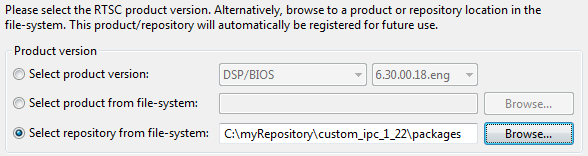
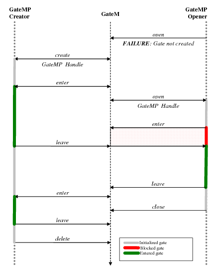
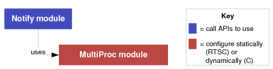
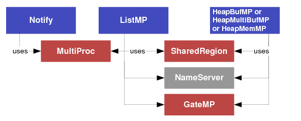
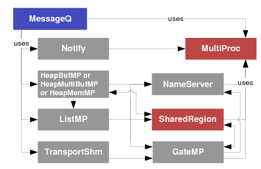
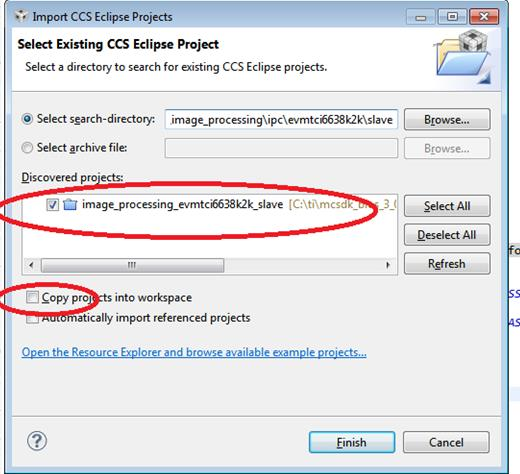
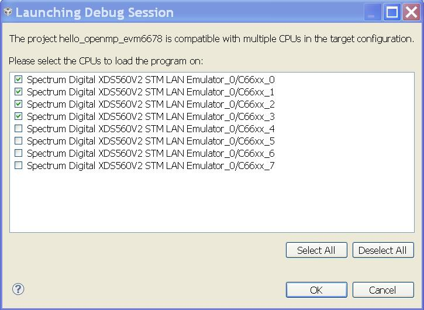

4.3. FC¶
4.4. IPC¶
Inter-Processor Communication (IPC) provides a processor-agnostic API which can be used for communication between processors in a multi-processor environment (inter-core), communication to other threads on same processor (inter-process), and communication to peripherals (inter-device). The API supports message passing, streams, and linked lists. IPC can be used to communicate with the following:
Other threads on the same processor
Threads on other processors running SYS/BIOS
Threads on other processors running an HLOS (e.g., Linux, QNX, Android)
4.4.1. IPC User’s Guide¶
This user’s guide is the new home of the Inter-Processor Communication (IPC) User’s Guide (SPRUGO6). That PDF-based document will no longer be updated.
This user’s guide contains the topics in the following list. It also
links to API reference documentation for static configuration ( )
and run-time C processing (
)
and run-time C processing ( ) for each module.
) for each module.
The ti.sdo.ipc Package describes the modules in the ti.sdo.ipc package.
Module
doc
Config API
C API
Ipc Module
MessageQ Module
ListMP Module (BIOS only)
HeapMP Modules (BIOS only)
GateMP Module
Notify Module (BIOS only)
SharedRegion Module (BIOS only)

The ti.sdo.utils Package describes the modules in the ti.sdo.utils package.
Module
doc
Config API
C API
List Module (BIOS only)
MultiProc Module
NameServer Module
Porting IPC provides an overview of the steps required to port IPC to new devices or systems.
Optimizing IPC Applications provides hints for improving the runtime performance and shared memory usage of applications that use IPC.
Rebuilding IPC explains how to rebuild the IPC libraries if you modify the source files.
Examples explains how to build and generate the IPC examples.
Tests explains details of unit tests part of IPC
RTOS IPC Transports explains details of the additional RTOS IPC transports provided via the Processor SDK PDK component.
4.4.1.2. Other TI IPC useful links¶
IPC 3.x Provides details of IPC 3.x releases
IPC 3.x Migration Guide Provides details of migrating to IPC 3.x from previous releases
IPC 3.x FAQ Frequently asked question on IPC 3.x
IPC Benchmarking IPC Benchmarking with IPC 3.x
4.4.1.3. IPC Install Guides¶
Note
Please see the release notes in your IPC installation before starting to use IPC. The release notes contain important information about feature support, issues, and compatibility information for a particular release.
4.4.2. IPC Install Guides¶
4.4.2.1. BIOS Install Guide¶
4.4.2.1.1. Introduction¶
Inter/Intra Processor Communication (IPC) is a product designed to enable communication between processors in a multi-processor environment. Features of IPC include message passing, multi-processor gates, shared memory primitives, and more.
IPC is designed for use with processors running SYS/BIOS applications. This is typically an ARM or DSP. IPC includes support for High Level Operating Systems (HLOS) like Linux, as well as the SYS/BIOS RTOS. The breadth of IPC features supported in an HLOS environment is reduced in an effort to simplify the product.
4.4.2.1.2. Install¶
IPC is often distributed and installed within a larger SDK. In those cases, no installation is required.
Outside of an SDK, IPC can be downloaded here, and is released as a zip file. To install, simply extract the file.
buildhost$ unzip ipc_<version>.zip
This will extract the IPC product in a directory with its product name and version information (e.g. c:/ti/ipc_<version>)
Note
This document assumes the IPC install path to be the user’s home directory on a Linux host machine (/home/<user>) or the user’s main drive on a Windows host machine (C:\). The variable IPC_INSTALL_DIR will be used throughout the document. If IPC was installed at a different location, make appropriate changes to commands.
Some customers find value in archiving the released sources in a configuration management system. This can help in identifying any changes made to the original sources - often useful when updating to newer releases.
4.4.2.1.3. Build¶
The IPC product often comes with prebuilt libraries, so rebuilding them isn’t necessary. The IPC product downloads contain prebuilt libraries, and when provided with an SDK, IPC is typically rebuilt to contain only libraries appropriate for the SDK.
However, if you want to rebuild its libraries, IPC provides GNU makefile(s) at the base of the product. This section describes the steps required to rebuild the IPC libraries.
Note
GNU make version 3.81 or greater is required. The XDC tools (provided with most SDKs and CCS distributions) includes a pre-compiled version of GNU make 3.81 in $(XDC_INSTALL_DIR)/gmake.
4.4.2.1.3.1. products.mak¶
IPC contains a products.mak file at the root of the product that specifies the necessary paths and options to build IPC for the various OS support.
Edit products.mak and set the following variables:
Note
Please make sure the complete path is specified. (e.g) Don’t use ~ in the path specified.
XDC_INSTALL_DIR - Path to TI’s XDCTools installation
BIOS_INSTALL_DIR - Path to TI’s SYS/BIOS installation
ti.targets.<device target and file format> - Path to TI toolchain for the device.
Set only the variables to the targets your device supports to minimize build time.
gnu.targets.arm.<device target and file format> - Path to GNU toolchain for the device.
Set only the variables to the targets your device supports to minimize build time.
PLATFORM - (Optional) platform for which to build executables
Introduced in IPC 3.10. Prior releases build executables for all platforms based on that targets/toolchains set above
If not set, only libraries will be built (not executables)
Note
The versions used during validation can be found in the IPC Release Notes provided in the product.
4.4.2.1.3.2. ipc-bios.mak¶
IPC is built with a GNU makefile. After editing products.mak, issue the following command:
<buildhost> make -f ipc-bios.mak all
Based on the number of targets you’re building for, this may take some time.
4.4.2.1.4. Examples¶
The IPC product contains an examples/archive directory with device-specific examples. Once identifying your device, the examples can be unzipped anywhere on your build host. Typically once unzipped, the user edits the example’s individual products.mak file and simply invokes make.
Note
A common place to unzip the examples is into the IPC_INSTALL_DIR/examples/ directory. Each example’s products.mak file is smart enough to look up two directories (in this case, into IPC_INSTALL_DIR) for a master products.mak file, and if found it uses those variables. This technique enables users to set the dependency variables in one place, namely IPC_INSTALL_DIR/products.mak.
Each example contains a readme.txt with example-specific details.
4.4.2.1.5. See Also¶
4.4.2.2. Linux Install Guide¶
4.4.2.2.1. Introduction¶
Inter/Intra Processor Communication (IPC) is a product designed to enable communication between processors in a multi-processor environment. Features of IPC include message passing, multi-processor gates, shared memory primitives, and more.
IPC is designed for use with processors running SYS/BIOS applications. This is typically an ARM or DSP. IPC includes support for High Level Operating Systems (HLOS) like Linux, as well as the SYS/BIOS RTOS. The breadth of IPC features supported in an HLOS environment is reduced in an effort to simplify the product.
4.4.2.2.2. Install¶
IPC is often distributed and installed within a larger SDK. In those cases, no installation is required.
Outside of an SDK, IPC can be downloaded here, and is released as a zip file. To install, simply extract the file.
buildhost$ unzip ipc_<version>.zip
This will extract the IPC product in a directory with its product name and version information (e.g. c:/ti/ipc_<version>)
Note
This document assumes the IPC install path to be the user’s home directory on a Linux host machine (/home/<user>) or the user’s main drive on a Windows host machine (C:\). The variable IPC_INSTALL_DIR will be used throughout the document. If IPC was installed at a different location, make appropriate changes to commands.
Some customers find value in archiving the released sources in a configuration management system. This can help in identifying any changes made to the original sources - often useful when updating to newer releases.
4.4.2.2.3. Build¶
The IPC product often comes with prebuilt SYS/BIOS-side libraries, so rebuilding them isn’t necessary. The Linux-side user libraries may also be provided prebuilt, but customers often want to change the configuration (e.g. static, dynamic).
IPC provides GNU makefile(s) to rebuild all its libraries at the base of the product, details are below.
Note
GNU make version 3.81 or greater is required. The XDC tools (provided with most SDKs and CCS distributions) includes a pre-compiled version of GNU make 3.81 in $(XDC_INSTALL_DIR)/gmake.
4.4.2.2.3.1. products.mak¶
IPC contains a products.mak file at the root of the product that specifies the necessary paths and options to build IPC for the various OS support.
Edit products.mak and set the following variables:
Variables used by both Linux-side and BIOS-side build scripts
PLATFORM - (Optional) Device to build for
To find the supported list of platforms, run: ./configure –help
If not set, Linux libraries and executables for all supported platforms will be built.
If not set, BIOS libraries for all toolchains specified (see below) will be built, but no BIOS-side executables will be built.
BIOS-side builds started leveraging this variable in IPC 3.10. Prior releases built BIOS-side executables for all supported platforms based on that targets/toolchains set above (which can take a while!)
Variables used by Linux-side build scripts
TOOLCHAIN_INSTALL_DIR - Path to the devices ARM Linux cross-compiler toolchain
TOOLCHAIN_LONGNAME - Long name of the devices toolchain (e.g. arm-none-linux-gnueabi)
KERNEL_INSTALL_DIR - Location of your Linux kernel installation
In old releases, this variable was optional, and only needed for platforms that support the MmRpc API (e.g. OMAP5, DRA7XX). In IPC 3.00.04, 3.10.02, and 3.20+, all platforms began requiring this variable to interrogate your kernel’s version (via KERNEL_INSTALL_DIR/linux/version.h) and accommodate different kernels.
DRM_PREFIX - (Optional) Location of your libdrm installation, used by some MmRpc tests
This is only used by MmRpc tests, and therefore only should be set for platforms that support the MmRpc API
If set, additional MmRpc tests may be built.
CMEM_INSTALL_DIR - (Optional) Path to TI Linux Utils package to locate the pre-built CMEM libraries used by some MessageQ tests
If set, additional test applications for select platforms may be built.
Variables used by BIOS-side build scripts
XDC_INSTALL_DIR - Path to TI’s XDCTools installation (e.g. c:/ti/xdctools_<version>)
BIOS_INSTALL_DIR - Path to TI’s SYS/BIOS installation (e.g. c:/ti/bios_<version>)
ti.targets.<device target and file format> - Path to TI toolchain for the device. (e.g. c:/ti/CCS/ccsbase/tools/compiler/c6000_<version>)
Set only the variables to the targets your device supports to minimize build time.
Note
The specific versions of dependent components can be found in the IPC Release Notes, provided in the product.
4.4.2.2.3.2. ipc-linux.mak¶
The Linux-side build is provided as a GNU Autotools (Autoconf, Automake, Libtool) project. If you are familiar with Autoconf GNU projects, you can proceed with using the ./configure script directly to cross-compile the Linux user libraries and tests.
For those that require some assistance, the IPC package provides a GNU makefile (ipc-linux.mak) to configure the Linux-side build, using the options and component paths set in the products.mak file. To configure the build using these files, issue the following command:
<buildhost> make -f ipc-linux.mak config
There are few additional target goals provided in the ipc-linux.mak file for commonly used configurations. These goals include:
config - (Default) Configure both static and shared (dynamic) Linux IPC user libraries. Executables (e.g. lad and tests) link against the shared libraries.
config-static - Configure static only libraries and executables.
config-shared - Configure shared (dynamic) only libraries and executables.
Once the ‘config’ is complete, and the autotools-generated Makefile has been created, you can build the Linux side of IPC by issuing the following:
<buildhost> make
You can also specify a PLATFORM to (re)configure for on the command line which overrides any options set in the products.mak file as follows:
<buildhost> make -f ipc-linux.mak config PLATFORM=omapl138
<buildhost> make
Note that before reconfiguring for a new Linux toolchain or platform, the autotools-generated files should be clean(ed):
<buildhost> make distclean
4.4.2.2.3.3. ipc-bios.mak¶
The SYS/BIOS-side IPC is built with a GNU makefile. After editing products.mak, issue the following command:
<buildhost> make -f ipc-bios.mak all
Based on the number of targets you’re building for, this may take some time.
Note
The BIOS-side libraries often come pre-built, so in many cases, rebuilding the BIOS-side is not necessary. Some reasons you may want to rebuild:
Your distribution of IPC didn’t come with the necessary pre-built libraries
You intend to run the ‘test’ executables (which often don’t come pre-built)
You want to use a specific toolchain or dependency version
You want to tune some of the compile options
4.4.2.2.4. Run¶
The IPC product provides a way to install (copy) the necessary IPC executables and libraries onto the device’s target file-system to simplify the execution of the applications.
4.4.2.2.4.1. Configuring Kernel¶
The IPC product provides a set of Linux kernel patches that need to be applied to the different device supported kernels to add necessary kernel support. The patches are located in the linux/patches directory of the IPC installation.
4.4.2.2.4.1.1. OMAP-L138¶
The kernel for the OMAP-L138, can be obtained from Gitorious linux-davinci project.
The patches apply to the following commit id: 595ab716fc6e648b7dc79a58a01917ebb67b9508
The specific patches needed for this kernel can be found in the linux/patches/3.8.0 of your IPC installation.
Once the patches are applied, there are a few key config parameters needed for rpmsg and socket driver to build/work.
CONFIG_REMOTEPROC=m CONFIG_DA8XX_REMOTEPROC=m CONFIG_RPMSG=m CONFIG_VIRTIO=m It is also recommended to compile a Linux kernel with the debugfs facility
CONFIG_DEBUG_FS=y Re-build the kernel. For example:
buildhost$ make ARCH=arm CROSS_COMPILE=arm-none-linux-gnueabi- uImage
You will also need to re-build the kernel modules and install them on your target’s file system. For example:
buildhost$ make ARCH=arm CROSS_COMPILE=arm-none-linux-gnueabi- modules
buildhost$ make ARCH=arm CROSS_COMPILE=arm-none-linux-gnueabi- INSTALL_MOD_PATH=<target filesystem> modules_install
4.4.2.2.4.2. Kernel Boot-up Parameters¶
IPC requires an argument to be passed to the Linux kernel during boot up to properly run the tests. The remote processor(s) (rproc) memory location needs to be set.
For example,
bootargs console=ttyS2,115200n8 root=/dev/nfs nfsroot=HOST:nfs_root,nolock rw ip=dhcp rproc_mem=16M@0xC3000000
This is just an example, bootargs may vary depending on available setup Depending on the memory map used in the final system configuration, the memory to be reserved for rproc usage may differ.
4.4.2.2.4.3. Installing Tests¶
To assemble the IPC test executables and libraries into a directory structure suitable for running on the target’s file-system, issue the following command in the IPC install directory:
buildhost$ make install prefix=<target filesystem>/usr
Depending on you target’s filesystem directory privileges, you may be required to run **sudo make install* to properly install the files *
Note
The test executables and libraries will be installed in the location path set by the prefix variable. If you are installing directly on a host mounted Network Filesystem(NFS), make sure to specify usr at the end of the prefix variable path. As with other variables, you can override this on the command line:
buildhost$ sudo make install prefix=<target filesystem>/usr
The remote processor’s applications will be loaded via the remote_proc kernel module but they need to reside on the devices target filesystem in /lib/firmware directory. The location of the remote core application within the IPC product various based on device.
4.4.2.2.4.3.1. Slave Binaries¶
The slave-side test binaries, once built, are found in your IPC_INSTALL_DIR/packages/ti/ipc/tests/bin/<platform>_<core> directory.
Copy the appropriate slave-side executable onto the devices target filesystem into the /lib/firmware directory. For example, OMAP-L138 developers would do this:
buildhost$ cp IPC_INSTALL_DIR/packages/ti/ipc/tests/bin/ti_platforms_evmOMAPL138_DSP/ <target filesystem>/lib/firmware/.
4.4.2.2.4.3.2. IPC Daemons and Drivers¶
IPC provides system-wide services across multiple applications, and utilizes low-level system hardware (e.g. interrupts and shared memory). To facilitate these services, IPC uses a user-space daemon (LAD) and several kernel device drivers.
LAD
System-wide IPC state is managed by a user-space daemon (LAD). This daemon is specific to a given device, and is named lad_<device>. It will reside on the target’s filesystem (typically in /usr/bin/) after following the #Installing Tests section. To run LAD, execute:
target# /usr/bin/lad_<device>
This forks the LAD daemon and leaves it running in the background.
LAD takes an optional argument to indicate a filename into which log statements should be emitted. This file will be created in the /tmp/LAD/ directory. How to specify the filename varies based on your IPC release. For example, to instruct LAD to emit log statements into a ‘lad.txt’ file, start LAD like this:
Releases before IPC 3.21:
target# /usr/bin/lad_<device> lad.txt
IPC 3.21 and after:
target# /usr/bin/lad_<device> -l lad.txt
Drivers
The kernel drivers/modules added by the Linux patches must be inserted into the kernel for IPC applications to run correctly. Refer to the #Configuring Kernel section. The required modules must be configured, built and loaded onto the target’s filesystem.
Prior to loading the modules, a directory (/debug) must be created at the root of your devices filesystem. This directory will be mounted as a debugfs (debug filesystem) which the kernel modules will use to provide details about the slaves (e.g. running state, trace output, etc). If the /debug directory doesn’t exist, simply create it as follows:
target# mkdir /debug
OMAP-L138
On OMAP-L138, the kernel modules can be loaded with the following command on the target’s file-system:
target# depmod -a
target# mount -t debugfs none /debug
target# modprobe remoteproc
target# modprobe da8xx_remoteproc da8xx_fw_name=messageq_single.xe674
target# modprobe virtio_rpmsg_bus
target# modprobe rpmsg_proto
The kernel modules can be unloaded by issuing the following command on the target’s file-system:
target# umount /debug
target# rmmod rpmsg_proto
target# rmmod virtio_rpmsg_bus
target# rmmod da8xx_remoteproc
target# rmmod remoteproc
OMAP54XX
On OMAP54XX, the kernel modules can be loaded with the following command on the target’s file-system:
target# depmod -a
target# mount -t debugfs none /debug
target# modprobe remoteproc
target# modprobe omap_remoteproc
target# modprobe virtio_rpmsg_bus
target# modprobe rpmsg_proto
4.4.2.2.4.3.3. Running Test Applications¶
The test applications are already on the target’s filesystem in /usr/bin assuming the #Installing Tests section has been followed.
To run the test application’s, execute the following on the target’s filesystem:
target# /usr/bin/MessageQApp_<device>
OMAP-L138
The expected output on the Linux-side should be:
Using numLoops: 100; procId : 1
Entered MessageQApp_execute
Local MessageQId: 0x1
Remote queueId [0x10000]
Exchanging 100 messages with remote processor DSP...
MessageQ_get #0 Msg = 0x15328
Exchanged 1 messages with remote processor DSP
MessageQ_get #1 Msg = 0x15328
...
...
Exchanged 99 messages with remote processor DSP
MessageQ_get #99 Msg = 0x15328
Exchanged 100 messages with remote processor DSP
Sample application successfully completed!
Leaving MessageQApp_execute
The output on the remote processor, can be obtained by running the following on the target filesystem:
target# cat /debug/remoteproc/remoteproc0/trace0
The expected output on the remote processor should be:
3 Resource entries at 0xc3100000
messageq_single.c:main: MultiProc id = 1
registering rpmsg-proto service on 61 with HOST
tsk1Fxn: created MessageQ: SLAVE_DSP; QueueID: 0x10000
Awaiting sync message from host...
[t=0x00000001:67984156] ti.ipc.rpmsg.MessageQCopy: MessageQCopy_send: no object for endpoint: 53
[t=0x00000001:67f626ed] ti.ipc.rpmsg.MessageQCopy: MessageQCopy_send: no object for endpoint: 53
Received msg from (procId:remoteQueueId): 0x0:0x1
payload: 8 bytes; loops: 100 with printing.
Got msg #0 (40 bytes) from procId 0
Sending msg Id #0 to procId 0
Got msg #1 (40 bytes) from procId 0
Sending msg Id #1 to procId 0
...
...
Got msg #98 (40 bytes) from procId 0
Sending msg Id #98 to procId 0
Got msg #99 (40 bytes) from procId 0
Sending msg Id #99 to procId 0
Awaiting sync message from host...
[t=0x00000015:7b46c4c2] ti.ipc.rpmsg.MessageQCopy: MessageQCopy_send: no object for endpoint: 53
[t=0x00000015:7b6315fb] ti.ipc.rpmsg.MessageQCopy: MessageQCopy_send: no object for endpoint: 53
4.4.2.2.5. See Also¶
4.4.2.3. QNX Install Guide¶
4.4.2.3.1. Introduction¶
Inter/Intra Processor Communication (IPC) is a product designed to enable communication between processors in a multi-processor environment. Features of IPC include message passing, multi-processor gates, shared memory primitives, and more.
IPC is designed for use with processors running SYS/BIOS applications. This is typically an ARM or DSP. IPC includes support for High Level Operating Systems (HLOS) like Linux, as well as the SYS/BIOS RTOS. The breadth of IPC features supported in an HLOS environment is reduced in an effort to simplify the product.
4.4.2.3.2. Install¶
IPC is often distributed and installed within a larger SDK. In those cases, no installation is required.
Outside of an SDK, IPC can be downloaded here, and is released as a zip file. To install, simply extract the file.
buildhost$ unzip ipc_<version>.zip
This will extract the IPC product in a directory with its product name and version information (e.g. c:/ti/ipc_<version>)
Note
This document assumes the IPC install path to be the user’s home directory on a Linux host machine (/home/<user>) or the user’s main drive on a Windows host machine (C:\). The variable IPC_INSTALL_DIR will be used throughout the document. If IPC was installed at a different location, make appropriate changes to commands.
Some customers find value in archiving the released sources in a configuration management system. This can help in identifying any changes made to the original sources - often useful when updating to newer releases.
4.4.2.3.3. Build¶
The IPC product often comes with prebuilt SYS/BIOS-side libraries, so rebuilding them isn’t necessary. The QNX-side libraries/binaries may also be provided prebuilt by SDK programs, but the standalone IPC release does not currently pre-build them.
IPC provides GNU makefile(s) to rebuild all its libraries at the base of the product, details are below.
Note
GNU make version 3.81 or greater is required. The XDC tools (provided with most SDKs and CCS distributions) includes a pre-compiled version of GNU make 3.81 in $(XDC_INSTALL_DIR)/gmake.
4.4.2.3.3.1. products.mak¶
IPC contains a products.mak file at the root of the product that specifies the necessary paths and options to build IPC for the various OS support.
Edit products.mak and set the following variables:
Variables used by both QNX and BIOS
PLATFORM - Device to build for
QNX started using this variable in IPC 3.20. Prior releases required setting “DEVICE” for QNX and “PLATFORM” for BIOS. The two variables were consolidated in IPC 3.20.
BIOS started leveraging this variable in IPC 3.10. Prior releases built BIOS-side executables for all supported platforms based on that targets/toolchains set above (which can take a while!)
QNX
QNX_INSTALL_DIR - Path to your QNX installation directory.
DESTDIR - Path to which target binaries will be exported when running the ‘make install’ goal.
DEVICE - (only required for releases prior to IPC 3.20) Device to build for
SYS/BIOS
XDC_INSTALL_DIR - Path to TI’s XDCTools installation
BIOS_INSTALL_DIR - Path to TI’s SYS/BIOS installation
ti.targets.<device target and file format> - Path to TI toolchain for the device.
Set only the variables to the targets your device supports to minimize build time.
gnu.targets.arm.<device target and file format> - Path to GNU toolchain for the device.
Set only the variables to the targets your device supports to minimize build time.
Note
The versions used during validation can be found in the IPC Release Notes provided in the product.
ipc-qnx.mak
The QNX-side build is performed using QNX makefiles. To build using the components paths set in the products.mak file, issue the following command:
<buildhost> make -f ipc-qnx.mak all
4.4.2.3.3.2. ipc-bios.mak¶
The SYS/BIOS-side IPC is built with a GNU makefile. After editing products.mak, issue the following command:
<buildhost> make -f ipc-bios.mak all
Based on the number of targets you’re building for, this may take some time.
Note for Windows users: If you are building with a Windows host machine and it has the QNX tools installed, you will instead need to run the following in a separate command prompt window (cmd.exe) to build the SYS/BIOS side outside of the QNX build environment:
<buildhost> set PATH=C:\Windows\system32;C:\Windows;C:\Windows\System32\Wbem
<buildhost> <XDC_INSTALL_DIR>\gmake -f ipc-bios.mak all
where <XDC_INSTALL_DIR> should be replaced with the installation directory of your XDC tools, same as the path you have used in products.mak.
4.4.2.3.4. Run¶
The IPC product provides a way to install (copy) the necessary IPC executables and libraries onto the device’s target file-system to simplify the execution of the applications. The details can vary across OS’s, so this description has been separated into OS-specific sections.
4.4.2.3.4.1. Configuring the BSP¶
Some of the provided IPC tests that use a utility called SharedMemoryAllocator require a carveout to be created in the QNX-owned memory. To reserve this memory, you must make the following change in the file <QNX BSP installation directory>srchardwarestartupboards<board name>build in the QNX BSP. E.g.
startup-omap5432uevm -r 0xBA300000,0x5A00000 -vvvvv -P2 -W
Save the file, then rebuild the QNX OS image (ifs-*.bin) and replace your existing one with the new one.
4.4.2.3.4.2. Installing Tests in QNX¶
To assemble the IPC resource manager, shared libraries and test executables into a directory structure suitable for running on the device’s file-system, issue the following command in the IPC_INSTALL_DIR directory:
buildhost$ make -f ipc-qnx.mak install
This will install the binaries into the directory specified by DESTDIR in products.mak. It this assumed that DESTDIR is a directory visible to the target filesystem. If not, you should copy its contents to such a location (e.g. onto an SD card that can be accessed by the EVM).
When building in Windows, some users might get build messages that report a version mismatch in cygwin:
C:/QNX650/host/win32/x86/usr/bin/make -j 1 -Cle.v7 -fMakefile install
1 [main] ? (5984) C:\QNX650\host\win32\x86\usr\photon\bin\find.exe: *** fa
tal error - system shared memory version mismatch detected - 0x8A88009C/0x2D1E009C.
This problem is probably due to using incompatible versions of the cygwin DLL.
Search for cygwin1.dll using the Windows Start->Find/Search facility
and delete all but the most recent version. The most recent version *should*
reside in x:\cygwin\bin, where 'x' is the drive on which you have
installed the cygwin distribution. Rebooting is also suggested if you
are unable to find another cygwin DLL.
Based on what we observed the binaries are still exported correctly despite the messages. If you do want to eliminate them, you should replace the file cygwin1.dll in <QNX_INSTALL_DIR>hostwin32x86usrphotonbin with the newest cygwin1.dll you can find on your host machine (do a search on your PC’s filesystem in Windows).
Some of the tests rely on corresponding remote core applications to be run on the slave processor(s). The remote processor’s applications are loaded when launching the resource manager. See section #IPC_resource_manager for details on launching the resource manager.
The location of the remote core applications within the IPC product varies based on device.
4.4.2.3.4.2.1. Installing remote core applications¶
Remote core applications can be found in <IPC_INSTALL_DIR>/packages/ti/ipc/tests/bin/ti_platform_<your platform name>_* directories.
For example, you can copy the messageq_single.xem4 for OMAP54xx uEVM’s IPU onto the device’s target filesystem into the bin directory as follows:
buildhost$ copy <IPC_INSTALL_DIR>/packages/ti/ipc/tests/bin/ti_platform_omap54xx_ipu/messageq_single.xem4 <DESTDIR>/armle-v7/bin
‘ti_platform_omap54xx_ipu’ indicates the platform is ‘omap54xx’ and the remote core name is ‘IPU’. You only need to copy the binaries relevant to your platform.
4.4.2.3.4.3. IPC resource manager¶
Much of the functionality of IPC is provided by the resource manager. It can be launched as follows:
target# cd <target directory corresponding to DESTDIR>/armle-v7/bin
target# export LD_LIBRARY_PATH=$LD_LIBRARY_PATH:<target directory corresponding to DESTDIR>/armle-v7/usr/lib
target# ipc <CORE1> <remote executable 1> <CORE2> <remote executable 2> ...
<CORE> should correspond to the name of the remote core on which you want the remote executable to be loaded. As a rule of thumb, it is the capitalized version of the core name specified by the name of the directory from which the executable was copied in the #Installing remote core applications section. For example, if the executable is copied from “ti_platform_omap54xx_**ipu**/test_omx_ipu_omap5.xem4”, then you should load it as follows:
target# ipc IPU test_omx_ipu_omap5.xem4
The resource manager will register devices in the pathname space for communicating with the IPC. Communication with the IPC is only possible once the needed devices are registered. The following devices are registered by default when the IPC resource manager is launched:
Device |
Description |
|---|---|
/dev/tiipc |
Provides the “ti-ipc” protocol. Needed by MessageQ APIs. |
/dev/ipc |
Provides the HWSpinLock functionality. Needed by GateMP APIs. |
Additionally, more devices may be registered by the remote core firmware if using the “rpmsg-rpc” protocol. In that case, the name that appears in the pathname space is specified by the remote core firmware.
Later, when you are done running applications that use IPC and no longer need the resource manager, it can be terminated as follows:
target# cd <target directory corresponding to DESTDIR>/armle-v7/bin
target# slay ipc
4.4.2.3.4.4. Running Test Applications¶
The QNX-side of the test applications are already on the target’s filesystem in <target directory corresponding to DESTDIR>/armle-v7/bin and <target directory corresponding to DESTDIR>/armle-v7/bin/tests, assuming the #Installing Tests in QNX and #IPC resource manager sections have been followed and that the resource manager has loaded the remote core(s) with the executable corresponding to the test you’d like to run.
To find out the syntax to use for running the test (say MessageQApp), run
target# cd <target directory corresponding to DESTDIR>/armle-v7/bin/tests
target# use MessageQApp
To run a test application, execute it on the target’s filesystem:
target# cd <target directory corresponding to DESTDIR>/armle-v7/bin/tests
target# ./MessageQApp 10
Here is a list of the main tests that are available in the IPC product:
MessageQApp: Test that creates a single thread that sends messages from host to remote core using MessageQ
messageq_single.x* need to be loaded by the resource manager
MessageQMulti: Test that creates multiple threads which send messages from host to remote core using MessageQ
messageq_multi.x* need to be loaded by the resource manager
mmrpc_test: Test that exercises MMRPC
test_omx_ipu_<platform>.x* need to be loaded by the resource manager
Aside from the IPC resource manager, this test also needs the shmemallocator resource manager to be launched beforehand:
target# cd <target directory corresponding to DESTDIR>/armle-v7/bin
target# shmemallocator
target# cd tests
target# mmrpc_test 1
Expected output
To give you an idea, the expected output for MessageQApp on the QNX-side should look similar to this:
Using numLoops: 10; procId : 1
Entered MessageQApp_execute
Local MessageQId: 0x1
Remote queueId [0x10000]
Exchanging 10 messages with remote processor IPU...
MessageQ_get #0 Msg = 0x11c9f0
Exchanged 1 messages with remote processor IPU
MessageQ_get #1 Msg = 0x11c9f0
Exchanged 2 messages with remote processor IPU
MessageQ_get #2 Msg = 0x11c9f0
...
...
Exchanged 9 messages with remote processor IPU
MessageQ_get #9 Msg = 0x11c9f0
Exchanged 10 messages with remote processor IPU
Sample application successfully completed!
Leaving MessageQApp_execute
The output on the remote processor can be obtained by running the following on the target filesystem:
target# cat /dev/ipc-trace/IPU
The expected output on the remote processor should look similar to this:
[0][ 0.000] 16 Resource entries at 0x3000
[0][ 0.000] messageq_single.c:main: MultiProc id = 1
[0][ 0.000] [t=0x006c565d] ti.ipc.transports.TransportVirtioSetup: TransportVirtio
Setup_attach: remoteProcId: 0
[0][ 0.000] registering rpmsg-proto:rpmsg-proto service on 61 with HOST
[0][ 0.000] [t=0x0072625b] ti.ipc.rpmsg.MessageQCopy: MessageQCopy_create: endPt c
reated: 61
[0][ 0.000] [t=0x0073e8d9] ti.ipc.rpmsg.MessageQCopy: callback_availBufReady: virt
Queue_toHost kicked
[0][ 0.000] [t=0x00753771] ti.ipc.rpmsg.MessageQCopy: callback_availBufReady: virt
Queue_fromHost kicked
[0][ 0.000] [t=0x0076cb49] ti.ipc.rpmsg.MessageQCopy: MessageQCopy_swiFxn:
[0][ 0.000] Received msg: from: 0x5a, to: 0x35, dataLen: 72
[0][ 0.000] [t=0x007872e9] ti.ipc.rpmsg.MessageQCopy: MessageQCopy_send: no object
for endpoint: 53
[0][ 0.000] tsk1Fxn: created MessageQ: SLAVE_CORE0; QueueID: 0x10000
[0][ 0.000] Awaiting sync message from host...
[0][ 51.992] [t=0x0c475268] ti.ipc.rpmsg.MessageQCopy: callback_availBufReady: virt
Queue_fromHost kicked
[0][ 51.992] [t=0x0c48eb28] ti.ipc.rpmsg.MessageQCopy: MessageQCopy_swiFxn:
[0][ 51.993] Received msg: from: 0x400, to: 0x3d, dataLen: 176
[0][ 51.993] [t=0x0c4ad220] ti.ipc.rpmsg.MessageQCopy: MessageQCopy_send: calling c
allback with data len: 176, from: 1024
[0][ 51.993]
[0][ 52.995] [t=0x0c873ded] ti.ipc.rpmsg.MessageQCopy: callback_availBufReady: virt
Queue_fromHost kicked
[0][ 52.996] [t=0x0c88b029] ti.ipc.rpmsg.MessageQCopy: MessageQCopy_swiFxn:
[0][ 52.996] Received msg: from: 0x406, to: 0x3d, dataLen: 40
[0][ 52.996] [t=0x0c8a8a87] ti.ipc.rpmsg.MessageQCopy: MessageQCopy_send: calling c
allback with data len: 40, from: 1030
[0][ 52.996]
[0][ 52.996] Received msg from (procId:remoteQueueId): 0x0:0x1
[0][ 52.996] payload: 8 bytes; loops: 10 with printing.
[0][ 52.997] [t=0x0c8eab7e] ti.ipc.rpmsg.MessageQCopy: callback_availBufReady: virt
Queue_fromHost kicked
[0][ 52.997] [t=0x0c9031bc] ti.ipc.rpmsg.MessageQCopy: MessageQCopy_swiFxn:
[0][ 52.997] Received msg: from: 0x406, to: 0x3d, dataLen: 40
[0][ 52.997] [t=0x0c9208fa] ti.ipc.rpmsg.MessageQCopy: MessageQCopy_send: calling c
allback with data len: 40, from: 1030
[0][ 52.997]
[0][ 52.997] Got msg #0 (40 bytes) from procId 0
[0][ 52.997] Sending msg Id #0 to procId 0
[0][ 52.998] [t=0x0c959f33] ti.ipc.rpmsg.MessageQCopy: callback_availBufReady: virt
Queue_fromHost kicked
[0][ 52.998] [t=0x0c971df7] ti.ipc.rpmsg.MessageQCopy: MessageQCopy_swiFxn:
[0][ 52.998] Received msg: from: 0x406, to: 0x3d, dataLen: 40
[0][ 52.998] [t=0x0c98f3e7] ti.ipc.rpmsg.MessageQCopy: MessageQCopy_send: calling c
allback with data len: 40, from: 1030
[0][ 52.998]
[0][ 52.999] Got msg #1 (40 bytes) from procId 0
[0][ 52.999] Sending msg Id #1 to procId 0
[0][ 52.999] [t=0x0c9c7a00] ti.ipc.rpmsg.MessageQCopy: callback_availBufReady: virt
Queue_fromHost kicked
[0][ 52.999] [t=0x0c9df7fc] ti.ipc.rpmsg.MessageQCopy: MessageQCopy_swiFxn:
[0][ 52.999] Received msg: from: 0x406, to: 0x3d, dataLen: 40
[0][ 52.999] [t=0x0c9fce5a] ti.ipc.rpmsg.MessageQCopy: MessageQCopy_send: calling c
allback with data len: 40, from: 1030
[0][ 52.999]
[0][ 53.000] Got msg #2 (40 bytes) from procId 0
[0][ 53.000] Sending msg Id #2 to procId 0
[0][ 53.000] [t=0x0ca36e79] ti.ipc.rpmsg.MessageQCopy: callback_availBufReady: virt
Queue_fromHost kicked
[0][ 53.000] [t=0x0ca4ea95] ti.ipc.rpmsg.MessageQCopy: MessageQCopy_swiFxn:
[0][ 53.000] Received msg: from: 0x406, to: 0x3d, dataLen: 40
[0][ 53.001] [t=0x0ca6c975] ti.ipc.rpmsg.MessageQCopy: MessageQCopy_send: calling c
allback with data len: 40, from: 1030
[0][ 53.001]
[0][ 53.001] Got msg #3 (40 bytes) from procId 0
[0][ 53.001] Sending msg Id #3 to procId 0
...
...
[0][ 53.007] Got msg #8 (40 bytes) from procId 0
[0][ 53.007] Sending msg Id #8 to procId 0
[0][ 53.007] [t=0x0cccd3d7] ti.ipc.rpmsg.MessageQCopy: callback_availBufReady: virt
Queue_fromHost kicked
[0][ 53.007] [t=0x0cce50ed] ti.ipc.rpmsg.MessageQCopy: MessageQCopy_swiFxn:
[0][ 53.007] Received msg: from: 0x406, to: 0x3d, dataLen: 40
[0][ 53.007] [t=0x0cd027bd] ti.ipc.rpmsg.MessageQCopy: MessageQCopy_send: calling c
allback with data len: 40, from: 1030
[0][ 53.007]
[0][ 53.008] Got msg #9 (40 bytes) from procId 0
[0][ 53.008] Sending msg Id #9 to procId 0
[0][ 53.008] Awaiting sync message from host...
4.4.2.3.4.5. Running standalone examples¶
On some platforms, there are standalone examples provided to illustrate how to use specific features in IPC. These standalone examples are designed to be easily rebuilt outside of the IPC product, and represent a good starting point for development. If available, the examples are located in <IPC_INSTALL_DIR>examplesarchive<platform of your choice>.
To use the examples, unzip the example you want in a working directory of your choice. Update the products.mak file in the example’s directory with the installation locations of the various dependent components. Then build it. E.g.:
buildhost$ unzip ex02_messageq.zip
buildhost$ cd ex02_messageq
buildhost$ make clean
buildhost$ make
buildhost$ make install
This would produce the host and remote core binaries in an ‘install’ subdirectory. Tip: Alternatively, for convenience, you can also extract and rebuild all examples available for your platform at once with this series of commands:
buildhost$ cd <IPC_INSTALL_DIR>/examples
buildhost$ make extract
buildhost$ make
buildhost$ make install
Next step is to copy the content of the ‘install’ subdirectory into a location accessible by your target board (e.g. SD card). Run the example on the target using IPC by loading the remote cores like you would with the test applications, then run the example. E.g.:
target# ipc IPU ex02_messageq/debug/server_ipu.xem4 DSP ex02_messageq/debug/server_dsp.xe64T
target# cd ex02_messageq/debug/
target# app_host IPU
4.4.2.3.4.6. Advanced topics¶
4.4.2.3.4.6.1. Load and unload individual cores while IPC is running (IPC 3.23.01 and above)¶
In some applications, there may be a need to load or unload cores after the IPC resource manager is already up and running – e.g. change the DSP executable while keeping the IPU running.
In order to load and start a core with an executable, you can do the following after having launched the resource manager:
target# echo <slave executable file path> > /dev/ipc-file/<core name>
target# echo 1 > /dev/ipc-state/<core name>
The first command sets the filename of an executable to be loaded, and the second command loads and starts the core with that executable.
To stop and unload a core, use the following command:
target# echo 0 > /dev/ipc-state/<core name>
Keep in mind that this simply puts the core into reset. If there is any on-going communication between the given core and the others, it is the responsibility of the user application to clean up and terminate IPC on the slave before unloading a core, thus to avoid causing any memory leaks or communication errors.
4.4.2.3.4.6.2. Inspect the state of a slave core (IPC 3.23.01 and above)¶
To find out the state of a slave core (whether it is running or in reset), issue the following command:
target# cat /dev/ipc-state/<core name>
4.4.2.3.4.6.3. Tracing¶
When an issue arises, sometimes it is useful to see the output of internal traces from IPC. This section talks about how to view IPC trace from both the host and the slave cores on the QNX command prompt.
Host-side trace output
Trace from IPC user libraries (IPC 3.35 and above)
Trace output from the IPC user libraries is controlled using the environment variable IPC_DEBUG, when launching an application that uses IPC. E.g.:
target# IPC_DEBUG=<level> app_host
where <level> can be set to a value between 1 and 3, with 3 being the most verbose.
Trace from IPC resource manager (IPC 3.35 and above)
To show the trace output of the IPC resource manager in the QNX system log, run the following command:
target# sloginfo -m42
The verbosity of the trace can be controlled using the environment variable IPC_DEBUG_SLOG_LEVEL when launching the IPC resource manager. E.g.:
target# IPC_DEBUG_SLOG_LEVEL=<level> ipc DSP1 ex02_messageq/debug/server_dsp1.xe66
where <level> can be set to a value between 0 and 7, with 7 being the most verbose. The default level is 2.
Slave-side trace output
To show all trace output (including IPC’s) on a given slave core, simply run the following
target# cat /dev/ipc-trace/<core name>
where <core name> corresponds to the name of the slave core which trace output you are interested in (e.g. DSP1, IPU1 or IPU2 for DRA7xx)
Note that older versions of IPC may use a slightly different path that is based on the MultiProc id of the core of interest: /dev/ipc-trace<id>.
4.4.2.3.4.6.4. Building the IPC resource manager in debug mode (IPC 3.35 and above)¶
When debugging an issue, the user may wish to have the ability to step through the source code in the IPC resource manager. For this to happen, the IPC resource manager needs to be built in debug mode with debug symbols. Adding IPC_DEBUG=1 to the file <IPC_INSTALL_DIR>/qnx/Makefile and rebuilding IPC would do the trick:
ipc3x_dev: utils
@cd src/ipc3x_dev; \
make IPC_PLATFORM=$(IPC_PLATFORM) SMP=1 QNX_CFLAGS=$(QNX_CFLAGS) IPC_DEBUG=1
target# make -f ipc-qnx.mak clean
target# make -f ipc-qnx.mak all
4.4.2.3.5. See Also¶
4.4.3. Porting IPC¶
4.4.3.1. Interfaces to Implement¶
When porting IPC to new devices, you may need to create custom implementations of the following interfaces. You may find that the provided implementations of these interfaces meet your needs, so don’t assume that you will need to create custom implementation in all cases.
“IInterrupt”? for use by Notify. The interface definition is in ti.sdo.ipc.notifyDrivers.IInterrupt.
“IGateMPSupport”? for use by GateMP. The interface definition is in ti.sdo.ipc.interfaces.IGateMPSupport.
“IMessageQTransport”? and “ITransportSetup”? for use by MessageQ. Interface definitions are in ti.sdo.ipc.interfaces.IMessageQTransport and ti.sdo.ipc.interfaces.ITransportSetup.
“INotifyDriver”? for use by Notify. The interface definition is in ti.sdo.ipc.interfaces.INotifyDriver.
“INotifySetup”? module, which defines interrupt mappings, for use by Notify. The interface definition is in ti.sdo.ipc.interfaces.INotifySetup.
For details about the interfaces, see the IPC online documentation.
4.4.3.2. Other Porting Tasks¶
You will likely need to specify custom shared region(s) in your configuration file. For details, see SharedRegion Module.
Optionally, you may implement custom Heaps and hardware-specific versions of other IPC modules.
4.4.4. Optimizing IPC Applications¶
4.4.4.1. Compiler and Linker Optimization¶
You can optimize your application for better performance and code size or to give you more debugging information by selecting different ways of compiling and linking your application. For example, you can do this by linking with versions of the SYS/BIOS and IPC libraries that were compiled differently.
The choices you can make related to compiler and linker optimization are located in the following places:
RTSC Build-Profile. You see this field when you are creating a new CCS project or modifying the CCS Build settings. We recommend that you use the “release” setting. The “release” option is preferred even when you are creating and debugging an application; the “debug” option is mainly intended for internal use by Texas Instruments. The “release” option results in a somewhat smaller executable that can still be debugged. This build profile primarily affects how Codec Engine and some device drivers are built.
Note
The “whole_program” and “whole_program_debug” options for the RTSC Build-Profile have been deprecated, and are no longer recommended. The option that provides the most similar result is to set the BIOS.libType configuration property to BIOS.LibType_Custom.
CCS Build Configuration. This setting in the CCS Build settings allows you to choose between and customize multiple build configurations. Each configuration can have the compiler and linker settings you choose.
BIOS.libType configuration property. You can set this property in XGCONF or by editing the .cfg file in your project. This property lets you select from two pre-compiled versions of the SYS/BIOS and IPC libraries or to have a custom version of the SYS/BIOS and IPC libraries compiled based on the needs of your application. See the table and discussion that follow for more information.
The options for the BIOS.libType configuration property are as follows:
BIOS.libTyp e |
Compile Time |
Logging |
Code Size |
Run-Time Performance |
|---|---|---|---|---|
Instrumente d (BIOS.LibTy pe_Instrume nted) |
Fast |
On |
Good |
Good |
Non-Instrum ented (BIOS.LibTy pe_NonInstr umented) |
Fast |
Off |
Better |
Better |
Custom (BIOS.LibTy pe_Custom) |
Fast (slow first time) |
As configured |
Best |
Best |
Debug (BIOS.LibTy pe_Debug) |
Slower |
As configured |
Instrumented. (default) This option links with pre-built SYS/BIOS (and IPC) libraries that have instrumentation available. All Asserts and Diags settings are checked. Your configuration file can enable or disable various Diags and logging related settings. However, note that the checks to see if Diags are enabled before outputting a Log event are always performed, which has an impact on performance even if you use the ALWAYS_ON or ALWAYS_OFF setting. The resulting code size when using this option may be too large to fit on some targets, such as C28x and MSP430. This option is easy to use and debug and provides a fast build time.
Non-Instrumented. This option links with pre-built SYS/BIOS (and IPC) libraries that have instrumentation turned off. No Assert or Diag settings are checked, and logging information is not available at run-time. The checking for Asserts and Diags is compiled out of the libraries, so run-time performance and code size are optimized. Checking of Error_Blocks and handling errors in ways other than logging an event are still supported. This option is easy to use and provides a fast build time.
Custom. This option builds custom versions of the SYS/BIOS (and IPC) libraries that contain the modules and APIs that your application needs to access. If you have not used a particular module in your .cfg file or your C code (and it is not required internally by a SYS/BIOS module that is used), that module is not contained in the custom libraries compiled for your application. This option provides the best run-time performance and best code size given the needs of your application. Instrumentation is available to whatever extent your application configures it.
The first time you build a project with the custom libType, the build will be longer. The custom libraries are stored in the “src” directory of your project. Subsequent builds may be faster; libraries do not need to be rebuilt unless you change one of the few configuration properties that affect the build settings, or you use an additional module that wasn’t already used in the previous configuration.:
Note
If you disable SYS/BIOS Task or Swi scheduling, you must use the “custom” option in order to successfully link your application.
The custom option uses program optimization that removes many initialized constants and small code fragments (often “glue” code) from the final executable image. Such classic optimizations as constant folding and function inlining are used, including across module boundaries. The custom build preserves enough debug information to make it still possible to step through the optimized code in CCS and locate global variables.:
Debug. This option is not recommended; it is intended for internal use by Texas Instruments developers.
The following example statements set the BIOS.libType configuration property:
var BIOS = xdc.useModule('ti.sysbios.BIOS');
BIOS.libType = BIOS.LibType_Custom;
If you use the custom option for the BIOS.libType, you can also set the BIOS.customCCOpts property to customize the C compiler command-line options used when compiling the SYS/BIOS libraries. If you want to change this property, it is important to first examine and understand the default command-line options used to compile the SYS/BIOS libraries for your target. You can see the default in XGCONF or by placing the following statement in your configuration script and building the project:
print("customCCOpts =", BIOS.customCCOpts);
Be careful not to cause problems for the SYS/BIOS compilation when you modify this property. For example, the –program_level_compile option is required. (Some –define and –include_path options are used on the compiler command line but are not listed in the customCCOpts definition; these also cannot be removed.) For example, to create a debuggable custom library, you can remove the -o3 option from the BIOS.customCCOpts definition by specifying it with the following string for a C64x+ target:
BIOS.customCCOpts = "-mv64p --abi=eabi -q -mi10 -mo -pdr -pden -pds=238 -pds=880
-pds1110 --embed_inline_assembly --program_level_compile -g";
4.4.4.2. Optimizing Runtime Performance¶
You can use one or more of the following techniques to improve the runtime performance of IPC applications:
After you have finished debugging an application, you can disable asserts and logging with the following configuration statements:
var Diags = xdc.useModule("xdc.runtime.Diags");
var Defaults = xdc.useModule('xdc.runtime.Defaults');
Defaults.common$.diags_ASSERT = Diags.ALWAYS_OFF;
Defaults.common$.logger = null;
If shared memory has the same address on all processors, you can use the following configuration statement to set the SharedRegion.translate property to false. See SharedRegion Module for more about SharedRegion configuration.
SharedRegion.translate = false;
Ensure that code, data, and shared data are all placed in cacheable memory. Refer to the SYS/BIOS documentation for information on how to configure a cache. See the TI SYS/BIOS Real-time Operating System v6.x User’s Guide (SPRUEX3) for details.
You can reduce contention between multiple processors and multiple threads by creating a new gate for use by a new IPC module instance. Leaving the params.gate property set to NULL causes the default system GateMP instance to be used for context protection. However, in some cases it may be optimal to create a new GateMP instance and supply it to the instance creation. See GateMP Module for more information. For example:
GateMP_Params gateParams;
GateMP_Handle gateHandle;
HeapBufMP_Params heapParams;
GateMP_Params_init(&gateParams);
gateHandle = GateMP_create(&gateParams);
HeapBufMP_Params_init(&heapParams);
heapParams.gate = gateHandle;
If a unicache is shared between two cores in shared memory and you expect to share certain IPC instances (such as a GateMP or ListMP) solely between those two cores, you may be able to improve performance by creating a SharedRegion with cache disabled for use between those two cores only. Since region 0 needs to be accessible by all cores on a system, region 1 can be created with a cache line size of 0 and a cacheEnable configuration of FALSE. Any IPC instance created within a SharedRegion inherits the cache settings (the cacheEnabled flag and the cacheLineSize) from this region. Therefore, unnecessary cache operations can be avoided by creating an instance in region 1.
The following configuration statements create a SharedRegion with the cache disabled (on OMAP4430):
SharedRegion.setEntryMeta(1, /* Create shared region 1 */
{ base: 0x86000000,
len: 0x10000,
ownerProcId: 0,
isValid: true,
cacheEnabled: false, /* Cache operations unneeded */
cacheLineSize: 0, /* Cache padding unneeded */
name: "DDR2",
});
The following C code creates a HeapBufMP instance in this
SharedRegion::
HeapBufMP_Params heapParams;
HeapBufMP_Handle heapHandle;
HeapBufMP_Params_init(&heapParams);
heapParams.regionId = 1;
heapHandle = HeapBufMP_create(&heapParams);
This heap can be used by either of the Cortex M3 cores on an
OMAP4430, because they both share a unicache. Do not use this heap
(or anything else belonging to a SharedRegion with caching disabled)
from any other processor if the shared memory belonging to the
SharedRegion is cacheable.
4.4.4.3. Optimizing Notify and MessageQ Latency¶
By default, IPC applications are configured to use the ti.sdo.ipc.notifyDrivers.NotifyDriverShm Notify driver and the ti.sdo.ipc.transports.TransportShm MessageQ transport. These modules are used by default because they offer backward compatibility with older IPC/SysLink releases. In addition, these modules may offer functionality not supported by their newer, lower-latency counterparts.
If your application does not need functionality provided only by the default Notify drivers or MessageQ transport, you can reduce the latency by switching to alternative MessageQ transports and/or Notify drivers.
4.4.4.4. Choosing and Configuring Notify Drivers¶
To switch to a different Notify driver, set the Notify.SetupProxy configuration to the family-specific Notify setup module. For example, the following statements configure an application on the DM6446 to use the NotifyDriverCirc driver for that device:
var Notify = xdc.useModule('ti.sdo.ipc.Notify');
Notify.SetupProxy = xdc.useModule('ti.sdo.ipc.family.dm6446.NotifyCircSetup');
IPC provides the following Notify drivers. Each has a corresponding setup module that should be used as the Notify.SetupProxy module.
Modules and Description |
Supports Disabling and Enabling Events |
Latency |
|---|---|---|
ti.sdo.ipc.notifyDrivers.NotifyDriverShm ti.sdo.ipc.family.<family>.NotifySetup This shared-memory Notify driver offers room for a single pending notification in shared memory per event. |
Yes |
Default |
ti.sdo.ipc.notifyDrivers.NotifyDriverCirc ti.sdo.ipc.family.<family>.NotifyCircSetup This shared-memory Notify driver uses a circular buffer to store notifications. Unlike NotifyDriverShm, this driver stores all notifications in the same circular buffer (whose size is configurable). |
No |
Better than NotifyDriverShm |
ti.sdo.ipc.family.ti8 1xx.NotifyDriverM bx ti.sdo.ipc.family.ti8 1xx.NotifyMbxSetup This TI81xx-only Notify driver uses the hardware mailbox. This driver is not usable by other devices. Notifications are stored in hardware mailbox queues present on TI81xx devices. |
No |
Better than NotifyDriverCirc and NotifyDriverShm |
4.4.4.5. Choosing and Configuring MessageQ Transports¶
Similarly, to use an alternative MessageQ transport, configure the MessageQ.SetupTransportProxy property to use the transport’s corresponding Transport Setup proxy. For example, to use the TransportShmNotify module, use the following configuration:
var MessageQ = xdc.module('ti.sdo.ipc.MessageQ');
MessageQ.SetupTransportProxy =
xdc.module('ti.sdo.ipc.transports.TransportShmNotifySetup');
Unlike the Notify setup modules, Transport setup modules are generally not family-specific; most are located in the ti.sdo.ipc.transports package. IPC provides the following transports. Each has a corresponding setup module for use as the MessageQ.SetupTransportProxy module.
Modules and Description |
Transport Speed |
|---|---|
ti.sdo.ipc.transports.Transpo rtShm ti.sdo.ipc.transports.TransportSh mSetup This shared-memory MessageQ transport uses ListMP to temporarily queue messages in shared memory before the messages are moved to the destination queue. This transport is typically slowest because of the overhead of queuing messages using a linked list. This is the default MessageQ transport. |
Slowest |
ti.sdo.ipc.transports.Transpo rtShmCirc ti.sdo.ipc.transports.TransportSh mCircSetup This shared-memory MessageQ transport uses a fixed-length circular buffer to temporarily queue messages in shared memory before the messages are moved to the destination queue. This transport is typically faster than TransportShm because of the efficiencies gained by using a circular buffer instead of a linked list. |
Medium |
ti.sdo.ipc.transports.Transpo rtShmNotify ti.sdo.ipc.transports.TransportSh mNotifySetup This shared-memory MessageQ transport does no buffering before the messages are moved to the destination queue. Because of the lack of buffering, this transport tends to offer lower MessageQ latency than either TransportShm or TransportShm. However, If messages aren’t received quickly enough by the receiver, the sender may spin while waiting for the receiver to move the message to its local queue. |
Fastest, but depends on fast processing of messages by receiver |
4.4.4.7. Optimizing Local Memory Usage¶
If the Custom1 and Custom2 GateMP proxies will never be used, make sure they are both plugged with the ti.sdo.ipc.gates.GateMPSupportNull GateMP delegate. By default, GateMP plugs the Custom1 proxy with the GatePeterson delegate. A considerable amount of local memory is reserved for use by GatePeterson. You can plug the Custom1 proxy with the GateMPSupportNull delegate by adding the following configuration statements to your application:
var GateMP = xdc.useModule('ti.sdo.ipc.GateMP');
GateMP.RemoteCustom1Proxy = xdc.useModule('ti.sdo.ipc.gates.GateMPSupportNull');
4.4.4.8. Optimizing Code Size¶
This section provides tips and suggestions for minimizing the code size of a SYS/BIOS-based application that uses IPC.
For a number of ways to configure SYS/BIOS that reduce code size by using custom built SYS/BIOS libraries and by disabling various features, see Section E.3 of the TI SYS/BIOS Real-time Operating System v6.x User’s Guide (SPRUEX3). In particular, after you have debugged your code, disabling Asserts as follows helps reduce the size of your code.
- ::
var Defaults = xdc.useModule(‘xdc.runtime.Defaults’); var Diags = xdc.useModule(‘xdc.runtimg.Diags’); Defaults.common$.diags_ASSERT = Diags.ALWAYS_OFF;
The NotifyDriverCirc notification driver and the TransportShmNotify or TransportShmCirc MessageQ transports described in Optimizing IPC Applications use less code space than the default Notify driver and MessageQ transport.
You can reduce code size by not using the HeapBufMP Heap implementation. Since IPC uses the HeapMemMP implementation internally, using HeapMemMP in your application does not increase the code size. However, you should be aware that, depending on how your application uses heaps, HeapMemMP may lead to problems with heap fragmentation. See Heap*MP Modules for more about Heap implementations.
4.4.5. Rebuilding IPC¶
This page describes how to rebuild the IPC source code.
The IPC product includes source files and build scripts that allow you to modify the IPC sources and rebuild its libraries. You can do this in order to modify, update, or add functionality. If you edit the IPC source code and/or corresponding build scripts, you must also rebuild IPC in order to create new libraries containing these modifications.
Note that you can cause the BIOS-side IPC (and BIOS) libraries to be rebuilt as part of the application build - this is called a ‘Custom Build’. The custom-built libraries will be stored with other output from executing your config script, and will contain only modules and APIs that your application needs to access. You can cause such a Custom Build to occur using the BIOS.libType config param as follows.
var BIOS = xdc.useModule('ti.sysbios.BIOS');
BIOS.libType = BIOS.LibType_Custom;
Note
This page provides details about rebuilding the IPC source code. We strongly recommend that you copy the IPC installation to a directory with a different name and rebuild that copy, rather than rebuilding the original installation.
4.4.5.1. Build Procedure¶
The various IPC Install Guides describe the mechanics of rebuilding IPC libraries. Please consult the Install Guide appropriate for your environment.
IPC Install Guide BIOS - for all-BIOS environments
IPC Install Guide Linux - for environments with a combination of Linux and BIOS
IPC Install Guide QNX - for environments with a combination of QNX and BIOS
4.4.5.2. Pointing a CCS Project at a Rebuilt IPC¶
To build your application using the version of IPC you have rebuilt, you must point your project to this rebuilt version by following these steps:
Open CCS and select the application project you want to rebuild.
Right-click on your project and choose Build Properties. If you have a configuration project that is separate from your application project, open the build properties for the configuration project.
In the CCS Build category of the Properties dialog, choose the RTSC tab.
Under the Products and Repositories tab, uncheck all the boxes for IPC. This ensures that no version is selected.

Click the Add button next to the Products and Repositories tab.
Choose Select repository from file-system, and browse to the “packages” directory of the location where you copied and rebuilt IPC. For example, the location may be C:myIpcBuildscustom_ipc_1_22_##-##packages.
Click OK to apply these changes to the project.
You may now rebuild your project using the re-built version of IPC.
4.4.6. TI SDO IPC Package¶
4.4.6.1. Introduction¶
This page introduces the modules in the ti.sdo.ipc package.
Note
This package is not used on HLOS-based cores. Although this is a BIOS-only package, note that the BIOS-side of a HLOS<->BIOS IPC-using application will need to bring in a subset of these packages into the BIOS-side configuration scripts.
The ti.sdo.ipc package contains the following modules that you may use in your applications:
Module
Module Path
Description
GateMP
Manages gates for mutual exclusion of shared resources by multiple processors and threads. See GateMP Module
ti.sdo.ipc.heaps.HeapBufMP
Fixed-sized shared memory Heaps. Similar to SYS/BIOS’s ti.sysbios.heaps.HeapBuf module, but with some configuration differences. See HeapMP Module
ti.sdo.ipc.heaps.HeapMemMP
Variable-sized shared memory Heaps. See HeapMP Module
ti.sdo.ipc.heaps.HeapMultiBufMP
Multiple fixed-sized shared memory Heaps. See HeapMP Module
ti.sdo.ipc.Ipc
Provides Ipc_start() function and allows startup sequence configuration. See IPC Module
ti.sdo.ipc.ListMP
Doubly-linked list for shared-memory, multi-processor applications. Very similar to the ti.sdo.utils.List module. See ListMP Module
ti.sdo.ipc.MessageQ
Variable size messaging module. See MessageQ Module
TransportShm
ti.sdo.ipc.transports.TransportShm
Transport used by MessageQ for remote communication with other processors via shared memory. See MessageQ Module
ti.sdo.ipc.Notify
Low-level interrupt mux/demuxer module. See Notify Module
NotifyDriverShm
ti.sdo.ipc.notifyDrivers. NotifyDriverShm
Shared memory notification driver used by the Notify module to communicate between a pair of processors. See Notify Module
ti.sdo.ipc.SharedRegion
Maintains shared memory for multiple shared regions. See SharedRegion Module
Additional modules in the subfolders of the ti.sdo.ipc package contain specific implementations of gates, heaps, notify drivers, transports, and various device family-specific modules.
In addition, the ti.sdo.ipc package defines the following interfaces that you may implement as your own custom modules:
Module
Module Path
IGateMPSupport
ti.sdo.ipc.interfaces.IGateMPSupport
IInterrupt
ti.sdo.ipc.notifyDrivers.IInterrupt
IMessageQTransport
ti.sdo.ipc.interfaces.IMessageQTransport
INotifyDriver
ti.sdo.ipc.interfaces.INotifyDriver
INotifySetup
ti.sdo.ipc.interfaces.INotifySetup
The <ipc_install_dir>/packages/ti/sdo/ipc directory contains the following packages that you may need to know about:
examples. Contains examples.
family. Contains device-specific support modules (used internally).
gates. Contains GateMP implementations (used internally).
heaps. Contains multiprocessor heaps.
interfaces. Contains interfaces.
notifyDrivers. Contains NotifyDriver implementations (used internally).
transports. Contains MessageQ transport implementations that are used internally.
4.4.6.1.1. Including Header Files¶
BIOS applications that use modules in the ti.sdo.ipc or ti.sdo.utils
package should include the common header files provided in
<ipc_install_dir>/packages/ti/ipc/. These header files offer a
common API for both SYS/BIOS and HLOS users of IPC.
The following example C code includes header files applications may need to use. Depending on the APIs used in your application code, you may need to include different XDC, IPC, and SYS/BIOS header files.
#include <xdc/std.h>
#include <string.h>
/* ---- XDC.RUNTIME module Headers */
#include <xdc/runtime/Memory.h>
#include <xdc/runtime/System.h>
#include <xdc/runtime/IHeap.h>
/* ----- IPC module Headers */
#include <ti/ipc/GateMP.h>
#include <ti/ipc/Ipc.h>
#include <ti/ipc/MessageQ.h>
#include <ti/ipc/HeapBufMP.h>
#include <ti/ipc/MultiProc.h>
/* ---- BIOS6 module Headers */
#include <ti/sysbios/BIOS.h>
#include <ti/sysbios/knl/Task.h>
/* ---- Get globals from .cfg Header */
#include <xdc/cfg/global.h>
Note that the appropriate include file location has changed from
previous versions of IPC. The XDCtools-generated header files are still
available in <ipc_install_dir>/packages/ti/sdo/ipc/, but these
should not directly be included in runtime .c code.
You should search your applications for “ti/sdo/ipc” and “ti/sdo/utils”
and change the header file references found as needed. Additional
changes to API calls will be needed.
Documentation for all common-header APIs is provided in Doxygen format
in your IPC installation at
<ipc_install_dir>/docs/doxygen/html/index.html. The latest version
of that documentation is available
online.
4.4.6.1.2. Standard IPC Function Call Sequence¶
For instance-based modules in IPC, the standard IPC methodology when creating object dynamically (that is, in C code) is to have the creator thread first initialize a MODULE_Params structure to its default values via a MODULE_Params_init() function. The creator thread can then set individual parameter fields in this structure as needed. After setting up the MODULE_Params structure, the creator thread calls the MODULE_create() function to creates the instance and initializes any shared memory used by the instance. If the instance is to be opened remotely, a unique name must be supplied in the parameters.
Other threads can access this instance via the MODULE_open() function, which returns a handle with access to the instance. The name that was used for instance creation must be used in the MODULE_open() function.
In most cases, MODULE_open() functions must be called in the context of a Task. This is because the thread running the MODULE_open() function needs to be able to block (to pend on a Semaphore in this case) while waiting for the remote processor to respond. The response from the remote processor triggers a hardware interrupt, which then posts a Semaphore to allow to Task to resume execution. The exception to this rule is that MODULE_open() functions do not need to be able to block when opening an instance on the local processor.
When the threads have finished using an instance, all threads that called MODULE_open() must call MODULE_close(). Then, the thread that called MODULE_create() can call MODULE_delete() to free the memory used by the instance.
Note that all threads that opened an instance must close that instance before the thread that created it can delete it. Also, a thread that calls MODULE_create() cannot call MODULE_close(). Likewise, a thread that calls MODULE_open() cannot call MODULE_delete().
4.4.6.1.3. Error Handling in IPC¶
Many of the APIs provided by IPC return an integer as a status code. Your application can test the status value returned against any of the provided status constants. For example:
MessageQ_Msg msg;
MessageQ_Handle messageQ;
Int status;
...
status = MessageQ_get(messageQ, &msg, MessageQ_FOREVER);
if (status < 0) {
System_abort("Should not happen\n");
}
Status constants have the following format: MODULE_[S|E]_CONDITION.
For example, Ipc_S_SUCCESS, MessageQ_E_FAIL, and SharedRegion_E_MEMORY
are status codes that may be returned by functions in the corresponding
modules.
Success codes always have values greater or equal to zero. For example,
Ipc_S_SUCCESS=0 and Ipc_S_ALREADYSETUP=1; both are success codes.
Failure codes always have values less than zero. Therefore, the presence
of an error can be detected by simply checking whether the return value
is negative.
Other APIs provided by IPC return a handle to a created object. If the handle is NULL, an error occurred when creating the object. For example:
messageQ = MessageQ_create(DSP_MESSAGEQNAME, NULL);
if (messageQ == NULL) {
System_abort("MessageQ_create failed\n");
}
Refer to the Doxygen documentation for status codes returned by IPC functions.
4.4.6.2. IPC Module¶
API Reference Links
The main purpose of the Ipc module is to initialize the various subsystems of IPC. All applications that use IPC modules must call the Ipc_start() API, which does the following:
Initializes a number of objects and modules used by IPC
Synchronizes multiple processors so they can boot in any order
An application that uses IPC APIs–such as MessageQ–must include the Ipc module header file and call Ipc_start() before any calls to IPC modules. Here is a BIOS-side example:
#include <ti/ipc/Ipc.h>
int main(int argc, char* argv[])
{
Int status;
/* Call Ipc_start() */
status = Ipc_start();
if (status < 0) {
System_abort("Ipc_start failed\n");
}
BIOS_start();
return (0);
}
By default, the BIOS implementation of Ipc_start() internally calls Notify_start() if it has not already been called, then loops through the defined SharedRegions so that it can set up the HeapMemMP and GateMP instances used internally by the IPC modules. It also sets up MessageQ transports to remote processors.
The SharedRegion with an index of 0 (zero) is often used by BIOS-side IPC_start() to create resource management tables for internal use by other IPC modules. Thus SharedRegion “0” must be accessible by all processors. See SharedRegion Module for more about the SharedRegion module.
4.4.6.2.1. Ipc Module Configuration (BIOS-side only)¶
In an XDCtools configuration file, you configure the Ipc module for use as follows:
Ipc = xdc.useModule('ti.sdo.ipc.Ipc');
You can configure what the Ipc_start() API will do–which modules it will start and which objects it will create–by using the Ipc.setEntryMeta method in the configuration file to set the following properties:
setupNotify. If set to false, the Notify module is not set up. The default is true.
setupMessageQ. If set to false, the MessageQ transport instances to remote processors are not set up and the MessageQ module does not attach to remote processors. The default is true.
For example, the following statements from the notify example configuration turn off the setup of the MessageQ transports and connections to remote processors:
/* To avoid wasting shared memory for MessageQ transports */
for (var i = 0; i < MultiProc.numProcessors; i++) {
Ipc.setEntryMeta({
remoteProcId: i,
setupMessageQ: false,
});
}
You can configure how the IPC module synchronizes processors by configuring the Ipc.procSync property. For example:
Ipc.procSync = Ipc.ProcSync_ALL;
The options are:
Ipc.ProcSync_ALL. If you use this option, the Ipc_start() API automatically attaches to and synchronizes all remote processors. If you use this option, your application should never call Ipc_attach(). Use this option if all IPC processors on a device start up at the same time and connections should be established between every possible pair of processors.
Ipc.ProcSync_PAIR. (Default) If you use this option, you must explicitly call Ipc_attach() to attach to a specific remote processor.
If you use this option, Ipc_start() performs system-wide IPC initialization, but does not make connections to remote processors. Use this option if any or all of the following are true: - You need to control when synchronization with each remote processor occurs. - Useful work can be done while trying to synchronize with a remote processor by yielding a thread after each attempt to Ipc_attach() to the processor. - Connections to some remote processors are unnecessary and should be made selectively to save memory. - Ipc.ProcSync_NONE. If you use this option, Ipc_start() doesn’t synchronize any processors before setting up the objects needed by other modules.
Use this option with caution. It is intended for use in cases where the application performs its own synchronization and you want to avoid a potential deadlock situation with the IPC synchronization.
If you use the ProcSync_NONE option, Ipc_start() works exactly as it does with ProcSync_PAIR. : However, in this case, Ipc_attach() does not synchronize with the remote processor. As with other ProcSync options, Ipc_attach() still sets up access to GateMP, SharedRegion, Notify, NameServer, and MessageQ transports, so your application must still call Ipc_attach() for each remote processor that will be accessed. Note that an Ipc_attach() call for a remote processor whose ID is less than the local processor’s ID must occur after the corresponding remote processor has called Ipc_attach() to the local processor. For example, processor #2 can call Ipc_attach(1) only after processor #1 has called Ipc_attach(2).:
You can configure a function to perform custom actions in addition to the default actions performed when attaching to or detaching from a remote processor. These functions run near the end of Ipc_attach() and near the beginning of Ipc_detach(), respectively. Such functions must be non-blocking and must run to completion. The following example configures two attach functions and two detach functions. Each set of functions will be passed a different argument:
var Ipc = xdc.useModule('ti.sdo.ipc.Ipc');
var fxn = new Ipc.UserFxn;
fxn.attach = '&userAttachFxn1';
fxn.detach = '&userDetachFxn1';
Ipc.addUserFxn(fxn, 0x1);
fxn.attach = '&userAttachFxn2';
fxn.detach = '&userDetachFxn2';
Ipc.addUserFxn(fxn, 0x2);
The latest version of the IPC module configuration documentation is available
here
4.4.6.2.2. Ipc Module APIs¶
In addition to the Ipc_start() API, which all applications that use IPC modules are required to call, the Ipc module also provides the following APIs for processor synchronization:
Ipc_attach() Creates a connection to the specified remote processor.
Ipc_detach() Deletes the connection to the specified remote processor.
You must call Ipc_start() on a processor before calling Ipc_attach().
Note
Call Ipc_attach() to the processor that owns shared memory region 0–usually the processor with an id of 0–before making a connection to any other remote processor. For example, if there are three processors configured with MultiProc, processor 1 should attach to processor 0 before it can attach to processor 2.
Use these functions unless you are using the Ipc.ProcSync_ALL configuration setting. With that option, Ipc_start() automatically attaches to and synchronizes all remote processors, and your application should never call Ipc_attach().
The Ipc.ProcSync_PAIR configuration option expects that your application will call Ipc_attach() for each remote processor with which it should be able to communicate.
Note
In ARM-Linux/DSP-RTOS scenario, Linux application gets the IPC configuration from LAD which has Ipc.ProcSync_ALL configured. DSP has Ipc.ProcSync_PAIR configured.
Processor synchronization means that one processor waits until the other processor signals that a particular module is ready for use. Within Ipc_attach(), this is done for the GateMP, SharedRegion (region 0), and Notify modules and the MessageQ transports.
You can call the Ipc_detach() API to delete internal instances created by Ipc_attach() and to free the memory used by these instances.
The latest version of the IPC module run-time API documentation is available
online
4.4.6.3. MessageQ Module¶
API Reference Links
The MessageQ module supports the structured sending and receiving of variable length messages. It is OS independent and works with any threading model. For each MessageQ you create, there is a single reader and may be multiple writers.
MessageQ is the recommended messaging API for most applications. It can be used for both homogeneous and heterogeneous multi-processor messaging, along with single-processor messaging between threads.
Note
The MessageQ module in IPC is similar in functionality to the MSGQ module in DSP/BIOS 5.x.
The following are key features of the MessageQ module:
Writers and readers can be relocated to another processor with no runtime code changes.
Timeouts are allowed when receiving messages.
Readers can determine the writer and reply back.
Receiving a message is deterministic when the timeout is zero.
Messages can reside on any message queue.
Supports zero-copy transfers (BIOS only)
Messages can be sent and received from any type of thread.
The notification mechanism is specified by the application (BIOS only)
Allows QoS (quality of service) on message buffer pools. For example, using specific buffer pools for specific message queues. (BIOS only)
Messages are sent and received via a message queue. A reader is a thread that gets (reads) messages from a message queue. A writer is a thread that puts (writes) a message to a message queue. Each message queue has one reader and can have many writers. A thread may read from or write to multiple message queues.
Reader. The single reader thread calls MessageQ_create(), MessageQ_get(), MessageQ_free(), and MessageQ_delete().
Writer. Writer threads call MessageQ_open(), MessageQ_alloc(), MessageQ_put(), and MessageQ_close().
The following figure shows the flow in which applications typically use the main runtime MessageQ APIs:

Conceptually, the reader thread creates and owns the message queue. Writer threads then open a created message queue to get access to them.
4.4.6.3.1. Configuring the MessageQ Module (BIOS only)¶
On BIOS-based systems, you can configure a number of module-wide properties for MessageQ in your XDCtools configuration file.
A snapshot of the MessageQ module configuration
documentation is available online.
To configure the MessageQ module, you must enable the module as follows:
var MessageQ = xdc.useModule('ti.sdo.ipc.MessageQ');
Some example Module-wide configuration properties you can set follow; refer to the IPC documentation for details.
// Maximum length of MessageQ names
MessageQ.maxNameLen = 32;
// Max number of MessageQs that can be dynamically created
MessageQ.maxRuntimeEntries = 10;
4.4.6.3.2. Creating a MessageQ Object¶
You can create message queues dynamically. Static creation is not supported. A MessageQ object is not a shared resource. That is, it resides on the processor, within the process, that creates it.
The reader thread creates a message queue. To create a MessageQ object dynamically, use the MessageQ_create() C API, which has the following syntax:
MessageQ_Handle MessageQ_create(String name, MessageQ_Params *params);
When you create a queue, you specify a name string. This name will be needed by the MessageQ_open() function, which is called by threads on the same or remote processors that want to send messages to the created message queue. While the name is not required (that is, it can be NULL), an unnamed queue cannot be opened.
An ISync handle is associated with the message queue via the synchronizer parameter.
If the call is successful, the MessageQ_Handle is returned. If the call fails, NULL is returned.
You initialize the params struct by using the MessageQ_Params_init() function, which initializes the params structure with the default values. A NULL value for params can be passed into the create call, which results in the defaults being used. The default synchronizer is SyncSem.
The following code creates a MessageQ object using SyncSem as the synchronizer.
MessageQ_Handle messageQ;
MessageQ_Params messageQParams;
SyncSem_Handle syncSemHandle;
...
syncSemHandle = SyncSem_create(NULL, NULL);
MessageQ_Params_init(&messageQParams);
messageQParams.synchronizer = SyncSem_Handle_upCast(syncSemHandle);
messageQ = MessageQ_create(CORE0_MESSAGEQNAME, &messageQParams);
In this example, the CORE0_MESSAGEQNAME constant may be defined in header shared by multiple cores.
A snapshot of the MessageQ module run-time
API documentation is available online.
4.4.6.3.3. Opening a Message Queue¶
Writer threads open a created message queue to get access to them. In order to obtain a handle to a message queue that has been created, a writer thread must call MessageQ_open(), which has the following syntax.
Int MessageQ_open(String name, MessageQ_QueueId *queueId);
This function expects a name, which must match with the name of the created object. Internally MessageQ calls NameServer_get() to find the 32-bit queueId associated with the created message queue. NameServer looks both locally and remotely.
If no matching name is found on any processor, MessageQ_open() returns MessageQ_E_NOTFOUND. If the open is successful, the Queue ID is filled in and MessageQ_S_SUCCESS is returned.
The following code opens the MessageQ object created by the processor.
MessageQ_QueueId remoteQueueId;
Int status;
...
/* Open the remote message queue. Spin until it is ready. */
do {
status = MessageQ_open(CORE0_MESSAGEQNAME, &remoteQueueId);
}
while (status < 0);
4.4.6.3.4. Allocating a Message¶
MessageQ manages message allocation via the MessageQ_alloc() and MessageQ_free() functions. MessageQ uses Heaps for message allocation. MessageQ_alloc() has the following syntax:
MessageQ_Msg MessageQ_alloc(UInt16 heapId,
UInt32 size);
The allocation size in MessageQ_alloc() must include the size of the message header, which is 32 bytes.
The following code allocates a message:
#define MSGSIZE 256
#define HEAPID 0
...
MessageQ_Msg msg;
...
msg = MessageQ_alloc(HEAPID, sizeof(MessageQ_MsgHeader));
if (msg == NULL) {
System_abort("MessageQ_alloc failed\n");
}
Once a message is allocated, it can be sent on any message queue. Once the reader receives the message, it may either free the message or re-use the message. Messages in a message queue can be of variable length. The only requirement is that the first field in the definition of a message must be a MsgHeader structure. For example:
typedef struct MyMsg {
MessageQ_MsgHeader header; // Required
SomeEnumType type // Can be any field
... // ...
} MyMsg;
The MessageQ APIs use the MessageQ_MsgHeader internally. Your application should not modify or directly access the fields in the MessageQ_MsgHeader structure.
4.4.6.3.4.1. MessageQ Allocation and Heaps¶
All messages sent via the MessageQ module must be allocated from a xdc.runtime.IHeap implementation, such as ti.sdo.ipc.heaps.HeapBufMP. The same heap can also be used for other memory allocation not related to MessageQ.
The MessageQ_registerHeap() API assigns a MessageQ heapId to a heap. When allocating a message, the heapId is used, not the heap handle. The heapIds should start at zero and increase. The maximum number of heaps is determined by the numHeap module configuration property. See the online documentation for MessageQ_registerHeap() for details.
/* Register this heap with MessageQ */
status = MessageQ_registerHeap( HeapBufMP_Handle_upCast(heapHandle), HEAPID);
If the registration fails (for example, the heapId is already used), this function returns FALSE.
An application can use multiple heaps to allow an application to regulate its message usage. For example, an application can allocate critical messages from a heap of fast on-chip memory and non-critical messages from a heap of slower external memory. Additionally, heaps MessageQ uses can be shared with other modules and/or the application.
MessageQ alternatively supports allocating messages without the MessageQ_alloc() function.
Heaps can be unregistered via MessageQ_unregisterHeap().
4.4.6.3.4.2. MessageQ Allocation Without a Heap¶
It is possible to send MessageQ messages that are allocated statically instead of being allocated at run-time via MessageQ_alloc(). However the first field of the message must still be a MsgHeader. To make sure the MsgHeader has valid settings, the application must call MessageQ_staticMsgInit(). This function initializes the header fields in the same way that MessageQ_alloc() does, except that it sets the heapId field in the header to the MessageQ_STATICMSG constant.
If an application uses messages that were not allocated using MessageQ_alloc(), it cannot free the messages via the MessageQ_free() function, even if the message is received by a different processor. Also, the transport may internally call MessageQ_free() and encounter an error.
If MessageQ_free() is called on a statically allocated message, it asserts that the heapId of the message is not MessageQ_STATICMSG.
4.4.6.3.5. Sending a Message¶
Once a message queue is opened and a message is allocated, the message can be sent to the MessageQ via the MessageQ_put() function, which has the following syntax.
Int MessageQ_put(MessageQ_QueueId queueId,
MessageQ_Msg msg);
For example:
status = MessageQ_put(remoteQueueId, msg);
Opening a queue is not required. Instead the message queue ID can be “discovered” via the MessageQ_getReplyQueue() function, which returns the 32-bit queueId.
MessageQ_QueueId replyQueue;
MessageQ_Msg msg;
/* Use the embedded reply destination */
replyMessageQ = MessageQ_getReplyQueue(msg);
if (replyMessageQ == MessageQ_INVALIDMESSAGEQ) {
System_abort("Invalid reply queue\n");
}
/* Send the response back */
status = MessageQ_put(replyQueue, msg);
if (status < 0) {
System_abort("MessageQ_put was not successful\n");
}
If the destination queue is local, the message is placed on the appropriate priority linked list and the ISync signal function is called. If the destination queue is on a remote processor, the message is given to the proper transport and returns.
If MessageQ_put() succeeds, it returns MessageQ_S_SUCCESS. If MessageQ_E_FAIL is returned, an error occurred and the caller still owns the message.
There can be multiple senders to a single message queue. MessageQ handles the thread safety.
Before you send a message, you can use the MessageQ_setMsgId() function to assign a numeric value to the message that can be checked by the receiving thread.
/* Increment...the remote side will check this */
msgId++;
MessageQ_setMsgId(msg, msgId);
You can use the MessageQ_setMsgPri() function to set the priority of the message.
4.4.6.3.6. Receiving a Message¶
To receive a message, a reader thread calls the MessageQ_get() API.
Int MessageQ_get(MessageQ_Handle handle,
MessageQ_Msg *msg,
UInt timeout)
If a message is present, it returned by this function. In this case the ISync’s wait() function is not called. For example:
/* Get a message */
status = MessageQ_get(messageQ, &msg, MessageQ_FOREVER);
if (status < 0) {
System_abort("Should not happen; timeout is forever\n");
}
If no message is present and no error occurs, this function blocks while waiting for the timeout period for the message to arrive. If the timeout period expires, MessageQ_E_FAIL is returned. If an error occurs, the msg argument will be unchanged.
After receiving a message, you can use the following APIs to get information about the message from the message header:
MessageQ_getMsgId() gets the ID value set by MessageQ_setMsgId(). For example:
/* Get the id and increment it to send back */
msgId = MessageQ_getMsgId(msg);
msgId += NUMCLIENTS;
MessageQ_setMsgId(msg, msgId);
MessageQ_getMsgPri() gets the priority set by MessageQ_setMsgPri().
MessageQ_getMsgSize() gets the size of the message in bytes.
MessageQ_getReplyQueue() gets the ID of the queue provided by MessageQ_setReplyQueue().
4.4.6.3.7. Deleting a MessageQ Object¶
MessageQ_delete() frees a MessageQ object stored in local memory. If any messages are still on the internal linked lists, they will be freed. The contents of the handle are nulled out by the function to prevent use after deleting.
Void MessageQ_delete(MessageQ_Handle *handle);
The queue array entry is set to NULL to allow re-use.
Once a message queue is deleted, no messages should be sent to it. A MessageQ_close() is recommended, but not required.
4.4.6.3.8. Message Priorities¶
MessageQ supports three message priorities as follows:
MessageQ_NORMALPRI = 0
MessageQ_HIGHPRI = 1
MessageQ_URGENTPRI = 3
You can set the priority level for a message before sending it by using the MessageQ_setMsgPri() function:
Void MessageQ_setMsgPri(MessageQ_Msg msg,
MessageQ_Priority priority)
Internally a MessageQ object maintains two linked lists: normal and high-priority. A normal priority message is placed onto the “normal” linked list in FIFO manner. A high priority message is placed onto the “high-priority” linked list in FIFO manner. An urgent message is placed at the beginning of the high linked list.
Note
Since multiple urgent messages may be sent before a message is read, the order of urgent messages is not guaranteed.
When getting a message, the reader checks the high priority linked list first. If a message is present on that list, it is returned. If not, the normal priority linked list is checked. If a message is present there, it is returned. Otherwise the synchronizer’s wait function is called.
Note
The MessageQ priority feature is enabled by the selecting different MessageQ transports. Some MessageQ implementations (e.g. Linux) may not support multiple transports and therefore may not support this feature.
4.4.6.3.9. Thread Synchronization (BIOS only)¶
MessageQ supports reads and writes of different thread models. It can work with threading models that include SYS/BIOS’s Hwi, Swi, and Task threads.
This flexibility is accomplished by using an implementation of the xdc.runtime.knl.ISync interface. The creator of the message queue must also create an object of the desired ISync implementation and assign that object as the “synchronizer” of the MessageQ. Each message queue has its own synchronizer object.
An ISync object has two main functions: signal() and wait(). Whenever MessageQ_put() is called, the signal() function of the ISync implementation is called. If MessageQ_get() is called when there are no messages on the queue, the wait() function of the ISync implementation is called. The timeout passed into the MessageQ_get() is directly passed to the ISync wait() API.
Note
Since ISync implementations must be binary, the reader thread must drain the MessageQ of all messages before waiting for another signal.
For example, if the reader is a SYS/BIOS Swi, the instance could be a SyncSwi. When a MessageQ_put() is called, the Swi_post() API would be called. The Swi would run and it must call MessageQ_get() until no messages are returned. If the Swi does not get all the messages, the Swi will not run again, or at least will not run until a new message is placed on the queue.
The calls to ISync functions occurs directly in MessageQ_put() when the call occurs on the same processor where the queue was created. In the remote case, the transport calls MessageQ_put(), which is then a local put, and the signal function is called.
The following are ISync implementations provided by XDCtools and SYS/BIOS:
xdc.runtime.knl.SyncNull. The signal() and wait() functions do nothing. Basically this implementation allows for polling.
xdc.runtime.knl.SyncSemThread. An implementation built using the xdc.runtime.knl.Semaphore module, which is a binary semaphore.
xdc.runtime.knl.SyncGeneric.xdc. This implementation allows you to use custom signal() and wait() functions as needed.
ti.sysbios.syncs.SyncSem. An implementation built using the ti.sysbios.ipc.Semaphore module. The signal() function runs a Semaphore_post(). The wait() function runs a Semaphore_pend().
ti.sysbios.syncs.SyncSwi. An implementation built using the ti.sysbios.knl.Swi module. The signal() function runs a Swi_post(). The wait() function does nothing and returns FALSE if the timeout elapses.
ti.sysbios.syncs.SyncEvent. An implementation built using the ti.sysbios.ipc.Event module. The signal() function runs an Event_post(). The wait() function does nothing and returns FALSE if the timeout elapses. This implementation allows waiting on multiple events.
The following code from the “message” example creates a SyncSem instance and assigns it to the synchronizer field in the MessageQ_Params structure before creating the MessageQ instance:
#include <ti/sysbios/syncs/SyncSem.h>
...
MessageQ_Params messageQParams;
SyncSem_Handle syncSemHandle;
/* Create a message queue using SyncSem as synchronizer */
syncSemHandle = SyncSem_create(NULL, NULL);
MessageQ_Params_init(&messageQParams);
messageQParams.synchronizer = SyncSem_Handle_upCast(syncSemHandle);
messageQ = MessageQ_create(CORE1_MESSAGEQNAME, &messageQParams, NULL);
4.4.6.3.10. ReplyQueue¶
For some applications, doing a MessageQ_open() on a queue is not realistic. For example, a server may not want to open all the clients’ queues for sending responses. To support this use case, the message sender can embed a reply queueId in the message using the MessageQ_setReplyQueue() function.
Void MessageQ_setReplyQueue(MessageQ_Handle handle,
MessageQ_Msg msg)
This API stores the message queue’s queueId into fields in the MsgHeader.
The MessageQ_getReplyQueue() function does the reverse. For example:
MessageQ_QueueId replyQueue;
MessageQ_Msg msg;
...
/* Use the embedded reply destination */
replyMessageQ = MessageQ_getReplyQueue(msg);
if (replyMessageQ == MessageQ_INVALIDMESSAGEQ) {
System_abort("Invalid reply queue\n");
}
The MessageQ_QueueId value returned by this function can then be used in a MessageQ_put() call.
The queue that is embedded in the message does not have to be the sender’s queue.
4.4.6.3.11. Remote Communication via Transports (BIOS only)¶
MessageQ is designed to support multiple processors. To allow this, different transports can be plugged into MessageQ.
In a multi-processor system, MessageQ communicates with other processors via ti.sdo.ipc.interfaces.IMessageQTransport instances. There can be up to two IMessageQTransport instances for each processor to which communication is desired. One can be a normal-priority transport and the other for handling high-priority messages. This is done via the priority parameter in the transport create() function. If there is only one register to a remote processor (either normal or high), all messages go via that transport.
There can be different transports on a processor. For example, there may be a shared memory transport to processor A and an sRIO one to processor B.
When your application calls Ipc_start(), the default transport instance used by MessageQ is created automatically. Internally, transport instances are responsible for registering themselves with MessageQ via the MessageQ_registerTransport() function.
IPC provides an implementation of the IMessageQTransport interface called ti.sdo.ipc.transports.TransportShm (shared memory). You can write other implementations to meet your needs.
When a transport is created via a transport-specific create() call, a remote processor ID (defined via the MultiProc module) is specified. This ID denotes which processor this instance communicates with. Additionally there are configuration properties for the transport–such as the message priority handled–that can be defined in a Params structure. The transport takes these pieces of information and registers itself with MessageQ. MessageQ now knows which transport to call when sending a message to a remote processor.
Trying to send to a processor that has no transport results in an error.
4.4.6.3.11.1. Custom Transport Implementations¶
Transports can register and unregister themselves dynamically. That is, if the transport instance is deleted, it should unregister with MessageQ.
When receiving a message, transports need to form the MessageQ_QueueId that allows them to call MessageQ_put(). This is accomplished via the MessageQ_getDstQueue() API.
MessageQ_QueueId MessageQ_getDstQueue(MessageQ_Msg msg)
4.4.6.3.12. Sample Runtime Program Flow (Dynamic)¶
The following figure shows the typical sequence of events when using a MessageQ. A message queue is created by a Task. An open on the same processor then occurs. Assume there is one message in the system. The opener allocates the message and sends it to the created message queue, which gets and frees it.

4.4.6.4. ListMP Module¶
API Reference Links
The ti.sdo.ipc.ListMP module is a linked-list based module designed to be used in a multi-processor environment. It is designed to provide a means of communication between different processors. ListMP uses shared memory to provide a way for multiple processors to share, pass, or store data buffers, messages, or state information. ListMP is a low-level module used by several other IPC modules, including MessageQ, HeapBufMP, and transports, as a building block for their instance and state structures.
A common challenge that occurs in a multi-processor environment is preventing concurrent data access in shared memory between different processors. ListMP uses a multi-processor gate to prevent multiple processors from simultaneously accessing the same linked-list. All ListMP operations are atomic across processors.
You create a ListMP instance dynamically as follows:
# Initialize a ListMP_Params structure by calling ListMP_Params_init(). # Specify the name, regionId, and other parameters in the ListMP_Params structure. # Call ListMP_create().
ListMP uses a ti.sdo.utils.NameServer instance to store the instance information. The ListMP name supplied must be unique for all ListMP instances in the system.
ListMP_Params params;
GateMP_Handle gateHandle;
ListMP_Handle handle1;
/* If gateHandle is NULL, the default remote gate will be
automatically chosen by ListMP */
gateHandle = GateMP_getDefaultRemote();
ListMP_Params_init(¶ms);
params.gate = gateHandle;
params.name = "myListMP";
params.regionId = 1;
handle1 = ListMP_create(¶ms, NULL);
Once created, another processor or thread can open the ListMP instance by calling ListMP_open().
while (ListMP_open("myListMP", &handle1, NULL) < 0) {
;
}
ListMP uses SharedRegion pointers (see SharedRegion Module), which are portable across processors, to translate addresses for shared memory. The processor that creates the ListMP instance must specify the shared memory in terms of its local address space. This shared memory must have been defined in the SharedRegion module by the application. The ListMP module has the following constraints:
ListMP elements to be added/removed from the linked-list must be stored in a shared memory region.
The linked list must be on a worst-case cache line boundary for all the processors sharing the list.
ListMP_open() should be called only when global interrupts are enabled.
A list item must have a field of type ListMP_Elem as its first field. For example, the following structure could be used for list elements:
typedef struct Tester {
ListMP_Elem elem;
Int scratch[30];
Int flag;
} Tester;
Besides creating, opening, and deleting a list instance, the ListMP module provides functions for the following common list operations:
ListMP_empty(). Test for an empty ListMP.
ListMP_getHead(). Get the element from the front of the ListMP.
ListMP_getTail(). Get the element from the end of the ListMP.
ListMP_insert(). Insert element into a ListMP at the current location.
ListMP_next(). Return the next element in the ListMP (non-atomic).
ListMP_prev(). Return previous element in the ListMP (non-atomic).
ListMP_putHead(). Put an element at the head of the ListMP.
ListMP_putTail(). Put an element at the end of the ListMP.
ListMP_remove(). Remove the current element from the middle of the ListMP.
This example prints a “flag” field from the list elements in a ListMP instance in order:
System_printf("On the List: ");
testElem = NULL;
while ((testElem = ListMP_next(handle, (ListMP_Elem *)testElem)) != NULL) {
System_printf("%d ", testElem->flag);
}
This example prints the same items in reverse order:
System_printf("in reverse: ");
elem = NULL;
while ((elem = ListMP_prev(handle, elem)) != NULL) {
System_printf("%d ", ((Tester *)elem)->flag);
}
This example determines if a ListMP instance is empty:
if (ListMP_empty(handle1) == TRUE) {
System_printf("Yes, handle1 is empty\n");
}
This example places a sequence of even numbers in a ListMP instance:
/* Add 0, 2, 4, 6, 8 */
for (i = 0; i < COUNT; i = i + 2) {
ListMP_putTail(handle1, (ListMP_Elem *)&(buf[i]));
}
The instance state information contains a pointer to the head of the linked-list, which is stored in shared memory. Other attributes of the instance stored in shared memory include the version, status, and the size of the shared address. Other processors can obtain a handle to the linked list by calling ListMP_open().
The following figure shows local memory and shared memory for processors Proc 0 and Proc 1, in which Proc 0 calls ListMP_create() and Proc 1 calls ListMP_open().

The cache alignment used by the list is taken from the SharedRegion on a per-region basis. The alignment must be the same across all processors and should be the worst-case cache line boundary.
4.4.6.5. HeapMP Module¶
API Reference Links
HeapBuf
HeapMem
HeapMultiBuf
The ti.sdo.ipc.heaps package provides three implementations of the xdc.runtime.IHeap interface.
HeapBufMP. Fixed-size memory manager. All buffers allocated from a HeapBufMP instance are of the same size. There can be multiple instances of HeapBufMP that manage different sizes. The ti.sdo.ipc.heaps.HeapBufMP module is modeled after SYS/BIOS 6’s HeapBuf module (ti.sysbios.heaps.HeapBuf).
HeapMultiBufMP. Each instance supports up to 8 different fixed sizes of buffers. When an allocation request is made, the HeapMultiBufMP instance searches the different buckets to find the smallest one that satisfies the request. If that bucket is empty, the allocation fails. The ti.sdo.ipc.heaps.HeapMultiBufMP module is modeled after SYS/BIOS 6’s HeapMultiBuf module (ti.sysbios.heaps.HeapMultiBuf).
HeapMemMP. Variable-size memory manager. HeapMemMP manages a single buffer in shared memory from which blocks of user-specified length are allocated and freed. The ti.sdo.ipc.heaps.HeapMemMP module is modeled after SYS/BIOS 6’s HeapMem module (ti.sysbios.heaps.HeapMem).
The main addition to these modules is the use of shared memory and the management of multi-processor exclusion.
The SharedRegion modules, and therefore the MessageQ module and other IPC modules that use SharedRegion, use a HeapMemMP instance internally.
The following subsections use “Heap*MP” to refer to the HeapBufMP, HeapMultiBufMP, and HeapMemMP modules.
Note
These Heap*MP Modules are only available on SYS/BIOS-based cores, they are not available when running an HLOS (e.g. Linux). As an HLOS shared memory solution, many Linux SDKs are recommending/providing CMEM. There are limitations (e.g. you cannot alloc on HLOS and free on RTOS), but these are in line with using the HLOS as a master (owning all resources) and RTOS as a slave (using resources provided by the master).
4.4.6.5.1. Configuring a Heap*MP Module¶
In addition to configuring Heap*MP instances, you can set module-wide configuration properties. For example, the maxNameLen property lets you set the maximum length of heap names. The track[Max]Allocs module configuration property enables/disables tracking memory allocation statistics.
A Heap*MP instance uses a NameServer instance to manage name/value pairs.
The Heap*MP modules make the following assumptions:
The SharedRegion module handles address translation between a virtual shared address space and the local processor’s address space. If the memory address spaces are identical across all processors, or if a single processor is being used, no address translation is required and the SharedRegion module must be appropriately configured.
Both processors must have the same endianness.
4.4.6.5.2. Creating a Heap*MP Instance¶
Heaps can be created dynamically. You use the Heap*MP_create() functions to dynamically create Heap*MP instances. As with other IPC modules, before creating a Heap*MP instance, you initialize a Heap*MP_Params structure and set fields in the structure to the desired values. When you create a heap, the shared memory is initialized and the Heap*MP object is created in local memory. Only the actual buffers and some shared information reside in shared memory.
The following code example initializes a HeapBufMP_Params structure and sets fields in it. It then creates and registers an instance of the HeapBufMP module.
/* Create the heap that will be used to allocate messages. */
HeapBufMP_Params_init(&heapBufMPParams);
heapBufMPParams.regionId = 0; /* use default region */
heapBufMPParams.name = "myHeap";
heapBufMPParams.align = 256;
heapBufMPParams.numBlocks = 40;
heapBufMPParams.blockSize = 1024;
heapBufMPParams.gate = NULL; /* use system gate */
heapHandle = HeapBufMP_create(&heapBufMPParams);
if (heapHandle == NULL) {
System_abort("HeapBufMP_create failed\n");
}
/* Register this heap with MessageQ */
MessageQ_registerHeap(HeapBufMP_Handle_upCast(heapHandle), HEAPID);
The parameters for the various Heap*MP implementations vary. For example, when you create a HeapBufMP instance, you can configure the following parameters after initializing the HeapBufMP_Params structure:
regionId. The index corresponding to the shared region from which shared memory will be allocated.
name. A name of the heap instance for NameServer (optional).
align. Requested alignment for each block.
numBlocks. Number of fixed size blocks.
blockSize. Size of the blocks in this instance.
gate. A multiprocessor gate for context protection.
exact. Only allocate a block if the requested size is an exact match. Default is false.
Of these parameters, the ones that are common to all three Heap*MP implementations are gate, name and regionId.
4.4.6.5.3. Opening a Heap*MP Instance¶
Once a Heap*MP instance is created on a processor, the heap can be opened on another processor to obtain a local handle to the same shared instance. In order for a remote processor to obtain a handle to a Heap*MP that has been created, the remote processor needs to open it using Heap*MP_open().
The Heap*MP modules use a NameServer instance to allow a remote processor to address the local Heap*MP instance using a user-configurable string value as an identifier. The Heap*MP name is the sole parameter needed to identify an instance.
The heap must be created before it can be opened. An open call matches the call’s version number with the creator’s version number in order to ensure compatibility. For example:
HeapBufMP_Handle heapHandle; …
/* Open heap created by other processor. Loop until open. */
do {
status = HeapBufMP_open("myHeap", &heapHandle);
}
while (status < 0);
/* Register this heap with MessageQ */
MessageQ_registerHeap(HeapBufMP_Handle_upCast(heapHandle), HEAPID);
4.4.6.5.4. Closing a Heap*MP Instance¶
Heap*MP_close() frees an opened Heap*MP instance stored in local memory. Heap*MP_close() may only be used to finalize instances that were opened with Heap*MP_open() by this thread. For example:
HeapBufMP_close(&heapHandle);
Never call Heap*MP_close() if some other thread has already called Heap*MP_delete().
4.4.6.5.5. Deleting a Heap*MP Instance¶
The Heap*MP creator thread can use Heap*MP_delete() to free a Heap*MP object stored in local memory and to flag the shared memory to indicate that the heap is no longer initialized. Heap*MP_delete() may not be used to finalize a heap using a handle acquired using Heap*MP_open()–Heap*MP_close() should be used by such threads instead.
4.4.6.5.6. Allocating Memory from the Heap¶
The HeapBufMP_alloc() function obtains the first buffer off the heap’s freeList.
The HeapMultiBufMP_alloc() function searches through the buckets to find the smallest size that honors the requested size. It obtains the first block on that bucket.
If the “exact” field in the Heap*BufMP_Params structure was true when the heap was created, the alloc only returns the block if the blockSize for a bucket is the exact size requested. If no exact size is found, an allocation error is returned.
The HeapMemMP_alloc() function allocates a block of memory of the requested size from the heap.
For all of these allocation functions, the cache coherency of the message is managed by the SharedRegion module that manages the shared memory region used for the heap.
4.4.6.5.7. Freeing Memory to the Heap¶
The HeapBufMP_free() function returns an allocated buffer to its heap.
The HeapMultiBufMP_free() function searches through the buckets to determine on which bucket the block should be returned. This is determined by the same algorithm as the HeapMultiBufMP_alloc() function, namely the smallest blockSize that the block can fit into.
If the “exact” field in the Heap*BufMP_Params structure was true when the heap was created, and the size of the block to free does not match any bucket’s blockSize, an assert is raised.
The HeapMemMP_free() function returns the allocated block of memory to its heap.
For all of these deallocation functions, cache coherency is managed by the corresponding Heap*MP module.
4.4.6.5.8. Querying Heap Statistics¶
Both heap modules support use of the xdc.runtime.Memory module’s Memory_getStats() and Memory_query() functions on the heap.
In addition, the Heap*MP modules provide the Heap*MP_getStats(), Heap*MP_getExtendedStats(), and Heap*MP_isBlocking() functions to enable you to gather information about a heap.
By default, allocation tracking is often disabled in shared-heap modules for performance reasons. You can set the HeapBufMP.trackAllocs and HeapMultiBufMP.trackMaxAllocs configuration properties to true in order to turn on allocation tracking for their respective modules. Refer to the CDOC documentation for further information.
Sample Runtime Program Flow The following diagram shows the program flow for a two-processor (or two-thread) application. This application creates a Heap*MP instance dynamically.

4.4.6.6. GateMP Module¶
API Reference Links
A GateMP instance can be used to enforce both local and remote context protection. That is, entering a GateMP can prevent preemption by another thread/process running on the same processor and simultaneously prevent a remote processor from entering the same gate. GateMP’s are typically used to protect reads/writes to a shared resource, such as shared memory.
Note
Initial IPC 3.x releases only supported GateMP on BIOS. It was introduced on QNX in IPC 3.10, and on Linux/Android in 3.21.
4.4.6.6.1. Creating a GateMP Instance¶
As with other IPC modules, GateMP instances can only be created dynamically.
Before creating the GateMP instance, you initialize a GateMP_Params structure and set fields in the structure to the desired values. You then use the GateMP_create() function to dynamically create a GateMP instance.
When you create a gate, shared memory is initialized, but the GateMP object is created in local memory. Only the gate information resides in shared memory.
The following code creates a GateMP object:
GateMP_Params gparams;
GateMP_Handle gateHandle;
GateMP_Params_init(&gparams);
gparams.localProtect = GateMP_LocalProtect_THREAD;
gparams.remoteProtect = GateMP_RemoteProtect_SYSTEM;
gparams.name = "myGate";
gparams.regionId = 1;
gateHandle = GateMP_create(&gparams, NULL);
A gate can be configured to implement remote processor protection in various ways. This is done via the params.remoteProtect configuration property. The options for params.remoteProtect are as follows:
GateMP_RemoteProtect_NONE. Creates only the local gate specified by the localProtect property.
GateMP_RemoteProtect_SYSTEM. Uses the default device-specific gate protection mechanism for your device. Internally, GateMP automatically uses device-specific implementations of multi-processor mutexes implemented via a variety of hardware mechanisms. Devices typically support a single type of system gate, so this is usually the correct configuration setting for params.remoteProtect.
GateMP_RemoteProtect_CUSTOM1 and GateMP_RemoteProtect_CUSTOM2 (BIOS-only). Some devices support multiple types of system gates. If you know that GateMP has multiple implementations of gates for your device, you can use one of these options.
Several gate implementations used internally for remote protection are provided in the ti.sdo.ipc.gates package.
A gate can be configured to implement local protection at various levels. This is done via the params.localProtect configuration property (BIOS-only). The options for params.localProtect are as follows:
GateMP_LocalProtect_NONE. Uses the XDCtools GateNull implementation, which does not offer any local context protection. For example, you might use this option for a single-threaded local application that still needs remote protection.
GateMP_LocalProtect_INTERRUPT. Uses the SYS/BIOS GateHwi implementation, which disables hardware interrupts.
GateMP_LocalProtect_TASKLET. Uses the SYS/BIOS GateSwi implementation, which disables software interrupts.
GateMP_LocalProtect_THREAD. Uses the SYS/BIOS GateMutexPri implementation, which is based on Semaphores. This option may use a different gate than the following option on some operating systems. When using SYS/BIOS, they are equivalent.
GateMP_LocalProtect_PROCESS. Uses the SYS/BIOS GateMutexPri implementation, which is based on Semaphores.
This property is currently ignored (as of IPC 3.23) on non-BIOS OSes. A thread-level mutex is used for local protection independent of this property setting.
Other fields you are required to set in the GateMP_Params structure are:
name. The name of the GateMP instance.
regionId. The ID of the SharedRegion to use for shared memory used by this GateMP instance (BIOS-only).
The latest version of the GateMP module run-time API documentation is available
online
4.4.6.6.2. Opening a GateMP Instance¶
Once an instance is created on a processor, the gate can be opened on another processor to obtain a local handle to the same instance.
The GateMP module uses a NameServer instance to allow a remote processor to address the local GateMP instance using a user-configurable string value as an identifier rather than a potentially dynamic address value.
status = GateMP_open("myGate", &gateHandle);
if (status < 0) {
System_printf("GateMP_open failed\n");
}
4.4.6.6.3. Closing a GateMP Instance¶
GateMP_close() frees a GateMP object stored in local memory.
GateMP_close() should never be called on an instance whose creator has been deleted.
4.4.6.6.4. Deleting a GateMP Instance¶
GateMP_delete() frees a GateMP object stored in local memory and flags the shared memory to indicate that the gate is no longer initialized.
A thread may not use GateMP_delete() if it acquired the handle to the gate using GateMP_open(). Such threads should call GateMP_close() instead.
4.4.6.6.5. Entering a GateMP Instance¶
Either the GateMP creator or opener may call GateMP_enter() to enter a gate. While it is necessary for the opener to wait for a gate to be created to enter a created gate, it isn’t necessary for a creator to wait for a gate to be opened before entering it.
GateMP_enter() enters the caller’s local gate. The local gate (if supplied) blocks if entered on the local processor. If entered by the remote processor, GateMP_enter() spins until the remote processor has left the gate.
No matter what the params.localProtection configuration property is set to, after GateMP_enter() returns, the caller has exclusive access to the data protected by this gate.
A thread may reenter a gate without blocking or failing.
GateMP_enter() returns a “key” that is used by GateMP_leave() to leave this gate; this value is used to restore thread preemption to the state that existed just prior to entering this gate.
IArg key;
/* Enter the gate */
key = GateMP_enter(gateHandle);
4.4.6.6.6. Leaving a GateMP Instance¶
GateMP_leave() may only called by a thread that has previously entered this gate via GateMP_enter().
After this method returns, the caller must not access the data structure protected by this gate (unless the caller has entered the gate more than once and other calls to leave remain to balance the number of previous calls to enter).
IArg key;
/* Leave the gate */
GateMP_leave(gateHandle, key);
4.4.6.6.7. Querying a GateMP Instance¶
GateMP_query() returns TRUE if a gate has a given quality, and FALSE otherwise, including cases when the gate does not recognize the constant describing the quality. The qualities you can query are:
GateMP_Q_BLOCKING. If GateMP_Q__BLOCKING is FALSE, the gate never blocks.
GateMP_Q_PREEMPTING. If GateMP_Q_PREEMPTING is FALSE, the gate does not allow other threads to preempt the thread that has already entered the gate.
4.4.6.6.8. NameServer Interaction¶
The GateMP module uses a ti.sdo.utils.NameServer instance to store instance information when an instance is created and the name parameter is non-NULL. The length of this name is limited to 16 characters (by default) including the null terminator (‘0’). This length can be increased by configuring the GateMP.maxNameLen module configuration property. If a name is supplied, it must be unique for all GateMP instances.
Other modules can use GateMP instances to protect access to their shared memory resources. For example, the NameServer name tables are protected by setting the “gate” property of the ti.sdo.utils.NameServer module.
These examples set the “gate” property for various modules:
heapBufMPParams.gate = GateMP_getDefaultRemote();
listMPParams.gate = gateHandle;
4.4.6.6.9. Sample Runtime Program Flow (Dynamic)¶
The following diagram shows the program flow for a two-processor (or two-thread) application. This application creates a Gate dynamically.
4.4.6.7. GateMP Support for UIO and Misc Driver¶
4.4.6.7.1. Introduction¶
Starting in IPC 3.42, the GateMP module added support for accessing device memory without using /dev/mem. Instead of accessing /dev/mem, a uio driver for Shared Region 0 access and a misc driver to expose a hwspinlock user interface can be used. These drivers are added in the Android SDK and GLSDK kernels. This feature was added because in some environments, /dev/mem may not be accessible to the LAD.
Note
There is no change to how LAD is launched in this case, and if the uio and misc driver are not available in the kernel, it will fall back to using /dev/mem.
Note
This applies only to Linux/Android IPC.
4.4.6.7.2. Config¶
Enable the uio and misc drivers in the kernel by enabling the following config options:
CONFIG_HWSPINLOCK_USER=y CONFIG_UIO=y CONFIG_UIO_PDRV_GENIRQ=y Update your dts file to define the hwspinlocks being used by the misc driver. Must start from hwspinlock “0” and go up sequentially:
gatemp {
compatible = "hwspinlock-user";
hwlocks = <&hwspinlock 0>,
<&hwspinlock 1>,
<&hwspinlock 2>,
<&hwspinlock 3>,
<&hwspinlock 4>,
<&hwspinlock 5>,
<&hwspinlock 6>,
<&hwspinlock 7>,
<&hwspinlock 8>,
<&hwspinlock 9>;
};
The hwspinlock configuration in the dts file MUST match the BIOS-side IPC HWSpinlock configuration. Configuration the BIOS-side IPC module by adding the following to your cfg file (where <N> is equal to the number of spinlocks in the dts listing):
var HWSpinlock = xdc.useModule(‘ti.sdo.ipc.gates.GateHWSpinlock’);
HWSpinlock.numLocks = <N>;
Update your dts file to add the UIO-based node for Shared Region 0 (modify address and size so that it matches the Shared Region 0 definition in the remote core image):
Kernel 3.14-based releases:
sr0 {
compatible = "generic-uio";
reg = <0xbfd00000 0x100000>;
};
Kernel 4.4-based releases:
sr0 {
compatible = "generic-uio";
reg = <0x0 0xbfb00000 0x0 0x100000>;
};
Note
Make sure that the “compatible” property in the sr0 dts node matches the UIO’s of_id string defined in the kernel command line.
Append the following to the kernel’s CONFIG_CMDLINE:
uio_pdrv_genirq.of_id=generic-uio
For example:
CONFIG_CMDLINE="root=/dev/mmcblk0p2 rw console=ttyS0,119200 androidboot.console=ttyS0 init=/init rootfstype=ext4 rootwait drm.rnodes=1 snd.slots_reserved=1,1 androidboot.selinux=permissive androidboot.hardware=jacinto6evmboard uio_pdrv_genirq.of_id=generic-uio"
Note
Changes for the command line are already present in the Android 6AM.1.0 release. For GLSDK, the command line comes from the bootargs set in the uenv.txt file in the boot partition.
Also, specific owner/group must be set for the following files:
/dev/uio0
/dev/hwspinlock
Android: /data/lad, /data/lad/LAD
Linux: /tmp/LAD
4.4.6.8. Notify Module¶
API Reference Links
he ti.sdo.ipc.Notify module manages the multiplexing/demultiplexing of software interrupts over hardware interrupts. In order to use any Notify APIs, you must first call Ipc_start(). This sets up all the necessary Notify drivers, shared memory, and interprocessor interrupts. However, note that if you’ve configured Ipc.setupNotify = false, you will need to explicitly call Notify_start() outside the scope of Ipc_start().
To be able to receive notifications, a processor registers one or more callback functions to an eventId by calling Notify_registerEvent(). The callback function must have the following signature:
Void cbFxn(UInt16 procId, UInt16 lineId, UInt32 eventId, UArg arg, UInt32 payload);
Notify_registerEvent(), like most other Notify APIs, uses a MultiProc ID and line ID to target a specific interrupt line to/from a specific processor on a device.
Int status;
armProcId = MultiProc_getId("ARM");
Ipc_start();
/* Register cbFxn with Notify. It will be called when ARM
* sends event number EVENTID to line #0 on this processor.
* The argument 0x1010 is passed to the callback function. */
status = Notify_registerEvent(armProcId, 0, EVENTID,
(Notify_FnNotifyCbck)cbFxn, 0x1010);
if (status < 0) {
System_abort("Notify_registerEvent failed\n");
}
The line ID number is typically 0 (zero), but is provided for use on systems that have multiple interrupt lines between processors.
When using Notify_registerEvent(), multiple callbacks may be registered with a single event. If you plan to register only one callback function for an event on this processor, you can call Notify_registerEventSingle() instead of Notify_registerEvent(). Better performance is provided with Notify_registerEventSingle(), and a Notify_E_ALREADYEXISTS status is returned if you try to register a second callback for the same event.
Once an event has been registered, a remote processor may “send” an event by calling Notify_sendEvent(). If the specified event and interrupt line are both enabled, all callback functions registered to the event will be called sequentially.
while (seq < NUMLOOPS) {
Semaphore_pend(semHandle, BIOS_WAIT_FOREVER);
/* Semaphore_post is called by callback function*/
status = Notify_sendEvent(armProcId, 0, EVENTID, seq, TRUE);
}
In this example, the seq variable is sent as the “payload” along with the event. The payload is limited to a fixed size of 32 bits.
Since the fifth argument in the previous example call to Notify_sendEvent() is TRUE, if any previous event to the same event ID was sent, the Notify driver waits for an acknowledgement that the previous event was received.
A specific event may be disabled or enabled using Notify_disableEvent() and Notify_enableEvent(). All notifications on an entire interrupt line may be disabled or restored using Notify_disable() and Notify_restore() calls. Notify_disable() does not alter the state of individual events. Instead, it just disables the ability of the Notify module to receive events on the specified interrupt line.
“Loopback” mode, which is enabled by default, allows notifications to be registered and sent locally. This is accomplished by supplying the processor’s own MultiProc ID to Notify APIs. Line ID 0 (zero) is always used for local notifications. It is important to be aware of some subtle (but important) differences between remote and local notifications:
Loopback callback functions execute in the context of the same thread that called Notify_sendEvent(). This is in contrast to callback functions called due to another processor’s sent notification–such “remote” callback functions execute in an ISR context.
Loopback callback functions execute with interrupts disabled.
Disabling the local interrupt line causes all notifications that are sent to the local processor to be lost. By contrast, a notification sent to an enabled event on a remote processor that has called Notify_disableEvent() results in a pending notification until the disabled processor has called Notify_restore().
Local notifications do not support events of different priorities. By contrast, Notify driver implementations may correlate event IDs with varying priorities.
Note
The Notify Module is only supported in SYS/BIOS environments. It is not provided on HLOS’s.
4.4.6.9. Shared Region Module¶
API Reference Links
The SharedRegion module is designed to be used in a multi-processor environment where there are memory regions that are shared and accessed across different processors. In an environment with shared memory regions, a common problem is that these shared regions are memory mapped to different address spaces on different processors. This is shown in the following figure. The shared memory region “DDR2” is mapped into Proc0’s local memory space at base address 0x80000000 and Proc1’s local memory space at base address 0x90000000. Therefore, the pointers in “DDR2” need to be translated in order for them to be portable between Proc0 and Proc1. The local memory regions for Proc0 and Proc1 are not shared thus they do not need to be added to the SharedRegion module.

On systems where address translation is not required, translation is a noop, so performance is not affected.
The SharedRegion module itself does not use any shared memory, because all of its state is stored locally. The APIs use the system gate for thread protection.
This module creates a shared memory region lookup table. The lookup table contains the processor’s view of every shared region in the system. In cases where a processor cannot view a certain shared memory region, that shared memory region should be left invalid for that processor. Each processor has its own lookup table.
Each processor’s view of a particular shared memory region can be determined by the same region ID across all lookup tables. At runtime, this table, along with the shared region pointer, is used to do a quick address translation.
The lookup table contains the following information about each shared region:
base. The base address of the region. This may be different on different processors, depending on their addressing schemes.
len. The length of the region. This should be should be the same across all processors.
ownerProcId. MultiProc ID of the processor that manages this region. If an owner is specified, the owner creates a HeapMemMP instance at runtime. The other cores open the same HeapMemMP instance.
isValid. Boolean to specify whether the region is valid (accessible) or not on this processor.
cacheEnable. Boolean to specify whether a cache is enabled for the region on the local processor.
cacheLineSize. The cache line size for the region. It is crucial that the value specified here be the same on all processors.
createHeap. Boolean to specify if a heap is created for the region.
name. The name associated with the region.
The maximum number of entries in the lookup table is statically configurable using the SharedRegion.numEntries property. Entries can be added during static configuration or at runtime. When you add or remove an entry in one processor’s table, you must update all of the remaining processors’ tables to keep them consistent. The larger the maximum number of entries, the longer it will take to traverse the lookup table when searching for the index. Therefore, keep the lookup table small for better performance and footprint.
Because each processor stores information about the caching of a shared memory region in the SharedRegion lookup table, other modules can (and do) make use of this caching information to maintain coherency and alignment when using items stored in shared memory.
In order to use the SharedRegion module, the following must be true:
The SharedRegion.numEntries property must be the same on all processors.
The size of a SharedRegion pointer is 32-bits wide.
The SharedRegion lookup table must contain at least 1 entry for address translation to occur.
Shared memory regions must not overlap each other from a single processor’s viewpoint.
Regions are not allowed to overlap from a single processor’s view.
The SharedRegion with an index of 0 (zero) is used by IPC_start() to create resource management tables for internal use by other IPC modules. Thus SharedRegion “0” must be accessible by all processors. Your applications can also make use of SharedRegion “0”, but must be aware of memory limitations.
4.4.6.9.1. Adding Table Entries Statically¶
To create a shared region lookup table in the XDCtools configuration, first determine the shared memory regions you plan to use.
Next, specify the maximum number of entries in the lookup table with the SharedRegion.numEntries property. You can specify a value for the SharedRegion.cacheLineSize configuration property, which is the default cache line size if no size is specified for a region. You can also specify the value of the SharedRegion.translate property, which should only be set to false if all shared memory regions have the same base address on all processors. Setting the translate property to false improves performance because no address translation is performed.
For example:
var SharedRegion = xdc.useModule('ti.sdo.ipc.SharedRegion');
SharedRegion.cacheLineSize = 32;
SharedRegion.numEntries = 4;
SharedRegion.translate = true;
Then, use the SharedRegion.setEntryMeta() method in the configuration file to specify the parameters of the entry.
var SHAREDMEM = 0x0C000000;
var SHAREDMEMSIZE = 0x00200000;
SharedRegion.setEntryMeta(0,
{ base: SHAREDMEM,
len: SHAREDMEMSIZE,
ownerProcId: 0,
isValid: true,
cacheEnable: true,
cacheLineSize: 128,
createHeap: true,
name: "internal_shared_mem"
});
If, during static configuration, you don’t know the base address for every processor, you should set the “isValid” field for an entry for which you don’t yet know the base address to “false”. Storing this information will allow it to be completed at runtime.
The following figure shows the configuration of a SharedRegion table for the system in the following figure. This system has seven processors and two shared memory regions. Region 0 (“ext”) is accessible by all processors. Region 1 (“local”) is accessible only by processors 1 to 6.

If the “createHeap” field is set to true, a HeapMemMP instance is created within the SharedRegion.
The latest version of the SharedRegion module configuration documentation is available
online.
4.4.6.9.2. Modifying Table Entries Dynamically¶
In the application’s C code, a shared memory region can be modified in the SharedRegion table by calling SharedRegion_setEntry().
Typically, applications configure SharedRegion table entries statically as described in the previous section, and only modify the table entries dynamically in applications where it is possible for shared memory region availability to change dynamically.
The call to SharedRegion_setEntry() must specify all the fields in the SharedRegion_Entry structure. The index specified must be the same across all processors for the same shared memory region. The index also must be smaller than the maxNumEntries property, otherwise an assert will be triggered.
typedef struct SharedRegion_Entry {
Ptr base;
SizeT len;
UInt16 ownerProcId;
Bool isValid;
Bool cacheEnable;
SizeT cacheLineSize;
Bool createHeap;
String name;
} SharedRegion_Entry;
You can use SharedRegion_getEntry() to fill the fields in a SharedRegion_Entry structure. Then, you can modify fields in the structure and call SharedRegion_setEntry() to write the modified fields back to the SharedRegion table.
If you want to reuse an index location in the SharedRegion table, you can call SharedRegion_clear() on all processors to erase the existing entry at that index location.
The latest version of the SharedRegion module run-time API documentation is available
online.
4.4.7. TI SDO Utils Package¶
This page introduces the modules in the ti.sdo.utils package.
The ti.sdo.utils package contains modules that are used as utilities by other modules in the IPC product.
List. This module provides a doubly-linked list manager for use by other modules. See List Module.
MultiProc. This module stores processor IDs in a centralized location for multi-processor applications. See MultiProc Module.
NameServer. This module manages name/value pairs for use by other modules. See NameServer Module.
4.4.7.1. List Module¶
API Reference Links
The ti.sdo.utils.List module provides support for creating lists of objects. A List is implemented as a doubly-linked list, so that elements can be inserted or removed from anywhere in the list. Lists do not have a maximum size.
4.4.7.1.1. Basic FIFO Operation of a List¶
To add a structure to a List, its first field needs to be of type List_Elem. The following example shows a structure that can be added to a List. A List has a “head”, which is the front of the list. List_put() adds elements to the back of the list, and List_get() removes and returns the element at the head of the list. Together, these functions support a FIFO queue.
Run-time example: The following example demonstrates the basic List operations–List_put() and List_get().
/* This structure can be added to a List because the first
* field is a List_Elem. Declared globally. */
typedef struct Rec {
List_Elem elem;
Int data;
} Rec;
...
List_Handle myList; /* in main() */
Rec r1, r2;
Rec* rp;
r1.data = 100;
r2.data = 200;
/* No parameters are needed to create a List. */
myList = List_create(NULL, NULL);
/* Add r1 and r2 to the back of myList. */
List_put(myList, &(r1.elem));
List_put(myList, &(r2.elem));
/* get the records and print their data */
while ((rp = List_get(myList)) != NULL) {
System_printf("rec: %d\n", rp->data);
}
The example prints the following:
rec: 100
rec: 200
4.4.7.1.2. Iterating Over a List¶
The List module also provides several APIs for looping over a List.
List_next() with NULL returns the element at the front of the List (without removing it). List_next() with an elem returns the next elem. NULL is returned when the end of the List is reached.
Similarly, List_prev() with NULL returns the tail. List_prev() with an elem returns the previous elem. NULL is returned when the beginning of the List is reached.
Run-time example: The following example demonstrates one way to iterate over a List once from beginning to end. In this example, “myList” is a List_Handle.
List_Elem *elem = NULL;
Rec* rp;
...
/* To start the search at the beginning of the List */
rp = NULL;
/* Begin protection against modification of the List */
key = Gate_enterSystem();
while ((elem = List_next(myList, elem)) != NULL) {
System_printf("rec: %d\n", rp->data);
}
/* End protection against modification of the List */
Gate_leaveSystem(key);
4.4.7.1.3. Inserting and Removing List Elements¶
Elements can also be inserted or removed from anywhere in the middle of a List using List_insert() and List_remove(). List_insert() inserts an element in front of the specified element. Use List_putHead() to place an element at the front of the List and List_put() to place an element at the end of the List.
List_remove() removes the specified element from whatever List it is in.
Note that List does not provide any APIs for inserting or removing elements at a given index in the List.
Run-time example: The following example demonstrates List_insert() and List_remove():
/* Insert r2 in front of r1 in the List. */
List_insert(myList, &(r1.elem), &(r2.elem));
/* Remove r1 from the List. */
List_remove(myList, &(r1.elem));
Run-time example: The following example treats the List as a LIFO stack using List_putHead() and List_get():
List_Elem elem[NUMELEM];
List_Elem *tmpElem;
// push onto the top (i.e. head)
for (i = 0; i < NUMELEM; i++) {
List_putHead(listHandle, &(elem[i]));
}
// remove the buffers in FIFO order.
while((tmpElem = List_get(listHandle)) != NULL) {
// process tmpElem
}
4.4.7.1.4. Atomic List Operations¶
Lists are commonly shared across multiple threads in the system, which might lead to concurrent modifications of the List by different threads, which would corrupt the List. List provides several “atomic” APIs that disable interrupts before operating on the List. These APIs are List_get() List_put(), List_putHead(), and List_empty().
An atomic API completes in core functionality without being interrupted. Therefore, atomic APIs are thread-safe. An example is List_put(). Multiple threads can call this API at the same time. The threads do not have to manage the synchronization.
Other APIs–List_prev(), List_next(), List_insert(), and List_remove()–should be protected by the application.
4.4.7.2. MultiProc Module¶
API Reference Links
4.4.7.2.1. Introduction¶
Many IPC modules require the ability to uniquely specify and identify processors in a multi-processor environment. The MultiProc module centralizes processor ID management into one module. Most multi-processor IPC applications require that you configure this module using the MultiProc.setConfig() function in the *.cfg script. The setConfig() function tells the MultiProc module:
The specific processor for which this application is being built.
The processors in this cluster. A “cluster” is a set of processors within
a system that share some memory and for which notification between those processors is needed.
Most systems contain a single cluster. For systems with multiple clusters, you also need to configure the numProcessors and baseIdOfCluster properties.
Each processor reference by the MultiProc module can be uniquely identified by either its name string or an integer ranging from 0 to MultiProc.maxProcessors - 1.
The following XDCtools configuration statements set up a MultiProc array. At runtime, the “DSP” processor running this configuration gets assigned an ID value of 2. The other processors in the system are “VIDEO” with a processor ID of 0 and “DSS” with a processor ID of 1.
/* DSP will get assigned processor id 2. */
var MultiProc = xdc.useModule('ti.sdo.utils.MultiProc');
MultiProc.setConfig("DSP", ["VIDEO", "DSS", "DSP"]);
The ID is a software-only setting. It does not correlate to hardware core IDs or any other type of hardware identification. For devices with more than one core, each core must have its own unique processor ID. The ID is also independent of any OS setting. The processor ID is not always known at configuration time. It might need to be determined at initialization time via a GPIO pin, flash setting, or some other method. You can call the MultiProc_setLocalId() API (with the restriction that it must be called before module startup) to set the processor ID. However, other modules that use MultiProc need to know that the static ID will be changed during initialization. Setting the local name to NULL in the MultiProc.setConfig statement in the configuration indicates that the MultiProc_setLocalId() API will be used at runtime. Other modules that use MultiProc should act accordingly by deferring processing until the actual ID is known.
For example, the following fragment of configuration code requires that the MultiProc_setLocalId() API be run during startup to fill in the NULL processor name.
/* Specify startup function */
var Startup = xdc.useModule('xdc.runtime.Startup');
Startup.firstFxns.$add('&setMyId');
/* Specify MultiProc config; current processor unknown */
var MultiProc = xdc.useModule('ti.sdo.utils.MultiProc');
MultiProc.setConfig(null, ["CORE0", "CORE1", "CORE2"]);
Then, the application code could contain the following setMyID() function to be run at startup:
Void setMyId()
{
UInt16 procId;
Int status;
//
// Board specific determination of processor id.
// Example: GPIO_READ reads register of GPIO pin 5
//
if (GPIO_READ(5) == 0) {
procId = 0;
}
else {
procId = 1;
}
MultiProc_setLocalId(procId);
}
Your application can query the MultiProc table using various runtime APIs. At runtime, the MultiProc_getId() call returns the MultiProc ID for any processor name. At config-time, the MultiProc.getIdMeta() call returns the same value. For example:
core1ProcId = MultiProc_getId("CORE1");
MultiProc_self() returns the processor ID of the processor running the API. For example:
System_printf("My MultiProc id = %d\n", MultiProc_self());
MultiProc_getBaseIdOfCluster() returns the MultiProc ID of the base processor in the cluster to which this processor belongs. The MultiProc_getName() API returns that processor name if given the MultiProc ID. For example:
core0Name = MultiProc_getName(0);
MultiProc_getNumProcessors() evaluates to the total number of processors.
System_printf("Number of processors in the system = %d\n",
MultiProc_getNumProcessors() );
MultiProc_getBaseIdOfCluster() returns the MultiProc ID of the base processor in the cluster to which this processor belongs. The MultiProc_getName() API returns that processor name if given the MultiProc ID. For example:
core0Name = MultiProc_getName(0);
MultiProc_getNumProcessors() evaluates to the total number of processors.
System_printf("Number of processors in the system = %d\n",
MultiProc_getNumProcessors() );
MultiProc_getNumProcsInCluster() returns the number of processors in the cluster to which this processor belongs.
4.4.7.2.2. Configuring Clusters With the MultiProc Module¶
A “cluster” is a set of processors within a system that share some memory and for which notification between those processors is needed. If your system has multiple clusters, you need to configure the MultiProc module’s numProcessors and baseIdOfCluster properties in addition to calling the MultiProc.setConfig() function.
Notifications are not supported between different clusters.
For example, in a system with two ‘C6678 devices that each use eight homogeneous cores, you could configure the first ‘C6678 device as follows:
var MultiProc = xdc.useModule('ti.sdo.utils.MultiProc');
MultiProc.baseIdOfCluster = 0;
MultiProc.numProcessors = 16;
MultiProc.setConfig(null, ["CORE0", "CORE1", "CORE2",
"CORE3", "CORE4", "CORE5", "CORE6", "CORE7"]);
You could configure the second ‘C6678 device as follows:
var MultiProc = xdc.useModule('ti.sdo.utils.MultiProc');
MultiProc.baseIdOfCluster = 8;
MultiProc.numProcessors = 16;
MultiProc.setConfig(null, ["CORE0", "CORE1", "CORE2",
"CORE3", "CORE4", "CORE5", "CORE6", "CORE7"]);
Notice that the MultiProc.numProcessors property specifies the total number of processors in the system, while the length of the array passed to setConfig() specifies the number of processors in the cluster. (If you are not using multiple clusters, the numProcessors property is configured automatically.) The MultiProc.baseIdOfCluster property is set to the MultiProc ID number you want to use for the first processor in the array for this cluster. For example, if there are 8 processors in a cluster, the baseIdOfCluster property should be 0 for the first cluster and 8 for the second cluster.
The latest version of the MultiProc module configuration documentation
is available in MultiProc page
4.4.7.2.3. Creating Connections with MultiProc¶
The Ipc_start() and Ipc_attach() APIs can only be used to attach and synchronizes with processors in the same cluster.
To create a connection between cores in different clusters, you must manually create a connection using the MessageQ and ti.sdo.ipc.NameServerMessageQ modules. The NameServerMessageQ module supports NameServer requests between different clusters by using MessageQ, which in turns uses the MessageQ transport to send a NameServer request.
You can control the timeout period for the NameServerMessageQ module by configuring its timeoutInMicroSecs parameter, which defaults to 1 second. If a response is not received within the timeout period, the NameServer request returns a failure status. The NameServerRemoteNotify module also has a timeoutInMicroSecs parameter that you can configure; it defaults to wait forever.
Creating a connection between cores in different clusters allows you to call MessageQ_open() even for a core on a different cluster. Note that these calls must occur after the MessageQ heap has been registered, because they allocate memory from the heap.
Once the connection has been created, MessageQ can be used between different processors on different clusters just as it is used between different processors in the same cluster.
The latest version of the MultiProc module run-time API documentation is
available in MultiProc run-time API
4.4.7.2.4. Example¶
The following example function creates a NameServerMessageQ and TransportXXX to communicate remotely with a processor in a different cluster. The “remoteProcId” would be specified to be the MultiProc ID of the processor in the system. “TransportXXX” must be a copy-based transport that does not require any shared memory. You would need to create such a transport, because IPC does not provide one.
Void myRemoteCreateFunction(Uint16 remoteProcId)
{
NameServerMessageQ_Params nsParams;
NameServerMessageQ_Handle nsHandle;
TransportXXX_Handle tranHandle;
TransportXXX_Params tranParams;
Error_Block eb;
Error_init(&eb);
/*
* Note: You must register a MessageQ heap prior to
* calling NameServerMessageQ_create().
*/
/* init nsParams */
NameServerMessageQ_Params_init(&nsParams);
/* create driver to remote processor */
nsHandle = NameServerMessageQ_create(
remoteProcId, /* MultiProc ID of proc on 2nd cluster */
&nsParams,
&eb);
if (nsHandle == NULL) {
SYS_abort("NameServerMessageQ_create() failed");
}
/* initialize the transport parameters */
TransportXXX_Params_init(&tranParams);
tranHandle = TransportXXX_create(
remoteProcId, /* MultiProc ID of proc on 2nd cluster */
&tranParams,
&eb);
if (tranHandle == NULL) {
SYS_abort("TransportXXX_create() failed");
}
}
4.4.7.3. NameServer Module¶
API Reference Links
The NameServer module manages local name/value pairs. This enables an application and other modules to store and retrieve values based on a name. The NameServer module maintains thread-safety for its APIs. However, NameServer APIs cannot be called from an interrupt (that is, Hwi context). They can be called from Swis (BIOS-only) and Tasks.
This module supports different lengths of values. The NameServer_add() and NameServer_get() functions support variable-length values. The NameServer_addUInt32() function is optimized for UInt32 variables and constants.
The NameServer module currently does not perform any endian or word size conversion. Also there is no asynchronous support at this time.
You can create NameServer instances dynamically. On BIOS, you can also create NameServer instances statically.
4.4.7.3.1. Creating NameServer Instances Statically (BIOS-only)¶
To create a NameServer instance statically, you can add statements similar to the following to your XDCtools configuration script:
var NameServer = xdc.useModule('ti.sdo.utils.NameServer');
var nameServerParams = new NameServer.Params;
nameServerParams.maxRuntimeEntries = 10;
nameServerParams.maxNameLen = 32;
var nameServer0 = NameServer.create("nameServer0", nameServerParams);
If you want to specify the heap to be used by the NameServer module and a NameServer instance, use configuration statements similar to the following:
var NameServer = xdc.useModule('ti.sdo.utils.NameServer');
var HeapMem = xdc.useModule('ti.sysbios.heaps.HeapMem');
var heapParams = new HeapMem.Params;
heapParams.size = 1024;
var heapMem = HeapMem.create(heapParams);
var nameServerParams = new NameServer.Params;
nameServerParams.tableHeap = heapMem;
var nameServer = NameServer.create("staticNameServer", nameServerParams);
To create a NameServer instance dynamically, initialize a NameServer_Params structure with NameServer_Params_init() and customize the values as needed. The parameters include the following:
checkExisting. If true, NameServer check to see if a name already exists in the name/value table before adding it.
maxNameLen. Specify the maximum length, in characters, of the name field in the table.
maxRuntimeEntries. Specify the maximum number of name/value pairs this table can hold. If you set this parameter to NameServer_ALLOWGROWTH, then NameServer allows dynamic growth of the table.
maxValueLen. Specify the maximum length, in MAUs, of the value field in the table.
tableHeap. The heap to allocate the name/value table from when allocating dynamically. If this parameter is NULL, the heap used for object allocation is also used here.
After setting parameters, use NameServer_create() to create an instance. Each NameServer instance manages its own name/value table.
The latest version of the NameServer module
configuration documentation is available online.
4.4.7.3.2. Creating and Removing NameServer Instances Dynamically¶
The following C example creates a NameServer instance dynamically. The instance allows a maximum of 10 runtime entries (instead of using ALLOWGROWTH). This example also specifies where to allocate the memory needed for the tables (instead of using the default).
NameServer_Handle NSHandle;
NameServer_Params params;
NameServer_Params_init(¶ms);
params.tableHeap = HeapStd_Handle_upCast(myHeap);
params.maxRuntimeEntries = 10;
NSHandle = NameServer_create("myTable", ¶ms);
if (NSHandle == NULL) {
// manage error
}
This example C code adds and removes entries at run-time:
Ptr key;
key = NameServer_addUInt32(NSHandle, "volume", 5);
if (key == NULL) {
// manage error
}
NameServer_removeEntry(NSHandle, key);
// or
NameServer_remove(NSHandle, "volume");
The latest version of the NameServer module run-time API
documentation is available online.
4.4.7.3.3. Searching NameServer Instances¶
The following example searches the NameServer instance pointed to by “handle” on the specified processor for a name-value pair with the name stored in nameToFind. It returns the value of the pair to valueBuf.
/* Search NameServer */
status = NameServer_get(NSHandle, nameToFind, valueBuf, sizeof(UInt32), procId);
Using different parameters for different table instances allows you to meet requirements like the following:
Size differences. The maxValueLen parameter specifies the maximum length, in MAUs, of the value field in the table. One table could allow long values (for example, > 32 bits), while another table could be used to store integers. This customization enables better memory usage.
Performance. Multiple NameServer tables can improve the search time when retrieving a name/value pair.
Relax name uniqueness. Names in a specific table must be unique, but the same name can be used in different tables.
When you call NameServer_delete(), the memory for the name/values pairs is freed. You do not need to call NameServer_remove() on the entries before deleting a NameServer instance.
4.4.7.3.4. Other NameServer APIs¶
In addition to the functions mentioned above, the NameServer module provides the following APIs:
NameServer_get() Retrieves the value portion of a local name/value pair from the specified processor.
NameServer_getLocal() Retrieves the value portion of a local name/value pair.
NameServer_remove() Removes a name/value pair from the table given a name.
NameServer_removeEntry() Removes an entry from the table given a pointer to an entry.
NameServer maintains the name/values table in local memory, not in shared memory. However the NameServer module can be used in a multiprocessor system. The module communicates with other processors via NameServer Remote drivers, which are implementations of the INameServerRemote interface. The communication to the other processors is dependent on the Remote drivers implementation. When a remote driver is created, it registers with NameServer via the NameServer_registerRemoteDriver() API.
The NameServer module uses the MultiProc module to identify different processors. Which remote processors to query and the order in which they are queried is determined by the procId array passed to the NameServer_get() function.
4.4.8. Use Cases for IPC¶
You can use IPC modules in a variety of combinations. From the simplest setup to the setup with the most functionality, the use case options are as follows. A number of variations of these cases are also possible:
Minimal use of IPC. (BIOS-to-BIOS only) This scenario performs inter-processor notification. The amount of data passed with a notification is minimal–typically on the order of 32 bits. This scenario is best used for simple synchronization between processors without the overhead and complexity of message-passing infrastructure.
Add data passing. (BIOS-to-BIOS only) This scenario adds the ability to pass linked list elements between processors to the previous minimal scenario. The linked list implementation may optionally use shared memory and/or gates to manage synchronization.
Add dynamic allocation. (BIOS-to-BIOS only) This scenario adds the ability to dynamically allocate linked list elements from a heap.
Powerful but easy-to-use messaging. (HLOS and BIOS) This scenario uses the MessageQ module for messaging. The application configures other modules. However, the APIs for other modules are then used internally by MessageQ, rather than directly by the application.
In the following sections, figures show modules used by each scenario.
Blue boxes, identify modules for which your application will call C API functions other than those used to dynamically create objects.
Red boxes, identify modules that require only configuration by your application. Static configuration is performed in an XDCtools configuration script (.cfg). Dynamic configuration is performed in C code.
Grey boxes, identify modules that are used internally but do not need to be configured or have their APIs called.
4.4.8.1. Minimal Use Scenario (BIOS-to-BIOS only)¶
This scenario performs inter-processor notification using a Notify driver, which is used by the Notify module. This scenario is best used for simple synchronization in which you want to send a message to another processor to tell it to perform some action and optionally have it notify the first processor when it is finished.
In this scenario, you make API calls to the Notify module. For example, the Notify_sendEvent() function sends an event to the specified processor. You can dynamically register callback functions with the Notify module to handle such events.
You must statically configure MultiProc module properties, which are used by the Notify module.
The amount of data passed with a notification is minimal. You can send an event number, which is typically used by the callback function to determine what action it needs to perform. Optionally, a small “payload”? of data can also be sent.
See Notify Module and MultiProc Module.
4.4.8.2. Data Passing Scenario (BIOS-to-BIOS only)¶
In addition to the IPC modules used in the previous scenario, you can use the ListMP module to share a linked list between processors.

In this scenario, you make API calls to the Notify and ListMP modules.
The ListMP module is a doubly-linked-list designed to be shared by multiple processors. ListMP differs from a conventional “local”? linked list in the following ways:
Address translation is performed internally upon pointers contained within the data structure.
Cache coherency is maintained when the cacheable shared memory is used.
A multi-processor gate (GateMP) is used to protect read/write accesses to the list by two or more processors.
ListMP uses SharedRegion’s lookup table to manage access to shared memory, so configuration of the SharedRegion module is required.
Internally, ListMP can optionally use the NameServer module to manage name/value pairs. The ListMP module also uses a GateMP object, which your application must configure. The GateMP is used internally to synchronize access to the list elements.
See ListMP Module, GateMP Module, SharedRegion Module, and NameServer Module.
4.4.8.3. Dynamic Allocation Scenario (BIOS-to-BIOS only)¶
To the previous scenario, you can add dynamic allocation of ListMP elements using one of the Heap*MP modules.
In this scenario, you make API calls to the Notify and ListMP modules and a Heap*MP module.
In addition to the modules that you configured for the previous scenario, the Heap*MP modules use a GateMP that you must configure. You may use the same GateMP instance used by ListMP.
See Heap*MP Modules and GateMP Module.
4.4.8.4. Powerful But Easy-to-Use Messaging with MessageQ (HLOS and BIOS)¶
Finally, to use the most sophisticated inter-processor communication scenario supported by IPC, you can add the MessageQ module. Note that the following diagram shows one particular transport (TransportShm) and may not apply to all devices and/or environments.
In this scenario, you make API calls to the MessageQ module for inter-processor communication.
API calls made to the Notify, ListMP, and Heap*MP modules in the previous scenarios are not needed. Instead, your application only needs to configure the MultiProc and (if the underlying MessageQ transport requires it) the SharedRegion modules.
Note
Some MessageQ transports do not use SharedRegion, but instead copy the message payloads. This may be done because of hardware limitations (e.g. no shared memory is available) or software design (e.g. transports built on Linux kernel-friendly rpmsg drivers).
The Ipc_start() API call configures all the necessary underlying
modules (e.g. Notify, HeapMemMP, ListMP, TransportShm, NameServer, and
GateMP). The actual details of what modules Ipc_start() initializes
varies from environment to environment.
It is possible to use MessageQ in a single-processor SYS/BIOS application. In such a case, only API calls to MessageQ and configuration of any xdc.runtime.IHeap implementation are needed.
4.4.9. IPC Examples¶
4.4.9.1. Overview¶
The IPC product contains an examples/archive directory with device-specific examples. Once identifying your device, the examples can be unzipped anywhere on your build host. Typically once unzipped, the user edits the example’s individual products.mak file and simply invokes make.
Note
A common place to unzip the examples is into the IPC_INSTALL_DIR/examples/ directory. Each example’s products.mak file is smart enough to look up two directories (in this case, into IPC_INSTALL_DIR) for a master products.mak file, and if found it uses those variables. This technique enables users to set the dependency variables in one place, namely IPC_INSTALL_DIR/products.mak.
Each example contains a readme.txt with example-specific details.
4.4.9.2. Generating Examples¶
The IPC product will come with the generated examples directory. The IPC product is what is typically delivered with SDKs such as Processor SDK. However, some SDKs point directly to the IPC git tree for the IPC source. In this case, the IPC Examples can be generated separately.
4.4.9.3. Tools¶
- The following tools need to be installed:
`XDC tools <http://software-dl.ti.com/dsps/dsps_public_sw/sdo_sb/targetcontent/rtsc/>`__(check the IPC release notes for compatible version)
4.4.9.4. Source Code¶
mkdir ipc
cd ipc
git clone git://git.ti.com/ipc/ipc-metadata.git
git clone git://git.ti.com/ipc/ipc-examples.git
Then checkout the IPC release tag that is associated with the IPC version being used. Do this for both repos. For example:
git checkout 3.42.01.03
4.4.9.5. Build¶
cd ipc-examples/src
make .examples XDC_INSTALL_DIR=<path_to_xdc_tools> IPCTOOLS=<path_to_ipc-metadata>/src/etc
For example:
make .examples XDC_INSTALL_DIR=/opt/ti/xdctools_3_32_00_06_core IPCTOOLS=/home/user/ipc/ipc-metadata/src/etc
The “examples” director will be generated in the path “ipc-examples/src/”:
ipc-examples/src/examples
4.4.9.6. IPC examples: Details¶
This section explains some of the common details about IPC examples. The sub-directories under the examples are organised into the code for each of the cores in the SOC. For example |-Host |-DSP1 |-DSP2 |-IPU1 |-IPU2
Typically we have a host core which is the main core in the SOC and other slave cores. The directory name of the slave cores have a base name (like DSP, IPU etc) which indicates the type of core and a core number. Depending on the example, the Host can run TI BIOS or Linux or QNX and the slave cores in general run TI BIOS only. So the specific build related files need to be interpreted accordingly.
4.4.9.6.1. BIOS Application configuration files¶
The cores running BIOS in general has a config file which brings in all the modules needed to complete the application running on the specific core. This section explains the details of the entries in the config file. Note: The details here are just representative of a typical configuration. In general the configuration is customized based on the particular example.
4.4.9.6.1.1. Bios configuration¶
The following configuration are related to configuring BIOS
var BIOS = xdc.useModule('ti.sysbios.BIOS');
/* This adds ipc Startup to be done part of BIOS startup before main*/
BIOS.addUserStartupFunction('&IpcMgr_ipcStartup');
/* The following configures Debug libtype with Debug build */
if (Program.build.profile == "debug") {
BIOS.libType = BIOS.LibType_Debug;
} else {
BIOS.libType = BIOS.LibType_Custom;
}
var Sem = xdc.useModule('ti.sysbios.knl.Semaphore');
var instSem0_Params = new Sem.Params();
instSem0_Params.mode = Sem.Mode_BINARY;
Program.global.runOmpSem = Sem.create(0, instSem0_Params);
Program.global.runOmpSem_complete = Sem.create(0, instSem0_Params);
var Task = xdc.useModule('ti.sysbios.knl.Task');
Task.common$.namedInstance = true;
/* default memory heap */
var Memory = xdc.useModule('xdc.runtime.Memory');
var HeapMem = xdc.useModule('ti.sysbios.heaps.HeapMem');
var heapMemParams = new HeapMem.Params();
heapMemParams.size = 0x8000;
Memory.defaultHeapInstance = HeapMem.create(heapMemParams);
/* create a heap for MessageQ messages */
var HeapBuf = xdc.useModule('ti.sysbios.heaps.HeapBuf');
var params = new HeapBuf.Params;
params.align = 8;
params.blockSize = 512;
params.numBlocks = 20;
4.4.9.6.1.2. XDC runtime¶
The following configuration are in general used by an IPC application in BIOS
/* application uses the following modules and packages */
xdc.useModule('xdc.runtime.Assert');
xdc.useModule('xdc.runtime.Diags');
xdc.useModule('xdc.runtime.Error');
xdc.useModule('xdc.runtime.Log');
xdc.useModule('xdc.runtime.Registry');
xdc.useModule('ti.sysbios.knl.Semaphore');
xdc.useModule('ti.sysbios.knl.Task');
4.4.9.6.1.3. IPC configuration¶
The following IPC modules are used in a typical IPC application.
xdc.useModule('ti.sdo.ipc.Ipc');
xdc.useModule('ti.ipc.ipcmgr.IpcMgr');
var MultiProc = xdc.useModule('ti.sdo.utils.MultiProc');
/* The following configures the PROC List */
MultiProc.setConfig("CORE0", ["HOST", "CORE0"]);
var msgHeap = HeapBuf.create(params);
var MessageQ = xdc.useModule('ti.sdo.ipc.MessageQ');
/* Register msgHeap with messageQ */
MessageQ.registerHeapMeta(msgHeap, 0);
The following lines configure placement of Resource table in memory. Note that some platforms or applications the placement of memory can be in a different section in the memory map.
/* Enable Memory Translation module that operates on the Resource Table */
var Resource = xdc.useModule('ti.ipc.remoteproc.Resource');
Resource.loadSegment = Program.platform.dataMemory;
4.4.9.6.1.4. Transport configuration¶
Typically the transport to be used by IPC is specified here. The following snippet configures RPMsg based transport.
/* Setup MessageQ transport */
var VirtioSetup = xdc.useModule('ti.ipc.transports.TransportRpmsgSetup');
MessageQ.SetupTransportProxy = VirtioSetup;
4.4.9.6.1.5. NameServer configuration¶
The Name server to be used is specified here.
/* Setup NameServer remote proxy */
var NameServer = xdc.useModule("ti.sdo.utils.NameServer");
var NsRemote = xdc.useModule("ti.ipc.namesrv.NameServerRemoteRpmsg");
NameServer.SetupProxy = NsRemote;
4.4.9.6.1.6. Instrumentation Configuration¶
The following configuration are required for system logging and diagnostics.
/* system logger */
var LoggerSys = xdc.useModule('xdc.runtime.LoggerSys');
var LoggerSysParams = new LoggerSys.Params();
var Defaults = xdc.useModule('xdc.runtime.Defaults');
Defaults.common$.logger = LoggerSys.create(LoggerSysParams);
/* enable runtime Diags_setMask() for non-XDC spec'd modules */
var Diags = xdc.useModule('xdc.runtime.Diags');
Diags.setMaskEnabled = true;
/* override diags mask for selected modules */
xdc.useModule('xdc.runtime.Main');
Diags.setMaskMeta("xdc.runtime.Main",
Diags.ENTRY | Diags.EXIT | Diags.INFO, Diags.RUNTIME_ON);
var Registry = xdc.useModule('xdc.runtime.Registry');
Registry.common$.diags_ENTRY = Diags.RUNTIME_OFF;
Registry.common$.diags_EXIT = Diags.RUNTIME_OFF;
Registry.common$.diags_INFO = Diags.RUNTIME_OFF;
Registry.common$.diags_USER1 = Diags.RUNTIME_OFF;
Registry.common$.diags_LIFECYCLE = Diags.RUNTIME_OFF;
Registry.common$.diags_STATUS = Diags.RUNTIME_OFF;
var Main = xdc.useModule('xdc.runtime.Main');
Main.common$.diags_ASSERT = Diags.ALWAYS_ON;
Main.common$.diags_INTERNAL = Diags.ALWAYS_ON;
4.4.9.6.1.7. Other optional configurations¶
In addition to the above configurations there are other platform specific configurations may be used to enable certain features.
For example the following sections shows the sections used to enable device exception handler. ( But the deh module may not be available on all devices)
var Idle = xdc.useModule('ti.sysbios.knl.Idle');
var Deh = xdc.useModule('ti.deh.Deh');
/* Must be placed before pwr mgmt */
Idle.addFunc('&ti_deh_Deh_idleBegin');
4.4.10. IPC Tests¶
4.4.10.1. Overview¶
The IPC product contains unit tests under the following directories.
linux/src/tests
qnx/src/tests
packages/ti/ipc/tests
These are meant to be used as unit tests and documentation of the tests are currently sparse.
4.4.10.1.1. Linux Unit tests¶
These tests under linux/src/tests have a Linux host application binary and the binaries for the respective slave cores used in the test are located under packages/ti/ipc/tests.
NOTE: Loading of the slave cores in general is achieved by using remoteproc or MPM control procedures, which are specific to the platform and are out of scope for this page.
4.4.10.1.1.1. Single thread MessageQ tests¶
MessageQApp: Sends single messages to slave cores and gets messages sent back from slave cores.
Msgq100: Specific unit test to test MessageQ_get when messages are available from more than one remote core.
MessageQBench: Send and get back single messages and measures round trip delay.
These unit test binaries can be built with the following commands ( See IPC Linux Install Guide for more details on setting up variables)
make -f ipc-linux.mak config
make
make install
NOTE: The Host linux binaries are located at the DESTDIR/bin.
For example:
For the ipu1 core on AM57x/DRA7xx use:
./packages/ti/ipc/tests/bin/ti_platforms_evmDRA7XX_ipu1/messageq_single.xem4
For all the DSP cores on K2HK use:
./packages/ti/ipc/tests/bin/ti_platforms_evmTCI6638K2K_core0/messageq_single.xe66
4.4.10.1.1.1.1. Running single Message tests¶
The following procedures assume that all the relevant slave cores are already loaded and running.
MessageQApp
Syntax:
MessageQApp <number of Messages> <Core num>
(e.g)
MessageQApp 100 1
Msgq
Msgq100 [-l|h] procId1 procId2 ....
(e.g)
Prints list of available remote processors
Msgq100 -l
Run test with remote processor with id 1
Msgq100 1
Run test with remote processors with id 1 and 2
Msgq100 1 2
MessageQBench
Syntax:
MessageQBench <number of Messages> <Core num>
(e.g)
MessageQBench 100 1
4.4.10.1.1.2. ping_rpmsg¶
./linux/src/tests/usr/bin/ping_rpmsg: Sends ping messages and receives back messages.
This test uses ping_rpmsg.* binaries loaded on the slave cores.
For example for the ipu1 core on AM57x/DRA7xx use:
./packages/ti/ipc/tests/bin/ti_platforms_evmDRA7XX_ipu1/ping_rpmsg.xem4
4.4.10.1.1.2.1. Run ping_rpmsg¶
On the linux console run the following command
syntax:
ping_rpmsg [num_iterations]
(e.g)
ping_rpmsg
ping_rpmsg 100
4.4.10.1.1.3. NameServerApp¶
./linux/src/tests/.libs/NameServerApp: NameServer test
This test uses NameServerApp.* binaries loaded on the slave cores.
For example for the ipu1 core on AM57x/DRA7xx use:
./packages/ti/ipc/tests/bin/ti_platforms_evmDRA7XX_ipu1/NameServerApp.xem4
4.4.10.1.1.3.1. Run NameServerApp¶
With the slave processors loaded execute the following command.
NameServerApp
4.4.10.1.1.4. MessageQMulti¶
./linux/src/tests/.libs/MessageQMulti: Sends and receives with multiple threads
This test uses messageq_multi.* images loaded on the slave cores.
For example for the ipu1 core on AM57x/DRA7xx use:
./packages/ti/ipc/tests/bin/ti_platforms_evmDRA7XX_ipu1/messageq_multi.xem4
4.4.10.1.1.4.1. Running MessageQMulti¶
With the slave cores loaded and running. Use the following command to run the Linux application.
(e.g)
MessageQMulti
4.4.10.1.1.5. MessageQMultiMulti¶
./linux/src/tests/.libs/MessageQMultiMulti: Sends and receives multiple messages with multiple threads to multiple cores.
NOTE: This test needs all the slave cores in the SOC to be loaded and running.
This uses messageq_multimulti.* images loaded on the slave cores.
For example for the ipu1 core on AM57x/DRA7xx use:
./packages/ti/ipc/tests/bin/ti_platforms_evmDRA7XX_ipu1/messageq_multimulti.xem4
4.4.10.1.1.5.1. Running MessageQMultiMulti¶
With all the slave cores loaded and running. Use the following command to run the Linux application.
(e.g)
MessageQMultiMulti
4.4.10.1.1.6. fault¶
./linux/src/tests/.libs/fault: Test fault handling
NOTE: This test needs all the slave cores in the SOC to be loaded and running.
This uses fault.* images loaded on the slave cores.
For example for the ipu1 core on AM57x/DRA7xx use:
./packages/ti/ipc/tests/bin/ti_platforms_evmDRA7XX_ipu1/fault.xem4
4.4.10.1.1.6.1. Running fault¶
With all the slave cores loaded and running. Use the following command to run the Linux application.
(e.g)
fault
4.4.10.1.2. Qnx Unit tests¶
These tests under qnx/src/tests have a Qnx host application binary and the binaries for the respective slave cores used in the test are located under packages/ti/ipc/tests.
Note
Loading of the slave cores in general is achieved by using the ipc binary.
4.4.10.1.2.1. Single thread MessageQ tests¶
MessageQApp: Sends single messages to slave cores and gets messages sent back from slave cores.
MessageQBench: Send and get back single messages and measures round trip delay.
These unit test binaries can be built with the following commands ( See IPC QNX Install Guide for more details on setting up variables)
make -f ipc-qnx.mak all
make -f ipc-qnx.mak install
- All these tests use the messageq_single.* binaries loaded on the
slave cores.
For example:
For the ipu1 core on DRA7xx use:
./packages/ti/ipc/tests/bin/ti_platforms_evmDRA7XX_ipu1/messageq_single.xem4
Follow the instructions in the Install Guide for how to load images to the remote cores.
4.4.10.1.2.1.1. Running single Message tests¶
The following procedures assume that all the relevant slave cores are already loaded and running.
MessageQApp
Syntax:
MessageQApp <number of Messages> <Core num>
(e.g)
MessageQApp 100 1
MessageQBench
Syntax:
MessageQBench <number of Messages> <Core num>
(e.g)
MessageQBench 100 1
4.4.10.1.2.2. NameServerApp¶
./qnx/src/tests/NameServerApp: NameServer test
This test uses NameServerApp.* binaries loaded on the slave cores.
For example for the ipu1 core on DRA7xx use:
./packages/ti/ipc/tests/bin/ti_platforms_evmDRA7XX_ipu1/NameServerApp.xem4
4.4.10.1.2.2.1. Run NameServerApp¶
With the slave processors loaded execute the following command.
NameServerApp
4.4.10.1.2.3. MessageQMulti¶
./qnx/src/tests/MessageQMulti: Sends and receives with multiple threads
This test uses messageq_multi.* images loaded on the slave cores.
For example for the ipu1 core on DRA7xx use:
./packages/ti/ipc/tests/bin/ti_platforms_evmDRA7XX_ipu1/messageq_multi.xem4
4.4.10.1.2.3.1. Running MessageQMulti¶
With the slave cores loaded and running. Use the following command to run the Qnx application.
Syntax:
Usage: MessageQMulti <number of threads> <number of loops> <number of processes>
Defaults: number of threads: 10
number of loops: 1000
number of processes: 1
Note: If number of processes is set, number of threads is forced to 1
(e.g)
MessageQMulti 10 10
4.4.10.1.2.4. Fault¶
./qnx/src/tests/Fault: Test fault handling
This uses fault.* images loaded on the slave cores.
For example for the ipu1 core on DRA7xx use:
./packages/ti/ipc/tests/bin/ti_platforms_evmDRA7XX_ipu1/fault.xem4
4.4.10.1.2.4.1. Running fault¶
With all the slave cores loaded and running. Use the following command to run the Qnx application.
Syntax:
Fault <-f <fault_num>> <number of loops> <core num>
Where <fault num> is:
0: No fault
1: MMU read fault
2: MMU write fault
3: MMU program fault
4: Exception
5: Watchdog
(e.g)
Fault -f1 10 2
4.4.10.1.2.5. GateMPApp¶
./qnx/src/tests/GateMPApp: Test the GateMP Module
This uses the gatempapp.xe66 image loaded on the DSP1 slave core.
For example for the dsp1 core on DRA7xx use:
./packages/ti/ipc/tests/bin/ti_platforms_evmDRA7XX_dsp1/gatempapp.xe66
4.4.10.1.2.5.1. Running GateMPApp¶
With the DSP1 slave core loaded and running. Use the following command to run the Qnx application.
Syntax:
GateMPApp
4.4.10.1.2.6. mmrpc_test¶
./qnx/src/tests/mmrpc_test: Test the MmRpc API
This uses the test_omx_<core>_vayu.* images loaded on the slave cores.
For example for the dsp1 core on DRA7xx use:
./packages/ti/ipc/tests/bin/ti_platforms_evmDRA7XX_dsp1/test_omx_ipu1_vayu.xem4
4.4.10.1.2.7. Running mmrpc_test¶
With the slave cores loaded and running. Use the following command to run the Qnx application.
Syntax:
mmrpc_test <Core num>
(e.g.)
mmrpc_test 1
4.4.11. IPC Daemon¶
4.4.11.1. IPC Daemon (aka LAD)¶
This topic is an overview of the daemon used by IPC on Linux. The IPC daemon maintains any processor-wide state that’s not specific to any process or thread on the HLOS. For example, it contains the MultiProc configuration (small database of what cores are in the system and their unique IDs), the HLOS’s NameServer database, among other misc.
The IPC daemon was forked from the Link Arbiter Daemon, used in DSP Link systems - and while the daemon still contains ‘lad’ in it’s name, LAD isn’t really an applicable acronym for anything. (But creative suggestions are welcome!)
4.4.11.1.1. Approach¶
The IPC Daemon is a separate process from other IPC-using applications.
The IPC Daemon must be started after the slaves have been loaded, but before any application using IPC is run. Applications connect to the IPC Daemon during the call to Ipc_start() and disconnect during the call to Ipc_stop().
At startup, the daemon creates a FIFO (named pipe) for listening for connection requests from other user-mode clients. When a connection request comes in, the daemon opens a dedicated FIFO for sending responses to the client.
At run-time, LAD processes command in FIFO order, and these commands run to completion before the next command is accepted.
4.4.11.1.2. Limitations¶
4.4.11.1.2.1. Startup Before Any Clients¶
The IPC daemon needs to be explicitly started before any client applications call Ipc_start().
4.4.11.1.2.2. Maximum Number of Simultaneous Connections¶
The maximum number of simultaneous client connections to the IPC daemon is currently 32 (the value of LAD_MAXNUMCLIENTS). Meaning, at most 32 client applications can call Ipc_start() at any given time.
4.4.11.1.2.3. Hard-coded MultiProc configuration¶
For a given device, the MultiProc configuration is predefined in a C struct within the daemon. If you want to subset the MultiProc list, you have to modify this struct and rebuild the daemon. And be sure to be consistent with that MultiProc configuration in each of the slave images as well.
4.4.12. IPC Transports¶
4.4.12.1. Introduction¶
IPC transports are the underlying configurable data paths over shared memory and hardware resources, which implement the IPC MessageQ APIs. MessageQ provides a common IPC interface between processors within a system containing a single or multiple KeyStone devices. Communication between the processors is enabled through the use of IPC transports. The transports supplied with the IPC component are shared memory based, capable of intra-device communication. Additional transports, utilizing the QMSS and SRIO LLDs, are supplied via Yocto/bitbake for ARMv7 Linux IPC and PROCSDK PDK for SYS/BIOS DSP IPC, enabling intra-SoC and inter-SoC communication, respectively.
The below table gives an overview of the transport offerings, their location, and the communication path they enable.
Transport |
MessageQ Interface Type |
Location |
Communication Route |
Enabled Communication Path |
Special Considerations |
Transport Shm… |
MessageQ (priority based) |
IPC component - SYS/BIOS subdirect ories |
Shared memory |
SYS/BIOS DSP to DSP |
There are multiple implementations of Transport Shm delivered within the IPC component Please see the IPC documentation provided with the component for more information on these shared memory transport implementions |
Transport Rpmsg |
MessageQ (priority based) |
|
Shared memory |
|
MessageQ messages sent over Transport Rpmsg traveling from/to ARMv7 user space go through the Linux kernel before reaching the DSP. This provides clean partitioning between user memory and DSP memory. However, Transport Rpmsg is considered a slow path since the user space MessageQ messages must be copied from/to DSP memory by kernel and DSP. |
SYS/BIOS DSP Transport Srio |
Network |
PROCSDK RTOS PDK |
SRIO LLD |
|
TransportSrio can send MessageQ messages to ARMv7 and DSP processors on remote devices in a multiple device system. IPC MultiProc must be configured to be aware of all processors existing on all devices and all devices must be connected over a SRIO interconnect. The main purpose of TransportSrio is for multi-device communication over MessageQ. The transmission latency is greater for this transport due to the latter capability Therefore it is recommended a shared memory or other LLD-based transport is used for intra-device communication due to their lower latency costs. |
ARMv7 Linux Transport Srio |
Network |
Yocto/bit bake ti-transp ort-srio recipe |
SRIO LLD |
|
TransportSrio can send MessageQ messages to ARMv7 and DSP processors on remote devices in a multiple device system. IPC MultiProc must be configured to be aware of all processors existing on all devices and all devices must be connected over a SRIO interconnect. The main purpose of TransportSrio is for multi-device communication over MessageQ. The transmission latency is greater for this transport due to the latter capability. Therefore, it is recommended a shared memory or other LLD-based transport is used for intra-device communication due to their lower latency costs. |
SYS/BIOS DSP Transport Qmss |
Network |
QMSS LLD |
|
||
|
The IPC component (ARMv7 and SYS/BIOS) is available in PROCSDK RTOS and Linux installations. It will be installed in <PROCSDK RTOS or Linux install root>/ipc_#_##_##_##<version>. Additionally, the IPC component’s ARMv7 source is packaged in a Yocto/bitbake recipe. A user can develop ARMv7 Linux user-space applications with IPC on Keystone I and KeyStone II devices by building the ti-ipc package in Yocto.
4.4.12.2. Modes of Operation¶
4.4.12.2.1. SYS/BIOS DSP TransportSrio¶
The following SRIO socket types are supported:
TransportSrio_srioSockType_TYPE_9: In this mode, the SRIO IPC transport will use Type 9 sockets to communicate with other SRIO IPC transport endpoints.
TransportSrio_srioSockType_TYPE_11: In this mode, the SRIO IPC transport will use Type 11 sockets to communicate with other SRIO IPC transport endpoints.
4.4.12.2.2. ARM Linux TransportSrio¶
The following SRIO socket types are supported:
sock_TYPE_9: In this mode, the ARM Linux SRIO IPC transport will use Type 9 sockets to communicate with other SRIO IPC transport endpoints.
sock_TYPE_11: In this mode, the ARM Linux SRIO IPC transport will use Type 11 sockets to communicate with other SRIO IPC transport endpoints.
4.4.12.2.3. SYS/BIOS DSP TransportQmss¶
The following QMSS receive queue types are supported:
TransportQmss_queueRcvType_ACCUMULATOR: In this mode, the QMSS accumulator logic is used as the reception mechanism for the QMSS Transport.
TransportQmss_queueRcvType_QPEND: In this mode, a QMSS QPEND (direct interrupt) queue is used as the reception mechanism for the QMSS Transport.
4.4.12.2.4. ARM Linux TransportQmss¶
A QMSS QPEND queue will always be used as the reception mechanism for the ARM Linux QMSS Transport.
4.4.12.3. Transport Configuration¶
4.4.12.3.1. SYS/BIOS DSP TransportSrio¶
4.4.12.3.1.1. SRIO SERDES and Lane Configuration¶
Configuration of the SRIO SERDES and lanes are required before calling any driver APIs. Examples of the initialization sequences for supported EVMs are provided in the TransportSrio example folder. The examples call the SrioDevice_init() API prior to configuring the transport. SrioDevice_init() reference:
ti/transport/ipc/c66/srio/example/src/device_srio.c
Developers can modify the configurations made in the stock device_srio.c to change SRIO endpoint IDs, routing information, lane rates, loopback modes, etc.
4.4.12.3.1.2. APIs¶
API reference for application:
#include <ti/transport/ipc/c66/srio/TransportSrio.h>
4.4.12.3.2. ARM Linux TransportSrio¶
4.4.12.3.2.1. SRIO SERDES and Lane Configuration¶
Configuration of the SRIO SERDES and lanes are required before calling any driver APIs. Examples of the initialization sequences for supported EVMs are provided in the TransportSrio test folder. The examples call the SrioDevice_init() API prior to configuring the transport. SrioDevice_init() reference from keystone-linux/ipc-transport git repository:
linux/srio/test/[consumer or producer]_device_srio.c
Developers can modify the configurations made in the stock device_srio.c to change SRIO endpoint IDs, routing information, lane rates, loopback modes, etc.
4.4.12.3.2.2. MPM Transport SRIO Configuration¶
TransportSrio leverages MPM Transport in order to manage configuration of the QMSS, CPPI, and SRIO LLDs. As a result, the transport’s descriptor and descriptor buffer management is pushed to MPM Transport in the ARM Linux version of TransportSrio. The MPM Transport JSON configuration file can be modified to change QMSS descriptor and buffer related parameters.
The MPM Transport JSON configuration file is located in the Linux file system at /etc/mpm/mpm_config.json
4.4.12.3.2.3. APIs¶
API reference for application from keystone-linux/ipc-transport git repository:
#include <linux/srio/TransportSrio.h>
4.4.12.3.3. SYS/BIOS DSP TransportQmss¶
4.4.12.3.3.1. APIs¶
API reference for application:
#include <ti/transport/ipc/c66/qmss/TransportQmss.h>
4.4.12.3.4. ARM Linux TransportQmss¶
4.4.12.3.4.1. MPM Transport QMSS Configuration¶
TransportQmss leverages MPM Transport in order to manage configuration of the QMSS and CPPI LLDs. As a result, the transport’s descriptor and descriptor buffer management is pushed to MPM Transport in the ARM Linux version of TransportQmss. The MPM Transport JSON configuration file can be modified to change QMSS descriptor and buffer related parameters.
The MPM Transport JSON configuration file is located in the Linux file system at /etc/mpm/mpm_config.json
4.4.12.3.4.2. APIs¶
API reference for application from keystone-linux/ipc-transport git repository:
#include <linux/qmss/TransportQmss.h>
4.4.12.4. Source Delivery and Recompilation¶
4.4.12.4.1. SYS/BIOS DSP TransportSrio¶
The SYS/BIOS DSP TransportSrio source code and examples are delivered within the PROCSDK RTOS PDK component. DSP TransportSrio can be rebuilt using the environment setup scripts provided with the PDK package. DSP TransportSrio example applications are created as part of the pdkProjectCreate scripts. They can be imported and built the same as PDK LLD example and test CCS projects.
4.4.12.4.1.1. Recompiling on Windows¶
Open a Windows command terminal and navigate to <pdk_install_dir>/packages.
Run pdksetupenv.bat >pdksetupenv.bat
Navigate to <pdk_install_path>/packages/ti/transport/ipc/c66/srio/
Build the IPC SRIO Transport library >gmake
Issue the following commands if the SRIO transport ever needs to be rebuilt:
>gmake clean >gmake
4.4.12.4.1.2. Recompiling on Linux¶
Open a Linux bash terminal and navigate to <pdk_install_dir>/packages.
Run pdksetupenv.sh $ source pdksetupenv.sh
Navigate to <pdk_install_path>/packages/ti/transport/ipc/c66/srio/
Build the IPC SRIO Transport library $ make
Issue the following commands if the SRIO transport ever needs to be rebuilt:
$ make clean $ make
4.4.12.4.2. ARM Linux TransportSrio Source Delivery and Recompilation¶
The ARM Linux TransportSrio source code can be downloaded and built two ways. The transport source code is delivered and built as part of Yocto/bitbake. The source code can also be downloaded and built directly from the GIT repository.
4.4.12.4.2.1. Recompiling Through Yocto/bitbake¶
Follow the instructions in the Exploring section of the user guide to configure the Yocto build environment. The tisdk-server-rootfs-image does not need to be built. Instead look at the section for building other components
Build the TransportSrio libraries, ipc-transport-srio recipe, and user-space tests, ipc-transport-srio-test recipe: $ MACHINE=k2hk-evm TOOLCHAIN_BRAND=linaro ARAGO_BRAND=mcsdk bitbake ipc-transport-srio $ MACHINE=k2hk-evm TOOLCHAIN_BRAND=linaro ARAGO_BRAND=mcsdk bitbake ipc-transport-srio-test
Note
The initial build may take quite some time since the kernel is built as a dependency
Note
Building with just the ipc-transport-srio-test recipe will also build the ipc-transport-srio recipe since the test recipe depends on the library recipe.
The built TransportSrio static library will be located in <base_path>/oe-layersetup/build/arago-tmp-external-linaro-toolchain/work/cortexa15hf-vfp-neon-3.8-oe-linux-gnueabi/ipc-transport-srio/<tag-ver_recipe-ver>/packages-split/ipc-transport-srio-staticdev/usr/lib/libTransportSrio.a The built TransportSrio shared library will be located in <base_path>/oe-layersetup/build/arago-tmp-external-linaro-toolchain/work/cortexa15hf-vfp-neon-3.8-oe-linux-gnueabi/ipc-transport-srio/<tag-ver_recipe-ver>/packages-split/ipc-transport-srio/usr/lib/libTransportSrio.so.1.0.0
The ipc-transport-srio-test recipe will build test static and shared library executables for all supported devices. The executables will be located in base_path>/oe-layersetup/build/arago-tmp-external-linaro-toolchain/work/cortexa15hf-vfp-neon-3.8-oe-linux-gnueabi/ipc-transport-srio-test/<tag-ver_recipe-ver>/packages-split/ipc-transport-srio-test/usr/bin/
4.4.12.4.2.2. Recompiling Through GIT Repository¶
Recompiling through the ARM Linux TransportSrio GIT repository requires that the latest PROCSDK Linux installation. The PROCSDK Linux PDK component and the Linux devkit must be installed. The Linux devkit installation script can be found in <PROCSDK Linux install root>/procsdk_linux_3_XX_YY_ZZ/linux-devkit/
Clone the keystone-linux/ipc-transport repository from git.ti.com $ git clone git://git.ti.com/keystone-linux/ipc-transport.git
Navigate to the PROCSDK Linux installation of pdk_3_XX_YY_ZZ/packages and source armv7setupenv.sh.
Note
The armv7setupenv.sh script must be modified to point to the linaro toolchain and installed devkit path
$ source armv7setupenv.sh
Navigate back to the SRIO transport directory in the ipc-transport GIT repository $ cd <repo_root_path>/ipc-transport/linus/srio
Build the TransportSrio library and user-space test executables: $ make lib $ make tests
The TransportSrio static and shared libraries will be copied directly into the Linux devkit’s /usr/lib folder as long as the devkit install path was setup correctly prior to running the armv7setupenv.sh script
The test executables will be generated in the <base_repo_path>/ipc-transport/bin/<k2 device>/test/ folder. Only the device specified in the armv7setupenv.sh will be built.
Note
Setting the USEDYNAMIC_LIB environment variable to “yes” will generate the shared library test executables
$ export USEDYNAMIC_LIB=yes
4.4.12.4.3. SYS/BIOS DSP TransportQmss Source Delivery and Recompilation¶
The SYS/BIOS DSP TransportQmss source code and examples are delivered within the PROCSDK RTOS PDK component. DSP TransportQmss can be rebuilt using the environment setup scripts provided with the PDK package. DSP TransportQmss example applications are created as part of the pdkProjectCreate scripts. They can be imported and built the same as PDK LLD example and test CCS projects.
4.4.12.4.3.1. Recompiling on Windows¶
Open a Windows command terminal and navigate to <pdk_install_dir>/packages.
Run pdksetupenv.bat >pdksetupenv.bat
Navigate to <pdk_install_path>/packages/ti/transport/ipc/c66/qmss/
Build the IPC QMSS Transport library >gmake
Issue the following commands if the QMSS transport ever needs to be rebuilt:
>gmake clean >gmake
4.4.12.4.3.2. Recompiling on Linux¶
Open a Linux bash terminal and navigate to <pdk_install_dir>/packages.
Run pdksetupenv.sh $ source pdksetupenv.sh
Navigate to <pdk_install_path>/packages/ti/transport/ipc/c66/qmss/
Build the IPC QMSS Transport library $ make
Issue the following commands if the QMSS transport ever needs to be rebuilt:
$ make clean $ make
4.4.12.4.4. ARM Linux TransportQmss Source Delivery and Recompilation¶
The ARM Linux TransportQmss source code can be downloaded and built two ways. The transport source code is delivered and built as part of Yocto/bitbake. The source code can also be downloaded and built directly from the GIT repository.
4.4.12.4.4.1. Recompiling Through Yocto/bitbake¶
Follow the instructions in the Exploring section of the user guide to configure the Yocto build environment. The tisdk-server-rootfs-image does not need to be built. Instead look at the section for building other components
Build the TransportQmss libraries, ipc-transport-qmss recipe, and user-space tests, ipc-transport-qmss-test recipe: $ MACHINE=k2hk-evm TOOLCHAIN_BRAND=linaro ARAGO_BRAND=mcsdk bitbake ipc-transport-qmss $ MACHINE=k2hk-evm TOOLCHAIN_BRAND=linaro ARAGO_BRAND=mcsdk bitbake ipc-transport-qmss-test
Note
The initial build may take quite some time since the kernel is built as a dependency
Note
Building with just the ipc-transport-qmss-test recipe will also build the ipc-transport-qmss recipe since the test recipe depends on the library recipe.
The built TransportQmss static library will be located in <base_path>/oe-layersetup/build/arago-tmp-external-linaro-toolchain/work/cortexa15hf-vfp-neon-3.8-oe-linux-gnueabi/ipc-transport-qmss/<tag-ver_recipe-ver>/packages-split/ipc-transport-qmss-staticdev/usr/lib/libTransportQmss.a The built TransportQmss shared library will be located in <base_path>/oe-layersetup/build/arago-tmp-external-linaro-toolchain/work/cortexa15hf-vfp-neon-3.8-oe-linux-gnueabi/ipc-transport-qmss/<tag-ver_recipe-ver>/packages-split/ipc-transport-qmss/usr/lib/libTransportQmss.so.1.0.0
The ipc-transport-qmss-test recipe will build test static and shared library executables for all supported devices. The executables will be located in base_path>/oe-layersetup/build/arago-tmp-external-linaro-toolchain/work/cortexa15hf-vfp-neon-3.8-oe-linux-gnueabi/ipc-transport-qmss-test/<tag-ver_recipe-ver>/packages-split/ipc-transport-qmss-test/usr/bin/
4.4.12.4.4.2. Recompiling Through GIT Repository¶
Recompiling through the ARMv7 Linux TransportQmss GIT repository requires that the latest PROCSDK Linux installation. The PROCSDK Linux PDK component and the Linux devkit must be installed. The Linux devkit installation script can be found in <PROCSDK Linux install root>/processor_sdk_linux_3_XX_YY_ZZ/linux-devkit/
Clone the keystone-linux/ipc-transport repository from git.ti.com $ git clone git://git.ti.com/keystone-linux/ipc-transport.git
Navigate to the PROCSDK Linux installation of pdk_3_XX_YY_ZZ/packages and source armv7setupenv.sh.
Note
The armv7setupenv.sh script must be modified build for the correct K2 device, and to point to the linaro toolchain and installed devkit path
$ source armv7setupenv.sh
Navigate back to the QMSS transport directory in the ipc-transport GIT repository $ cd <repo_root_path>/ipc-transport/linus/qmss
Build the TransportQmss library and user-space test executables: $ make lib $ make tests
The TransportQmss static and shared libraries will be copied directly into the Linux devkit’s /usr/lib folder as long as the devkit install path was setup correctly prior to running the armv7setupenv.sh script
The test executables will be generated in the <base_repo_path>/ipc-transport/bin/<k2 device>/test/ folder. Only the device specified in the armv7setupenv.sh will be built.
Note
Setting the USEDYNAMIC_LIB environment variable to “yes” will generate the shared library test executables
$ export USEDYNAMIC_LIB=yes
4.4.12.5. Tests & Examples¶
4.4.12.5.1. SYS/BIOS DSP TransportSrio¶
Name |
Description |
Expected Results |
|---|---|---|
SYS/BIOS DSP TransportSrio Benchmark Example |
Example
demonstrating
intra-SoC, DSP to
DSP, transport over
SRIO use while also
measuring latency
and throughput
performance. The
example consists of
multiple iterations
where each
iteration runs SRIO
with different lane
configurations.
Reference example
for developers
|
Successful
completion on two
DSP cores for all
example iterations.
|
SYS/BIOS DSP TransportSrio Producer/Consumer Example |
Example
demonstrates
inter-SoC, DSP to
DSP, transport over
SRIO. The example
consists of
multiple iterations
where each
iteration runs SRIO
with different lane
configurations.
|
Successful completion for all example iterations on two DSP cores per producer and consumer devices. |
4.4.12.5.2. ARM Linux TransportSrio¶
Name |
Description |
Expected Results |
|---|---|---|
ARM Linux TransportSrio Producer/Consumer Example |
Example
demonstrates
inter-SoC, ARM
Linux to ARM Linux,
transport over
SRIO. The example
consists of
multiple iterations
where each
iteration runs SRIO
with different lane
configurations.
|
Successful completion for all example iterations on two Linux processes per producer and consumer devices. |
4.4.12.5.3. SYS/BIOS DSP TransportQmss¶
Name |
Description |
Expected Results |
|---|---|---|
SYS/BIOS DSP TransportQmss Benchmark Example |
Example
demonstrating
intra-SoC, DSP to
DSP, transport over
QMSS use while also
measuring latency
and throughput
performance. The
example consists of
multiple iterations
where each
iteration runs QMSS
with different
reception
mechanisms
(accumulator or
QPEND queue).
Reference example
for developers
|
Successful
completion on two
DSP cores for all
example iterations.
|
SYS/BIOS DSP TransportQmss DSP-Side of Heterogeneous Processor Test |
Tests inter-SoC,
ARM Linux to DSP,
transport over
QMSS. Reference
test for developers
|
Successful completion on two DSP cores and two Linux processes. |
4.4.12.5.4. ARM Linux TransportQmss¶
Name |
Description |
Expected Results |
|---|---|---|
ARM Linux TransportQmss Multi-Process Test |
Tests Linux
inter-process
communication via
IPC transport over
QMSS. Reference
test for developers
|
Successful
completion on four
Linux processes.
|
ARM Linux TransportQmss Linux-Side of Heterogeneous Processor Test |
Tests inter-SoC,
ARM Linux to DSP,
transport over
QMSS. Reference
test for developers
|
Successful completion on two DSP cores and two Linux processes. |
4.4.12.6. Additional References¶
Document |
Location |
TransportQmss API Reference Manual |
$(TI_PDK_INSTALL_DIR)packagesti transportipcc66qmssdocsdoxy genhtmlindex.html |
TransportQmss Release Notes |
$(TI_PDK_INSTALL_DIR)packagesti transportipcc66qmssdocsRele aseNotes_TransportQmss.pdf |
TransportSrio API Reference Manual |
$(TI_PDK_INSTALL_DIR)packagesti transportipcc66sriodocsdoxy genhtmlindex.html |
TransportSrio Release Notes |
$(TI_PDK_INSTALL_DIR)packagesti transportipcc66sriodocsRele aseNotes_TransportSrio.pdf |
4.4.13. IPC Benchmarking¶
4.4.13.1. MessageQBench¶
The application utilizes the IPC 3.x stack to communicate from the main processor to the slave core via the MessageQ interface. The application measures the time taken to accomplish this. The MessageQBench binaries are included in the Linux file system and they are located in:
The MessageQBench can be built following the instruction described in the below Build section or using high level build in Linux Processor SDK as described in IPC Quick Start Guide
4.4.13.1.1. Build¶
This section outlines the build process for the MessageQBench application.
4.4.13.1.1.1. Linux¶
To build the application, follow the Linux IPC Install Guide to configure and build the Linux-side applications for your device. You’ll also need to build the corresponding BIOS side of IPC as indicated in the guide.
4.4.13.1.1.2. QNX¶
To build the application, follow the QNX IPC Install Guide to configure and build the QNX-side test applications for your device. You’ll also need to build the corresponding BIOS side of IPC as indicated in the guide.
4.4.13.1.1.3. Android¶
The IPC development sources should be included in the Android Filesystem (AFS) indicated by the manifest provided in your AFS distribution. The sources are located in $(AFS_ROOT)/hardware/ti/ipc directory.
To build the IPC applications, follow the same procedure to build the entire AFS. If you want to specifically build the IPC content, you can issue the following command to build the needed IPC libraries and application from the top your AFS installation (must configure and pick the correct lunch target for your device).
$buildhost make -j messageQApp \
messageQBench \
messageQMulti \
nameServerApp \
ping_rpmsg \
lad_dra7xx \
libmmrpc
To build the corresponding SysBios side of IPC follow the IPC Install Guide.
4.4.13.1.2. Run¶
This section illustrates the steps to run the MessageQBench application.
4.4.13.1.2.1. Linux/Android¶
The built IPC libraries and applications must be copied (installed) onto the devices filesystem. The LAD Daemon must be running and application’s corresponding slave-side binary must be loaded via the remoteproc kernel module. The slave-side binary (messageq_single.x<suffix>), is located in the $(IPC_ROOT)/packages/ti/ipc/tests/bin/<device> directory.
Note
Android users - The Android binaries (lad_dra7xx and messageQBench) will be located in the $(AFS_ROOT)/out/target/product/<device>/system/binary directory. There are also dependent libraries (libtiipc.so, libtiipcutils.so, and libtiipcutils_lad.so) in the $(AFS_ROOT)/out/target/product/<device>/system/lib directory. These files need to be copied to your device filesystem for execution.
target# /usr/bin/MessageQBench
The application will exchange 1000 messages with a payload of 8 by default with an average round trip time per message. The following is the usage parameters for the application.
Usage: ./bin/MessageQBench [<numLoops>] [<payloadSize>] [<ProcId>]
Defaults: numLoops: 1000; payloadSize: 8, ProcId: 1
4.4.13.1.2.2. QNX¶
The built IPC libraries and test applications must be copied (installed) onto the devices filesystem. The IPC resource manager must be running and the application’s corresponding slave-side binary must be loaded using the resource manager. The slave-side binary (messageq_single.x<suffix>), is located in the $(IPC_ROOT)/packages/ti/ipc/tests/bin/<device> directory.
Once the IPC resource manager is running and the slave core binary has been loaded. You can execute the following to run the application:
target# tests/MessageQBench 1000 8 <slave core procId>
The application will exchange 1000 messages with a payload of 8 with the core identified by ‘procId’ and show an average round trip time per message. The following shows the usage parameters for the application.
Syntax:
MessageQBench [<numLoops>] [<payloadSize>] [<procId>]
4.4.13.2. IPC Performance¶
The performance numbers in this section are gathered using Processor SDK 5.2 release.
4.4.13.2.1. IPC Average Round Trip Time¶
The average round trip time is measured using MessageQBench which calculates the time for sending 1000 messages from the main processor to slave core and divided by the number of messages sent (1000).
Average Round Trip Time (ARTT) for K2H/E/G and OMAP-L138 EVMs
PLSDK 5.2 |
K2H |
K2E |
K2G |
OMAP-L138 |
|---|---|---|---|---|
CPU Speed |
1.2GHz |
1.4GHz |
1GHz |
456MHz |
ARTT (us) |
115 |
68 |
81 |
904 |
ARTT @ 1GHz (us) |
121 |
94 |
81 |
N/A |
Table: IPC Average Round Trip Time (ARTT)
Note
The MessageQBench is a user space application which needs to call into kernel space and involves linux context switch, process priority, and multiple copies during the delivery of a message. Each message may show different latency deviated from the average round trip time.
4.4.13.2.2. Throughput¶
Throughput benchmark uses a max transmit window of 130 outstanding messages to get the maximum throughput. Beyond the max transit window of 130, there won’t be enough resource to allocate additional messages before the resource is returned by the outstanding messages. In this case, the benchmark application will fail to run. Different payload sizes from 8 bytes to max of 448 bytes are measured for each direction, and the numbers apply to either direction. The throughput are measured with ARM/DSP running at 1 GHz.
Throughput for K2H/E/G and OMAP-L138 EVMs
Payload (Bytes) |
K2H (MB/s) |
K2E (MB/s) |
K2G (MB/s) |
OMAP-L138 (MB/s) |
|---|---|---|---|---|
8 |
0.234 |
0.442 |
0.265 |
0.065 |
16 |
0.362 |
0.681 |
0.333 |
0.099 |
32 |
0.599 |
1.078 |
0.548 |
0.163 |
64 |
1.073 |
1.928 |
1.101 |
0.286 |
128 |
1.833 |
3.57 |
2.116 |
0.524 |
256 |
3.288 |
6.693 |
5.855 |
0.988 |
448(Max) |
5.038 |
11.056 |
18.967 |
1.676 |
Table: IPC Throughput
4.4.13.2.3. IPC Throughput CPU Utilization¶
The CPU utilization is measured using max payload size of 448 bytes with transmit window of 130 messages.
K2H (1.2GHz) |
K2E (1.4GHz) |
K2H (1GHz) |
K2E (1GHz) |
K2G |
OMAP-L138 |
|
|---|---|---|---|---|---|---|
CPU Utilization |
42% |
47% |
44% |
49% |
89.5% |
100% |
Table: IPC Throughput CPU Utilization
4.4.14. IPC 3.x¶
4.4.14.1. Introduction¶
This page contains details about the IPC 3.x product, TI’s solution for interprocessor communication between cores on homogenous and heterogeneous devices.
IPC 3.x is an evolution of the IPC product, so it helps to understand the scope of previous generations.
The IPC product defines several interfaces to facilitate multiprocessor communication.
The IPC 1.x product includes implementations of those interfaces for the SYS/BIOS RTOS. It supports communicating between cores running SYS/BIOS, as well to HLOS processors running SysLink 2.x.
The SysLink 2.x provides services to control slave processors (e.g. load, start, stop). It also provides an implementation of the IPC interfaces for High Level OSs (HLOS) like Linux and QNX. SysLink 2.x supports communicating with slave processors running SYS/BIOS and IPC 1.x.
IPC 3.x merges the IPC 1.x and SysLink 2.x products, creating a single product that defines multiprocessor communication APIs and provides implementations for several OS’s, including SYS/BIOS and HLOS’s.
Note
The SysLink name is being retired. The SysLink 2.x product will not be supported on existing devices, and development has stopped and support for new devices will not be added.
4.4.14.2. Changes¶
The key changes between IPC 1.x/SysLink 2.x and IPC 3.x is the HLOS implementation. This table summarizes the IPC 1.x/SysLink 2.x supported APIs against those provided in IPC 3.x.
Feature |
IPC 1.x/SysLink 2.x |
IPC 3.x |
|---|---|---|
Slave loading |
ProcMgr |
Slaves are loaded on demand, currently without a user API |
Low-level primitives |
Notify, Heap*MP, Gate*MP, SharedRegion, NameServer |
Available for BIOS-to-BIOS communication, only GateMP available on HLOS |
Messaging |
MessageQ |
MessageQ |
Higher level data passing |
RingIO, FrameQ |
None, though IPC provides primitives to enable higher level frameworks |
4.4.14.2.1. BIOS¶
For BIOS-to-BIOS communication, the same features available in IPC 1.x are available in IPC 3.x.
4.4.14.2.2. Linux¶
On Linux, IPC 3.x is built upon services available (and evolving!) in the mainline Linux kernel (3.4+). These core services include remoteproc and rpmsg.
Above those Linux services, a few key services from the IPC API (e.g. MessageQ) are provided in user mode.
4.4.14.2.3. QNX¶
On QNX, IPC 3.x provides feature parity to Linux. The QNX OS doesn’t inherently provide primitives like Linux’s ‘remoteproc’ and ‘rpmsg’, so IPC 3.x also includes a loader and rpmsg-compatible communication infrastructure. This rpmsg-compatible MessageQ implementation enables the same BIOS-side image to communicate with either Linux or QNX on the HLOS.
4.4.14.3. Development¶
IPC 3.x development is being managed at https://git.ti.com/ipc.
There is an open mailing list where active discussion about the code base takes place. Patches are also submitted there for review.
4.4.14.4. IPC Training¶
4.4.14.5. See Also¶
4.4.14.6. Resource Custom Table¶
4.4.14.6.1. Introduction¶
The IPC 3.x product introduced support for loading slave images which include a Linux-defined resource table. In IPC 3.00.01, IPC added the ability for users to override the default resource table with their own. This article describes the mechanics involved to do that.
Note
Although the Linux community defined the resource table, the IPC port to QNX also uses the same resource table.
Note
This is an expert technique. Most users do not need to modify the default resource table.
4.4.14.6.2. Config¶
To indicate you want to provide your own resource table, you need to set
the Resource.customTable config parameter true.
/* Override the default resource table with my own */
var Resource = xdc.useModule('ti.ipc.remoteproc.Resource');
Resource.customTable = true;
When Resource.customtable is set to true, IPC will no longer
generate a default table, and the user will be able to supply their own
table using a specially-named C struct,
ti_ipc_remoteproc_ResourceTable.
4.4.14.6.3. C Code¶
The user-supplied resource table is a C structure named
ti_ipc_remoteproc_ResourceTable that needs to be linked into the
slave executable. The platform-specific default resource tables are
provided in IPC’s packages/ti/ip/remoteproc/rsc_table_*.h, and are
the recommended place to start from.
After finding the default resource table for your platform, you can copy the entirety of it into your own C file, compile it, and link it into your executable.
Note
When configuring in a TYPE_TRACE element (a trace buffer) you must explicitly declare the symbol as an extern (as below). The trace buffer is generated during config, and unfortunately there is no header to #include that declares the name of this symbol. Also note the size of the trace buffer declared in the resource table must match the size you’ve specified in your .cfg script.
For reference, here is an Vayu compatible resource table derived from packages/ti/ipc/remoteproc/rsc_table_vayu_ipu.h( Disclaimer: This is a reference design only, and it is subject to enhancements, improvements and other changes without notifications).
#include "rsc_types.h"
/* IPU Memory Map */
#define L4_DRA7XX_BASE 0x4A000000
/* L4_CFG & L4_WKUP */
#define L4_PERIPHERAL_L4CFG (L4_DRA7XX_BASE)
#define IPU_PERIPHERAL_L4CFG 0x6A000000
#define L4_PERIPHERAL_L4PER1 0x48000000
#define IPU_PERIPHERAL_L4PER1 0x68000000
#define L4_PERIPHERAL_L4PER2 0x48400000
#define IPU_PERIPHERAL_L4PER2 0x68400000
#define L4_PERIPHERAL_L4PER3 0x48800000
#define IPU_PERIPHERAL_L4PER3 0x68800000
#define L4_PERIPHERAL_L4EMU 0x54000000
#define IPU_PERIPHERAL_L4EMU 0x74000000
#define L3_PERIPHERAL_PRUSS 0x4B200000
#define IPU_PERIPHERAL_PRUSS 0x6B200000
#define L3_PERIPHERAL_DMM 0x4E000000
#define IPU_PERIPHERAL_DMM 0x6E000000
#define L3_IVAHD_CONFIG 0x5A000000
#define IPU_IVAHD_CONFIG 0x7A000000
#define L3_IVAHD_SL2 0x5B000000
#define IPU_IVAHD_SL2 0x7B000000
#define L3_TILER_MODE_0_1 0x60000000
#define IPU_TILER_MODE_0_1 0xA0000000
#define L3_TILER_MODE_2 0x70000000
#define IPU_TILER_MODE_2 0xB0000000
#define L3_TILER_MODE_3 0x78000000
#define IPU_TILER_MODE_3 0xB8000000
#define L3_OCMC_RAM 0x40300000
#define IPU_OCMC_RAM 0x60300000
#define L3_EMIF_SDRAM 0xA0000000
#define IPU_EMIF_SDRAM 0x10000000
#define IPU_MEM_TEXT 0x0
#define IPU_MEM_DATA 0x80000000
#define IPU_MEM_IOBUFS 0x90000000
#define IPU_MEM_IPC_DATA 0x9F000000
#define IPU_MEM_IPC_VRING 0x60000000
#define IPU_MEM_RPMSG_VRING0 0x60000000
#define IPU_MEM_RPMSG_VRING1 0x60004000
#define IPU_MEM_VRING_BUFS0 0x60040000
#define IPU_MEM_VRING_BUFS1 0x60080000
#define IPU_MEM_IPC_VRING_SIZE SZ_1M
#define IPU_MEM_IPC_DATA_SIZE SZ_1M
#if defined(VAYU_IPU_1)
#define IPU_MEM_TEXT_SIZE (SZ_1M)
#elif defined(VAYU_IPU_2)
#define IPU_MEM_TEXT_SIZE (SZ_1M * 6)
#endif
#if defined(VAYU_IPU_1)
#define IPU_MEM_DATA_SIZE (SZ_1M * 5)
#elif defined(VAYU_IPU_2)
#define IPU_MEM_DATA_SIZE (SZ_1M * 48)
#endif
#define IPU_MEM_IOBUFS_SIZE (SZ_1M * 90)
/*
* Assign fixed RAM addresses to facilitate a fixed MMU table.
* PHYS_MEM_IPC_VRING & PHYS_MEM_IPC_DATA MUST be together.
*/
/* See CMA BASE addresses in Linux side: arch/arm/mach-omap2/remoteproc.c */
#if defined(VAYU_IPU_1)
#define PHYS_MEM_IPC_VRING 0x9D000000
#elif defined (VAYU_IPU_2)
#define PHYS_MEM_IPC_VRING 0x95800000
#endif
#define PHYS_MEM_IOBUFS 0xBA300000
/*
* Sizes of the virtqueues (expressed in number of buffers supported,
* and must be power of 2)
*/
#define IPU_RPMSG_VQ0_SIZE 256
#define IPU_RPMSG_VQ1_SIZE 256
/* flip up bits whose indices represent features we support */
#define RPMSG_IPU_C0_FEATURES 1
struct my_resource_table {
struct resource_table base;
UInt32 offset[21]; /* Should match 'num' in actual definition */
/* rpmsg vdev entry */
struct fw_rsc_vdev rpmsg_vdev;
struct fw_rsc_vdev_vring rpmsg_vring0;
struct fw_rsc_vdev_vring rpmsg_vring1;
/* text carveout entry */
struct fw_rsc_carveout text_cout;
/* data carveout entry */
struct fw_rsc_carveout data_cout;
/* ipcdata carveout entry */
struct fw_rsc_carveout ipcdata_cout;
/* trace entry */
struct fw_rsc_trace trace;
/* devmem entry */
struct fw_rsc_devmem devmem0;
/* devmem entry */
struct fw_rsc_devmem devmem1;
/* devmem entry */
struct fw_rsc_devmem devmem2;
/* devmem entry */
struct fw_rsc_devmem devmem3;
/* devmem entry */
struct fw_rsc_devmem devmem4;
/* devmem entry */
struct fw_rsc_devmem devmem5;
/* devmem entry */
struct fw_rsc_devmem devmem6;
/* devmem entry */
struct fw_rsc_devmem devmem7;
/* devmem entry */
struct fw_rsc_devmem devmem8;
/* devmem entry */
struct fw_rsc_devmem devmem9;
/* devmem entry */
struct fw_rsc_devmem devmem10;
/* devmem entry */
struct fw_rsc_devmem devmem11;
/* devmem entry */
struct fw_rsc_devmem devmem12;
/* devmem entry */
struct fw_rsc_devmem devmem13;
/* devmem entry */
struct fw_rsc_devmem devmem14;
/* devmem entry */
struct fw_rsc_devmem devmem15;
};
extern char ti_trace_SysMin_Module_State_0_outbuf__A;
#define TRACEBUFADDR (UInt32)&ti_trace_SysMin_Module_State_0_outbuf__A
#pragma DATA_SECTION(ti_ipc_remoteproc_ResourceTable, ".resource_table")
#pragma DATA_ALIGN(ti_ipc_remoteproc_ResourceTable, 4096)
struct my_resource_table ti_ipc_remoteproc_ResourceTable = {
1, /* we're the first version that implements this */
21, /* number of entries in the table */
0, 0, /* reserved, must be zero */
/* offsets to entries */
{
offsetof(struct my_resource_table, rpmsg_vdev),
offsetof(struct my_resource_table, text_cout),
offsetof(struct my_resource_table, data_cout),
offsetof(struct my_resource_table, ipcdata_cout),
offsetof(struct my_resource_table, trace),
offsetof(struct my_resource_table, devmem0),
offsetof(struct my_resource_table, devmem1),
offsetof(struct my_resource_table, devmem2),
offsetof(struct my_resource_table, devmem3),
offsetof(struct my_resource_table, devmem4),
offsetof(struct my_resource_table, devmem5),
offsetof(struct my_resource_table, devmem6),
offsetof(struct my_resource_table, devmem7),
offsetof(struct my_resource_table, devmem8),
offsetof(struct my_resource_table, devmem9),
offsetof(struct my_resource_table, devmem10),
offsetof(struct my_resource_table, devmem11),
offsetof(struct my_resource_table, devmem12),
offsetof(struct my_resource_table, devmem13),
offsetof(struct my_resource_table, devmem14),
offsetof(struct my_resource_table, devmem15),
},
/* rpmsg vdev entry */
{
TYPE_VDEV, VIRTIO_ID_RPMSG, 0,
RPMSG_IPU_C0_FEATURES, 0, 0, 0, 2, { 0, 0 },
/* no config data */
},
/* the two vrings */
{ IPU_MEM_RPMSG_VRING0, 4096, IPU_RPMSG_VQ0_SIZE, 1, 0 },
{ IPU_MEM_RPMSG_VRING1, 4096, IPU_RPMSG_VQ1_SIZE, 2, 0 },
{
TYPE_CARVEOUT,
IPU_MEM_TEXT, 0,
IPU_MEM_TEXT_SIZE, 0, 0, "IPU_MEM_TEXT",
},
{
TYPE_CARVEOUT,
IPU_MEM_DATA, 0,
IPU_MEM_DATA_SIZE, 0, 0, "IPU_MEM_DATA",
},
{
TYPE_CARVEOUT,
IPU_MEM_IPC_DATA, 0,
IPU_MEM_IPC_DATA_SIZE, 0, 0, "IPU_MEM_IPC_DATA",
},
{
TYPE_TRACE, TRACEBUFADDR, 0x8000, 0, "trace:sysm3",
},
{
TYPE_DEVMEM,
IPU_MEM_IPC_VRING, PHYS_MEM_IPC_VRING,
IPU_MEM_IPC_VRING_SIZE, 0, 0, "IPU_MEM_IPC_VRING",
},
{
TYPE_DEVMEM,
IPU_MEM_IOBUFS, PHYS_MEM_IOBUFS,
IPU_MEM_IOBUFS_SIZE, 0, 0, "IPU_MEM_IOBUFS",
},
{
TYPE_DEVMEM,
IPU_TILER_MODE_0_1, L3_TILER_MODE_0_1,
SZ_256M, 0, 0, "IPU_TILER_MODE_0_1",
},
{
TYPE_DEVMEM,
IPU_TILER_MODE_2, L3_TILER_MODE_2,
SZ_128M, 0, 0, "IPU_TILER_MODE_2",
},
{
TYPE_DEVMEM,
IPU_TILER_MODE_3, L3_TILER_MODE_3,
SZ_128M, 0, 0, "IPU_TILER_MODE_3",
},
{
TYPE_DEVMEM,
IPU_PERIPHERAL_L4CFG, L4_PERIPHERAL_L4CFG,
SZ_16M, 0, 0, "IPU_PERIPHERAL_L4CFG",
},
{
TYPE_DEVMEM,
IPU_PERIPHERAL_L4PER1, L4_PERIPHERAL_L4PER1,
SZ_2M, 0, 0, "IPU_PERIPHERAL_L4PER1",
},
{
TYPE_DEVMEM,
IPU_PERIPHERAL_L4PER2, L4_PERIPHERAL_L4PER2,
SZ_4M, 0, 0, "IPU_PERIPHERAL_L4PER2",
},
{
TYPE_DEVMEM,
IPU_PERIPHERAL_L4PER3, L4_PERIPHERAL_L4PER3,
SZ_8M, 0, 0, "IPU_PERIPHERAL_L4PER3",
},
{
TYPE_DEVMEM,
IPU_PERIPHERAL_L4EMU, L4_PERIPHERAL_L4EMU,
SZ_16M, 0, 0, "IPU_PERIPHERAL_L4EMU",
},
{
TYPE_DEVMEM,
IPU_PERIPHERAL_PRUSS, L3_PERIPHERAL_PRUSS,
SZ_1M, 0, 0, "IPU_PERIPHERAL_PRUSS",
},
{
TYPE_DEVMEM,
IPU_IVAHD_CONFIG, L3_IVAHD_CONFIG,
SZ_16M, 0, 0, "IPU_IVAHD_CONFIG",
},
{
TYPE_DEVMEM,
IPU_IVAHD_SL2, L3_IVAHD_SL2,
SZ_16M, 0, 0, "IPU_IVAHD_SL2",
},
{
TYPE_DEVMEM,
IPU_PERIPHERAL_DMM, L3_PERIPHERAL_DMM,
SZ_1M, 0, 0, "IPU_PERIPHERAL_DMM",
},
{
TYPE_DEVMEM,
IPU_OCMC_RAM, L3_OCMC_RAM,
SZ_4M, 0, 0, "IPU_OCMC_RAM",
},
{
TYPE_DEVMEM,
IPU_EMIF_SDRAM, L3_EMIF_SDRAM,
SZ_256M, 0, 0, "IPU_EMIF_SDRAM",
},
};
You can find 3 new TYPE_DEVMEM entries added in above resource table.
L3_PERIPHERAL_PRUSS
IPU_OCMC_RAM
IPU_EMIF_SDRAM
All ELF section placements (as well as the VRINGS, which aren’t in an ELF section) are placed in memory allocated from the remoteproc CMA area and are mapped to the virtual address as specified in the TYPE_CARVEOUT entries.
The virtual addresses #defined are:
#define IPU_MEM_TEXT 0x0
#define IPU_MEM_DATA 0x80000000
#define IPU_MEM_IOBUFS 0x90000000
#define IPU_MEM_IPC_DATA 0x9F000000
#define IPU_MEM_IPC_VRING 0x60000000
The followings are fixed physical address to facilitate a fixed MMU table.
#if defined(VAYU_IPU_1)
#define PHYS_MEM_IPC_VRING 0x9D000000
#elif defined (VAYU_IPU_2)
#define PHYS_MEM_IPC_VRING 0x95800000
#endif
These PHYS_MEM values match exactly the physical address specified in the remoteproc CMA area in Linux DTS file:
ipu2_cma_pool: ipu2_cma@95800000 {
compatible = "shared-dma-pool";
reg = <0x95800000 0x3800000>;
reusable;
status = "okay";
};
ipu1_cma_pool: ipu1_cma@9d000000 {
compatible = "shared-dma-pool";
reg = <0x9d000000 0x2000000>;
reusable;
status = "okay";
};
The 1st entry in the resource table is:
/* rpmsg vdev entry */
{
TYPE_VDEV, VIRTIO_ID_RPMSG, 0,
RPMSG_IPU_C0_FEATURES, 0, 0, 0, 2, { 0, 0 },
/* no config data */
},
/* the two vrings */
{ IPU_MEM_RPMSG_VRING0, 4096, IPU_RPMSG_VQ0_SIZE, 1, 0 },
{ IPU_MEM_RPMSG_VRING1, 4096, IPU_RPMSG_VQ1_SIZE, 2, 0 },
This tells remoteproc to allocate the vrings and vring buffers, and the remoteproc CMA area is used for this.
The 2nd-4th entries are:
{
TYPE_CARVEOUT,
IPU_MEM_TEXT, 0,
IPU_MEM_TEXT_SIZE, 0, 0, "IPU_MEM_TEXT",
},
{
TYPE_CARVEOUT,
IPU_MEM_DATA, 0,
IPU_MEM_DATA_SIZE, 0, 0, "IPU_MEM_DATA",
},
{
TYPE_CARVEOUT,
IPU_MEM_IPC_DATA, 0,
IPU_MEM_IPC_DATA_SIZE, 0, 0, "IPU_MEM_IPC_DATA",
},
These carveouts tell remoteproc to allocate memory from its CMA area and map the allocated physical address to the virtual address specified in the carveout (the 1st field after TYPE_CARVEOUT), in the IPU’s MMU (“iommu” in Linux kernel parlance). These are for the ELF sections that are placed (mapped) in those virtual address.
The TYPE_TRACE entry tells remoteproc where the remote executable’s trace buffer is, using its C symbol.
The TYPE_DEVMEM entries are virtual <-> physical mappings. remoteproc just creates an IPU MMU mapping for the entry. The 1st TYPE_DEVMEM entry corresponds to the vrings and creates the IPU MMU mapping needed to access them from the IPU core:
{
TYPE_DEVMEM,
IPU_MEM_IPC_VRING, PHYS_MEM_IPC_VRING,
IPU_MEM_IPC_VRING_SIZE, 0, 0, "IPU_MEM_IPC_VRING",
},
4.4.14.6.4. New TYPE_DEVMEM entry¶
To add a new TYPE_DEVMEM entry, for example, to access PRU-ICSS from IPU
specify the physical address of PRU-ICSS and its virutal address.
#define L3_PERIPHERAL_PRUSS 0x4B200000
#define IPU_PERIPHERAL_PRUSS 0x6B200000
increase size of offset[X] array in struct my_resource_table.
3. add new struct fw_rsc_devmem devmemY entry in struct my_resource_table.
increase number of entries in ti_ipc_remoteproc_ResourceTable.
5. add a offsetof(struct my_resource_table, devmemY) in ti_ipc_remoteproc_ResourceTable.
add actual entry in ti_ipc_remoteproc_ResourceTable.
{
TYPE_DEVMEM,
IPU_PERIPHERAL_PRUSS, L3_PERIPHERAL_PRUSS,
SZ_1M, 0, 0, "IPU_PERIPHERAL_PRUSS",
},
Note, when MMU is enabled, even though it is a one-to-one mapping, you need to have an entry mapped in the MMU for that, e.g. to access PRU-ICSS from DSP, you must add the following entry in rsc_table_vayu_dsp.h
#define L3_PRU_ICSS 0x4B200000
#define DSP_PRU_ICSS 0x4B200000
The MMU pagetable can be dumped through debugfs - “cat /sys/kernel/debug/omap_iommu/<iommu_name>/pagetable”
4.4.14.7. Resource Usage¶
4.4.14.7.1. Overview¶
The main aim of this page is to capture details about the different resources used in the IPC drivers.
Note
This page is under construction
4.4.14.7.2. Interrupt map usage¶
4.4.14.7.2.1. AM57xx Interrupt resources¶
The following table captures the interrupt resources used by IPC associated with different cores for the AM57xx platform. If customer wants to use any of the interrupt resources, it is better to make sure any of the resources listed here are not used.
A15 Interrupt Mapping
Index |
Addr |
Value |
Name |
Source |
Description |
|---|---|---|---|---|---|
134 |
0x4A002B44 |
127 |
EVE1_IRQ_MBX0_USER3 |
EVE1_MAILBOX0 |
Eve1 Mailbox 0 user 3 interrupt |
135 |
0x4A002B44 |
128 |
EVE2_IRQ_MBX0_USER3 |
EVE2_MAILBOX0 |
Eve2 Mailbox 0 user 3 interrupt |
136 |
0x4A002B48 |
129 |
MAILBOX5_IRQ_USER2 |
MAILBOX5 |
Mailbox 5 user 2 interrupt |
137 |
0x4A002B48 |
130 |
EVE3_IRQ_MBX0_USER3 |
EVE3_MAILBOX0 |
Eve 3 Mailbox 0 user 3 interrupt |
138 |
0x4A002B4C |
131 |
EVE4_IRQ_MBX0_USER3 |
EVE4_MAILBOX0 |
Eve4 Mailbox 0 user 3 interrupt |
141 |
0x4A002B50 |
134 |
MAILBOX6_IRQ_USER2 |
MAILBOX6 |
Mailbox 6 user 2 interrupt |
DSP1 Interrupt Mapping
Index |
Addr |
Value |
Name |
Source |
Description |
|---|---|---|---|---|---|
55 |
0x4A002974 |
24 |
EVE1_IRQ_MBX0_USER1 |
EVE1_MAILBOX0 |
Eve1 Mailbox 0 user 1 interrupt |
56 |
0x4A002978 |
25 |
EVE2_IRQ_MBX0_USER1 |
EVE2_MAILBOX0 |
Eve2 Mailbox 0 user 1 interrupt |
57 |
0x4A002978 |
26 |
MAILBOX5_IRQ_USER0 |
MAILBOX5 |
Mailbox 5 user 0 interrupt |
58 |
0x4A00297C |
27 |
EVE3_IRQ_MBX0_USER1 |
EVE3_MAILBOX0 |
Eve 3 Mailbox 0 user 1 interrupt |
59 |
0x4A00297C |
28 |
EVE4_IRQ_MBX0_USER1 |
EVE4_MAILBOX0i |
Eve4 Mailbox 0 user 1 interrupt |
60 |
0x4A002980 |
29 |
MAILBOX7_IRQ_USER0 |
MAILBOX7 |
Mailbox 7 user 0 interrupt |
61 |
0x4A002980 |
30 |
MAILBOX8_IRQ_USER0 |
MAILBOX8 |
Mailbox 8 user 0 interrupt |
DSP2 Interrupt Mapping
Index |
Addr |
Value |
Name |
Source |
Description |
|---|---|---|---|---|---|
55 |
0x4A0029F4 |
24 |
EVE1_IRQ_MBX1_USER1 |
EVE1_MAILBOX1 |
Eve1 Mailbox 1 user 1 interrupt |
56 |
0x4A0029F8 |
25 |
EVE2_IRQ_MBX1_USER1 |
EVE2_MAILBOX1 |
Eve2 Mailbox 1 user 1 interrupt |
57 |
0x4A0029F8 |
26 |
MAILBOX6_IRQ_USER0 |
MAILBOX6 |
Mailbox 6 user 0 interrupt |
58 |
0x4A0029FC |
27 |
EVE3_IRQ_MLBX1_USER1 |
EVE3_MAILBOX1 |
Eve 3 Mailbox 1 user 1 interrupt |
59 |
0x4A0029FC |
28 |
EVE4_IRQ_MBX1_USER1 |
EVE4_MAILBOX1 |
Eve4 Mailbox 1 user 1 interrupt |
60 |
0x4A002A00 |
29 |
MAILBOX7_IRQ_USER1 |
MAILBOX7 |
Mailbox 7 user 1 interrupt |
61 |
0x4A002A00 |
30 |
MAILBOX8_IRQ_USER1 |
MAILBOX8 |
Mailbox 8 user 1 interrupt |
IPU1 Interrupt Mapping
Index |
Addr |
Value |
Name |
Source |
Description |
|---|---|---|---|---|---|
64 |
0x4A002830 |
42 |
EVE1_IRQ_MBX0_USER2 |
EVE1_MAILBOX0 |
Eve1 Mailbox 0 user 2 interrupt |
65 |
0x4A002834 |
43 |
EVE2_IRQ_MBX0_USER2 |
EVE2_MAILBOX0 |
Eve2 Mailbox 0 user 2 interrupt |
66 |
0x4A002834 |
44 |
MAILBOX5_IRQ_USER1 |
MAILBOX5 |
Mailbox 5 user 1 interrupt |
67 |
0x4A002838 |
45 |
EVE3_IRQ_MBX0_USER2 |
EVE3_MAILBOX0 |
Eve 3 Mailbox 0 user 2 interrupt |
68 |
0x4A002838 |
46 |
EVE4_IRQ_MBX0_USER2 |
EVE4_MAILBOX0 |
Eve4 Mailbox 0 user 2 interrupt |
69 |
0x4A00283C |
47 |
MAILBOX7_IRQ_USER2 |
MAILBOX7 |
Mailbox 7 user 2 interrupt |
70 |
0x4A00283C |
48 |
MAILBOX8_IRQ_USER2 |
MAILBOX8 |
Mailbox 8 user 2 interrupt |
71 |
0x4A002840 |
49 |
EVE1_IRQ_MBX1_USER3 |
EVE1_MAILBOX1 |
Eve1 Mailbox 1 user 3 interrupt |
72 |
0x4A002840 |
50 |
EVE2_IRQ_MBX1_USER3 |
EVE2_MAILBOX1 |
Eve2 Mailbox 1 user 3 interrupt |
73 |
0x4A002844 |
51 |
MAILBOX5_IRQ_USER3 |
MAILBOX5 |
Mailbox 5 user 3 interrupt |
74 |
0x4A002844 |
52 |
EVE3_IRQ_MBX1_USER3 |
EVE3_MAILBOX1 |
Eve 3 Mailbox 1 user 3 interrupt |
75 |
0x4A002848 |
53 |
EVE4_IRQ_MBX1_USER3 |
EVE4_MAILBOX1 |
Eve4 Mailbox 1 user 3 interrupt |
76 |
0x4A002848 |
54 |
MAILBOX8_IRQ_USER2 |
MAILBOX8 |
Mailbox 8 user 2 interrupt |
IPU2 Interrupt Mapping
Index |
Addr |
Value |
Name |
Source |
Description |
|---|---|---|---|---|---|
64 |
0x4A0028A4 |
42 |
EVE1_IRQ_MBX1_USER2 |
EVE1_MAILBOX1 |
Eve1 Mailbox 1 user 2 interrupt |
65 |
0x4A0028A8 |
43 |
EVE2_IRQ_MBX1_USER2 |
EVE2_MAILBOX1 |
Eve2 Mailbox 1 user 2 interrupt |
66 |
0x4A0028A8 |
44 |
MAILBOX6_IRQ_USER1 |
MAILBOX6 |
Mailbox 6 user 1 interrupt |
67 |
0x4A0028AC |
45 |
EVE3_IRQ_MBX1_USER2 |
EVE3_MAILBOX1 |
Eve 3 Mailbox 1 user 2 interrupt |
68 |
0x4A0028AC |
46 |
EVE4_IRQ_MBX1_USER2 |
EVE4_MAILBOX1 |
Eve4 Mailbox 1 user 2 interrupt |
69 |
0x4A0028B0 |
47 |
MAILBOX7_IRQ_USER3 |
MAILBOX7 |
Mailbox 7 user 3 interrupt |
70 |
0x4A0028B0 |
48 |
MAILBOX8_IRQ_USER3 |
MAILBOX8 |
Mailbox 8 user 3 interrupt |
71 |
0x4A0028B4 |
49 |
EVE1_IRQ_MBX1_USER3 |
EVE1_MAILBOX1 |
Eve1 Mailbox 1 user 3 interrupt |
72 |
0x4A0028B4 |
50 |
EVE2_IRQ_MBX1_USER3 |
EVE2_MAILBOX1 |
Eve2 Mailbox 1 user 3 interrupt |
73 |
0x4A0028B8 |
51 |
MAILBOX6_IRQ_USER3 |
MAILBOX6 |
Mailbox 6 user 3 interrupt |
74 |
0x4A0028B8 |
52 |
EVE3_IRQ_MBX1_USER3 |
EVE3_MAILBOX1 |
Eve 3 Mailbox 1 user 3 interrupt |
75 |
0x4A0028BC |
53 |
EVE4_IRQ_MBX1_USER3 |
EVE4_MAILBOX1 |
Eve4 Mailbox 1 user 3 interrupt |
76 |
0x4A0028BC |
54 |
MAILBOX8_IRQ_USER3 |
MAILBOX8 |
Mailbox 8 user 3 interrupt |
4.4.15. IPC FAQ¶
4.4.15.1. I have a question that’s not answered here, what now?¶
There are lots of knowledgeable experts on the TI E2E Support Forums - posts welcome!
Have you tried Google? IPC’s been around a while, and Google has lots of details about it.
4.4.15.2. Does IPC 3.x support SMP BIOS?¶
SMP BIOS is described here. It is currently only available for dual-core ARM M-class devices, sometimes called “Benelli” or “Ducati”.
Specifically where IPC 3.x is concerned, SMP BIOS is only applicable to the following cores/devices:
IPU on OMAP54XX
IPU1 (and IPU2, if present) on DRA7XX (e.g. Vayu)
The answer to this question depends on whether you are developing an HLOS-based or BIOS-based system.
HLOS-Based (e.g. Linux, QNX, Android on the Cortex-A) |
BIOS-Based (i.e. BIOS on the Cortex-A) |
|---|---|
IPC 3.x only supports SMP BIOS on the IPU(s). In an HLOS-based system, the IPU(s) are loaded and managed as slaves (not peers). When managing the IPU as a slave, issues like power management, loading/resetting, and error recovery are key features. Because the 2 cores in a single IPU can’t easily be seen as truly independent (e.g. they share a power domain), treating them as one slave (running SMP BIOS) is simpler and more natural. |
IPC 3.x supports either SMP BIOS or non-SMP BIOS. Note that specifically on DRA7XX’s IPU2, IPC 3.x only supports SMP BIOS (to reduce the number of core-to-core permutations and thus reduce the number of mailboxes required). In a BIOS-based environment, the IPU(s) are treated as peers (not slaves), and as such some of the concerns about power management, loading, error recovery are no longer an issue. Note that the MultiProc configuration used on all cores reflects your SMP-or-not-SMP decision. When using non-SMP BIOS, you must include “IPU1-0” and “IPU1-1” (rather than “IPU1” used when running SMP BIOS) in your MultiProc configuration. See the ex11_ping example provided with the IPC product for an example that supports either “IPU1” or “IPU1-0 and IPU1-1”. |
Finally, there are a few notable benefits to using SMP BIOS. Many are described in the SMP/BIOS article, but two are highlighted here:
Free load balancing - SMP BIOS schedules tasks to run on the less-loaded core to balance IPU usage. Without SMP BIOS, when one of the cores became heavily loaded, users had to repartition the resources; often this meant moving tasks/code from one core to the other, which can affect memory maps, build/config scripts, etc.
Simpler system integration - there’s one fewer core to manage the memory map and resource allocation for. Without SMP BIOS, the single unicache needed to understand AMMU and cache needs for both cores, and often confusing and error-prone integration issue.
4.4.15.3. Build Questions¶
4.4.15.3.1. BIOS-side Build¶
4.4.15.3.1.1. How do I change the Memory Map?¶
Standard techniques for changing the memory map of any BIOS executable generally apply (e.g. creating your own custom platform, creating an instance of an existing platform, etc). However when building an executable which is loaded by an HLOS, you also need to ensure the resource table is aligned with the memory map. The IPC Resource customTable article describes how to override the default resource table, which among other things, includes the memory map.
Obviously be sure to also ensure changes to the memory map don’t collide with memory usage on other cores.
4.4.15.3.1.2. Why are the peripherals mapped to 0x6XXX:XXXX virtual memory for IPU (Cortex-M4) test images?¶
The ARM Cortex-M4 memory map includes a bit-banding region of memory from 0x4000:0000 to 0x400F:FFFF and 0x4200:0000 to 0x43FF:FFFF. Here is a Cortex-M4 memory map picture from ARM:
http://infocenter.arm.com/help/index.jsp?topic=/com.arm.doc.dui0553a/CHDBIJJE.html
Many Vayu components running on the IPUs, including IPC, must access peripherals physically located in this bit-banding region. As a result, these accesses must be performed indirectly using a virtual memory address, mapped using the IPU’s AMMU.
Many of the components aligned on mapping this memory using one Large AMMU page that maps 512M of physical memory beginning at 0x4000:0000 to virtual memory beginning at 0x6000:0000. Then the components (by default) access the peripherals using the 0x6XXX:XXXX address space.
IPC specifics:
IPC follows the convention of, by default, accessing memory physically located at 0x4XXX:XXXX using virtual memory at 0x6XXX:XXXX. You can see an example of this here - note the mailbox addresses configured here are in the 06XXX:XXXX range:
http://git.ti.com/cgit/cgit.cgi/ipc/ipcdev.git/tree/packages/ti/sdo/ipc/family/vayu/InterruptIpu.xs
In that same file, you can see that these addresses are configurable, and the default 0x6XXX:XXXX addresses are only used if other addresses haven’t already been configured by the system integrator (e.g. in a .cfg script). Users can override these default mailbox addresses using the ti.sdo.ipc.family.vayu.InterruptIpu module’s mailboxBaseAddr[] array, documented here:
4.4.15.3.2. Linux Build¶
For details on the Linux build process see the IPC Install Guide for Linux.
4.4.15.3.2.1. Try Cleaning First¶
Sometimes the generated autotools makefiles can get confused, especially if your often switching from one platform to another, between static and dynamic libraries, etc. And sometimes simply cleaning and retrying can help.
“make clean” does a ‘light’ cleaning, leaving the autotools-generated config files so you can just retry ‘make’:
# make clean
#
# make
“make distclean” does a more aggressive clean, requiring you to re-run the config before running ‘make’:
# make distclean
#
# make -f ipc-linux.mak
# make
4.4.15.3.3. QNX Build¶
For details on the QNX build process see the IPC Install Guide for QNX.
4.4.15.3.3.1. How do I change the Memory Map?¶
For the standpoint of the QNX OS, it owns all external memory by default. When the ‘ipc’ resource manager is launched and the slave cores are loaded, the resource table in each slave executable is read and interpreted. All resource entries of type CARVEOUT are automatically allocated from QNX-owned memory. Similarly, the first DEVMEM entry always corresponds to the vring memory used by MessageQ and rpmsg_rpc, and is also automatically allocated from QNX-owned memory, regardless of which physical memory address is specified in the resource table entry. If any other DEVMEM resource entry resides in external memory, QNX would need to be told to not use that particular range. This is usually done using the ‘-r’ flag in the startup command in the ‘build’ file of the QNX IFS (refer to your QNX BSP documentation for more details):
startup-dra74x-vayu-evm -r0xBA300000,0x5A00000 -v -n852,668 -W -G
For example, the above ‘-r’ flag would reserve 0x5A00000 bytes starting at physical address 0xBA300000 from being used by the QNX OS on the DRA74x. This technique is often used for the memory range used by shmemallocator (resource table entry PHYS_MEM_IOBUFS) and/or by SharedRegions. After modifying the startup flags, rebuild the QNX IFS and use the new one to boot your board.
4.4.15.3.3.2. How do I configure the memory used by shmemallocator?¶
shmemallocator stands for “Shared Memory Allocator”. It is a utility that is built alongside the core IPC driver whenever the IPC product is built. The user can optionally use this utility to allocate contiguous shared memory for exchanging data between the host and the slave cores. The memory it allocates from is defined in <IPC_INSTALL_DIR>qnxsrcipc3x_devsharedmemallocatorresmgrSharedMemoryAllocator.c thru some #define statements:
#define SH_MEM_BLOCK1_START 0xBA300000
#define SH_MEM_BLOCK1_SIZE 0x5A00000
Typically, even though the code base (as of IPC 3.35) supports up to two blocks, only block 1 is used when allocating memory using the function SHM_alloc(), as shown in the IPC examples. When adjusting this block, It is important that the memory matches a corresponding DEVMEM entry (PHYS_MEM_IOBUFS) in the resource table so that this memory is mapped to the slave core’s MMU, and that the memory is reserved in the QNX IFS startup command as per “How do I change the Memory Map?”.
4.4.15.3.4. Runtime Troubleshooting¶
4.4.15.3.4.1. Linux spurious “msg received with no recepient”¶
When a Linux-loaded slave communicates to the Linux host, it sends a msg using an rpmsg “channel”. Sometimes there’s no one listening on that channel, for example if there are no host-side IPC applications running. When a host-side application calls Ipc_start(), these channels start to be monitored, but until then, no one’s listening.
When, for example, a slave does a NameServer lookup, this query is often sent to all cores in the system. If there’s no host-side application running, there’s no one listening for these msgs, and when the underlying rpmsg driver detects an arriving msg that no one’s listening for, it issues a dev_warn() call to report this, drops the message, and moves along.
These warnings are often benign, and sometimes just reflect chatter between the various slaves. Perhaps the dev_warn() should be changed to a dev_dbg().
And yes, that’s a typo - ‘recepient’ is really spelled ‘recipient’. Submit a patch and get your initials into the Linux kernel. :)
4.4.15.3.4.2. Disabling auto-recovery¶
When the HLOS detects a fault on a slave (e.g. an MMU fault), it reloads and restarts the slave. Sometimes, especially when debugging slave-side errors, it’s useful to disable this feature so the state of the crashed slave isn’t reset and can be examined.
4.4.15.3.4.2.1. Linux¶
You can disable recovery of a given remote processor using remoteproc’s
debugfs features. First, find the slave you want to disable (e.g.
cat /debug/remoteproc/remoteproc0/name) and then echo “disabled” to
the “recovery” file.
For example, if “remoteproc0” is the core you want to disable:
target# echo "disabled" > /debug/remoteproc/remoteproc0/recovery
4.4.15.3.4.2.2. QNX¶
Starting in IPC 3.22, you can simply throw the ‘-d’ option when launching the ipc resource manager to disable the recovery mechanism.
If you are using IPC 3.21 or older, there are a couple of tricks to prevent the slaves from being automatically reloaded and restarted:
If you have the QNX Momentics IDE installed, you can set a breakpoint on the entry of ipc_recover() in <IPC_INSTALL_DIR>/qnx/src/ipc3x_dev/ti/syslink/build/Qnx/resmgr/syslink_main.c. This function is the callback that is invoked when an MMU fault occurs to perform the reload. Halting the host at that point would prevent it from reloading the DSP, and gives you time to inspect the DSP memory. This is nice because it does not necessitate a rebuild of IPC.
If you do not have access to the QNX debugger, you can rebuild IPC after commenting out the lines in ipc_recover(), and use the modified IPC resource manager binary for debugging. That would prevent it from reloading the DSP.
4.4.15.4. When should Ipc_start() be called?¶
On a slave core, Ipc_start() should be called only if there is a need to initialize the SharedRegion module and/or to perform slave-to-slave IPC communication. In other words, if communication strictly happens between host and slave(s), and SharedRegions are not defined, then there is no need to call Ipc_start() on the slave. In fact, if SR0 (SharedRegion 0) is not defined on a slave core, do not call Ipc_start() on that slave core. The call would fail when it tries to look for SR0.
For an example that shows a call to Ipc_start() on the slave cores, refer to the ex41_forwardmsg example, which showcases both host-to-slave and slave-to-slave communication paths. Specifically, this line in Dsp1.cfg and Ipu1.cfg adds a call to Ipc_start() within BIOS_start():
BIOS.addUserStartupFunction('&IpcMgr_callIpcStart');
On the host core, Ipc_start() always needs to be called to initialize IPC. Given host-side IPC code does not use SharedRegion, the function is strictly used to perform initialization for other IPC modules.
4.4.15.5. Linux Ipc_start() Failures¶
4.4.15.5.1. LAD reports NameServer_setup: connect failed: 22, Invalid argument¶
Internally, LAD tries to connect to sockets created by the rpmsg_proto kernel driver. This connection can fail for several reasons, so this is a common “general” error code. Some examples that generate this error condition are below.
Failure to load the slave image. If the a slave executable fails to load, the sockets to communicate with it are not created. Make sure the slaves you need to communicate with are already loaded.
Failure to provide the correct KERNEL_INSTALL_DIR when building the user-side IPC libraries. Some customers reported this error when using Linux 3.9+ kernels (where the AF_MAX value in socket.h has increased). This created a mismatch in what AF_RPMSG was set to in user libs and the kernel, and the connect call failed. The solution was to require users set KERNEL_INSTALL_DIR when building the user-space libraries so IPC can interrogate the kernel version and set AF_RPMSG appropriately.
Failure to configure the slave image correctly. Internally, the slave-side MessageQ transport (TransportRpmsg) broadcasts its availability to the Linux host. If this broadcast doesn’t occur (e.g., b/c the slave wasn’t configured with TransportRpmsg), the socket connection will fail with error 22.
General slave-to-host interrupt failure. Some devices (e.g. DRA7XX) have interrupt crossbars that must be configured correctly as part of system boot (e.g. uboot). If these crossbars aren’t initialized correctly, the slave-side broadcast that TransportRpmsg is available won’t be received, the underlying socket connection won’t be available, and the first sign of failure will be LAD trying to connect to the socket.
4.4.15.5.2. LAD reports LAD_connect() failed: 4¶
This is a LAD_IOFAILURE = 4. The HOST OS-side application was unable to communicate with LAD due to an OS_level I/O failure.
This is typically caused by LAD directory permissions.
In Linux /tmp/LAD
In Android /data/lad/LAD
The application was attempting to create or read from LAD’s response FIFO but was unable to by the application.
LAD must be started as root(su). IPC user applications communicating with LAD, can be executed in user mode but need to ensure LAD is stared with the correct permission.
% lad_dra7xx -l log.txt -p 777
You can also run both LAD and user application as root(su), thus not requiring permission to be properly set when starting LAD.
4.4.15.5.3. LAD reports _GateMP_TI_dGate not found¶
When the -g option is thrown, the LAD log may show an error about not finding the symbol _GateMP_TI_dGate:
[22.583839] NameServer_getRemote: value for GateMP:_GateMP_TI_dGate not found.
[22.583852] GateMP_attach: failed to open default gate on procId 4
[22.583862] status = -5
[22.583871] DONE
This is because LAD is looking for the default GateMP instance, and did not find it. On the DRA7xx, verify
SharedRegion 0 is defined on DSP1. GateMP implementation on the host requires use of SharedRegion
DSP1 is the owner of SharedRegion 0
Ipc_start() is called on DSP1. This ensures the default GateMP instance is created.
4.4.15.6. HLOS loading failures¶
4.4.15.6.1. BIOS-side VirtQueue assertions¶
The slave loads ok, but communication fails, and in the slave trace output you find the following assert (line number and timestamp may vary):
[ 0.000] [t=0x00d090ce] ti.ipc.family.vayu.VirtQueue: ERROR: "VirtQueue.c", line 296:
[ 0.000] ti.ipc.family.vayu.VirtQueue: "VirtQueue.c", line 296:
[ 0.000] xdc.runtime.Error.raise: terminating execution
This error often indicates a mismatch in VRING addresses between the HLOS side and the slave. Often this is because a custom resource table was provided and the VRING addresses specified don’t match the HLOS-side addresses.
4.4.15.6.2. QNX IPC driver takes a long time to load the slave executable(s) when ‘-g’ is thrown¶
The ‘-g’ option to the IPC driver is used to enable optional support for GateMP on the host processor. During the setup of GateMP module, it polls the slave processors for the default gate instance, which is created by the owner of SharedRegion 0. If none of the cores loaded has created the default gate, the driver will continue polling and eventually timeout after 2 seconds, which means the loading procedure may be delayed by 2 seconds as a consequence. To better suit a given application, one can adjust the polling interval and the timeout duration in the file <IPC_INSTALL_DIR>/qnx/src/ipc3x_dev/ti/syslink/ipc/hlos/knl/GateMP_daemon.c (this code excerpt may look slightly different depending on the version of IPC you are looking at, but the idea is the same):
// Timeout duration is SETUP_TIMEOUT * polling interval
#define SETUP_TIMEOUT 2
Int GateMP_setup(Int32 * sr0ProcId)
{
...
UInt timeout = SETUP_TIMEOUT;
...
if (status == GateMP_S_SUCCESS) {
/* The default gate creator is the owner of SR0 */
while (((status = GateMP_openDefaultGate(&GateMP_module->defaultGate,
&procId)) == GateMP_E_NOTFOUND) && (timeout > 0)) {
sleep(1); // polling interval
timeout--;
}
...
}
In the case where the owner of SharedRegion 0 is not being loaded by the IPC driver, reducing the timeout duration (SETUP_TIMEOUT) may be useful to reduce the delay that results when the driver cannot find the default gate.
In the case where the owner of SharedRegion 0 is indeed loaded by the IPC driver, using usleep() instead of sleep() to reduce the polling interval can be beneficial in cases where the initial poll happens before the slave core (owner of SR0) has even got to the point in its initialization to create the default gate. A faster polling rate would ensure that a second or a third poll is performed more quickly thereby giving a chance for the driver to move on. On the other hand, reducing the polling interval too much may cause the driver to swamp the slave cores with gate lookup requests, counterproductively slowing down the loading process. As a rule of thumb, it is recommended to keep the polling interval above 1 ms in modern platforms at the time of writing.
4.4.15.7. Disabling runtime auto-suspend¶
When the HLOS detects that there has been no communication with the slave for a defined amount of time and the slave is idled and in standby state, then it can initiate suspend of the slave. Sometimes, the slave may be performing some tasks that don’t require communication with the HLOS and does not wish to enter suspend. Or, it may be useful to temporarily disable auto-suspend while debugging some errors.
4.4.15.7.1. Linux¶
The runtime suspend feature can be enabled or disabled by writing ‘auto’
or ‘on’ to the device’s ‘control’ power field. The default is enabled.
First, find the slave you want to disable (e.g.
cat /debug/remoteproc/remoteproc0/name) and then echo “on” to the
device’s “control” power field.
For example, if “remoteproc0” is the core you want to disable:
target# echo "on" > /sys/bus/platform/devices/58820000.ipu/power/control
4.4.15.7.2. SYS/BIOS¶
Alternatively, the slave can choose to deny the runtime suspend request, preventing suspend. To prevent the slave from suspending, add the IpcPower_hibernateLock() call to the slave software. When you wish to allow suspend again, call IpcPower_hibernateUnlock(). As long as the lock is held, the slave will deny all suspend requests from the HLOS.
IpcPower_hibernateLock();
...
// Perform tasks
...
IpcPower_hibernateUnlock();
In this case, it is not necessary to also disable auto-suspend from the HLOS.
4.4.15.8. FAQ For Keystone Devices¶
4.4.15.8.1. Overview¶
This wiki article is a collection of frequently asked questions (FAQ) on IPC on Keystone family of devices , along with some useful collateral and software reference links.
4.4.15.8.2. Guide on building and running the IPC examples of Processor SDK¶
Keystone II IPC Examples4.4.15.8.3. Keystone IPC Frequently Asked Questions (FAQ)¶
Q: Where do I look for the list of IPC API reference document?
Ans:
Please visit : http://downloads.ti.com/dsps/dsps_public_sw/sdo_sb/targetcontent/ipc/latest/docs/doxygen/html/index.html
The IPC product contains the following APIs:
•GateMP (BIOS, Linux, QNX)
•HeapBufMP (BIOS)
•HeapMemMP (BIOS)
•HeapMultiBufMP (BIOS)
•Ipc (BIOS, Linux, QNX)
•ListMP (BIOS)
•MessageQ (BIOS, Linux, QNX)
•MultiProc (BIOS, Linux, QNX)
•NameServer (BIOS, Linux, QNX)
•Notify (BIOS)
•SharedRegion (BIOS)
•IpcPower (BIOS)
Some environments also provide a “Multimedia RPC” interface. Currently this is limited to OMAP5 and DRA7XX devices running an HLOS.
•MmRpc (Linux, QNX)
•MmServiceMgr (BIOS)
Q: How to re-build the IPC package and its libraries?
Ans:
Actually, the user guide which comes along with the IPC package ( under docs folder) is sufficient to build the IPC package. However, we have extracted below steps from user guide. For building IPC package, you can use either Cygwin/Command-line utility in windows machine or Linux machine. This cannot be built through CCS.
PLATFORM = TCI6638
DESTDIR = /opt/ti/ipc_3_xx_xx_xx/ipc_3_xx_xx_xx_lib
XDC_INSTALL_DIR = /opt/ti/xdctools_3_xx_xx_xx
BIOS_INSTALL_DIR = /opt/ti/bios_6_xx_xx_xx
ti.targets.elf.C66 = /opt/ti/ccsv5/tools/compiler/C6000_7.4.5
Q: Is there any simple example to demonstrate IPC methods like message Q or notify for Keystone-II ?
Ans:
~/ti/ipc_3_3x_xx_xx/examples$ ls
C6472_bios_elf C6A8149_bios_elf DRA7XX_android_elf DRA7XX_linux_elf makefile TCI6638_linux_elf
TI814X_bios_elf C6678_bios_elf dosrc.bat DRA7XX_bios_elf DRA7XX_qnx_elf OMAPL138_linux_elf TDA3XX_bios_elf
Please refer the readme.txt to run and build the example according to the target used. For K2, use the cluster ID as 0 instead of 18.
perl patchExec.pl 0 compute_dspN.xe66 compute_dspN_patched.xe66
lad_tci6638 -r 8 -n 9 -b 0 -l log.txt
Q: For Keystone II, is there any CCS based examples to demonstrate a simple communication between ARM-DSP?
Ans:
No. We have only Image Processing Demo.
In MCSDK 3.x, the ARM core only runs Linux kernel and User Space applications. There isn’t any Linux application example using CCS and if any, it will be using Linux commands.
Q: In IPC packages, there are lot of test example(sample.c) code given in the path: “~ipc_3_3x_xx_xxpackagestiipctests”. But there is only command line option to build the whole IPC package. No option available to build the test examples individually. This is time consuming to build the whole IPC package. Customers were asking for CCS based environment to build and test as individual example for both DSP and ARM side.
Ans:
The IPC package has been developed to work on multiple platforms like Linux, Android, QNX and TI-RTOS(SYS/BIOS) so the command line build is selected which is common across all these platforms and we do not have CCS based projects for these examples.
Q: For keystone-II devices, where do I find the source code of the image processing demo and how to I re-build them? Using ARM core as a master, DSP cores as slaves.
Ans:
Tested version : “mcsdk_bios_3_00_03_15”. The Image processing demo was tested multiple times with this version and it works fine.
The image processing demo source code can be found in below path.
PATH: C:timcsdk_bios_3_0x_0x_0xdemosimage_processingipc (master, slave and common directories)
Building Slave Code: The project can be imported into CCS and can be rebuilt.
For K2E: “~mcsdk_bios_3_0x_0x_0xdemosimage_processingipcevm66ak2eslave”
For K2K: “~mcsdk_bios_3_0x_0x_0xdemosimage_processingipcevmtci6638k2kslave”
For K2L: “~mcsdk_bios_3_0x_0x_0xdemosimage_processingipcevmtci6630k2lslave”
Building Master Code:
This can be built in the linux environment using the makefile provided at
(~mcsdk_bios_3_0x_0x_0xdemosimage_processingipcevm66ak2xmastermake ) which in turn uses the makefile located at ~mcsdk_bios_3_0x_0x_0xdemosimage_processingipcmastersrc
Q: How to import the slave code of Image processing demo and how do I build it?
Ans:
Refer the screenshot below in which the correct path should be provided to pick up the project and its sources. Note that the option for “Copy projects into work space” should be unchecked.
In the project explorer screen, check whether you are able to see the folders, slave –> src –> *.c files…. Right click on the project and give build.

Q: After building the slave code of the Image processing demo using CCS, where it needs to be replaced in the linux file system?
Ans:
Take the binary file, image_processing_evmtci66xxk2x_slave.out and replace it in the path target Linux filesystem, “/usr/share/matrix-gui-2.0/apps/demo_imageproc/bin/”
Q: While building the ARM(master) side code of Image processing demo, I see a compilation error message about Std.h as below when I make it with or without BUILD_LOCAL=true.
Update the Makefile located at “mcsdk_bios_3_0x_0x_0xdemosimage_processingipcmastersrcmakefile” as below,
IPC_INSTALL_DIR := /opt/ti/ipc_3_xx_0x_0x
CFLAGS := -Wall -I$(COMMON_INC) -I$(MASTER_INC) -I$(IPC_INSTALL_DIR)/linux/include -I$(IPC_INSTALL_DIR)/packages -D_GNU_SOURCE
Q: While building the ARM(master) side code of Image processing demo, I see a linker error message like below.
IPC_INSTALL_DIR := /opt/ti/ipc_3_3x_xx_xx
#The location where the libraries are installed after building the IPC package
SIPC_LINUX_DIR := /opt/ti/ipc_3_3x_xx_xx/IPC_Linux_libraries
CROSS_COMPILE ?= arm-linux-gnueabihf-
CC := $(CROSS_COMPILE)gcc
CFLAGS := -Wall -I$(COMMON_INC) -I$(MASTER_INC) -I$(IPC_INSTALL_DIR)/linux/include -I$(IPC_INSTALL_DIR)/packages -D_GNU_SOURCE
LFLAGS := -lpthread -L$(SIPC_LINUX_DIR)/ -ltitransportrpmsg -L$(SIPC_LINUX_DIR)/ -ltiipc -L$(SIPC_LINUX_DIR)/ -ltiipcutils
Q: The Image processing demo does not work on the version of MCSDK, V3.0x.xx.x on both the K2H and K2E EVMs. The earlier version of MCSDK works on both the EVMs. Will it be fixed on next version?
Ans:
u-boot# env default –f –a
u-boot# setenv mem_reserve 1536M
u-boot# saveenv
Q: How to build and run the qmssIpcBenchmark on C6678 EVM?
Ans:
Hardware set up:
Set the boot mode dip switch to no boot/EMIF16 mode, Connect power and emulator to C6678 EVM.
Software setup: 1. After power ON the EVM, create and launch the target configuration file(.ccxml) for CCS debugging.
Group Core 0 and Core 1 in CCS.
Connect to both cores via the group.
4. Load the evmc66xxl.gel to initialize the DDR. The GEL can be found in the “CCS install dir”ccsv5ccs_base_x.x.x.xxxxxemulationboardsevmc66xxlgel directory. Once loaded execute the default setup script on each core. In the CCS menu go to Scripts->EVMC6678L Init Functions->Global_Default_Setup.
5. Highlighting the Group in the CCS Debug window, load transportipcexamplesqmssIpcBenchmarkDebugqmssIpcBenchmark_c66xx.out on each core
6. Highlighting the Group in CCS Debug window, run the program in CCS on both cores simultaneously, qmssIpcBenchmark_c66xx will send messageQ messages between the cores via the QMSS transport. The messages will be used to measure the transport’s performance. The test will be complete after the throughput (msg/s) has been calculated.

Q: How can I build the qmssIpcbenchmark of pdk_C6678_1_1_2_x pdk_C6678_1_1_2_x with release build configuration ?
Ans:
Q: How to re-build the IPC - QMSS transport library and generate “ti.transport.ipc.qmss.transports.ae66” ?
Ans:
After installing PDK, go to path “~tipdk_C6678_1_1_2_xpackagestitransportipcqmsstransports”
1. [Optional - Required for debug single stepping] Modify the transports config.bld file C66LE/BE.ccOpts.prefix to remove optimization and add symbolic debug
From: "-mo -o3 -q -k -eo.o"
To: "-mo -g -q -k -eo.o"
2. From a command prompt navigate to the pdkpackagestitransportipc(qmss or srio) directory 3 Configure the XDCPATH environment variable with the BIOS and IPC install locations:
set XDCPATH=c:\ti\bios_w_xx_yy_zz\packages\
set XDCPATH=%XDCPATH%;c:\ti\ipc_w_xx_yy_zz\packages\
4 Configure the XDCCGROOT environment variable with the compiler install path (Using CGT 7.2.4 installed as part of CCS as an example)
set XDCCGROOT=c:\ti\ccsv5\tools\compiler\c6000_7.2.4
5 Add the XDC Tools to your system PATH
set PATH=%PATH%;c:\ti\xdctools_w_xx_yy_zz\
6 Clean the transport
>xdc clean -PR .
7 Build the transport
>xdc -PR .
If we try this option, we should be able to build in releasemode. Note: To allow single-step debug of the IPC and BIOS source rebuild the example projects with the following command added to the example’s .cfg file BIOS.libType = BIOS.LibType_Debug; <— here.

4.6. Boot¶
4.6.1. Overview¶
This page provides an overview about the Secondary Bootloader support provided in Processor SDK RTOS.
The Secondary Bootloader (SBL) sets-up the PLL clocks, powers on the I/O Peripherals, initializes the DDR, loads the application image into DDR & brings the slave cores for applicable SOCs out of reset. Additional details including execution boot flow is covered in more elaborate detail under individual SOC section.
4.6.2. Boot Modes¶
4.6.2.1. MMCSD¶
MMCSD bootloader is required to boot target using an SD card containing bootloader and application images. When the board is powered ON the ROM bootloader detects the MMCSD bootloader image and loads it to the internal memory.The bootloader initializes the board, copies the application image from SD card to the DDR memory and gives control to the application.
4.6.2.2. QSPI¶
A flash device interfaced with QSPI is flashed with QSPI bootloader and application images. When the board is powered ON the ROM bootloader detects the bootloader image from flash device and loads it to the internal memory. The Bootloader initializes the board, copies the application image from QSPI device to the DDR memory and gives control to the application.
4.6.2.3. UART¶
A Serial connection is used for transferring the bootloader binary from PC to target board through XMODEM protocol. The bootloader on execution prompts for application image to transfer through XMODEM. On providing the path, the application binary is transferred through serial connection to DDR memory and the control is passed to application to execute.
4.6.2.4. MCSPI/SPI¶
A SPI flash device flashed with MCSPI/SPI bootloader and application images is used for booting the board. When the board is powered ON the ROM bootloader detects the bootloader image from flash device and loads it to the internal memory. The Bootloader initializes the board, copies the application image from flash to the DDR memory and gives control to the application.
4.6.2.5. NAND¶
NAND flash with bootloader and and application images is used for booting the board. When the board is powered ON the ROM bootloader detects the bootloader image from flash device and loads it to the internal memory. The bootloader initializes the board, copies the application image from flash to the DDR memory and gives control to the application.
Note
For information on boot mode setting, see the applicable EVM Hardware User Guide
4.6.3. Platforms¶
4.6.3.1. AM335x/AM437x¶
4.6.3.1.1. Overview¶
Bootloader supports power-on-reset bootstraps for the board. It initializes board, loads application from the memory device to DDR and transfers control to application. Section provides additional details including flashing and booting instructions across different media.
4.6.3.1.2. Source Reference¶
< BASE_DIR = PDK_INSTALL_DIR\packages\ti\starterware>
4.6.3.1.2.1. Bootloader build files for AM335x/AM437x¶
Source files:
BASE_DIRbootloadersrc: Common source files for bootloader functionality
BASE_DIRbootloadersrc<device>: Files specific to device to initialize platform features like PLL, pinmux and DDR
Build Files:
BASE_DIR/build/makerules/rules_a8.mk: Common Compiler flags used for A8 cores. Applies to AMIC110 and AM335x
BASE_DIR/build/makerules/rules_a8.mk: Common Compiler flags used for A9 cores. Applies to AM437x devices
BASE_DIR/build/makerules/platform.mk: Global settings for all components for a particular platform.
BASE_DIR/build/makerules/components.mk: Specific settings for components in starterware
BASE_DIR/build/makerules/build_cfg.mk: Flags to enable features in the build
BASE_DIR/bootloader/Makefile: Makefile for bootloader that provides list of source files and library to create bootloader binary.
Boot and flashing tools:
BASE_DIR/tools Contains tools to create boot images and flashing tools to program the boot binary on the boot media.
4.6.3.1.3. Bootloader execution sequence¶
The Processor SDK RTOS boot loader uses a two stage boot process. The different stages of the application boot sequence using Processor SDK RTOS bootloader are shown below:
4.6.3.1.3.1. Boot Sequence¶
Power on Reset
ROM Bootloader (RBL)
Platform configuration and initialization.
DPLL and clock settings for MPU, I2C, MMCSD, USB, SPI, QSPI, Ethernet etc.
Checks Sysboot pins and choose booting device
If no valid bootloader found on booting device, RBL checks for next booting device. The sequence depends on RBL execution flow and Sysboot pins.
RBL gets image size and load address by checking TI Image Header appended on bootloader binary(.bin). Check binary formats.
Loads the binary to internal OCMC memory at the Load address fetched from TI Image Header
Passes control to Secondary Bootloader(SBL)
Secondary Bootloader(SBL)
Configure PLL and Initialize DDR
Configure PRCM and PinMux for Boot Peripherals
Copies application image to DDR
Passes execution control to Application
Application execution
4.6.3.1.4. Tools and Binary formats¶
Binary format |
Requirement |
Details |
.bin |
QSPI bootloader, UART bootloader and app |
QSPI bootloader binary should in .bin format and Application binary should be in _ti.bin format. UART bootloader and applications are loaded in .bin format through XMODEM in terminal. |
_ti.bin |
MMCSD bootloader and app, NAND bootloader and app, MCSPI boot loader and app, QSPI app. |
.bin binaries are converted to _ti.bin format by adding Image size(4bytes) and Image load address(4bytes) as image header. Refer to Image format section in Initialization chapter of AM437x TRM MMCSD, NAND and MCSPI boot loaders and application binaries should be appended with ti image header. |
TI Boot image
Offset |
Binary value |
|---|---|
0x00000000 |
Size |
0x00000004 |
Entry Point (Location) |
0x00000008 |
Binary (.bin) |
Note
For bootloader Entry point is usually 0x402f0000
For the app the entry point is usually 0x80000000.
4.6.3.1.4.1. Binary format conversion procedure¶
4.6.3.1.4.1.1. Binary format conversion in Linux¶
To convert from .out -> .bin
TOOLCHAIN_PATH_<A8/A9>/bin/arm-none-eabi-objcopy -O binary <application>.out <application>.bin
Build tiimage.out. Go to starterware/tools/ti_image/
gcc tiimage.c –o tiimage.out
To convert from .bin -> _ti.bin
tiimage.out <Image Load Address> NONE <application>.bin <application>_ti.bin
4.6.3.1.4.1.2. Binary format conversion in Windows¶
To convert from .out -> .bin
TOOLCHAIN_PATH_<A8/A9>/bin/arm-none-eabi-objcopy -O binary <application>.out <application>.bin
2) To convert from .bin -> _ti.bin. tiimage.exe is provided as prebuilt binary in starterware/tools/ti_image.
tiimage.exe <Image Load Address> NONE <application>.bin <application>_ti.bin
4.6.3.1.5. Boot Modes supported¶
Following are the Boot Modes supported through AM335x/AM437x bootloader for the various EVMs.
MMCSD |
NAND |
McSPI |
QSPI |
UART |
|
AM335x GPEVM |
YES |
YES |
YES |
NO |
YES |
AM335x ICEv2 |
YES |
NO |
YES |
NO |
NO |
AM335x StarterKi t |
YES |
NO |
NO |
NO |
YES |
AM335x BeagleBon eBlack |
YES |
NO |
NO |
NO |
YES |
AM437x GPEVM |
YES |
NO |
NO |
NO |
YES |
AM437x IDK |
YES |
NO |
NO |
YES |
NO |
AM437x StarterKi t |
YES |
NO |
NO |
NO |
NO |
4.6.3.1.6. Building the Bootloader¶
- Pre-requisite: Setup SDK build environment as described in article
Normal Operation of Bootloader:
Bootloading an application from flash into DDR memory as in case of TI evaluation platforms is described as normal operation mode for the bootloader. This is the default behaviour of the bootloader and can be built using the following command in starterware.
gmake bootloader BUILDCFG=boot BOOTMODE=<BOOT_MODE> PLATFORM=<EVM> PROFILE=<BUILD_PROFILE> -s KW_BUILD=no
BOOT_MODE: mcspi, nand, qspi, mmcsd, uart (Check supported boot modes for your evaluation platform)
EVM: am335x-evm, am43xx-evm, amic110-ddrless
BUILD_PROFILE: debug, release
Additional Build options (currently support only for AMIC110/AM335x ICE Users)
DDR less Application boot setup
gmake bootloader BUILDCFG=boot BOOTMODE=mcspi PLATFORM=amic110-ddrless PROFILE=debug -s KW_BUILD=no USE_DDR=no
gmake bootloader BUILDCFG=boot BOOTMODE=mcspi PLATFORM=amic110-ddrless PROFILE=release -s KW_BUILD=no USE_DDR=no
This option builds an ultra light weight (<10 KB) bootloader for cost optimized application that don`t external DDR memory.
PRU/ICSS Enable in SBL
gmake bootloader BUILDCFG=boot BOOTMODE=mcspi PLATFORM=am335x-evm PROFILE=debug -s KW_BUILD=no ENABLE_PRU=yes
gmake bootloader BUILDCFG=boot BOOTMODE=mcspi PLATFORM=am335x-evm PROFILE=release -s KW_BUILD=no ENABLE_PRU=yes
This feature is required in application that need to quick wake up of ICSS/PRU cores. The PRU cores can be woken up and loaded from the SBL by combining the ENABLE_PRU and BIN_LOAD arguments.
Load additional binaries from flash
gmake bootloader BUILDCFG=boot BOOTMODE=mcspi PLATFORM=am335x-evm PROFILE=debug -s KW_BUILD=no BIN_LOAD=yes
gmake bootloader BUILDCFG=boot BOOTMODE=mcspi PLATFORM=am335x-evm PROFILE=release -s KW_BUILD=no BIN_LOAD=yes
The location of binaries in offset is configured using sbl_flash_offset_cfg.h in the bootloader source. Users are required to use TIIMAGE tool to append an header to the binary so that the bootloader knows the loction and size of the binary to be loaded.
Industrial DDRless Booting
The AMIC110 DDRLESS platform provides a superset flag to enable all the above features and build the bootloader . The superset build is invoked using BUILD_ICSS_DDRLESS_BOOT=yes as shown below:
gmake bootloader BUILDCFG=boot BOOTMODE=mcspi PLATFORM=amic110-ddrless PROFILE=debug -s KW_BUILD=no BUILD_ICSS_DDRLESS_BOOT=yes
gmake bootloader BUILDCFG=boot BOOTMODE=mcspi PLATFORM=amic110-ddrless PROFILE=release -s KW_BUILD=no BUILD_ICSS_DDRLESS_BOOT=yes
Prebuilt binaries inside the Processor SDK RTOS for AMIC110-DDRLESS will be configured using this option to allow for testing of cost optimized industrial use case.
4.6.3.1.7. Boot Mode settings¶
Boot mode settings for all supported AM335x and AM437x boards are here
4.6.3.1.8. Boot Modes¶
4.6.3.1.8.1. Booting Via SD Card¶
Booting from SD Card involves two steps.
Preparing SD card.
Booting target.
4.6.3.1.8.1.1. Preparing SD card¶
To boot target the SD card should be bootable. Follow the steps at Creating bootable SD card in windows or Creating bootable SD card in Linux.
Delete the “MLO” and “app” in the bootable SD card which are created in the process of making the SD bootable.
Bootloader images with ti header (<mmcsd_bootloader>_ti.bin)should be renamed to “MLO”. Bootloader images are located at <PDK_INSTALL_DIRpackagestistarterwarestarterwarebinarybootloaderbin<TargetType>
Similarly the converted application binary image has to be renamed to “app” from “<app_name>_ti.bin”
Copy both the boot loader image “MLO” and the application image “app” to the SD card.
The SD card is ready for use on target.
4.6.3.1.8.1.2. Booting target¶
Insert SD card to the base board SD slot. Connect a UART cable to a host running a serial terminal application (teraterm/hyperterminal) with 115200 baud, 8bit, No parity and 1 STOP bit configuration.
Configure the board for SD Boot mode
SD instance 0 (on base board) is available in all profiles.
SD instance 0 boot mode needs to appropriately set. For SD boot to be selected first, SD boot should appear first in the boot device list in the boot mode. If any other boot mode is selected, even if a SD boot card is inserted, and does not appear first in the list, the first available sane boot image (like NAND or SPI etc) is booted and SD is not selected. Only if no sane boot image is found in the first devices, SD boot image will be selected.
Once SD boot image is chosen, the MLO is first detected and copied and executed from the OCMC0 RAM. The MLO then copies the application image (app) from the card to the SDRAM and passes the control to the application. If the process is succesful, messages identifying board and SoC will appear on the serial console.
After this the application will take control and execute.
NOTE: If board have BootMode selection pins choose proper Boot Selection pins from hardware reference manuals.
4.6.3.1.8.2. Booting Via QSPI¶
Booting from QSPI flash involves two steps-
Preparing Flash Device
Booting target.
4.6.3.1.8.2.1. Preparing Flash Device¶
Procedure relies on contents being copied to SD card. Additional details below:
Copy bootloader image(bootloader_boot_qspi_a9host_debug.bin rename) and app image(“<app_name>_ti.bin”) into the SD card. The file names have to be renamed in such a way that the length of name is less than 9 characters. Any file name less than 9 characters can be used. Rename the bootloader file to ‘boot’ and application image to ‘app’ with no extensions.
Copy the ‘config’ file into the SD card which will contain the names of the image to be flashed and the offset. A sample config file can be found at <PDK_INSTALL_DIRpackagestistarterwarestarterwaretoolsqspiconfig> directory. Do not change name of the config file. NOTE: “config” file can be used without any modifications if bootloader and application images are renamed to “boot” and “app”. NOTE: Do not rename bootloader to be copied to SD card as “MLO”, as MMCSD bootloader expects “MLO” and “app” to boot.
Now SD card contains 1)boot 2)app 3)config files. config file contains the address of boot image as 0x0 and app image as 0x80000. Insert it into the SD card slot.
Connect the board with CCS and load the prebuilt qspi flash writer application from <PDK_INSTALL_DIRpackagestistarterwarestarterwarebinaryqspi_app_flash_writerbinm43xx-evm>
Run the QSPI flash writer application. Following logs expected on console.
StarterWare QSPI Flash Writer!!
BOARDInit status [0x0]
SoC : [AM43XX]
Core : [A9]
Board Detected : [IDKEVM]
Base Board Revision : [UNKNOWN]
Daughter Card Revision: [UNKNOWN]
Copying boot to QSPI Flash
Copying app to QSPI Flash
Changing read to quad mode
Read mode has been changed to Quad mode
SUCCESS!!!
Flashing completed
4.6.3.1.8.2.2. Booting the target.¶
Connect UART cable to a host running serial terminal application (teraterm/hyperterminal) with 115200 baud, 8bit, No parity and 1 STOP bit configuration.
After flashing successfully remove SD card and reboot to see following logs
StarterWare Boot Loader
BOARDInit status [0x0]
SoC : [AM43XX]
Core : [A9]
Board Detected : [IDKEVM]
Base Board Revision : [UNKNOWN]
Daughter Card Revision: [UNKNOWN]
Copying Header of the application image
Copying image from flash to DDR
Jumping to StarterWare Application...
NOTE: Boot logs will appear approximately after 25 seconds on reset.
NOTE:If there is no boot mode selection present on board, boot image will be loaded depending on ROM boot sequence
Example: If QSPI flash and MMCSD has valid bootloaders, on reset MMCSD boot image will be loaded following ROM Boot sequence.
4.6.3.1.8.3. Booting Via UART¶
ROM and Bootloader supports XMODEM protocol with images being binary not requiring any additional headers. Following are steps for boot:
Configure board for UART boot mode : UART boot need to be first in the boot device list. Note: In case if any other boot mode is selected, the first available boot image (eg:NAND or MMCSD etc) will override. In case of no valid images, UART boot will be selected.
Select View->Memory Browser through CCS.
Select address 0x44e10040.
Write 0x19 to last 2 bytes of this memory address.(UART boot)
Soft reset the board. This is a volatile bit which gets reset after power on.
ROM code will print “CC..” on UART console expecting Bootloader via XMODEM. File can be sent via xmodem through tera-term File-> Transfer -> XMODEM -> Send.
On transmitting bootloader image, bootloader_boot_uart_a9host_debug.bin via XMODEM, following message will be expected on serial console.
CCCCCCCCCCCCCCCCCCCCCCCCCCCC
StarterWare Boot Loader
BOARDInit status [0x0]
SoC : [AM43XX]
Core : [A9]
Board Detected : [IDKEVM]
Base Board Revision : [UNKNOWN]
Daughter Card Revision: [UNKNOWN]
GPIO Instance number: 0
Pin number: 22
Please transfer file:
CCCCCCCCCCCCCCCCCCCCCCCCCCCCCCCCCC
4. As a next step application binary (without header) can be sent via XMODEM which will lead to application start executing.
4.6.3.1.8.4. Booting Via McSPI¶
Booting from McSPI involves two steps.
Preparing Flash Device
Booting the target.
Preparing Flash Device
Set the appropriate bootmode if applicable for EVM.Refer Boot mode settings. Note: Most of the boards may not have switch settings.
Add a required target configuration in CCS depending on emulator and board connected.
Connect target to required core. Ex: A8.
Load the flash writer from <PDK_INSTALL_DIRpackagestistarterwarestarterwaretoolsflash_writerspi_flash_writer_AM335X.out onto the EVM.
Run the application and observe the logs on CCS console.
Starting SPIWriter.
Choose Operation:
Enter 1 ----> To FLASH an Image
Enter 2 ----> To ERASE Flash
Enter 3 ----> To EXIT
When Flash option is chosen program prompts to enter file name.
Enter the File Name
Provide the complete path of file bootloader_boot_mcspi_a8host_release_ti.bin at directory “binary/bootloader/bin/<PLATFORM>/<gcc/ccs>/” and hit Enter.
Enter the Offset in bytes (in HEX)
Provide 0x00000 to flash bootloader.
To flash application binary image <app_name>_a8host_ti.bin, provide 0x20000.
Wait for few miniuits as flashing is a slower process.
Erasing flash at byte offset: xx, byte length: xxxx
SF: Successfully erased xxxx bytes @ xxxx
Writing flash at page offset: x, number of pages: xxxx
Flashing is in progress...
Verifying... Success.
Once SPI flash writing completes disconnect target.
Booting the target
Connect a serial cable to a host running a serial terminal application (teraterm/hyperterminal) with 115200 baud, 8bit, No parity and 1 STOP bit configuration.
Configure the board for SPI boot mode.
On reset, ROM bootloder copies the bootloader from flash to internal memory. The bootloader then copies the application image from flash to DDR and passes the control to the application.
4.6.3.1.8.5. Booting Via NAND¶
Booting from NAND involves two steps.
Preparing Flash Device
Booting the target.
Preparing Flash Device
Configure BOOT pins for NAND Boot mode settings
Connect target with CCS.
Load the <PDK_INSTALL_DIRpackagestistarterwarestarterwaretoolsflash_writernand_flash_writer_AM335X.out> to target and Run. Flash writer will output messages to CCS console. When it prompts for inputs, proper inputs shall be given via CCS console.
When prompted for binary file name, update file with proper path.
Select option for flashing.
Choose your operation
Enter 1 ---> To Flash an Image
Enter 2 ---> To ERASE the whole NAND
Enter 3 ---> To EXIT
If Option 1 is selected, enter image path to flash when prompted as shown below.
Enter image file path
Provide the complete path (e.g. <PDK_INSTALL_DIRpackagestistarterwarestarterwarebinarybootloaderbin<am335x/am437x-evm><compiler>bootloader_boot_nand_a8host_<debug/release>_ti.bin)
Enter offset when prompted as shown below.
Enter offset (in hex):
Use hex format
If bootloader is to be flashed, provide 0x00000. For application binary, provide 0x80000.
Select ECC for flashing.
Choose the ECC scheme from given options
Enter 1 ---> BCH 8 bit
Enter 2 ---> HAM
Enter 3 ---> T0 EXIT
Please enter ECC scheme type:
Always select BCH8 for bootloader and application as ROM code and bootloader uses the BCH8 ECC scheme.
Ensure that flash info displayed by tool matches NAND flash in EVM.
After this tool should first erase the required region in flash and then start flashing new image.
If flashing procedure is complete following message should be displayed.
Application is successfully flashed
NAND flashing successful!
Once NAND flash writing completes, disconnect from CCS.
Booting the target
Connect a UART cable to a host running a serial terminal application (teraterm/hyperterminal) with 115200 baud, 8bit, No parity and 1 STOP bit configuration.
Configure the board for NAND boot mode. Refer Boot mode settings
On reset, ROM detects bootloader from NAND and copies it to internal memory. Bootloader then copies application image from the NAND to DDR and passes control to application. If the process is succesful, following messages appear in serial console.
StarterWare Boot Loader
BOARDInit status [0x0]
SoC : [AM335X]
Core : [A8]
Board Detected : [GPEVM]
Base Board Revision : [1.5]
Daughter Card Revision: [UNKNOWN]
NAND flash is connected to GPMC on this board
Jumping to StarterWare Application...
After this application should take control and execute.
4.6.3.1.9. Test Application¶
The section explains steps for building and booting a sample pdk application for am335x or am437x using MMCSD bootloader.
4.6.3.1.9.1. Test Application Image Creation¶
Follow below steps to generate the bootable application image.
Generate .out files using steps for Rebuilding PDK. Locate .out file in directory <PDK_INSTALL_PATH/MyExampleProjects/<ExampleProjectDirectory>/Debug>
Convert files to support MMCSD boot using steps as per Binary format conversion procedure.
Rename generated <Application>_ti.bin to “app”.
4.6.3.1.9.2. Loading Test application¶
Follow procedure to use “app” file as per section Booting Via SD Card.
4.6.3.1.10. Usage Notes¶
Bootloader Memory map
The bootloader code runs from internal OCMC memory and occupies certain amount of OCMC memory that is not available for application to use during booting.
Refer to the map file for the boot loader to check for latest information on the memory utilization in the boot loader.
Location of linker command file:
BASE_DIR\binary\bootloader\bin\<platform>\gcc
After SBL execution is complete, this region can be used as per application requirement.
Configuring entry point for SBL
The three files that help setup the entry point in the bootloader build are “PDK_INSTALL_PATHpackagestistarterwaresocarmv7agccsbl_init.S” and the linker command file “PDK_INSTALL_PATHpackagestistarterwareexamplesgcc<device>_boot.lds”. The global symbol Entry is used to provide the entry point to the bootloader. The Base address of the memory section OCMCRAM (starts at 1K offset in OCMC RAM as defined in TRM) is then used by the tiimage or GPHEader tool to provide RBL the guidance to find the entry point to pass control. After MLO is created check the TI image format file( _ti.bin) to confirm that the entry point matches the location of Entry symbol in the .map file.
Note
The object file created by sbl_init.S should always be the first object file in the link order for the symbol Entry to be placed at the BASE address of the memory section SBL_MEM
Boot image creation tools generates a large boot image if load sections are fragmented
Please note that when using objcopy the compiler generates a contiguous binary that gets loaded by the bootloader at the location specified in the header appended by TIIMAGE boot utility. IF you have some code sections in OCMC or SRAM and some section in DDR the compiler will generates a binary that spans across full memory range which would be in order of MB or even GB size so it is recommended that you create compact binaries that can be loaded into memory or implement a ELF parser to bootloader memory sections that may be fragmented in the address space. you can also load separate binaries for OCMC sections and DDR memory and load the sections separately
Removing Heap section from application binary to speed up boot times
A common issue reported with the ARM GCC compiler is that it appends Heap section associated with the binary to the binary image used to boot. The Heap section is usually filled with zeros so can cause significant delay in boot times. Essentially the bootloader will be writing a bunch of zeros in memory so is inefficient. Following work around has been used to circumvent the issue
Option 1: Eliminate the heap by using the compiler option “–remove-section” as described in the E2E post below:
Refer: E2E post to configure Heap in ARM application binary by adding “–remove-section”
Example BIOS configuration:
var heap1 = HeapMem.create();
heap1.size = 256 * 1024 * 1024;
heap1.sectionName = ".stack";
Memory.defaultHeapInstance = heap1;
Compiler Setting : –remove-section=.stack
Option 2 Configure Segment type to be “NO LOAD” in .cfg and use excludeSections
SYSBIOS Memory map configurations allows user to specify the section name, length and type. by configuring the section type to “NOLOAD” and using excludeSection option the heap memory can be eliminated from the final binary.
Example BIOS configuration:
Program.sectMap[".biosheap"] = new Program.SectionSpec();
Program.sectMap[".biosheap"].runSegment = "DDR2"
Program.sectMap[".biosheap"].type = "NOLOAD";
Program.sectionsExclude = ".biosheap"
Alternate approach using linker command file:
.ddr3Heap (NOLOAD):
{
*(.ddr3Heap)
} > HOST_DDR3
Note
The approach described above helps improve boot times but Users are recommended to initialize the HEAP sections to zeros post boot during initialization to avoid any undesired behavior during normal operation of the app
4.6.3.1.11. Debugging application boot¶
Steps to debug application boot using Processor SDK RTOS bootloader are discussed in the article `Common steps to debug application boot <index_Foundational_Components.html#common-steps-to-debug-application-boot>`__
4.6.3.2. AM57x¶
4.6.3.2.1. Overview¶
The Secondary Bootloader (SBL) for AM57xx device initializes the execution environment for multi-core application and this can be used to demonstrate an out-of-box experience.The section covers additional details including execution sequence, tools and additional flashing instructions.
4.6.3.2.2. Bootloader Execution Sequence¶
Power On Reset
ROM Bootloader (RBL)
Software pre-programmed in ROM memory starts executing
Checks Sysboot pins and choose booting device
If no valid bootloader found on booting device, RBL checks for next booting device.
Platform configuration and initialization.
Configures DPLL and clock settings for MPU, and boot media like I2C, MMCSD, SD/MMC, SPI, QSPI, Ethernet etc for reliable boot.
The sequence depends on RBL execution flow and Sysboot pins.
RBL gets image size and load address by checking TI Image Header appended on bootloader binary(.bin). Check binary formats.
Loads the binary to internal memory at the Load address fetched from TI Image Header
Passes control to Secondary Bootloader(SBL)
Note
Detailed description of ROM bootloader is provided in Initialization Chapter in AM57xx Technical Reference manual
Secondary bootloader(SBL)
User level secondary bootloader(SBL) begins execution from internal memory by running basic initialization routines like setting up Stack, BSS and then jumps to main() to begin Board Initialization.
Board Initialization is done by a call to Board_init() API.For additional details refer Processor SDK Board Support.
It includes setting up PLLs, enabling clocks to all interfaces and modules, performing pinmux and setting up UART console.
Once Board Initialization is complete, it enables clocks to the slave cores like C66x/DSP, IPU, etc and brings them out of reset.
Parses Multicore Application image located in memory device and copies it to DDR memory based on load address for different sections.
Once copy is successful it transfers control to application.
Application then starts executing from DDR.
Note
RBL requires boot loader to be in a special format with a header appended to the binary image. The header shall contain the load address of the bootloader and size of the bootloader image.
For more information on the TI header refer TRM document
4.6.3.2.3. Directory structure¶
Makefiles:
PDK_INSTALL_PATH/ti/boot/sbl/board/<EVAL_BOARD>/build: Makefile for bootloader that provides list of source files and library and compiler options to create bootloader binary.
Source Files:
PDK_INSTALL_PATH/ti/boot/sbl/board/<EVAL_BOARD>: Source to SBL main function that consolidates all features
PDK_INSTALL_PATH/ti/boot/sbl/soc: Source to SOC specific initialization used in the SBL.
PDK_INSTALL_PATH/ti/boot/sbl/src: Source to boot media specific initialization used in the SBL.
4.6.3.2.4. Tools and Binary Formats¶
This section lists out the various tools and scripts used by SBL for different boot modes and those required to create a bootable application image.
SBL/MLO image format: To generate the MLO, SBL uses tiImageGen tool to prepend the sbl.bin image with the TI header information. The image format has been described in detail in the Image Format Section of theAM57xx Technical Reference manual
Application image format: A bootable application image can be created by using the Am57xImageGen script provided under tools folder as part of sbl. It can be located at <PDK_INSTALL_DIR>/packages/ti/boot/sbl/tools/scripts folder.
The Am57xImageGen script uses out2rprc and multicoreImageGen format conversion tools to create the final application image. Graphical view of the multicore application image is provided below:

The script creates the bootable image in 2 steps
Step 1: Conversion to RPRC format conversion
Firstly, application executable is converted from ELF/COFF format (.out) to custom TI Rprc binary image using out2rprc tool. This tool strips out the initialized sections from the executable file (i.e. *.out) and places them in a compact format that the SBL can understand. The output (bin) file is typically much smaller than the original executable (out) file.
The rprc files are intermediate files in a format that is consumed by MulticoreImageGen tool that generates the final binary.
RPRC File Header Format
Offset |
Binary value |
|---|---|
0x00000000 |
Magic Word(43525052) |
0x00000004 |
Entry Point (Location) |
0x00000008 |
Reserved Addr |
0x0000000C |
Section Count |
0x00000010 |
Version |
RPRC Section Header Format
Offset |
Binary value |
|---|---|
0x00000000 |
Section start Address |
0x00000004 |
Reserved Addr |
0x00000008 |
Size |
0x0000000C |
Reserved CRC |
0x00000010 |
Reserved |
Step 2: Multicore Image file generation
RPRC files for each cores is combined into a single multicore bootable application image.
Multicore boot image format
Meta Header Start
Offset |
Binary value |
|---|---|
0x00000000 |
Magic String (0x5254534D) |
0x00000004 |
Number of Files |
0x00000008 |
Device ID |
0x0000000C |
Reserved |
Meta Header per Core
Offset |
Binary value |
|---|---|
0x00000000 |
Core ID |
0x00000004 |
Image Offset |
Core ID and Device ID for specific devices can be located in the file sbl_slave_core_boot.h in the boot/sbl/soc/<SOC_NAME> folder
Refer section App Image Creation for more details on usage of this script and application image creation.
Flashing Tools
SBL provides a CCS based qspi flash writer utility to flash image and multicore AppImage from a SD card to onboard QSPI device. It is located at <PDK_INSTALL_DIR>/packages/ti/boot/sbl/tools/flashWriter/qspi
4.6.3.2.5. Building the SBL¶
Pre-requisites to Building
Set your environment using pdksetupenv.bat or pdksetupenv.sh. Refer to the Processor SDK RTOS Building page for information on setting up your build environment
The SBL has following dependencies and will need the following libraries built
Board
UART
I2C
SPI
CSL
OSAL
MMCSD
PM
Note
Refer to the makefile for the board you are using for the latest driver dependency. These libraries should come pre-built with any fresh installation of the Processor SDK RTOS but may be removed if a gmake clean is invoked
Compiling the SBL Components
To build the SBL components:
cd <PDK>/packages/ti/board/diag
make all BOARD=<BOARD_NAME> SOC=<SOC_NAME> BOOTMODE=<BOOTMEDIA>
BOARD_NAME : idkAM572x, idkAM571x, evmAM572x, idkAM574x
SOC_NAME : AM572x, AM571x, AM574x
This will make the SBL for a specific $BOARD and $BOOT_MEDIA. Output files will be located in: <PDK>/packages/ti/boot/sbl/binary/<BOARD>
Note
Refer <PDK>/packages/ti/boot/sbl/sbl_<DEVICE>.sh for more build options
Boot Modes
This Release of SBL supports MMCSD and QSPI Boot modes. The different boot modes supported for all the boards is tabulated in the table below.
MMCSD |
QSPI |
eMMC |
|
AM572x GPEVM |
YES |
NO |
YES |
AM572x IDKEVM |
YES |
YES |
NO |
AM571x IDKEVM |
YES |
YES |
NO |
AM574x IDKEVM |
YES |
YES |
NO |
4.6.3.2.5.1. Booting Via SD Card¶
Preparing the SD card.
Booting the target.
4.6.3.2.5.1.1. Preparing the SD card¶
To boot the target the SD card should be bootable. Follow the steps at Creating bootable SD card in windows or Creating bootable SD card in Linux.
Delete the “MLO” and “app” in the bootable SD card which are created in the process of making the SD bootable.
Copy the sbl binary(MLO) to the SD card.
Copy the Application image(app) generated using the Script to the SD card.
4.6.3.2.5.1.2. Booting the target¶
Insert micro SD card into the SD card slot of the board.
Open a serial communication terminal like TeraTerm, MiniCom on host PC and connect to the UART console port
Do a power reset of the board to boot the appliation from the SD card.
4.6.3.2.5.2. Booting Via eMMC¶
Preparing the eMMC.
Booting the target.
4.6.3.2.5.2.1. Preparing the eMMC¶
To format the eMMC of the target board, Run the following application on the target board USB_DevMsc_mmcsd .
To boot the target the eMMC should be bootable. Follow the steps same as SD card formatting as given at Creating bootable SD card in windows or Creating bootable SD card in Linux except instead of SD card, connect the target board eMMC to the host PC.
Delete the “MLO” and “app” in the bootable eMMC which are created in the process of making the eMMC bootable.
Copy the sbl binary(MLO) to the eMMC.
Copy the Application image(app) generated using the Script to the eMMC.
4.6.3.2.5.2.2. Booting the target¶
Set boot settings to eMMC by selecting J3, J4 and J6 jumpers on Pin 2 and 3 of AM572x EVM Board.
Ensure there is no SD card inserted in the SD card slot.
Open a serial communication terminal like TeraTerm, MiniCom on host PC and connect to the UART console port
Do a power reset of the board to boot the appliation from the eMMC.
4.6.3.2.5.3. Booting Via QSPI¶
Booting from QSPI flash involves two steps-
Flashing bootloader and app image to QSPI flash.
Booting the target.
4.6.3.2.5.3.1. Preparing Flash Device¶
Use the CCS based qspi_flash_writer.out utility provided in <TI_PDK_INSTALL_DIR>/packages/ti/boot/sbl/tools/flashwriter/qspi/<Board>’ to flash the SBL image at offset 0 and application image at offset 0x80000 to the QSPI device.
QSPI device Memory Map:
Offset 0x00 |
SBL |
Offset 0x80000 |
Application Multicore Image |
The images can be flashed into QSPI flash by following steps given below.
Copy QSPI mode SBL image TI_PDK_INSTALL_DIRpackagestibootsblbinary<BoardName>qspibinMLO and application image(app) generated using the Script into the SD card. Rename the bootloader file to ‘boot’ and application image to ‘app’ with no extensions.
Copy ‘config’ file into the SD card, the config file should contain names of the image to be flashed and the offset. A sample config file can be found at TI_PDK_INSTALL_DIRpackagestibootsbltoolsflashWriterqspiconfig. Do not change the name of the config file. NOTE: “config” file can be used without any modifications if bootloader and application images are renamed to “boot” and “app”. NOTE: Do not rename the bootloader to be copied to SD card as “MLO”, as MMCSD bootloader expects “MLO” and “app” to boot.
Now SD card contains 3 files 1)boot 2)app 3)config files. config file contains the address of boot image as 0x0 and app image as 0x80000. Insert it into the SD card slot.
Connect the board with CCS and and load the prebuilt qspi flash writer application from $(TI_PDK_INSTALL_DIR)packagestibootsbltoolsflashWriterqspibin<BoardName>\
Run the QSPI flash writer application. You will see the following logs on the EVM’s UART console.
After the images have been flashed to the QSPI device disconnect from CCS and do a power reset to boot from the QSPI memory.
PDK QSPI Flash Writer!!
Copying boot to QSPI Flash
Copying app to QSPI Flash
Changing read to quad mode
Read mode has been changed to Quad mode
SUCCESS!!!
Flashing completed
Note
The file names have to be renamed in such a way that the length of name is less than 9 characters. Any file name less than 9 characters can be used.
This application will flash the image at required offset without taking into consideration any overwriting to previously flashed image.
It is the responsibility of the user to provide proper offsets.
4.6.3.2.6. Test Application¶
SBL provides a test application to demonstrate booting of multicore application image on A15 and DSP cores.The multicore sample application uses mailbox for inter-processor communication. It is used to validate the multi-core boot-up use case.
Master application sends wake-up message to the DSP slave cores & waits for acknowledgement message from the slave cores in an infinite loop.Each slave DSP core waits for wake-up message from the master core responds back with an acknowledgement message.
4.6.3.2.6.1. Application Image Creation¶
Application Image creation involves two steps.
Generating the .outs of applications for individual cores
Combining the .outs of individual cores to create a bootable multicore image
The steps to create the bootable image in Linux and Windows environment are listed below.
Note
Valid SOC settings are AM571x/AM572x
Valid BOARD settings are evmAM572x/idkAM571x/idkAM572x
4.6.3.2.6.2. Linux Environment¶
Command to build the test application.
Go to cd (TI_PDK_INSTALL_DIR)\packages\ti\boot\sbl
make example BOARD=<BOARD> SOC=<SOC> to build the application
make example_clean BOARD=<BOARD>
Example:
make example BOARD=idkAM572x SOC=AM572x
To create the final bootable application image use the AM57xImageGen script and follow these steps
1. Set the following environment variable in the shell. BIN_PATH: Pointing to the path where the AppImage needs to be generated
Ex: export BIN_PATH=$(TI_PDK_INSTALL_DIR)/packages/ti/boot/sbl/binary
2. Edit the script file to point to the application elf files by setting the input application variables.
App_MPU_CPU0: Point to the path where the application .out for A15 MPU is located App_DSP1: Point to the path where the dsp core 1 application is located App_DSP2: Point to the path where the dsp core 2 application is located
export APP_MPU_CPU0=$(TI_PDK_INSTALL_DIR)/packages/ti/boot/sbl/binary/idkAM572x/example/armv7/bin/sbl_app.out
export APP_DSP1=$(TI_PDK_INSTALL_DIR)/packages/ti/boot/sbl/binary/idkAM572x/example/c66/dsp1/bin/sbl_app.xe66
export APP_DSP2=$(TI_PDK_INSTALL_DIR)/packages/ti/boot/sbl/binary/idkAM572x/example/c66/dsp2/bin/sbl_app.xe663
export APP_IPU1_CPU0=$(TI_PDK_INSTALL_DIR)/packages/ti/boot/sbl/binary/idkAM572x/example/m4/ipu1/bin/sbl_app.xem4
export APP_IPU1_CPU0=$(TI_PDK_INSTALL_DIR)/packages/ti/boot/sbl/binary/idkAM572x/example/m4/ipu2/bin/sbl_app.xem4
3. If it is not required to load an application on specific core leave the variable blank.
Run the script file AM57xImageGen found under the path $(TI_PDK_INSTALL_DIR)/packages/ti/boot/sbl/tools/scripts
5. An application image by name app is created in the path pointed by BIN_PATH variable
6. Copy the Bootlaoder image(MLO) and application(app) in the SD card to boot using MMCSD boot mode.
Note
The AM57xImageGen.sh script depends on tools like mono to execute the out2rprc.exe.
The linux host environment needs to have this tool installed to execute this script.
Refer this link to download the mono tool
4.6.3.2.6.3. Windows environment¶
Command to build the test application.
Go to cd (TI_PDK_INSTALL_DIR)\packages\ti\boot\sbl
gmake example BOARD=<BOARD> SOC=<SOC> to build the application
gmake example_clean BOARD=<BOARD>
Example:
gmake example BOARD=idkAM572x SOC=AM572x
To create the final bootable application image use the AM57xImageGen script and follow these steps
Set the following environment variable in windows command prompt
BIN_PATH: Pointing to the path where the AppImage needs to be generated
Ex: set BIN_PATH=%TI_PDK_INSTALL_DIR%\packages\ti\boot\sbl\binary
2. Edit the batch file to point to the application elf files by setting the input application variables.
App_MPU_CPU0: Point to the path where the application .out for A15 MPU is located App_DSP1: Point to the path where the dsp core 1 application is located App_DSP2: Point to the path where the dsp core 2 application is located
set App_MPU_CPU0=%TI_PDK_INSTALL_DIR%\packages\ti\boot\sbl\binary\idkAM572x\example\armv7\bin\sbl_app.out
set App_DSP1=%TI_PDK_INSTALL_DIR%\packages\ti\boot\sbl\binary\idkAM572x\example\c66\dsp1\bin\sbl_app.xe66
set App_DSP2=%TI_PDK_INSTALL_DIR%\packages\ti\boot\sbl\binary\idkAM572x\example\c66\dsp2\bin\sbl_app.xe66
set App_IPU1_CPU0=%TI_PDK_INSTALL_DIR%\packages\ti\boot\sbl\binary\idkAM572x\example\m4\ipu1\bin\sbl_app.xem4
set App_IPU2_CPU0=%TI_PDK_INSTALL_DIR%\packages\ti\boot\sbl\binary\idkAM572x\example\m4\ipu2\bin\sbl_app.xem4
3. If it is not required to load an application on specific core leave the variable blank.
Run the batch file AM57xImageGen found under the path $(TI_PDK_INSTALL_DIR)/packages/ti/boot/sbl/tools/scripts
5. Follow the steps 4 to 6 listed above for Linux environment. | Setup Requirements “””””””””””””””””””” For information on board specific requirements like power supply, UART console port connections refer the Hardware User guide of the respective boards.
The configurations needed to setup UART console through a serial terminal application on host PC are listed in the next section.
4.6.3.2.6.3.1. UART Console Setup¶
PDK SBL prints messages on the UART Serial Console running on the host. Hence, a serial terminal application (like Tera Term/HyperTerminal/minicom) should be running on the host.
The host serial port must be configured at 115200 baud, no parity, 1 stop bit and no flow control. Please ensure that the local echo setting for the terminal is turned off.
4.6.3.2.6.3.2. Loading the test application¶
Follow these steps to load the test application using a SD card on the target
copy the MLO to your SD card (located at %TI_PDK_INSTALL_DIR%packagestibootsblbinary[BOARD]mmcsd)
copy the example app located at path pointed to by BIN_PATH to your SD card
insert your SD card into your board and power on your board
open teraterm to connect to the board’s UART console
press the “Hard Reset” button on your board
On Successful bootup you should see the following logs on the UART console for a AM572x based board.

Note
MPU Core 0 example does a sequential check of mailbox messages sent from the other cores. On rare occasions, the check happens before the message is sent - the “<core> boot-up Successful” message might not be displayed even though the core(s) were booted successfully.
4.6.3.2.7. Application Integration¶
4.6.3.2.7.1. Memory Map¶
Table indicated below provides memory map details for SBL image in OCMC_RAM1. For more details on pinmux and IO delay requirements refer this link Processor SDK Board Support
We recommend that users should refer to the linker command file and the map file for the boot loader to check for latest information on the memory utilization in the boot loader.
Location of linker command file: <PDK_INSTALL_PATH>packagestibootsblboard<BOARD>build
The SBL memory map is shown below

Note
After the application boots and is running on the SOC, it is free to use the SBL_MEM region.
The pinmux data from the board library and MMU Table are part of the SBL_MEM region indicated in the figure above. If pinmux data needs to be placed at a specific location then users can update the SBL linker command file to add the BOARD_IO_DELAY_CODE and BOARD_IO_DELAY_DATA as described in Application Integration of board library for AM5x
4.6.3.2.8. SBL Customization¶
4.6.3.2.8.1. Changing boot media offsets¶
The location at which SBL resides on the flash is predefined by the ROM bootloader spec and so these defaults can`t be changed. However the SBL is a user defined bootloader so many of the defaults can easily be modified to meet application requirements. For example the flash offset location from which the bootloader reads the application is configured in the source files located under PDK_INSTALL_PATHpackagestibootsblsrc<BOOT_MEDIA>
Examples of customization that can be changed: - QSPI/SPI flash offsets: These offsets are configured in sbl_qspi.c
and sbl_spi.c
MMCSD: The name of the application is hard coded as app in function SBL_MMCBootImage in the sbl_mmcsd.c
4.6.3.2.8.2. Speeding up boot by increasing speed of the boot interface¶
The SBL for AM57xx devices uses LLD drivers to read and write from boot media supported. The SBL uses the default SOC configuration of the drivers and the speeds setup. For example, the SPI driver default SPI bitrate is 1 MHz (Refer PDK_INSTALL_PATHpackagestidrvspisrcSPI_drv.c) so if you wish to speed up boot you can update the SPI parameter in the SBL as shown below:
SPI_Params_init(&spiParams);
spiParams.bitRate = 24000000U;
The configuration of the driver is usually done in the boot/sbl/soc/<device>/sbl_soc.c file.
For SD/MMC: You can configure higher speed and change bus width using MMCSD_v1_HwAttrs_s or MMCSD_v0_HwAttrs_s
For QSPI: 2 pin and 4 pin mode, and input frequency is configured using QSPI_HwAttrs in the QSPI driver. Check driver for defaults.
Also, check to see if the CACHE and MMU settings for the ARM core are setup to enable fast boot.
Note
SYSBOOT settings for AM57xx
The SYSBOOT configuration in your hardware using Sitara devices (AM3/AM4/AM5) can play a big role in the time required to boot successfully. On these devices the boot pins configure a boot sequence for the ROM bootloader to check for valid boot image so if you have a preferred boot mode designers are required to use SYSBOOT setup such that the preferred boot media is first in the boot sequence. If the preferred boot media occurs later boot sequence, the boot is likely to add the time required by RBL to check other boot media for an valid image. For example if QSPI is the preferred boot media on your AM57xx hardware then you should have system configure SYSBOOT to boot of QSPI first using SYSBOOT setting for QSPI_1 or QSPI4 for Memory preferred booting or Production booting (Refer: Initialization chapter in TRM).Incorrect SYSBOOT configuration can causes long delays especially if peripheral boot is configured to be one of the preferred boot modes in the boot order
4.6.3.2.8.3. Reducing size of SBL and application¶
Another way to optimize boot times is to reduce the size of the binary that needs to be loaded by the bootloader by building the app with optimization for code size using -Os (GNU GCC) and for -O<level> when using TI compilers.
Other than compiler based optimizations developers can actively shutdown non-essential modules and features to reduce code size. For example if UART logging is not required or DDR memory is not connected in the system, the initialization functions can be removed to reduce code size.
4.6.3.2.9. Usage Notes¶
4.6.3.2.9.1. SBL AVS and ABB setup¶
AVS and ABB configuration is mandated for normal operation of AM57xx devices. All Processor SDK RTOS releases v3.3 and later contain SBL that sets up AVS and ABB configuration features using PM LLD APIs The complete details of PMIC configuration and AVS and ABB configuration required by the chip for different OPP has been implemented in the file:
PDK_INSTALL_PATHpackagestibootsblboardsrcsbl_avs_config.c If you are using the same PMIC as GP EVM or IDK platform then you can reuse the settings as is in SBL for your custom platform
4.6.3.2.9.2. Configuring entry point for SBL¶
The two key files that help setup the entry point in the SBL build are “sbl/soc/<SOC_NAME>/sbl_init.S” and the linker command file “sbl/soc/<SOC_NAME>/linker.cmd”. The global symbol Entry is used to provide the entry point to the SBL. The Base address of the memory section SBL_MEM is then used by the tiimage and GP Header tool to provide RBL the guidance to find the entry point to pass control. After MLO is created check the TI image format file(MLO or _ti.bin) or the GP Header file to confirm that the entry point matches the location of Entry symbol in the sbl.map
Note
The object file created by sbl_init.S should always be the first object file in the link order for the symbol Entry to be placed at the BASE address of the memory section SBL_MEM
4.6.3.2.9.3. Debugging application boot¶
Steps to debug application boot using Processor SDK RTOS bootloader are discussed in the article Common steps to debug application boot
4.6.3.3. AM65x/J721E¶
4.6.3.3.1. Overview¶
The Secondary Bootloader (SBL) for AM65xx/J721E device initializes the execution environment for multi-core applications and this can be used to demonstrate a real world product experience. This section covers additional details including execution sequence, tools and additional flashing instructions.
The SBL is essentially a baremetal application, and it uses many components from the Processor SDK
<PDK>/packages/ti/build : For build infrastructure
<PDK>/packages/ti/csl : For initialization and SoC addresses
<PDK>/packages/ti/board : For board and usecase specific initialization
<PDK>/packages/ti/drv/spi : For reading applications from OSPI flashes
<PDK>/packages/ti/drv/udma : For reading data from boot media using DMA
<PDK>/packages/ti/drv/mmcsd : For reading applications from MMC/SD/eMMC
<PDK>/packages/ti/fs/fatfs : For reading files from MMC/SD/eMMC
<PDK>/packages/ti/drv/sciclient : For communicating with DMSC sub-system
<PDK>/packages/ti/drv/uart : For log messages
<PDK>/packages/ti/osal : Primitives required by ti/drv components
The SBL is in turn used by the board framework to load and start diagnostics
Bootloader Execution Sequence
Power On Reset
ROM Bootloader (RBL)
Software pre-programmed in AM65xx/J721E ROM memory starts executing
The RBL performs platform configuration and initialization.
It then checks sysboot pins and chooses booting device
The RBL then configures PLL and clock settings for R5, and boot media like eMMC, SD/MMC, OSPI, UART, PCIe, Ethernet etc for reliable boot.
If no valid bootloader found on booting device, the RBL checks for next booting device, based on sysboot pins
It then gets image size and load address by checking the X.509 certificate that is part of the bootloader image.
The RBL then verifies, optionally decrypts and loads the binary to internal memory at the load address specified in the X.509 certificate.
Finally it resets the R5 and passes control to Secondary Bootloader(SBL) running on the R5.
Secondary bootloader(SBL)
User level secondary bootloader(SBL) begins execution from internal memory. It enables ATCM, starts PMU timers for profiling, initializes the MCU, and sets up the stack, heap and globals. It then jumps to main().
Board Initialization is done by calls to Board_init() API.For additional details refer Processor SDK Board Support.
The RAT is setup. Pin MUX and UART console are setup by calling Board_init() API. The system firmware (SYSFW) is then loaded from the boot media into the DMSC subsystem.
Once the SYSFW is up and running, the rest of the initialization can be done.
This includes optionally using Board_init() to configure PLLs, LPSCs and DDR.
The SBL then loads the application from the boot media. If the image is signed, the application will be copied into a user specified reserved memory, and the SBL will attempt to verify the image by calling system firmware APIs. On HS devices, the boot proceeds only if image verification passes.
The SBL parses application image(s) for each of the core(s) from boot media and scatter loads it to memory.
Once the application is loaded, the SBL communicates with the system firmware to setup the clocks for the core(s) and release it from reset.
The core then starts executing from application entry point.
NOTE
RBL requires boot loader (SBL) to be in a special format with the binary image appended to a X.509 certificate. The certificate contains the load address, size and SHA of the bootloader image.
For a detailed description of ROM bootloader and more information on the image format expected by the RBL refer the initialization chapter in the AM65xx Technical Reference Manual and the J721E Technical Reference Manual
In addition to the bootloader and application, the DMSC firmware binary is also needed for the SoC to complete the system boot flow.
The first 256 bytes of the ATCM are reserved by SBL for its use. The SBL initializes the ATCM with 0xFF before it uses it.
If the multicore application image is also signed with a X.509 certificate, the same binary can be used on GP and HS devices. For information on the application’s X.509 certificate format, please refer Security X509 Certificate Documentation
When the R5 is released from reset, it will always fetch and execute the first intruction from address 0x0.
4.6.3.3.2. Block Diagram¶

4.6.3.3.3. Memory Map¶

4.6.3.3.4. Directory structure¶
sbl
│
├── board
│ └── k3
│ └── sbl_main.c <= define main() for SBL, board specific init
│
├── build
│ ├── makefile <= makefile for the SBL component
│ ├── sbl_am65xx.sh <= For legacy, called by Yocto build
│ ├── sbl_boot_test.mk <= Builds SBL single core tests
│ ├── sbl_smp_test.mk <= Builds example app for using SBL lib
│ ├── sbl_mcu0_boot_perf_test.mk <= Builds example app for SBL performance tuning
│ ├── sbl_mcu0_boot_xip_entry.mk <= Builds example trampoline app to demonstrate transitioning to a XIP app from SBL
│ ├── sbl_mcu0_boot_xip_test.mk <= Builds example app to demonstrate XIP execution from XIP capable boot media
│ ├── sbl_img.mk <= builds SBL image that is loaded and executed by ROM code
│ ├── sbl_lib.mk <= Builds sbl library that other apps can link into
│ ├── sbl_multicore_smp.mk <= Builds multi-core image from SBL lib eg. test to demonstrate symmetric multiprocessor boot (SMP)
│ └── sbl_multicore_amp.mk <= Builds multi-core image from single core tests to demonstrate asymmetric multiprocessor boot (AMP)
│
├── example
│ └── k3MulticoreApp
│ ├── binary
│ │ └── [soc]
│ │ ├── sbl_baremetal_*.appimage <= SBL loadable board specific sample apps for testing SBL boot flow on GP devices
│ │ ├── sbl_baremetal_*.appimage.signed <= SBL loadable board specific signed sample apps for testing SBL boot flow on HS devices
│ │ └── sbl_baremetal_*_release.x*.bin <= Binary image that can be eXecuted In Place on XIP capable boot media
│ ├── mcuAmplinker.lds <= Linker comamnd file when TI CGT is used for Asym. Multiproc. boot
│ ├── mpuAmplinker.lds <= GCC linker command file (for Cortex Axx cores) for Asym. Multiproc. boot
│ ├── mcuBootPerfLinker.lds <= TI CGT Linker comamnd file for SBL performance tuning example.
│ ├── mcuLockStepLinker.lds <= Linker comamnd file when TI CGT is used for R5 lock-step boot
│ ├── mpuSmplinker.lds <= GCC linker command file (for Cortex Axx cores) for SMP boot
│ ├── mcuXiplinker.lds <= Linker command file for XIP trampoline app
│ ├── xip_entry.lds <= Linker comamnd file for XIP test case
│ ├── xip_entry.asm <= Entry point of XIP trampoline app
│ ├── xip_stub.c <= Simple SBL test app that demonstrates transitioning to a XIP app
│ ├── sbl_amp_multicore.c <= Simple SBL test that displays UART message
│ ├── sbl_amp_multicore_sections.h <= Allows same source to be loaded to different sections for different cores.
│ ├── sbl_mcu_0_boot_perf_benchmark.c <= SBL Test to tune boot performance.
│ ├── sbl_multicore_a53.asm <= Test case entry point for Cortex-Axx cores
│ ├── sbl_multicore_r5.asm <= Test case entry point for Cortex-R5 cores
│ ├── sbl_multicore_r5_sections.inc <= Allows same source to be loaded to different sections for different MCUs.
│ ├── sbl_printf.c <= Lightweight UART printf function for SBL testing
│ ├── sbl_smp_multicore.c <= Simple SBL SMP test that uses SBL lib to reset MPUs
│ └── sbl_smp_r5.asm <= Provides dummy override function for __mpu_init for SMP testcase.
│
├── binary <= ROM bootable SBL images for each board/boot media
│ ├── [board]
│ └── [bootmedia]
│ └── bin
│ └── sbl_[bootmedia]_img_mcu1_0_release.tiimage
│
├── lib <= SBL lib for each boot media/board supported
│ ├── [bootmedia]
│ │ └── [board]
│ │ └── r5f
│ │ └── release
│ │ └── sbl_lib_[bootmedia].aer5f
│ └── cust
│ └── [board]
│ └── r5f
│ └── release
│ └── sbl_lib_cust.aer5f
│
├── soc <= SOC specific SBL code
│ └── k3
│ ├── linker.cmd <= Linker file used for generating ROM loadable SBL image.
│ ├── sbl_err_trap.h <= Error loops for SBL
│ ├── sbl_init.asm <= SBL Entry point
│ ├── sbl_misc.asm <= SBL Assembly utility functions
│ ├── sbl_log.h <= SBL logging framework
│ ├── sbl_sci_client.c <= Calls SYSFW on DMSC
│ ├── sbl_sci_client.h
│ ├── sbl_slave_core_boot.c <= Code that contains the sequence to release a core from reset
│ ├── sbl_slave_core_boot.h
│ ├── sbl_soc.c <= Cache Ops, PMU init, image verfication, etc & SoC specific code like RAT Init..
│ ├── sbl_soc_cfg.h <= Abstraction layer for hiding SoC level changes from SBL
│ └── sbl_profile.h <= SBL profiling framework
│
├── src <= Common drivers used across SOCs
│ ├── mmcsd
│ ├── hyperflash
│ ├── ospi
│ ├── qspi
│ ├── uart
│ ├── rprc <= RPRC image parser used by SBL
│ └── spi
│
└── tools
├── btoccs
├── byteswap
├── ccsutil
├── flashWriter <= Unused for AM65xx/J721E. AM65xx/J721E uses Uniflash to program flashes.
├── multicoreImageGen <= Stitches multiple RPRC images for different cores into a single image
├── omapl13x_boot_utils <= Unused for AM65xx/J721E
├── omapl13x_sd_card_format <= Unused for AM65xx/J721E
├── out2rprc <= Converts .out into .rprc files, so that SBL can load non-continuous memory sections
├── scripts <= Scripts used by .out generated by CCS projects into SBL loadable images
│ ├── K3ImageGen.bat
│ └── K3ImageGen.sh
└── tiImageGen <= Unused for AM65xx/J721E. Image generation is handled by PDK build framework (<prsdk_install_path>/pdk_*/packages/ti/build/)
4.6.3.3.5. Image Formats¶
SBL format:
To generate the a bootable image, the SBL build uses the x509CertificateGen script to sign the sbl binary with so that the ROM Boot Loader (RBL) can parse it. The image format expected by the RBL has been described in detail in the Image Format Section of the AM65xx Technical Reference Manual and the J721E Technical Reference Manual
Note
For HS devices, the SBL and system firmware have to be signed with the MPK. For an easy out-of-box experience, the Processor SDK for HS devices signs the SBL and system firmware with a TI Dummy Key. Images signed with a TI dummy key will boot on both GP and HS boards from TI.
Warning
The TI Dummy Key(s) MUST be replaced by customers during production with their own Private Keys. If the TI Dummy Keys are used in a production system, the system will be open to security attacks.
Warning
While SBL and system firmware images signed with the TI Dummy Keys will work on both GP and HS devices, the boot time will be significantly impacted on GP devices. Using SBL signed by TI Dummy Keys on GP devices is only recommended during the prototyping phase - when porting code developed on GP to HS devices.
Application image format:
Two utilities - out2rprc and multicoreImageGen are used to convert an application elf image(s) into an image loadable by the SBL. The structure of a multicore application image is provided below:
RPRC File Header Format
Offset |
Binary value |
|---|---|
0x00000000 |
Magic Word(43525052) |
0x00000004 |
Entry Point (Location) |
0x00000008 |
Reserved Addr |
0x0000000C |
Section Count |
0x00000010 |
Version |
RPRC Section Header Format
Offset |
Binary value |
|---|---|
0x00000000 |
Section start Address |
0x00000004 |
Reserved Addr |
0x00000008 |
Size |
0x0000000C |
Reserved CRC |
0x00000010 |
Reserved |
Multicore boot image format
Meta Header Start
Offset |
Binary value |
|---|---|
0x00000000 |
Magic String (0x5254534D) |
0x00000004 |
Number of Files |
0x00000008 |
Device ID |
0x0000000C |
Reserved |
Meta Header per Core
Offset |
Binary value |
|---|---|
0x00000000 |
Core ID |
0x00000004 |
Image Offset |
Signed application image format:
To convert the multicore application image into a format that can be verified, the build flow uses the x509CertificateGen script to create a x509 certificate for the app image. Images that have a x509 certificate are called signed images. Signed applications images are mandatory for HS devices, but will work also work on GP devices.
Signed images are automatically detected by the SBL and loaded into a scratch memory area specified during SBL build. The scratch memory area used by default is specified in sbl_lib.mk via the flags SBL_SCRATCH_MEM_START and SBL_SCRATCH_MEM_SIZE. The SBL_SCRATCH_MEM* options can also be specified for custom builds to override the defaults.
The SBL scratch memory is unavailable to applications during app load time, as the SBL is still active. Once the SBL transfers control to the application, this memory is available for app use - in other words SBL_SCRATCH_MEM* is available during app runtime.
For information on the application’s X.509 certificate format, please refer Security X509 Certificate Documentation
4.6.3.3.6. Building the SBL and its components¶
Pre-requisites to Building
Set your environment using pdksetupenv.bat or pdksetupenv.sh. Refer to Processor SDK RTOS Building for information on setting up your build environment
NOTE
SBL needs openssl to build. To check if openssl is present, type the following at the linux or windows prompt.
openssl version
To build on Linux, you need to have mono installed.
Refer Build Dependencies for instructions on how to install these tools, if they are not already present on your system.
Compiling the SBL
To build all the SBL components:
cd <PDK>/packages/ti/boot/sbl/build
gmake clean all (for windows)
make clean all (for Linux)
SBL image files are be located at: <PDK>/packages/ti/boot/sbl/binary/
SBL examples are located at <PDK>/packages/ti/boot/sbl/examples/k3MulticoreApp/binary
SBL lib are located at <PDK>/packages/ti/boot/sbl/lib/
Compile time options for the SBL
The SBL supports several compile time options to tweak the SBL to satisfy requirements of ease of use, boot time and size. These can be enabled or disabled by editing sbl/sbl_component.mk
SBL_LOG_LEVEL : Controls amount of SBL logs (on the MCU UART) and system firmware logs(on WAKEUP UART). Varies from 0(no logs) to 3 (all logs)
SBL_USE_DMA : Valid values are 0 (use CPU to access boot media) or 1 (use DMA to access boot media).
SBL_DISPLAY_PROFILE_INFO : At the end of the boot process, displays a log of timestamps at which different SBL profile points are hit. This is useful to see how much time the SBL spends in different functions. SBL_LOG_LEVEL can significantly affect performance numbers.
SBL_ENABLE_PLL : Dials up all the PLLs calling Board_init(). Makes it easier for applications as they no longer have to initialize the PLLs. However, enabling this significantly increases boot time and power consumption. Requires system firmware to be loaded.
SBL_ENABLE_CLOCKS : Enables all the module clocks by calling Board_init(). Makes it easier for applications as they no longer have to enable clocks.
SBL_ENABLE_DDR : Initializes the DDR. At the cost of boot time, this enables applications to run from and use DDR. SBL_ENABLE_CLOCKS and SBL_ENABLE_PLL must also be enabed for this to work. Enabling this option increases the boot time.
SBL_SKIP_MCU_RESET : Jumps to the MCU0 application entry point without resetting the core. Enables faster boot time. Will not change the MCU’s mode (lock-step/split). Application also inherits the MCU state as the SBL left it in.
The SBL also supports a “custom” build, in addition to standard out-of-box builds. A custom build is a useful way of testing out the effect of different build options - like when optimizing for boot time, or enabling custom usecases like eXecute In Place (XIP) to reduce memory usage.
For an example of how to use such custom builds, please refer to sbl/sbl_component.mk. It shows how to specify a select list of build options while building SBL images and libs.
Compiling apps that can be loaded by SBL:
Memory Map Considerations
Applications that the SBL loads must comply with the am655x-sbl-memory-usage. In the application’s linker command file, care must be taken to not use the first 0x100 bytes of any R5 MCU’s ATCM memory and SBL reserved memory from 0x41C00100 to 0x41C3E000. If the applications are signed, no loadable sections must be placed in the SBL scratch memory area. The scratch memory can be used at application runtime for stacks, heaps, etc.
NOTE
The local address 0x0 of the MPU is not accessible from the MCU, so any MPU linker command file must not specify any loadable sections in that memory region. The SBL will not be able to access that memory to load code or data.
Converting ELF executables to SBL loadable image
Depending on the usecase, an ELF application executable can be converted into an image that can be loaded by SBL in many ways.
Using CCS: Any project created using the pdkProjectCreate scripts will automatically generate a SBL loadable app, as part of a post-build step.
Using makefiles: Add the following lines to the component’s .mk file
app_name_SBL_APPIMAGEGEN = yes
export app_name_SBL_APPIMAGEGEN
Existing ELF executable: By calling the K3ImageGen script.
Linux Syntax: K3ImageGen.sh <CoreID> <.out>
Example:
cd <prsdk_install_path>/pdk_*/packages/ti/boot/sbl/example/ampMulticoreApp/binary/am65xx_evm/
K3ImageGen.sh 4 sbl_baremetal_boot_test_am65xx_evm_mcu1_0TestApp_release.xer5f
Windows Syntax: K3ImageGen.bat "<CoreID> <.out>"
Example:
cd <prsdk_install_path>\pdk_*\packages\ti\boot\sbl\example\ampMulticoreApp\binary\am65xx_evm\
K3ImageGen.bat "4 sbl_baremetal_boot_test_am65xx_evm_mcu1_0TestApp_release.xer5f"
Multicore Images: Multicore images, as the name suggests, allows the SBL to load applications for multiple cores from a single image. Creating such images invloves three steps.
Generate the ELF application executables for individual cores
Convert the ELF executables into intermediate .rprc images
Combine the .rprc images of individual cores to create a single multicore image
To covert any .out into the intermediate .rprc format, execute the following commands
For Linux:
mono <PDK>/packages/ti/boot/sbl/tools/out2rprc/bin/out2rprc.exe input.out output.rprc
For Windows:
<PDK>\packages\ti\boot\sbl\tools\out2rprc\bin\out2rprc.exe input.out output.rprc
To stitch multiple .rprc images into a multicore image, execute the following command
For Linux:
<PDK>/packages/ti/boot/sbl/tools/multicoreImageGen/bin/MulticoreImageGen LE 55 output.appimage <core_id_1> core_1.rprc <core_id_2> core_2.rprc
For Windows:
<PDK>/packages/ti/boot/sbl/tools/multicoreImageGen/bin/MulticoreImageGen.exe LE 55 output.appimage <core_id_1> core_1.rprc <core_id_2> core_2.rprc
NOTE
The linux host environment needs to have mono installed.
The values used for the Core ID and Device ID can be found in sbl/soc/k3/ sbl_slave_core_boot.h
To simply load an ELF without executing it, use CoreID value ONLY_LOAD_ID
If an image for MCU_1 core is provided, the SBL will attempt to switch to split mode.
If only an image for MCU_0 is provided, the SBL will not change the mode of the MCU subsystem.
To enable SMP on the MPU, ie, to get multiple MPUs execute from a single binary from the same address, use one of the following core_ids
MPU1_SMP_ID: The same app binary runs on both cores in MPU cluster 1
MPU2_SMP_ID: The same app binary runs on both cores in MPU cluster 2
MPU_SMP_ID: The same app binary runs all the MPUs
Converting ELF executables to executable binary images
Sometimes, for exteremely constrained and specialized usecases like ultra-low-latency boot or DDR-less systems, an ELF application executable can be converted into a binary image that can executed directly from the boot media, without loading into internal memory.
As internal memory is always accessible, this mode of execution allows some otherwise mandatory steps steps like DDR initlization or clock initialization to be done later or skipped altogether.
Working with such highly contrained systems require some special steps..
Make sure that the boot media supports eXecuting In Place (XIP).
Use the custom SBL build to select the build options to build a SBL that meets the usecase requirements.
In the linker command file for the application, make sure that all the data sections, stacks, heaps and globals are in internal read/write memory
In the linker command file for the application, make sure that there are no holes in the loadable sections. Such non-contiguous sections can drastically blow up the binary image size, when comapred to the ELF executable size.
To generate an executable binary image from the applications ELF file, add the following lines to the component’s .mk file
app_name_SBL_APP_BINIMAGEGEN = yes
export app_name_SBL_APP_BINIMAGEGEN
4.6.3.3.7. Testing the SBL¶
SBL provides test applications to demonstrate booting the A53 and R5 cores in both symmetric/lock step & asymmetric/split-mode and other features. The multicore sample application prints a message on the UART for each core. The functionality the different tests exercises are listed below.
sbl_*_boot_test_*_all_coresTestApp_release: A single multicore boot test case that boots each core in the SoC with a separate app. Also tests DDR loading
sbl_*_boot_test_*_xxxx_xTestApp_release.appimage: A simple testcase for booting core xxxx_x (eg. MCU1_0, MPU2_0 etc.)
sbl_*_smp_test_*_all_coresTestApp_release.appimage: A single SMP boot test case that boots MCUs in lock step. The MCU app then uses the SBL lib to boot all the MPUs in SMP mode, ie, all the MPUs execute a single binary from the same address.
sbl_baremetal_boot_perf_*_mcu1_0TestApp_release.appimage: A single MCU1_0 test case that can be used to measure the effect of enabling/disabling the perf. tuning knobs in the SBL for OSPI boot. The size of the test case can be easily modified by changing the value of SIZE_OF_PAD in sbl/example/k3MulticoreApp/ sbl_mcu_0_boot_perf_benchmark.c to profile for different app image sizes.
sbl_baremetal_boot_xip_test_*_mcu1_0TestApp_release.xer5f.bin: A testcase demonstrating booting an XIP application from OSPI flash. Please refer sbl/build/ sbl_mcu0_boot_xip_test.mk and sbl/example/k3MulticoreApp/mcuXiplinker.lds to see how to convert an existing application into an XIP application. The sbl_*_xip_entry_*.appimage works in tandem with sbl_*xip_test_*.xer5f.bin to transition the system from non-xip to xip boot, as the ROM, by default, does not support XIP from boot media. After programming the sbl and syfw, to program both sbl_*_xip_entry_*.appimage and sbl_*xip_test_*.xer5f.bin into OSPI flash, use the following uniflash commands
For Windows:
.\dslite.bat --mode processors -c COM9 -f <PDK>\packages\ti\boot\sbl\example\k3MulticoreApp\binary\am65xx\sbl_baremetal_boot_xip_entry_am65xx_evm_mcu1_0TestApp_release.appimage -d 3 -o A0000
.\dslite.bat --mode processors -c COM9 -f <PDK>\packages\ti\boot\sbl\example\k3MulticoreApp\binary\am65xx\sbl_baremetal_boot_xip_test_am65xx_evm_mcu1_0TestApp_release.xer5f.bin -d 3 -o E0000
For Linux:
sudo ./dslite.sh --mode processors -c /dev/ttyUSB1 -f <PDK>/packages/ti/boot/sbl/example/k3MulticoreApp/binary/am65xx/sbl_baremetal_boot_xip_entry_am65xx_evm_mcu1_0TestApp_release.appimage -d 3 -o A0000
sudo ./dslite.sh --mode processors -c /dev/ttyUSB1 -f <PDK>/packages/ti/boot/sbl/example/k3MulticoreApp/binary/am65xx/sbl_baremetal_boot_xip_test_am65xx_evm_mcu1_0TestApp_release.xer5f.bin -d 3 -o E0000
An example test log for sbl_*_boot_test_*_all_coresTestApp_release is
SYSFW ver xx.x.x-v20xx.xx (xxx xxx) running
SBL Revision: xx.xx.xx.xx (MMM DD YYYY - HH:MM:SS)
MPU1_0 running
MPU1_1 running
MPU2_0 running
MPU2_1 running
MCU1_1 running
MCU1_0 running
MCU1_0 reports: All tests have passed
An example log for sbl_*_smp_test_*_all_coresTestApp_release.appimage is
SYSFW ver xx.x.x-v20xx.xx (xxx xxx) running
SBL Revision: xx.xx.xx.xx (MMM DD YYYY - HH:MM:SS)
MPU SMP boot test
Cores 0 & 1 will boot from 0x801007a0
Cores 2 & 3 will boot from 0x803007a0
Resetting all ARM cores now...
No of Cortex-A core(s) running: 1
No of Cortex-A core(s) running: 2
No of Cortex-A core(s) running: 3
No of Cortex-A core(s) running: 4
All tests have passed
An example log for sbl_baremetal_boot_perf_*_mcu1_0TestApp_release.appimage, when the best boot time is reached is
Time elapsed since start of SBL: 36665us
fxn:boot_perf_test_main cycles: 14666041
Attempting board config ...BOARD_INIT_PLL ...passed
BOARD_INIT_MODULE_CLOCK...passed
BOARD_INIT_DDR...passed
Analyzing run results ....
Boot time is now optimized....
All tests have passed
Profiling info ....
MCU @ 400000000Hz.
cycles per usec = 400
fxn: main line: 75 cycle: xxx timestamp: 432us
.
.
.
fxn: SBL_SlaveCoreBoot line: 231 cycle: xxx timestamp: 36149us
The test log for sbl_*_xip_test_*.xer5f.bin is
MCU1_0 running
4.6.3.3.8. Boot Modes¶
The SBL supports MMCSD, OSPI, UART and Hyperflash Boot modes. The different boot modes supported for all the boards is tabulated below.
MMCSD |
OSPI |
UART |
PCIe |
ETH |
HYPERFLASH |
|
AM65xx EVM |
YES |
YES |
YES |
NO |
NO |
NO |
AM65xx IDK |
YES |
YES |
YES |
NO |
NO |
NO |
J721E EVM |
YES |
YES |
YES |
NO |
NO |
YES |
Booting Via SD Card
Preparing the SD card.
Booting the testcase from SD card.
Preparing the SD card
To boot the target the SD card should be bootable. Follow the steps at Creating bootable SD card in windows or Creating bootable SD card in Linux.
To update the SBL with a newer version, copy the sbl image (sbl_mmcsd_img_mcu1_0_release.tiimage) to the SD card. Rename it to tiboot3.bin
To update the SYSFW with a newer version, copy the system firmware image (sysfw.bin) to the SD card.
Copy the generated application image(*.appimage) to the SD card. Rename it to app
Booting the testcase from SD card
Insert SD card into the SD card slot of the board.
Refer Boot Modes section in the AM6x EVM Hardware Users Guide to setup EVM to boot from MMCSD.
Open a serial communication terminal like TeraTerm, MiniCom on host PC and connect to the MCU UART console port
Power cycle the board to boot the application from the SD card.
The test logs will be displayed on the MCU UART
Booting Via OSPI flash
Booting the testcase from OSPI flash
Booting the testcase from OSPI flash
Refer Boot Modes section in the AM6x EVM Hardware Users Guide to setup EVM to boot from OSPI.
Open a serial communication terminal like TeraTerm, MiniCom on host PC and connect to the MCU UART console port
Power cycle the board to boot the application from the OSPI flash.
The test logs will be displayed on the MCU UART
Booting the testcase from UART
Refer Boot Modes section in the AM6x EVM Hardware Users Guide to setup EVM to boot from UART.
Open a serial communication terminal like TeraTerm, MiniCom on host PC and connect to the MCU UART console port
Power cycle the board, the console should show a sequence of CCC being printed
Choose the X-Modem interface and send the SBL that was built for UART. After the transfer is completed, repeat the same step for sysfw.bin and the application. You will see notifications to perform these actions.
Warning
If sysfw.bin is not present in the boot media, the boot will fail without displaying any logs on the MCU UART. SBL enables UART logging only after successfully starting the system firmware image. If the system firmware load fails, the RBL will eventually reset the system.
Booting Via Hyperflash
Booting the testcase from Hyperflashflash
Booting the testcase from Hyperflash
Refer Boot Modes section in the J721E EVM Hardware Users Guide to setup EVM to boot from Hyperflash.
Open a serial communication terminal like TeraTerm, MiniCom on host PC and connect to the MCU UART console port
Power cycle the board to boot the application from the Hyperflash.
The test logs will be displayed on the MCU UART
4.6.3.3.9. EVM Setup for testing SBL¶
For information on board specific requirements like power supply, UART console port connections refer the Hardware User guide of the respective boards.
The configurations needed to setup UART console through a serial terminal application on host PC are listed in the next section.
UART Console Setup
PDK SBL prints messages on the UART Serial Console running on the host. Hence, a serial terminal application (like Tera Term/HyperTerminal/minicom) should be running on the host.
The host serial port must be configured at 115200 baud, no parity, 1 stop bit and no flow control.
Please ensure that the local echo setting for the terminal is turned off.
All SBL prints are routed to the MCU UART
To verify setup is correct, setup the EVM to boot from UART as the Primary Boot Device(refer AM6x EVM Hardware Users Guide. Power cycle the EVM, and look for the string CCCCCCC on the UART.
4.6.3.4. C66x¶
4.6.3.4.1. Overview¶
C66x SOCs use the Intermediate Boot-Loader (IBL) to initialize and setup the SOC for specific boot modes. The table below illustrates the supported bootmodes:
Boot Mode |
TMDSEVM6678 |
TMDXEVM6657 |
|---|---|---|
NOR boot via IBL over I2C1 |
Yes |
Yes |
NAND boot via IBL over I2C1 |
Yes |
Yes |
TFTP boot via IBL over I2C1 |
Yes |
Yes |
I2C POST boot2 |
Yes |
Yes |
Ethernet boot |
Yes |
Yes |
SRIO boot |
Yes |
Yes |
PCIe boot |
Yes |
Yes |
Note
Support boot over I2C bus address 0x51
Support POST boot over I2C bus address 0x50
Only ELF and BBLOB images are supported for booting
IBL is using the first 128KB L2 local memory, any application booting from IBL should NOT use the first 128KB L2 memory, OR should only use the first 128KB L2 memory for uninitialized data section
Please refer to the boot mode dip switch settings for different boot modes on TMDSEVM6678L_EVM, and TMDSEVM6657L_EVM that IBL supports.
4.6.3.4.2. Flashing the Bootloader¶
IBL needs to be flashed into EEPROM address 0x51.
Refer to Processor SDK RTOS Flashing Bootable Images] for instructions on using the script, program_evm.js, to automatically flash your device.
4.6.3.4.3. Bootloader Execution Sequence¶
IBL is flashed into I2C EEPROM bus address 0x51. IBL provides a workaround for the PLL lockup issue (please refer to C6678 errata document, February 2011, advisory 8 for details on the PLL lockup issue). For ROM boot modes (EMAC,SRIO,PCIe,Hyperlink etc) and I2C boot mode with bus address 0x50, DSP will initially boot from I2C EEPROM bus address 0x51 which does the PLL reset workaround, updates the DEVSTAT for appropriate values based on the DIP switch settings (SW3 through SW6 settings) and then re enters the ROM to accomplish the desired boot mode. Please note that the re entry is done for all boot modes except for PCIe boot mode and I2C boot mode with bus address 0x51.
Below are the steps done in the IBL:
FPGA samples the bootmode pins
FPGA forces the DSP to boot via I2C bus address 0x51
PLL is initialized correctly by the IBL on the I2C.
IBL reads the sampled bootmode from an FPGA register.
IBL checks the bootmode, if it is not I2C boot or it is I2C boot but with bus address 0x50, IBL writes bootmode into the DEVSTAT register
IBL then checks if the bootmode is PCIE boot or not. If it is, it executes some PCIE workaround to configure the PCIE registers (mainly to accept spread spectrum clock) and stays inside IBL waiting for PCIe boot.
If it is not PCIE boot mode, IBL writes the Boot ROM entry address into the DSP Program Counter, DSP executes the desired internal ROM boot mode or boot from I2C bus address 0x50 as normal.
4.6.3.4.4. Compilation¶
The recommended rule-of-thumb to compiling projects in the Processor SDK RTOS package is to use the makefiles provided. The makefiles are usable after setting up your shell/terminal/command prompt environment with the setupenv.bat or setupenv.sh script located in
[SDK Install Path]/processor_sdk_rtos_<platform>_<version>
Refer to Processor SDK RTOS Building the SDK guide on how to setup your environment for building within any of the Processor SDK RTOS packages.
Note
C66x projects are supported by C6000 Code Generation Tools 7.4.x. Make sure your environment variable, C6X_GEN_INSTALL_PATH, is pointing to a valid C6000 compiler. Compiling IBL invokes the C6000 compiler, cl6x, directly. Your PATH variable will need to have $C6X_GEN_INSTALL_PATH/bin.
The IBL package can be found in:
[SDK Install Path]/pdk_<platform>_<version>/packages/ti/boot/ibl
To build:
cd [SDK Install Path]/pdk_<platform>_<version>/packages/ti/boot/ibl/src/make
make <IBL_BINARY_NAME> ENDIAN=<BINARY_ENDIANNESS> I2C_BUS_ADDR=0x51
<IBL_BINARY_NAME> can be of values: evm_c6657_i2c or evm_c6678_i2c. (For C6657 or C6678 platforms, respectively)
<BINARY_ENDIANNESS> can be of values: little or big
I2C_BUS_ADDR specifies the I2C bus address to use, and has to be 0x51 for C66x SOCs to access the EEPROM.
The resulting output will be in [SDK Install Path]/pdk_<platform>_<version>/packages/ti/boot/ibl/src/make/bin directory.
Note
For developers, who want to build IBL in Windows environment. Please build this using MinGW environment using the instructions provided in the build_instructions.txt that can be found under pdk_c66xx_xx_xxpackagestibootibldocibldoc
4.6.3.4.5. Flash Writers¶
There are three types of flash memory provided with the C66x SOCs: EEPROM, NOR, and NAND. Each of these flash memory can hold bootable application binaries. As such, respective flash writers are provided in:
[SDK Install Path]/pdk_<platform>_<version>/packages/ti/boot/writer
Note
Please set your EVM to NO BOOT mode before loading and running any of the flash writers. Flashing in NO BOOT mode is the safest way since it eliminates any unwarranted interactions with booted applications.
4.6.3.4.5.1. EEPROM Writer¶
The EEPROM Writer is used to write a binary into the EEPROM memory.
4.6.3.4.5.1.1. Compilation¶
cd [SDK Install Path]/pdk_<platform>_<version>/packages/ti/boot/writer/eeprom/<platform>/build
make all
4.6.3.4.5.1.2. Usage¶
Set your EVM to NO BOOT. Power on, launch target configuration in CCS, and connect to Core 0. Be sure the GEL file is used and DDR is initialized.
Copy the desired binary you want to flash to [SDK Install Path]/pdk_<platform>_<version>/packages/ti/boot/writer/eeprom/<platform>/bin directory.
Rename the binary you copied in the previous step to “app.bin”.
In CCS, select Core 0 and open the Memory Browser
In the Memory Browser window, right click and select “Load Memory”
Load your app.bin to 0x0C000000. Do so by selecting app.bin for the file, click Next, and input 0x0C000000 for Start Address (Type-size selected should be 32-bit)
Load [SDK Install Path]/pdk_<platform>_<version>/packages/ti/boot/writer/eeprom/<SOC>/bin/eepromwriter_<platform>.out
Run Core 0. This will program the flash memory.
If it succeeds, the console will print “EEPROM programming completed successfully”
4.6.3.4.5.2. NOR Writer¶
The NOR Writer is used to write a binary into the NOR memory.
4.6.3.4.5.2.1. Compilation¶
cd [SDK Install Path]/pdk_<platform>_<version>/packages/ti/boot/writer/nor/<platform>/build
make all
4.6.3.4.5.2.2. Usage¶
Set your EVM to NO BOOT. Power on, launch target configuration in CCS, and connect to Core 0. Be sure the GEL file is used and DDR is initialized.
Copy the desired binary you want to flash to [SDK Install Path]/pdk_<platform>_<version>/packages/ti/boot/writer/nor/<platform>/bin directory.
Rename the binary you copied in the previous step to “app.bin”.
In CCS, select Core 0 and open the Memory Browser
In the Memory Browser window, right click and select “Load Memory”
Load your app.bin to 0x80000000. Do so by selecting app.bin for the file, click Next, and input 0x80000000 for Start Address (Type-size selected should be 32-bit)
Load [SDK Install Path]/pdk_<platform>_<version>/packages/ti/boot/writer/nor/<SOC>/bin/norwriter_<platform>.out
Run Core 0. This will program the flash memory.
If it succeeds, the console will print “NOR programming completed successfully”
4.6.3.4.5.3. NAND Writer¶
The NAND Writer is used to write a binary into the NAND memory.
4.6.3.4.5.3.1. Compilation¶
cd [SDK Install Path]/pdk_<platform>_<version>/packages/ti/boot/writer/nand/<platform>/build
make all
4.6.3.4.5.3.2. Usage¶
Set your EVM to NO BOOT. Power on, launch target configuration in CCS, and connect to Core 0. Be sure the GEL file is used and DDR is initialized.
Copy the desired binary you want to flash to [SDK Install Path]/pdk_<platform>_<version>/packages/ti/boot/writer/nand/<platform>/bin directory.
Rename the binary you copied in the previous step to “app.bin”.
In CCS, select Core 0 and open the Memory Browser
In the Memory Browser window, right click and select “Load Memory”
Load your app.bin to 0x80000000. Do so by selecting app.bin for the file, click Next, and input 0x80000000 for Start Address (Type-size selected should be 32-bit)
Load [SDK Install Path]/pdk_<platform>_<version>/packages/ti/boot/writer/nand/<SOC>/bin/nandwriter_<platform>.out
Run Core 0. This will program the flash memory.
If it succeeds, the console will print “NAND programming completed successfully”
4.6.3.4.6. Boot Modes¶
4.6.3.4.6.1. NAND Boot¶

NAND boot is a multi-stage process which is designed to boot an application from NAND flash after reset. Figure below illustrates the elements of the NAND boot process.
On reset the DSP starts execution with the bootrom which transfers execution to the secondary bootloader from EEPROM using the I2C slave bus address 0x51. The secondary bootloader loads the application program from NAND flash then transfers control to the application. To execute the NAND bootloader you must ensure the DIP switches for your platform are properly configured for I2C Master Boot and address 0x51, AND the boot parameter index dip switch should be set to 2 or 3.
NAND boot supports multiple images booting. Depending on the boot parameter index dip switch, maximum 2 boot images can be supported. By default NAND boot only supports a BBLOB image format, if the customer wants to boot an ELF image, the IBL configuration table needs to be modified and re-programmed to EEPROM.
4.6.3.4.6.2. NOR Boot¶

NOR boot is a multi-stage process which is designed to boot an application from NOR flash after reset. Figure below illustrates the elements of the NOR boot process.
On reset the DSP starts execution with the bootrom which transfers execution to the secondary bootloader from EEPROM using the I2C slave address 0x51. The secondary bootloader loads the application program from NOR flash then transfers control to the application. To execute the NOR bootloader you must ensure the DIP switches for your platform are properly configured for I2C Master Boot and address 0x51, AND the boot parameter index switch should be set to 0 or 1.
NOR boot supports multiple images booting. Depending on the boot parameter index dip switch, maximum 2 boot images can be supported.
4.6.3.4.6.3. TFTP Boot¶

EMAC boot is a multi-stage process which is designed to boot an application from TFTP server after reset. Figure below illustrates the elements of the EMAC boot process.
On reset the DSP starts execution with the bootrom which transfers execution to the secondary bootloader from EEPROM using the I2C slave address 0x51. The secondary bootloader loads the application program from a remote TFTP server then transfers control to the application. To execute the EMAC bootloader you must ensure the DIP switches for your platform are properly configured for I2C Master Boot and address 0x51, AND the boot parameter index switch should be set to 4. By default EMAC boot only supports a BBLOB image format, if the customer wants to boot an ELF image, the IBL configuration table needs to be modified and re-programmed to EEPROM.
4.6.3.4.6.3.1. Updating the IBL Ethernet Configurations¶
There are two ways to update the IBL ethernet configurations for ethernet boot.
Using CCS
Turn on and connect to your EVM with the appropriate Target Configuration file.
Connect to Core 0.
Go to Run -> Load Program and select i2cparam_0x51_c667#_le_0x500.out located in [SDK Install Path]/pdk_<platform>_<version>/packages/ti/boot/ibl/src/make/bin
Go to Tools -> GEL Files and then right click on GEL Files window and Load the i2cConfig.gel GEL file, located in [SDK Install Path]/pdk_<platform>_<version>/packages/ti/boot/ibl/src/make/bin
Run the program. The following message will be printed on the CCS console: Run the GEL for the SOC to be configured, press return to program the I2C. DO NOT PRESS ENTER UNTIL STEP 6 IS DONE
Run the GEL script”Scripts -> EVM c6678 IBL” -> setConfig_c6678_main.
Now press “Enter” in the CCS console window, and the program will write the boot parameter table to the EEPROM. On success the message “I2c table write complete” will be printed on the CCS console.
Please note that the i2cConfig.gel file can be modified via a text editor before loading and running the script in CCS. Please note that this gel file contains configuration settings for multiple SOCs and multiple boot modes.
Using iblConfig Utility Program
The second way to update the IBL ethernet configurations is to use iblConfig.out. This utility program is located under:
[SDK Install Path]/pdk_<platform>_<version>/packages/ti/boot/ibl/src/util/iblConfig/build
In command line, use “make” with the given Makefile to generate iblConfig.out and input.txt. Please be sure to fill in the parameters for input.txt before running iblConfig.out; below is an example of input.txt:
file_name = ibl.bin
SOC = 6
offset = 0x500
ethBoot-doBootp = TRUE
ethBoot-bootFormat = ibl_BOOT_FORMAT_ELF
ethBoot-ipAddr = 192.168.1.3
ethBoot-serverIp = 192.168.1.2
ethBoot-gatewayIp = 192.168.1.1
ethBoot-netmask = 255.255.255.0
ethBoot-fileName =
The first 3 parameters must be filled in for iblConfig.out to work:
file_name refers to the IBL binary file to update. This file must be in the same directory as iblConfig.out.
SOC refers to the SOC being used. Please enter 6 for C6678, and 8 for C6657.
offset refers to an offset space in the IBL. The value is 0x500 for C6678, and C6657
The ethernet parameters (the entries beginning with ethBoot) refer to specific ethernet configurations. If they are not specified, they will be defaulted to the values in the [SDK Install Path]/pdk_<platform>_<version>/packages/ti/boot/ibl/src/util/iblConfig/src/SOC.h file. In the example above, the ethernet boot file name will be defaulted to c6678-le.bin when iblConfig.out is run.
After running iblConfig.out and updating the IBL binary, you must flash the modified IBL binary to your EVM. You can do this as part of program_evm (refer to Processor SDK Flashing Bootable Images) or you can flash it individually using eepromwriter (refer to “Flash Writers” section above).
Note
If you updated the IBL with iblConfig and flashed it with eepromwriter, you should NOT use i2cparam_0x51_c667#_le_0x500.out and iblConfig.gel - this would overwrite the changes you made to the IBL.
4.6.3.4.6.3.2. Compilation¶
cd [SDK Install Path]/pdk_<platform>_<version>/packages/ti/boot/i2c/tftp/<platform>/build
make all
4.6.3.4.6.3.3. Usage¶
After your IBL ethernet settings are configured correctly and flashed into EEPROM memory, follow these steps to continue the TFTP booting process:
Start a TFTP server on your local PC. Your local PC will be the one sending the image to be booted, so make sure your PC and EVM are connected to the same subnet via ethernet
Copy i2ctftpboot_<platform>.out (refer to compilation step above) to your base TFTP directory
Rename i2ctftpboot_<platform>.out to app.out
Set the IP address of the PC that is running the TFTP server to 192.168.2.101, since by default IBL will set the EVM IP address to 192.168.2.100 and the TFTP server IP address to 192.168.2.101
Set EVM to TFTP boot mode and power on the EVM
Your PC will send the application image to the EVM to boot. Open an UART terminal to view the output.
4.6.3.4.6.4. POST Boot¶
POST (Power On Self Test) Boot is designed to do a quick self-diagnostic upon boot. The POST application itself is located in
[SDK Install Path]/pdk_<platform>_<version>/packages/ti/boot/post
This application should already be compiled and flashed into EEPROM out-of-box. Below instructions are for re-compilation or re-flashing only.
4.6.3.4.6.4.1. Compilation¶
cd [SDK Install Path]/pdk_<platform>_<version>/packages/ti/boot/post/<platform>/build
make all
cd [SDK Install Path]/pdk_<platform>_<version>/packages/ti/boot/post/<platform>/bin
./post_romparse.sh
Note: You would need to use post_romparse.bat instead of the *.sh version if your host system is running on Windows.
4.6.3.4.6.4.2. Usage¶
To flash the POST binary into EEPROM:
Refer to above Flash Writers section on flashing EEPROM memory. The binary you are flashing is “post_i2crom.bin”.
Before running the last step of the EEPROM flashing instruction to run the DSP core, modify the eepromwriter_input.txt to use 0x50 for the bus_addr field. The eepromwriter_input.txt file is located in:
[SDK Install Path]/pdk_<platform>_<version>/packages/ti/boot/writers/eeprom/<SOC>/bin
Configure your EVM’s DIP Switches accordingly to I2C POST BOOT mode. The POST application will be loaded from EEPROM 0x50 and output will be available over the UART serial console.
4.6.3.4.6.5. ETHERNET Boot¶
ETHERNET Boot uses Ethernet sockets to transfer a bootable image from a host to the EVM. After powering on in Ethernet boot mode, the EVM will send BOOTP packets at regular interval - this gives visibility of the MAC ID of the EVM to the network.
Below are instructions on compiling and running an example to send a simple program to the EVM while in Ethernet boot mode.
4.6.3.4.6.5.1. Compilation¶
cd [SDK Install Path]/pdk_<platform>_<version>/packages/ti/boot/examples/ethernet/Utilities
make all
cd [SDK Install Path]/pdk_<platform>_<version>/packages/ti/boot/examples/ethernet/simple
make all
4.6.3.4.6.5.2. Usage¶
Set the EVM’s DIP switches to Ethernet boot mode. Connect Ethernet cables such that the EVM and your Host PC are on the same network.
Power on the EVM. The EVM will start sending BOOTP packets. Read the packets for the EVM’s MAC ID. You can read the packet by using a network tool such as Wireshark.
On your Host PC, add an ARP entry to associate the EVM’s MAC ID with an IP address on your network.
Use the pcsendpkt utility provided to send the simple.eth program compiled in the compilation step to the EVM.
To use pcsendpkt:
cd [SDK Install Path]/pdk_<platform>_<version>/packages/ti/boot/examples/ethernet/Utilities
pcsendpkt simple.eth <EVM IP ADDRESS>
<EVM IP ADDRESS> is the IP address you assigned the EVM in step 3
Note
If you are on a Linux Host PC, you may need to recompile pcsendpkt locally with GCC
To verify, connect to the EVM’s Core 0 via CCS and check that the A1 register is set to 0x11223344
4.6.3.4.6.6. SRIO Boot¶
SRIO boot will attempt to load and run a binary image received via SRIO. An example can be found in:
[SDK Install Path]/pdk_<platform>_<version>/packages/ti/boot/examples/srio
Below are instructions on compiling and running the SRIO boot example.
4.6.3.4.6.6.1. Compilation¶
cd [SDK Install Path]/pdk_<platform>_<version>/packages/ti/boot/examples/srio/srioboot_ddrinit/<platform>/build
make all
cd [SDK Install Path]/pdk_<platform>_<version>/packages/ti/boot/examples/srio/srioboot_ddrinit/<platform>/bin
./srioboot_ddrinit_elf2HBin.sh
cd [SDK Install Path]/pdk_<platform>_<version>/packages/ti/boot/examples/srio/srioboot_helloworld/<platform>/build
make all
cd [SDK Install Path]/pdk_<platform>_<version>/packages/ti/boot/examples/srio/srioboot_helloworld/<platform>/bin
./helloworld_elf2HBin.sh
cd [SDK Install Path]/pdk_<platform>_<version>/packages/ti/boot/examples/srio/srioboot_example/<platform>/build
make all
Note: You would need to use srioboot_ddrinit_elf2HBin.bat and helloworld_elf2HBin.bat instead of their *.sh version respectively if your host system is running on Windows. Compilation of the projects should be done in the order stated above.
4.6.3.4.6.6.2. Usage¶
You will need to have 2 EVMs - both should be set to SRIO boot mode. The two EVMs will be connected through the AMC breakout board (lane x of one slot should be connected to lane x of the other breakout slot). One EVM will be acting as the host (referred to as the HOST EVM) and the other EVM will be doing the booting (referred to as the BOOTING EVM).
Compile srioboot_example_evm66XXl.out
Connect the BOOTING EVM’s UART serial port to your PC using the RS-232 cable
Connect a JTAG emulator on the HOST EVM
Power on both EVMs
Open an UART terminal to view the BOOTING EVM’s output. (Remember to set the baud rate to 115.2k bps, 8-bit data, no parity, 1-bit stop, and no flow control)
Connect to the HOST EVM via Code Composer Studio (CCS is recommended to be version 6 or higher). Launch target configuration for your HOST EVM and connect to DSP0.
Load and run srioboot_example_evm66xxl.out on your HOST EVM
CCS console for your HOST EVM should display:
[C66xx_0] SRIO Boot Host Example Version 01.00.00.01
[C66xx_0]
[C66xx_0] Transfer DDR init code via SRIO successfully
[C66xx_0] Transfer boot code via SRIO successfully
Terminal for your BOOTING EVM should display:
SRIO Boot Hello World Example Version 01.00.00.01
Booting Hello World image on Core 0 from SRIO ...
Booting Hello World image on Core 1 from Core 0 ...
Booting Hello World image on Core 2 from Core 0 ...
Booting Hello World image on Core 3 from Core 0 ...
Booting Hello World image on Core 4 from Core 0 ...
Booting Hello World image on Core 5 from Core 0 ...
Booting Hello World image on Core 6 from Core 0 ...
Booting Hello World image on Core 7 from Core 0 ...
4.6.3.4.6.7. PCIE Boot¶
PCIE boot will attempt to load and run a binary image upon enumeration. Example is located:
[SDK Install Path]/pdk_<platform>_<version>/packages/ti/boot/examples/pcie
Below are instructions on compiling and running the PCIE boot example.
4.6.3.4.6.7.1. Compilation¶
cd [SDK Install Path]/pdk_<platform>_<version>/packages/ti/boot/examples/pcie/pcieboot_ddrinit/<platform>/build
make all
cd [SDK Install Path]/pdk_<platform>_<version>/packages/ti/boot/examples/pcie/pcieboot_helloworld/<platform>/build
make all
Additionally for C6678 EVM:
cd [SDK Install Path]/pdk_<platform>_<version>/packages/ti/boot/examples/pcie/pcieboot_interrupt/<platform>/build
make all
cd [SDK Install Path]/pdk_<platform>_<version>/packages/ti/boot/examples/pcie/pcieboot_localreset/<platform>/build
make all
The POST application can also be used as a PCIE Boot example. Run the corresponding *_elf2HBin.bat (or .sh) to convert the .out files into PCIE bootable binaries.
4.6.3.4.6.7.2. Usage¶
An AMC to PCIE adaptor card, a TMS320C66xxL EVM card and a Linux PC are required to do the test. The test is verified on both TMS320C6670L and TMS320C6678L cards, with both 32-bit and 64-Linux PCs running Ubuntu 10.04. Other Linux OS are expected to work as well.
Before connect the system, please update IBL with the latest from Processor SDK
Set EVM card to PCIE boot (refer to hardware page)
Assemble the EVM card into the adaptor card
Connect the URAT cable from EVM card to a Linux PC’s USB port or serial port
Completely shut off the PC power supply (by disconnecting the power cord), insert the AMC adaptor card (with EVM mounted) into an open PCIE slot in PC’s motherboard
Supply the power to PC, wait for a few seconds and power on the PC.
Make sure the PCIE device is correctly enumerated by PC by checking below, note DEVICE_ID field is changed from 0x8888 to 0xb005 which is programmed in IBL.
Either enter PC’s BIOS setting when PC is booting up, a new PCIE device should be populated in the PCIE slot where card is inserted, shown as a “Multimedia device”.
Or, type “lspci –n” under Linux command shell after Linux OS is loaded, a TI device (VENDOR_ID: 0x104c) should be in the list:
local-ubuntu:~$ lspci -n
00:00.0 0600: 8086:2774
00:1b.0 0403: 8086:27d8 (rev 01)
….
00:1f.3 0c05: 8086:27da (rev 01)
01:00.0 0480: 104c:b005 (rev 01)
03:00.0 0200: 14e4:1677 (rev 01)
Similarly, one can type “lspci”,
local-ubuntu:~$ lspci
….
00:1f.3 SMBus: Intel Corporation N10/ICH 7 Family SMBus Controller (rev
01)
01:00.0 Multimedia controller: Texas Instruments Device b005 (rev 01)
....
The PCIE BARn (n = 0, 1, 2, … , 5) registers are written by Linux PC after enumeration, they should be non-zero. Optionally, if a JTAG emulator is available, one can verify this by looking at address starting from 0x21801010 for 6 32-bit word.
Prepare pciedemo.ko in the Linux PC
On the Linux PC open a new terminal window to run minicom. First run “sudo minicom –s” to set the correct configuration: 115200bps, 8-N-1, Hardware flow control: OFF, Software flow control: OFF, and select the correct Serial Device. Save then run “sudo minicom” to monitor the port.
Type “sudo insmod pciedemo.ko”
If a JTAG emulator is available, one can verify that the PC registers for cores other than core 0 should be inside DDR; and magic address for cores other than core 0 should be written with 0xBABEFACE.
4.6.3.4.6.7.3. Procedure to build and run Linux host loader¶
Create a folder (e.g. pcie_test) in a Linux machine. Copy pciedemo.c, Makefile, pcieDdrInit_66xx.h, pcieBootCode_66xx.h, pcieInterrupt_66xx.h and post_66xx.h from toolsboot_loaderexamplespcielinux_host_loader to the folder.
Type “make”, a pciedemo.ko file should be created
By default, this will build the “HelloWorld” demo on little endian 6678, which is controlled by the following Marcos in pciedemo.c:
#define BIG_ENDIAN 0
#define HELLO_WORLD_DEMO 1
#define POST_DEMO 0
#define EDMA_INTC_DEMO 0
#define EVMC6678L 1
#define EVMC6670L 0
One must select the endianness, demo program and target type by toggling between 0 and 1 accordingly. Then, type “make clean” and type “make” to rebuild the pciedemo.ko.
Note: “HelloWorld” and EDMA_INTC demos can be run on both endianness. POST demo can be run on little endian only.
To insert the module into kernel, type “sudo insmod pciedemo.ko”; to view the kernel message, type “dmesg”; to remove the module from kernel, type “sudo rmmod
pciedemo.ko”
4.6.3.4.6.7.4. The role of IBL in PCIE boot mode¶
The Intermediate Boot Loader (IBL) is flashed into I2C EEPROM bus address 0x51. IBL provides a workaround for the PLL lockup issue (please refer to C6678 errata document, February 2011, advisory 8 for details on the PLL lockup issue). For ROM boot modes (EMAC, SRIO, PCIE, Hyperlink, etc) and I2C boot mode with bus address 0x50, DSP will initially boot from I2C EEPROM bus address 0x51 which does the PLL reset workaround, updates the DEVSTAT for appropriate values based on the DIP switch settings (SW3 through SW6 settings) and then re-enters the ROM to accomplish the desired boot mode. Please note that the re-entry is done for all boot modes except for PCIE boot mode and I2C boot mode with bus address 0x51.
Below are the steps done in the IBL in PCIE boot mode:
FPGA samples the boot mode pins
FPGA forces the DSP to boot via I2C bus address 0x51
PLL is initialized correctly by the IBL on the I2C.
IBL reads the sampled boot mode from an FPGA register.
IBL checks the boot mode, if it is not I2C boot or it is I2C boot but with bus address 0x50, IBL writes boot mode into the DEVSTAT register
IBL then checks if the boot mode is PCIE boot or not. If it is, it executes some PCIE workaround to configure the PCIE registers (mainly to accept spread spectrum clock) and stays inside IBL by first clearing the magic address and then monitoring it for PCIE boot.
For PCIE demos with DDR memory is used, proper DDR configuration is required, this doesn’t need the full IBL functionality. Typically DDR can be initialized in two ways:
The Linux host initializes the DDR registers directly through PCIE link.
A DDR initialization image is downloaded in the L2 first to initialize the DDR and then reset the magic address with value 0. And then the application image is downloaded in
the DDR. In Processor SDK, the second approach is used.
4.6.3.4.6.7.5. How HelloWorld boot example works¶
The Linux host first pushes the DDR init boot image data to L2 memory of core 0, then writes the boot entry address of the DDR init boot image to the magic address on core 0, both via PCIE. When the EVM is in PCIE boot mode, the IBL code running on the DSP core 0 polls the entry address and jumps to that address and starts to boot (initialize the DDR). After DDR is properly initialized, the DDR init code clears the magic address and keeps on polling it.
Linux host then pushes the HelloWorld boot image data to DDR memory, then writes the boot entry address of the HelloWorld boot image to the magic address on core 0 to boot core 0. Core 0 starts to boot and print the “Hello World” booting information, and then boot all the other cores by writing the address of _c_int00 to the magic address on other cores and sending an IPC interrupt to other cores. The RBL running on other cores will jump to _c_int00 and start to boot, each core will write 0xBABEFACE to its magic address by running a function write_boot_magic_number().
Note that host boot application needs to wait for some time after pushing the DDR init boot image and before pushing the HelloWorld boot image to the DDR, this will ensure DDR is properly initialized.
4.6.3.4.6.7.6. How POST boot example works¶
The POST example uses L2 only. The Linux host first pushes the POST boot image data to L2 memory of core 0, then writes the boot entry address of the POST to the magic address on core 0, both via PCIE. The IBL code running on the DSP core 0 polls the entry address and jumps to that address and starts to boot.
4.6.3.4.6.7.7. How DSP local reset example works¶
A user may want to re-run a PCIE demo without power cycle the Linux PC. There is a need to reset the DSP chip from host software. There are several types of resets: hard reset, soft reset and CPU local reset. Hard reset will reset everything on the device except the PLLs, test, emulation logic, and reset isolation modules. Since PCIE doesn’t support reset isolation, a hard reset will reset PCIE module as well and all the configured PCIE registers (PCIE MMRs) will be lost. Soft reset will behave like a hard reset except that the stick bits of PCIE MMRs are retained. The PC can’t communicate with PCIE card anymore in both hard reset and soft reset cases.
To reset the DSP while keeping the PCIE untouched, the local reset example does the following:
Put all cores in reset via PSC
Disable all modules except PCIE and cores via PSC
Configure chip level registers DSP_BOOT_ADDRn and IPCGRn: Here the header array converted from DSP local reset example is loaded into each core via PCIE; the _c_int00 is then written to each DSP_BOOT_ADDRn; finally IPCGRn is written to jump start the DSP local reset example program, which simply polls magic address for a secondary boot.
Enable all modules previous disabled via PSC
Pull all cores out of reset via PSC
Note
It is IBL (in local L2) that monitors magic address and boots the DDR init (in local L2) or POST (in local L2) or EDMA-interrupt (in local L2) in those demos. If one wants to load his/her own boot demo code, then it shouldn’t overlap with the IBL code. As a guideline, the IBL uses memory from 0x00800000 to 0x0081BDFF. To check the exact memory usage, you can re-build the IBL by following the instructions in toolsboot_loaderibldocbuild_instructions.txt and check the resulting ibl_c66x_init.map file. In addition, following local L2 is reserved by RBL and shouldn’t be used: for 6678 ROM PG 1.0, 0x00872DC0 – 0x0087FFFF; for 6670 ROM PG 1.0, 0x008F2DC0 – 0x008FFFFF.
4.6.3.5. K2G¶
4.6.3.5.1. Overview¶
The Secondary Bootloader (SBL) for K2G does basic hardware initialization for the board to load and run applications.
4.6.3.5.2. Bootloader Execution Sequence¶
Power On Reset occurs
ROM Bootloader (RBL) executes. It checks for bootmode and attempts to load+run the SBL from that bootmode.
SBL begins execution from internal memory (MSMC RAM)
Board Initialization is done by a call to Board_init() API. For additional details refer to Processor SDK Board Support.
SBL setup includes configuring Pinmux, enable peripheral clocks, set up PLLs, and configure EMIF for DDR.
SBL finishes setup and looks for “app” to execute next. This user-modifiable application may reside in SD card or QSPI memory depending on the bootmode chosen.
Once located, app will be loaded into memory and execution will be branched to the application’s entry address
4.6.3.5.3. Tools and Binary Formats¶
4.6.3.5.4. Making Bootable SBL image (MLO)¶
RBL loads and runs “MLO”, which is a .out executable formatted by TI tools. To make a .out, such as SBL, bootable by ROM, you must follow these steps:
armhex [.out file] [.rmd file]
.out file is the file you want to boot, such as sbl.out
.rmd file is an input file to specify sections information. An example can be found in: <PDK_INSTALL_DIR>/packages/ti/boot/sbl/board/evmK2G/build/sbl.rmd
armhex is a tool in TI ARM CGT compiler. This generates a [hex file], name of which is specified by the .rmd file
b2ccs [hex file] [ccs file]
hex file is the output from the previous step
ccs file can be name of your choosing
ccsAddGphdr -infile [ccs file] -outfile [gphdr file] -headerEndian BE
gphdr file can be the name of your choosing
ccsAddGptlr -infile [gphdr file] -outfile [gptlr file]
gptlr file can be the name of your choosing
byteswapccs [gptlr file] [MLO ccs file]
MLO ccs file can be the name of your choosing
ccs2bin -swap [MLO ccs file] MLO
MLO will be created after this step
Armhex is part of TI ARM CGT, in <CCS_INSTALL_DIR>/tools/compiler/ti-cgt-arm_x.x.x/bin. The rest of the tools can be found in: <PDK_INSTALL_DIR>/packages/ti/boot/sbl/tools
4.6.3.5.5. Making Loadable User Application image (app)¶
For converting the compiled .out files to a format loadable by TI’s Secondary Boot Loader (SBL), you must follow these two steps:
out2rprc.exe [.out file] [rprc output]
MulticoreImageGen.exe LE 55 [output name] 0 [rprc output]
Out2rprc.exe and MulticoreImageGen.exe are tools supplied by TI and can be located in the <PDK_INSTALL_DIR>/packages/ti/boot/sbl/tools folder. “rprc output” can be any spare name of your choosing. “output name” can also be any name of your choosing.
The ‘0’ used in step 2 refers to the Core ID to boot. By default, ‘0’ is MPU (Cortex A15) core 0. You can input a different value to boot to other cores. Valid values are:
Core |
Value |
|---|---|
MPU Core 0 |
0 |
DSP Core 0 |
5 |
If MPU SMP is chosen, the same boot image and entry will be used for all MPU cores. SBL can also parse multiple boot images that are concatenated together. Simply use MulticoreImageGen as such:
MulticoreImageGen.exe LE 55 [output name] [Core ID a] [rprc output a] [Core ID b] [rprc output b] [Core ID c] [rprc output c] …
4.6.3.5.6. Boot Modes¶
This release of SBL supports MMCSD and QSPI boot modes.
4.6.3.5.6.1. MMCSD Boot Mode¶
4.6.3.5.6.1.1. Preparing the SD card¶
To boot the target, the SD card needs to be bootable. Follow the steps at Creating bootable SD card in windows or Creating bootable SD card in Linux.
Copy “MLO” and “app” to your SD card.
MLO is the SBL formatted by the aforementioned tools. A pre-built MLO can be found at: <PDK_INSTALL_DIR>/packages/ti/boot/sbl/binary/evmK2G/mmcsd/bin
app is the target application to be booted and also formatted by the aforementioned tools. (Note that the tools for making the bootable MLO and the loadable app are different).
4.6.3.5.6.1.2. Booting via SD Card¶
Insert micro SD card into the SD card slot of the board
Set the board to MMC/SD bootmode by configuring the DIP switches to ‘0111’. Verify the bootmode on the LCD display on your board
Open a serial communication terminal (such as TeraTerm, MiniCom, etc.) on host PC and connect to the UART console port
Power on the board

4.6.3.5.6.2. QSPI Boot Mode¶
4.6.3.5.6.2.1. Preparing QSPI Flash¶
MLO and app needs to be flashed into QSPI memory so that they can be booted. MLO will reside at offset 0 and app will reside at offset 0x80000. QSPI flash memory map:
Offset 0x0 |
MLO |
Offset 0x80000 |
app |
The images can be flashed into QSPI flash by following steps given below:
Copy MLO, app, and config to SD card
MLO is the SBL formatted by the aforementioned tools. A pre-built MLO can be found at: <PDK_INSTALL_DIR>/packages/ti/boot/sbl/binary/evmK2G/qspi/bin
app is the target application to be booted and also formatted by the aforementioned tools. (Note that the tools for making the bootable MLO and the loadable app are different).
config helps specify the memory map. The default config file can be found at: <PDK_INSTALL_DIR>/packages/ti/boot/sbl/tools/flashWriter/qspi. This config file may be altered to custom user settings if needed.
In the SD card, rename MLO to “boot”. This is the default name specified by the config file.
Insert the SD card into the SD card slot on the board
Connect to the board with CCS. Launch target configuration and connect to the ARM A15 core. GEL file will run on-connect and do basic board-level initialization
Load the flash writer, qspi_flash_writer.out, to the connected core
A pre-built qspi_flash_writer.out can be found at: <PDK_INSTALL_DIR>/packages/ti/boot/sbl/tools/flashWriter/qspi/bin/evmK2G
Run the QSPI flash writer application. You will see the following logs on the EVM’s UART console:
*** PDK QSPI Flash Writer ***
Copying 'boot' to local memory
Begin flashing 'boot' into QSPI
Finished flashing 'boot' with size 20010 at offset 0
Copying 'app' to local memory
Begin flashing 'app' into QSPI
Finished flashing 'app' with size 19398 at offset 80000
Flashing completed!
This application will flash the image at required offset without taking into consideration any overwriting to previously flashed image.
4.6.3.5.6.2.2. Booting via QSPI¶
Set the board to QSPI-48 bootmode by configuring the DIP switches to ‘1111’. Verify the bootmode on the LCD display on your board
Open a serial communication terminal (such as TeraTerm, MiniCom, etc.) on host PC and connect to the UART console port
Power on the board
4.6.3.5.7. Memory Usage¶
SBL uses the last 0x40000 memory from MSMC RAM memory.
The SBL memory map is shown below:

Note
app should not have loadable sections residing in SBL memory region to prevent overwriting SBL during load time. It is, however, free to use SBL memory after it is loaded and running.
4.6.3.6. K2H/K2E/K2L¶
4.6.3.6.1. Overview¶
K2H/K2E/K2L EVMs uses the Secondary Boot Loader (SBL) to configure board-related settings and execute a user application. The user application can be single core or multicore, and execute on either DSP cores or ARM cores. The only restriction is that the load sections must not overlap the memory space that SBL uses.
The K2H/K2E/K2L SBL supports ARM master boot using SPI NOR. Please refer to the boot mode dip switch settings in the respective EVM hardware page (link) to configure your EVM for NOR boot.
4.6.3.6.2. Flashing the Bootloader¶
SBL and user application needs to be flashed into SPI NOR.
Refer to Program EVM Guide for instructions on using the script, program_evm.js, to automatically flash your device.
4.6.3.6.3. Usage¶
Flash the bootloader and user application. This can be done automatically with default files by using program_evm.js
Set the EVM to ARM SPI boot mode
Connect UART serial debug cable from EVM to your computer. Open a terminal such as HyperTerminal or TeraTerm to see console output
Power on the EVM
4.6.3.6.4. Compilation¶
The recommended rule-of-thumb to compiling projects in the Processor SDK RTOS package is to use the makefiles provided. The makefiles are usable after setting up your shell/terminal/command prompt environment with the setupenv.bat or setupenv.sh script located in
[SDK Install Path]/processor_sdk_rtos_<platform>_<version>
Refer to Building RTOS SDK page on how to setup your environment for building within any of the Processor SDK RTOS packages.
The SBL package can be found in:
[SDK Install Path]/pdk_<platform>_<version>/packages/ti/boot/sbl
To build:
cd [SDK Install Path]/pdk_<platform>_<version>/packages/ti/boot/sbl
make all BOOTMODE=spi BOARD=<EVM> SOC=<platform>
<EVM> can be of values: evmK2H, evmK2E, evmK2L, or evmK2K
<platform> can be of values: K2H, K2E, K2L, or K2K
The resulting output will be in [SDK Install Path]/pdk_<platform>_<version>/packages/ti/boot/sbl/binary/<platform>/spi/bin directory.
4.6.3.6.5. Making Loadable User Application image (app)¶
For converting the compiled .out files to a format loadable by TI’s Secondary Boot Loader (SBL), you must follow these two steps:
out2rprc.exe [.out file] [rprc output]
MulticoreImageGen.exe LE 55 [output name] 0 [rprc output]
Out2rprc.exe and MulticoreImageGen.exe are tools supplied by TI and can be located in the <PDK_INSTALL_DIR>/packages/ti/boot/sbl/tools folder. “rprc output” can be any spare name of your choosing. “output name” can also be any name of your choosing.
The ‘0’ used in step 2 refers to the Core ID to boot. By default, ‘0’ is MPU (Cortex A15) core 0. You can input a different value to boot to other cores. Valid values are:
K2H |
K2E |
K2L |
|||
|---|---|---|---|---|---|
Core |
Value |
Core |
Value |
Core |
Value |
MPU Core 0 |
0 |
MPU Core 0 |
0 |
MPU Core 0 |
0 |
MPU Core 1 |
1 |
MPU Core 1 |
1 |
MPU Core 1 |
1 |
MPU Core 2 |
2 |
MPU Core 2 |
2 |
MPU SMP |
4 |
MPU Core 3 |
3 |
MPU Core 3 |
3 |
DSP Core 0 |
5 |
MPU SMP |
4 |
MPU SMP |
4 |
DSP Core 1 |
6 |
DSP Core 0 |
5 |
DSP Core 0 |
5 |
DSP Core 2 |
7 |
DSP Core 1 |
6 |
DSP Core 3 |
8 |
||
DSP Core 2 |
7 |
||||
DSP Core 3 |
8 |
||||
DSP Core 4 |
9 |
||||
DSP Core 5 |
10 |
||||
DSP Core 6 |
11 |
||||
DSP Core 7 |
12 |
||||
If MPU SMP is chosen, the same boot image and entry will be used for all MPU cores. SBL can also parse multiple boot images that are concatenated together. Simply use MulticoreImageGen as such:
MulticoreImageGen.exe LE 55 [output name] [Core ID a] [rprc output a] [Core ID b] [rprc output b] [Core ID c] [rprc output c] …
4.6.3.6.6. Flash Writers¶
4.6.3.6.6.1. SPI Writer¶
The SPI flash writer, spi_flash_writer.out, is a part of the SBL package and allows users to flash multiple images at different offsets into the board’s SPI NOR flash memory.
4.6.3.6.6.1.1. Compilation¶
cd [SDK Install Path]/pdk_<platform>_<version>/packages/ti/boot/sbl/
make spi_flashwriter BOARD=<EVM> SOC=<platform>
The binary output will be at:
[SDK Install Path]/pdk_<platform>_<version>/packages/ti/boot/sbl/tools/flashWriter/spi/bin/<platform>
4.6.3.6.6.1.2. Usage¶
Copy the binaries that you want to flash to: [SDK Install Path]/pdk_<platform>_<version>/packages/ti/boot/sbl/tools/flashWriter/spi/bin/<platform>
In that same directory, there is a file named config. Edit that file such that each line has 2 parameters: [name of binary to flash] [SPI NOR offset to flash to]
Set your EVM to NO BOOT. Power on, launch target configuration in CCS, and connect to DSP Core 0
Load and run [SDK Install Path]/pdk_<platform>_<version>/packages/ti/boot/sbl/tools/flashWriter/spi/bin/<platform>/spi_flash_writer.out
You should see the flash progress output on UART terminal
4.6.3.6.7. Boot Example¶
Below is an example output of evmK2H booting after having images flashed in by program_evm.js:
**** PDK SBL ****
Boot succesful!
Begin parsing user application
Jumping to user application...
TMDXEVM6636K2H POST Version 01.00.00.08
------------------------------------------
SOC Information
BMC Version: 0000
EFUSE MAC ID is: B4 99 4C B6 E2 5B
SA is enabled on this board.
PLL Reset Type Status Register: 0x00000001
Platform init return code: 0x00000000
Power On Self Test
POST running in progress ...
POST I2C EEPROM read test started!
POST I2C EEPROM read test passed!
POST SPI NOR read test started!
POST SPI NOR read test passed!
POST EMIF16 NAND read test started!
POST EMIF16 NAND read test passed!
POST external memory test started!
POST external memory test passed!
POST done successfully!
POST result: PASS
4.6.3.7. OMAPL137/OMAPL138/C6748¶
4.6.3.7.1. Overview¶
The Secondary Bootloader (SBL) for OMAPL137/OMAPL138/C6748 does basic hardware initialization for the board to load and run applications. Processor SDK boot support for each of these SoC is shown below
Device |
Cores |
Boot Master |
Supported Boot modes in SBL |
HW Platforms |
|---|---|---|---|---|
OMAPL137 |
ARM (ARM9) DSP (C674x) |
DSP |
SPI |
OMAPL137 EVM |
OMAPL138 |
ARM (ARM9) DSP (C674x) |
ARM |
MMCSD |
OMAPL138 LCDK |
C6748 |
DSP (C674x) |
DSP |
MMCSD |
C6748 LCDK |
4.6.3.7.2. Bootloader Execution Sequence¶
Power On Reset occurs
ROM Bootloader (RBL) executes. It checks for bootmode and attempts to load+run the SBL from that bootmode.
SBL begins execution from internal memory (Shared RAM)
Board Initialization is done by a call to Board_init() API. For additional details refer to Processor SDK Board Support.
SBL setup includes configuring Pinmux, enable peripheral clocks, set up PLLs, and configure EMIF for SDRAM/DDR.
SBL finishes setup and looks for “app” to execute next. This user-modifiable application shall reside on the boot media.
Once located, app will be loaded into memory and execution will be branched to the application’s entry address
4.6.3.7.3. Tools and Binary Formats¶
4.6.3.7.3.1. Making Bootable SBL image (MLO)¶
RBL loads and runs “MLO”, which is a .out executable formatted by TI tools. HexAIS tool should be used to convert the .out into MLO using the below command.
Windows Host
<HexAIS_Tool> -o <output file> -ini <ini file> <input file>
Linux Host
HexAIS executable can be run on Linux PC by using mono tool as shown below
mono <HexAIS_Tool> -o <output file> -ini <ini file> <input file>
<HexAIS_Tool> is HexAIS_OMAP-L137.exe for OMAPL137 and HexAIS_OMAP-L138.exe for OMAPL138/C6748
‘output file’ is name of the output file. MLO in this case
‘ini file’ is configuration file for defining the boot parameters. This file provides option to instruct RBL to take certain actions before loading the MLO into internal memory. Sample ini file is available at < PDK_INSTALL_DIR >/packages/ti/boot/sbl/soc/<device>
<device> can be omapl137, omapl138 or c6748
‘input file’ is the input .out file name which needs to be converted into MLO
OMAPL137 HexAIS tool is available at < PDK_INSTALL_DIR >/packages/ti/boot/sbl/tools/omapl13x_boot_utils/OMAP-L137/GNU/AISUtils.
OMAPL138/C6748 HexAIS tool is available at < PDK_INSTALL_DIR >/packages/ti/boot/sbl/tools/omapl13x_boot_utils/OMAP-L138/GNU/AISUtils
4.6.3.7.3.2. Making Loadable User Application image (app)¶
For converting the compiled .out files to a format loadable by TI’s Secondary Boot Loader (SBL), you must follow these two steps:
out2rprc.exe [.out file] [rprc output]
MulticoreImageGen.exe LE 55 [output name] <Core ID> [rprc output]
Out2rprc.exe and MulticoreImageGen.exe are tools supplied by TI and can be located in the <PDK_INSTALL_DIR>/packages/ti/boot/sbl/tools folder. “rprc output” can be any spare name of your choosing. “output name” can also be any name of your choosing.
The <Core ID> used in step 2 refers to the Core ID to boot. Use ‘0’ as Core ID for ARM core and ‘1’ for DSP core. Valid values are:. You can input a different value to boot to other cores. Valid values are:
Core |
Value |
|---|---|
ARM Core |
0 |
DSP Core |
1 |
Note
Program entry point of DSP app images on OMAPL138 platform should be 1KByte aligned for loading and executing the DSP images from ARM core. GPIO LLD LED blink example for C674x core can be used as reference for aligning the DSP entry point to run the DSP code from SBL. Other LLD examples does not work from SBL as is.
4.6.3.7.4. Boot Modes¶
This release of SBL supports SPI and MMCSD boot modes.
4.6.3.7.4.1. SPI Boot Mode¶
4.6.3.7.4.1.1. Preparing SPI Flash¶
MLO and app needs to be flashed into SPI memory so that they can be booted. MLO will reside at offset 0 and app will reside at offset 0x80000. SPI flash memory map:
Offset 0x0 |
MLO |
Offset 0x80000 |
app |
The images can be flashed into SPI flash by following steps given below:
Copy MLO and app to SPI flash writer binary folder - <PDK_INSTALL_DIR>/packages/ti/boot/sbl/tools/flashWriter/spi/bin/evmOMAPL137. Make sure config file also present in the SPI flash writer binary folder.
MLO is the SBL formatted by the aforementioned tools. A pre-built MLO can be found at: <PDK_INSTALL_DIR>/packages/ti/boot/sbl/binary/evmOMAPL137/spi/bin
app is the target application to be booted and also formatted by the aforementioned tools. (Note that the tools for making the bootable MLO and the loadable app are different).
config helps specify the memory map. The default config file can be found at: <PDK_INSTALL_DIR>/packages/ti/boot/sbl/tools/flashWriter/spi/bin/evmOMAPL137. This config file may be altered to custom user settings if needed.
Connect the DB9 port of the EVM to host PC. Open serial communication applications like TeraTerm, MiniCom, etc and configure for ‘115200 8N1’.
Connect to the board with CCS. Launch target configuration and connect to the DSP C674x core. GEL file will run on-connect and do basic board-level initialization
Load the flash writer, spi_flash_writer.out, to the connected core
A pre-built spi_flash_writer.out can be found at: <PDK_INSTALL_DIR>/packages/ti/boot/sbl/tools/flashWriter/spi/bin/evmOMAPL137
Run the SPI flash writer application. You will see the following logs on the EVM’s UART console:
*** PDK SPI Flash Writer ***
Opening SPI handle...
SPI handle opened!
Parsing config file and flashing content to SPI NOR...
Parsed config line, received parameters: filename = MLO, address = 0x0
Size of MLO is 0xc81c
Loading binary to memory ...
Finished loading binary to memory!
Flashed MLO to offset 0x0!
Read flash memory at 0x0, checking flashed content...
Verified flash data equal expected data!
Parsed config line, received parameters: filename = app, address = 0x80000
Size of app is 0x16144
Loading binary to memory ...
Finished loading binary to memory!
Flashed app to offset 0x80000!
Read flash memory at 0x80000, checking flashed content...
Verified flash data equal expected data!
Successfully flashed memory content!
Note
This application will flash the image at required offset without taking into consideration any overwriting to previously flashed image.
4.6.3.7.4.1.2. Booting via SPI¶
Set the OMAPL137 EVM to SPI bootmode by configuring the SW2 DIP switches 1-4 to ‘OFF ON OFF ON’. Other switch positions on SW2 are don’t care for SPI boot.
Connect the DB9 port of the EVM to host PC. Open serial communication applications like TeraTerm, MiniCom, etc and configure for ‘115200 8N1’
Power on the board
Below is an example of OMAPL137 SBL successfully booting the GPIO LED blink application

4.6.3.7.4.2. MMCSD Boot Mode¶
OMAPL138/C6848 RBL does not support reading the boot images as files from SD card. Secondary Boot loader image should be written to SD card as raw data. Special formatting is needed for SD card to create un-formatted area at the beginning of the card to store SBL.
4.6.3.7.4.2.1. Formatting the SD Card¶
SD card for booting OMAPL138/C6748 needs to be formatted from Linux PC due to un-formatted area requirement. Formatting the SD card from Windows PC is not supported in this release.
Connect the SD card to Linux PC and use below command to format the SD card
sudo sh create-sdcard-omapl13x.sh <Drive Name>
<Drive Name> is name of the drive on which SD card is mounted. Be cautious while selecting the drive name. Running the script with system drive name will corrupt the file system.
create-sdcard-omapl13x.sh script is available at <PDK_INSTALL_DIR>/packages/ti/boot/sbl/tools/omapl13x_sd_card_format
4.6.3.7.4.2.2. Preparing the SD Card¶
For both OMAPL138 and C6748, MLO needs to be flashed onto SD card un-formatted area and app should be copied onto SD card.
MLO can be flashed into SD card un-formatted area by following steps given below:
Build the MMCSD flash writer using below commands
cd <PDK_INSTALL_DIR>/packages/ti/boot/sbl
gmake mmcsd_flashwriter SOC=OMAPL138 BOARD=lcdkOMAPL138 BOOTMODE=mmcsd
Copy ‘app’ to SD card and insert the card into MMCSD slot of the board
Copy MLO to MMCSD flash writer binary folder - <PDK_INSTALL_DIR>/packages/ti/boot/sbl/tools/flashWriter/mmcsd/bin/lcdkOMAPL138. Make sure config file also present in the MMCSD flash writer binary folder.
MLO is the SBL formatted by the aforementioned tools. A pre-built MLO can be found at: <PDK_INSTALL_DIR>/packages/ti/boot/sbl/binary/lcdkOMAPL138/mmcsd/bin
app is the target application to be booted and also formatted by the aforementioned tools. (Note that the tools for making the bootable MLO and the loadable app are different).
config helps specify the memory map. The default config file can be found at: <PDK_INSTALL_DIR>/packages/ti/boot/sbl/tools/flashWriter/mmcsd/bin/lcdkOMAPL138. This config file may be altered to custom user settings if needed.
Connect the USB serial port of the EVM to host PC. Open serial communication applications like TeraTerm, MiniCom, etc and configure for ‘115200 8N1’.
Connect to the board with CCS. Launch target configuration, connect to ARM core first (not needed for C6748) and then connect to the DSP C674x core. GEL file will run on-connect and do basic board-level initialization
Load the flash writer, mmcsd_flash_writer.out, to the connected core
mmcsd_flash_writer.out can be found at: <PDK_INSTALL_DIR>/packages/ti/boot/sbl/tools/flashWriter/mmcsd/bin/lcdkOMAPL138
Run the MMCSD flash writer application. You will see the following logs on the EVM’s UART console:
Opening MMCSD handle...
MMCSD handle opened!
Parsing config file and flashing content to MMCSD...
Parsed config line, received parameters: filename = MLO, address = 0x200
Size of MLO is 0xb9b8
Loading binary to memory ...
Finished loading binary to memory!
Flashed MLO to offset 0x200!
Read flash memory at 0x200, checking flashed content...
Verified flash data equal expected data!
Successfully flashed memory content!
Procedure to flash the MLO described above is applicable to C6748 also. Use C6748 for OMAPL138 and lcdkC6748 for lcdkOMAPL138 in all the paths mentioned above.
MLO offset in config file is set to 200 by default which indicates that MLO will be written to second sector of the SD card. MLO offset can be any non-
zero value which is multiple of 512 and should be within first 2Mbytes of SD card memory. DO NOT set the MLO offset to '0' which will corrupt the file
system on the card.
Note
This application will flash the image at required offset without taking into consideration any overwriting to previously flashed image.
4.6.3.7.4.2.3. Booting via MMCSD¶
Set the OMAPL138/C6748 LCDK to MMCSD bootmode by configuring the SW1 DIP switches 1-4 to ‘OFF OFF OFF ON’. Other switch positions on SW1 are don’t care for MMCSD boot.
Connect the USB serial port of the EVM to host PC. Open serial communication applications like TeraTerm, MiniCom, etc and configure for ‘115200 8N1’
Power on the board
Below is an example of OMAPL138 SBL successfully booting the GPIO LED blink application

4.6.3.7.5. Memory Usage¶
SBL uses 0x20000 bytes from shared RAM (0x80000000 to 0x8001FFFF).
Note
app should not have loadable sections residing in SBL memory region to prevent overwriting SBL during load time. It is, however, free to use SBL memory after it is loaded and running.
4.6.3.7.6. Additional Details¶
Use below commands to clean and build the SBL and associated tools.
4.6.3.7.6.1. Initial Steps¶
Setup the environment variables to configure the build tools
cd <PDK_INSTALL_DIR>/packages
Run pdksetupenv script
cd ti/boot/sbl
4.6.3.7.6.2. Cleaning SBL¶
gmake clean SOC=<SoC Name> BOARD=<Board Name> BOOTMODE=<Boot Mode>
4.6.3.7.6.3. Building SBL¶
gmake SOC=<SoC Name> BOARD=<Board Name> BOOTMODE=<Boot Mode>
4.6.3.7.6.4. Cleaning Flash Writer¶
gmake <Flash Writer>_clean SOC=<SoC Name> BOARD=<Board Name> BOOTMODE=<Boot Mode>
4.6.3.7.6.5. building-flash-writer¶
gmake <Flash Writer> SOC=<SoC Name> BOARD=<Board Name> BOOTMODE=<Boot Mode>
use ‘make’ instead of ‘gmake’ on Linux host
<SoC Name> - OMAPL137, OMAPL138 or C6748
<Board Name> - evmOMAPL137, lcdkOMAPL138 or lcdkC6748
<Boot Mode> - spi or mmcsd as supported by the device
<Flash Writer> - spi_flashwriter for spi boot mmcsd_flashwriter for mmcsd boot
Examples:
Cleaning & Building OMAPL137 SBL
gmake clean SOC=OMAPL137 BOARD=evmOMAPL137 BOOTMODE=spi
gmake SOC=OMAPL137 BOARD=evmOMAPL137 BOOTMODE=spi
Cleaning & Building OMAPL137 flash writer
gmake spi_flashwriter_clean SOC=OMAPL137 BOARD=evmOMAPL137 BOOTMODE=spi
gmake spi_flashwriter SOC=OMAPL137 BOARD=evmOMAPL137 BOOTMODE=spi
On successful build, SBL .out and MLO will be created at <PDK_INSTALL_DIR>/packages/ti/boot/sbl/binary/<Board Name>/<Boot Mode>/bin and flash writer binary will be created at <PDK_INSTALL_DIR>/packages/ti/boot/sbl/tools/flashWriter/<Boot Mode>/bin/<Board Name>
4.6.4. Bootloader Debugging¶
4.6.4.1. Common Steps to debug application boot¶
Bootloading an application is a system level issue which is impacted by hardware as well as software setup. There are some common steps that users are expected to check while debugging boot related issues. This section discusses common issues to checkout when debugging application boot.
4.6.4.1.1. Hardware Debug Steps¶
Input clocks and power sequencing
Ensure that correct power sequencing is occurring on your board. Power sequencing specifications can be found in the data manual.
Check the system clock and ensure this is outputting the expected frequency and the signal is swinging rail to rail (should be a 1.8V signal). If you have an external oscillator, it should be outputting a square wave at the desired frequency. If you are using a crystal , you should have a sine wave at the desired frequency at XTALIN. XTALOUT should be similar (may be distorted a little).
Check the power on reset signal PORZ. This signal should stay low throughout the power sequencing and go high when the power AND high frequency clock are stable.
If the device has an OBSCLK or CLKOUT then ensure that this pin provides the correct output that matches your software configurations.
Boot pins:
Best way to confirm what the device ROM bootloader reads from the pins is to read the register where the Boot pins are latched into the device:
For AM335x/AM437x: Check the Control_status register
For AM57xs: Check CTRL_CORE_BOOTSTRAP register
For C66x/K2X devices: Check the DEVSTAT register
For OMAPL13x/C674x devices: Check BOOTCFG register
Boot media connectivity
Users are required to test their boot interface by running boot loader independent diagnostic tests that confirm that the SOC can read and write from the boot interface. Processor SDK RTOS provides Diagnostic utilities for K2G/AMXX devices and provides POST utility for keystone devices with which the TI EVM was tested.
TI Technical documentation like Technical reference manual (AMXX devices), Bootloader USer guide (for C66x/K2X devices) and Bootloader Application notes for OMAPLxx/C674x list default behavior or the ROM bootloader and limitations and constraints for each boot mode. Application developers need to account for this while designing their system to ensure smooth bring up process.
Signalling on boot media and reset pins
If software and other hardware debug steps have not helped identify the issue, you may need to hook up a scope or protocol analyzer to check the clocks and the data transfers from the boot media to check if there is any issues that can be identified. Another commonly known issue that impacts boot is noise on the power lines which may cause the SOC to reset or cause a hang on the boot core. Provide these scope shots to TI on E2E forums so TI engineers can confirm that there are no issues.
4.6.4.1.2. Software Debug Steps¶
SBL and app Entry points
If you don`t see your bootloader executing post boot, a good sanity check is for you to look at the map file for the bootloader and ensure that the entry point matches with the location in the TI or GPHeader in the boot image. this can be done by looking at the entry point in the MLO/_ti.bin/GPheader and ensure that it matches with the location of symbol Entry in the .out/map file for the bootloader.
SBL and App memory map
The SBL execute from device onchip memory so if your application is also using Onchip memory in addition to DDR memory, developers need to ensure that the code sections in the application do not overlap with memory sections that are used by the SBL. This can cause the SBL to hang during the application boot process and go into an abort state.
To check what memory region is used by the SBL please locate the map file created from building the bootloader.
Flash Programming verification
It is essential to understand that the flash programmer that you use has not just the ability to write the image to flash but should also be able to verify that the image written to flash matches the image that you have created on your host machine. you can use TI flash programming utilities as reference and ensure that the production flashing tools use a method to erase, write and then verify the boot image that is written to the flash.
DDR timings and configuration /SBL
The Processor SDK bootloader ships with DDR clock and timing settings that apply to the external memory devices that have been used in TI evaluation platforms. When running the code on custom platforms, users may be required to change these setting to match the timings required by custom design. We highly recommend that users create a GEL script similar to one provided by TI and test the memory interface with the new settings before using them in the secondary bootloader to setup external memory. **Processor SDK Diagnostics** provides a mem_test that can be used to test read and writes to the entire DDR address space for confirming the SOC EMIF settings.
Emulator based debugging of boot
The processor SDK RTOS bootloader is like any other application that can be loaded over the emulator and debugged. Steps to connect an emulator to the EVM have been described in the **Hardware Setup Guides** that is linked to the Processor SDK RTOS documentation.
Loading the bootloader over emulator can be very useful step in debugging the system boot. Before generating the final binary for bootloader, the build generates the .out file for the bootloader which is then formatted in a boot format that the ROM bootloader(RBL) can interpret. This .out can be loaded over the emulator similar to any other application. If you load the debug version of the bootloader, you can single step through the code that initializes the SOC and also part of the SBL code that loads the app from the boot media.
Note
SBL runs from onchip memory so users can load the SBL.out even without using the GEL file but using the GEL sometimes helps with putting the core in a clean state so usage of the GEL is optional
Alternate Approach:
Add a spinlock in SBL main
In some occasions the RBL may load the SBL but there may be some issue that you need to debug in the SBL. In this case you can add a spinlock loop at the start of main in SBL and allow the first stage boot to complete normally and then connect to the core when you connect the core will be held in the spinlock condition waiting for you to connect.
Example:
volatile int exitSpinLock = 0;
void Debug_spinLock(void)
{
while (exitSpinLock == 0) { }
}
You will then have to “release” the core by toggling the variable which the while loop is blocking on. You can either do this manually by halting CCS, examining the variable in the watch window and then changing the value before continuing execution on the core, or you can use a GEL script.
Use an IO input to stall the core until user input is received:
printf("Hit enter to continue:");
getchar();
System state at boot failure
A useful data point for TI to debug boot related issues is to isolate commonly known initialization and to understand how far the bootloader has executed correctly before it runs into any issues. Users are required to capture ARM/DSP clocks, Program counter value, Entry points detected, pinmux configuration and confirm DDR initialization and slave core states. This helps minimize the number of variables in the system boot and helps us zero in on the most likely cause for the boot failure.
4.6.5. UART AppLoader¶
4.6.5.1. Overview¶
UART AppLoader is a standalone application used to download application image over UART from the host PC. Host PC uses the serial console utility to transfer application image to apploader.
The Apploader application loads and executes the application binary to be tested, over UART on the target platform.
4.6.5.2. Supported Platforms¶
SOC |
PLATFORM |
Verified Boot Modes |
|---|---|---|
AM335x |
AM335x GP EVM |
MMCSD |
AM335x ICEv2 |
MMCSD |
|
AMIC110 ICE |
SPI |
|
AM437x |
AM437x EVM |
MMCSD |
AM437x IDK |
MMCSD |
|
AM571x |
AM571x IDK |
MMCSD |
AM572x |
AM572x EVM |
MMCSD |
AM572x IDK |
MMCSD |
|
AM574x |
AM574x IDK |
MMCSD |
K2G |
K2G GP EVM |
MMCSD |
K2G ICE |
MMCSD |
|
OMAPL137 |
OMAPL137 EVM |
SPI |
OMAPL138 |
OMAPL138 LCDK |
MMCSD |
4.6.5.3. Apploader Load Address¶
SOC |
PLATFORM |
DDR Size |
DDR Start Address |
Apploader Load Address |
|---|---|---|---|---|
AM335x |
AM335x GP EVM |
1GB |
0x80010000 |
0xBFE00000 |
AM335x ICEv2 |
256MB |
0x80010000 |
0x8FD00000 |
|
AMIC110 ICE |
512MB |
0x80010000 |
0x9FE00000 |
|
AM437x |
AM437x EVM |
2GB |
0x80000000 |
0xFFE00000 |
AM437x IDK |
1GB |
0x80000000 |
0xBFE00000 |
|
AM571x |
AM571x IDK |
1GB |
0x80000000 |
0xBFDFFFFF |
AM572x |
AM572x EVM |
2GB |
0x80000000 |
0xFFDFFFFF |
AM572x IDK |
2GB |
0x80000000 |
0xFFDFFFFF |
|
AM574x |
AM574x IDK |
2GB |
0x80000000 |
0xFFDFFFFF |
K2G |
K2G GP EVM |
2GB |
0x80000000 |
0xFFD00000 |
K2G ICE |
512MB |
0x80000000 |
0x9FE00000 |
|
OMAPL137 |
OMAPL137 EVM |
64MB |
0xC3000000 |
0xC6E00000 |
OMAPL138 |
OMAPL138 LCDK |
128MB |
0xC0000000 |
0xC7E00000 |
4.6.5.4. Pre-Requisites¶
Download and install the Processor-SDK RTOS package. See the software product page for your device to get the latest version of this software:
-
From the appropriate software product page, go to the download page by clicking “Get Software” for the RTOS package.
The Uart Apploader binaries are found under <pdk_install_path>/packages/ti/board/utils/uartAppLoader/bin/<board_name>/sd/apploader_Test
Serial Connection
Launch the serial console utility with the following configurations:
Baud Rate: 115200
Data : 8 bits
Parity : None
Stop : 1 bit
Flow Control : None
Note
Any Serial Console utility that supports xmodem protocol can be used. Verified utility is Teraterm
Note
TI Binaries does not work with Apploader on AM335x/AM437x platforms. Make sure to use non TI binaries for testing on these platforms.
4.6.5.5. AppLoader Usage¶
Set the sysboot pins to the relevant boot mode(SPI / MMCSD).
Make sure UART connection is established between Target platform and Host PC.
Power cycle the board.
Check the below output on the serial console. The application starts sending character ‘C’
**** PDK SBL ****
SBL Revision: 01.00.09.00 (May 10 2018 - 15:48:57)
Begin parsing user application
SD Boot - file open completed successfully
Jumping to user application...
********* PDK UART Apploader ********
version 0.1 (May 14 2018 - 21:40:11)
Please transfer file with XMODEM protocol...
CCCC
Note
The above log is for reference purpose and content might change based on latest software available in processor SDK release
Now transfer the application binary to be tested over UART using serial console utility.
Note
For example in Teraterm, use the following option to transfer the application binary. File -> Transfer -> XMODEM -> Send
Upon success, the apploader loads and executes the application.
Following is the sample output (using UART Diagnostic application), on the serial console.
Xmodem received 46848 bytes
Copying application image from UART to RAM is done
Begin parsing user application
Jumping to user application...
*********************************************
* UART Test *
*********************************************
Testing UART print to console at 115.2k baud rate
Press 'y' to verify pass: y
Received: y
Test PASSED!
Note
For SPI Boot Mode: 1. Program Apploader to SPI flash using Uniflash and boot the device from SPI flash. 2. Set the sysboot pins to SPI Boot mode
Note
For MMCSD Boot Mode: 1. Copy MLO to SD card. 2. Rename apploader_Test to app and copy to SD card. 3. Set the sysboot pins to MMCSD Boot mode
4.6.5.6. Rebuilding AppLoader¶
Apploader pre-built binaries are currently not available for OMAPL137/L138 platforms. Binaries needs to be manually built for these platforms.
Refer Rebuilding Board-utils section to build Apploader.
4.7. MPM¶
Introduction
Multi Proc Manager Linux module
Modules that facilitate Interprocess communication between the multiple cores.
Multi Proc Manager Linux module
The Multi Proc Manager Linux module is used to load and run DSP images from ARM Linux user space. The download and run operations can be exercised by using user space API calls. MPM also provides a MPM Client Application which can be used to load and run DSP through command line.
The Multi Proc Manager package also includes couple of software modules that facilitates Inter processor communication between ARM running linux and DSP running RTOS. These components provide APIs in both ARM linux as well as on DSP RTOS.
MPM Mailbox module
Mailbox is used for exchanging control messages between the host and individual DSP cores.
MPM Sync module
Sync Module implements support for Multicore Barriers and Locks.
4.8. OpenMP¶
Introduction
As of April 2016, this article is out of date. Please visit here.
This page is intended to be the starting point for all information about OpenMP on C6000. However, at this writing, that is not the case. The information in this article is correct if you are using C667x devices which only contain C66x CorePac DSPs, and not any ARM cores. If you are using a 66AK2H device, then please see MCSDK HPC 3.x OpenMP. OpenMP is not supported on any other C6000 devices.
Still here? After reading this article, you will be able to execute your own OpenMP code on C6000 under control of Code Composer Studio.
Presumptions
You are experienced at programming OpenMP applications on hosted systems like Windows or Linux PC’s.
You have never programmed anything on an embedded system like those that use C6000 devices.
You have never used any TI development tools such as Code Composer Studio (CCS).
Acronyms Used in This Article
CCS - Code Composer Studio. Software development environment for creating code to execute on TI devices.
SYS/BIOS - Or BIOS for short. Scalable real-time kernel which runs on the DSP.
MCSDK - Multicore Software Development Kit. Bundles all the software supplied by TI which runs on the DSP.
Conceptual Overview
This section discusses, at a high level, how different pieces of software from TI work together to form the OpenMP solution.
The OpenMP source code, at the level of OpenMP pragmas and function calls, is the same. Your code must be organized into a project, as that term is defined by CCS. A central element of this project is the SYS/BIOS configuration. SYS/BIOS (or BIOS for short) is a scalable real-time kernel produced by TI. BIOS implements the multi-threading features of OpenMP. An initial BIOS configuration (*.cfg) is supplied. Changing this BIOS configuration may never be required. The build is done within CCS. At the start, system execution is also done within CCS. Besides BIOS, many other software components execute on the DSP to comprise the OpenMP solution. All of these components are delivered together under the name Multicore Software Development Kit (MCSDK).
Installation
Getting the MCSDK installed calls for you to install and configure everything else, so this section focuses on the MCSDK.
Start with the general download page for all flavors of the MCSDK. Follow the link for SYS/BIOS MCSDK for C66x. Get MCSDK version 2.1 or later. That page includes a link to a Getting Started Guide. That is where you will find directions on hardware setup, installing CCS, and so on. Follow all the steps in the Getting Started Guide, up to Running the Demonstration Application. (Actually, go ahead and run the Demo if you want. But it isn’t required.)
Confidence Test
If you are familiar with CCS, you may skip over this section. But, installing and configuring all that software may leave you wondering if you did it all correctly. In this section, simplify things by pretending your system only has one core. This allows you to check whether you have installed most of the software correctly, while ignoring many of the complicated details.
Please check out this set of Getting Started Guides just for CCS. You only need to go through one of them. Choose the one that seems best for you. These guides provide a gentle introduction to those who are new to CCS.
When you load and run your first program, CCS needs to know which core to run it on. You see a dialog box similar this one:

Check the box only for core 0.
First OpenMP Project
This section walks through a simple hello world example project. Four threads run concurrently. Each thread prints hello world and the thread ID.
Version and HW Information
This section was developed with CCS version 5.2.0.00069, MCSDK version 2.1.0.3, and executed on an C6678 EVM. If your environment differs, you may have to make a few adjustments.
Project Setup
In this section you create a new CCS project. This project is not written from scratch, but uses example source files that come with CCS.
Put CCS in the Edit Perspective. Select: Window | Open Perspective | Other | CCS Edit. To start this new project select: Project | New CCS Project. Enter a Project Name. For Family select C6000. For Variant, ignore the first drop-down box, and in the second choose Generic C66xx Device. In the box just under Project templates and examples type in hello. Under OMP Examples you will see some Hello world example projects. Select the best one for your HW platform. In this screen shot, the selection is for C6678. Select Next.

The next dialog shows the RTSC Configuration Settings. If only one version of the MCSDK is installed, then nothing more is required. If more than one version of the MCSDK is installed, review the version numbers of the selected packages and insure they are from the desired MCSDK. Do not forget the drop-down box at the top for the version of the XDCtools.
Click Finish. CCS creates the project, complete with source code, and adds an entry to the Project Explorer window.
Project Modifications
One modification to the example project is required.
In the Project Explorer window, expand the set of files available under the new project. Open the file omp_config.cfg by double-clicking on it. The edit window has two tabs on the bottom left. Select the Source tab. Find the source line which begins var OpenMP … Change the code as follows …
var OpenMP = xdc.useModule('ti.omp.utils.OpenMP'); // no change
OpenMP.setNumProcessors(4); // no change
OpenMP.autoDnldCore = false; // add this line
The new line disables the feature called auto-download. A side effect of auto-download is that printf works only on core 0.
Save the change to the configuration file by entering control+S or selecting File | Save.
Build and Load
The target configuration that should launch when this OpenMP project is debugged is the same one used for previous single core projects. To check on this detail, choose View | Target Configurations. Find that target configuration and insure it is the default.
In the Project Explorer window, insure the new project is selected.
Select the Debug icon.
Next a dialog will come up which asks which CPU cores to load the program on. Select cores 0-3, then click OK. It will appear similar to this …
The following actions take place automatically:
CCS changes to the Debug perspective
The project is built
The target configuration is launched
The target connection is made
The program is loaded on cores 0-3
The system begins execution and runs to the start of main on core 0
Execute and See Output
Now you are ready to execute. In the Debug window, click the Resume execution icon.
The console window will show output similar to, but not exactly the same as, the following …
[C66xx_0] Hello World from thread = 0
[C66xx_0] Number of threads = 4
[C66xx_1] Hello World from thread = 1
[C66xx_2] Hello World from thread = 2
[C66xx_3] Hello World from thread = 3
Because the threads are executing on the cores concurrently, there is no control over the order in which the output appears. But you should see all of these lines.
Tips on System Startup
If things do not go smoothly, please see the article SystemAnalyzerTutorial7. That article is about running a tutorial for a tool named Unified Instrumentation Architecture (UIA). UIA is for analyzing system performance and behavior. This tutorial contains several tips on how to use CCS to run OpenMP programs. It is relevant to the versions of the MCSDK components listed near the beginning.
Second OpenMP Project
Now try another project like hello world, but a bit more complicated. It will serve as the basis for your future OpenMP projects.
Project Setup
Start it the same way as the hello world project. But give it a different name, look for matrix among the examples, and choose the OpenMP matrix vector multiplication example for your system.

Build and Execute
All the remaining steps are the same as with the hello world project.
Upon executing, output in the console window should appear similar to …
[C66xx_0]
[C66xx_0] Starting values of matrix A and vector b:
[C66xx_0] A[0]= 1.0 2.0 3.0 4.0 5.0 6.0 7.0 8.0 9.0 10.0 b[0]= 1.0
[C66xx_0] A[1]= 1.0 2.0 3.0 4.0 5.0 6.0 7.0 8.0 9.0 10.0 b[1]= 2.0
[C66xx_0] A[2]= 1.0 2.0 3.0 4.0 5.0 6.0 7.0 8.0 9.0 10.0 b[2]= 3.0
[C66xx_0] A[3]= 1.0 2.0 3.0 4.0 5.0 6.0 7.0 8.0 9.0 10.0 b[3]= 4.0
[C66xx_0] A[4]= 1.0 2.0 3.0 4.0 5.0 6.0 7.0 8.0 9.0 10.0 b[4]= 5.0
[C66xx_0] A[5]= 1.0 2.0 3.0 4.0 5.0 6.0 7.0 8.0 9.0 10.0 b[5]= 6.0
[C66xx_0] A[6]= 1.0 2.0 3.0 4.0 5.0 6.0 7.0 8.0 9.0 10.0 b[6]= 7.0
[C66xx_0] A[7]= 1.0 2.0 3.0 4.0 5.0 6.0 7.0 8.0 9.0 10.0 b[7]= 8.0
[C66xx_0] A[8]= 1.0 2.0 3.0 4.0 5.0 6.0 7.0 8.0 9.0 10.0 b[8]= 9.0
[C66xx_0] A[9]= 1.0 2.0 3.0 4.0 5.0 6.0 7.0 8.0 9.0 10.0 b[9]= 10.0
[C66xx_0]
[C66xx_0] Results by thread/row:
[C66xx_0] thread 0 did row 0 c[0]=55.00 Running total= 55.00
[C66xx_3] thread 3 did row 9 c[9]=550.00 Running total= 605.00
[C66xx_1] thread 1 did row 3 c[3]=220.00 Running total= 825.00
[C66xx_0] thread 0 did row 1 c[1]=110.00 Running total= 935.00
[C66xx_1] thread 1 did row 4 c[4]=275.00 Running total= 1210.00
[C66xx_2] thread 2 did row 6 c[6]=385.00 Running total= 1595.00
[C66xx_0] thread 0 did row 2 c[2]=165.00 Running total= 1760.00
[C66xx_1] thread 1 did row 5 c[5]=330.00 Running total= 2090.00
[C66xx_2] thread 2 did row 7 c[7]=440.00 Running total= 2530.00
[C66xx_2] thread 2 did row 8 c[8]=495.00 Running total= 3025.00
[C66xx_0]
[C66xx_0] Matrix-vector total - sum of all c[] = 3025.00
[C66xx_0]
The parts before and after Results by thread/row should match, particularly the final result of 3025.00. The thread N lines will vary, but there should be one line for each row 0-9.
Start Your OpenMP Project
Build your OpenMP project out of the matrix multiply project. In the Project Explorer window, select the matrix multiply project, right-click and choose Copy. Right-click again and choose Paste. Give the new project a name. It starts as a copy of the matrix multiply project in every respect, except the name. Remove files, add files, and make the project your own. Modifications to the omp_config.cfg file are not required for base functionality.
Debugging Tips
Suppose you want to immediately execute one of those example projects again. You need to reset the CPU cores, reload the program, and run again. Here is a good way to do that.
In the Debug window, select cores 0-3, right-click and choose Group Core(s).

Now reset the cores in the newly formed group. Select the group and click the CPU Reset icon near the top right of the Debug window.
CPU Reset icon
Then reload the program with the menu selection Run | Load | Reload Program. Now you are ready to resume execution as before. Compare with the output you got last time, and see how some lines are in a different order.
How to Obtain Support
Post your questions and suspected bugs to the compiler
forum
with the tag openmp. Please use the tag. Use of the tag triggers an
e-mail to the current support team. Without the tag, the issue may go
unnoticed for some time.
4.9. PKTLIB¶
Introduction
The packet library (PKTLIB) provides higher layer of abstraction for underlying CPPI hardware descriptors to application layer. Functionalities include:
Zero copy operation for:
Packet split/merge operations
Cloning operations
Headroom/Tail room addition through merge operation
Allocations of packet buffer and descriptors during startup time
Allows packet allocation by HW at Rx CPPI DMA
Efficient recycling of data buffers including the case of buffers being referenced by multiple CPPI descriptors
Modes of Operation
A pktlib heap can be created in on of the following two modes:
Private: only visible on the core where the heap was created
Shared: visible across multiple cores
Driver Configuration
Applications can use Pktlib_createHeap() API to create heap(s) in the system and heap properties are specified by the Pktlib_HeapCfg configuration structure. This configuration structure should be populated by the application and passed to the PKTLIB module when a heap is being created via the Pktlib_createHeap() API. Multiple heaps can exist in the system where each heaps properties are specified by the Pktlib_HeapCfg configuration structure.
For details about individual fields of this structure, see the Doxygen help by opening PDK_INSTALL_DIRpackagestiruntimepktlibdocsdoxygenhtmlindex.html.
APIs
API reference for application can be found in below file:
#include <ti/runtime/pktlib/pktlib.h>
Example
Name |
Description |
Expected Results |
|---|---|---|
pktlibUnitTest Application |
Unit Test
application to test
all APIs
|
User observes the
output printed over
the CCS console
|
Additional References
Document |
Location |
API Reference Manual |
$(TI_PDK_INSTALL_DIR)packagesti runtimepktlibdocsdoxygenhtml index.html |
Release Notes |
$(TI_PDK_INSTALL_DIR)packagesti runtimepktlibdocsReleaseNotes _pktlib.pdf |
4.10. Network¶
4.10.1. CCLink¶
4.10.1.1. Introduction¶
CC-Link is an open-architecture network that was originally developed by the Mitsubishi Electric Corporation.It have been widely used in Process control, building automation etc. CLPA (CC-Link Partner Association) maintains the network technology and support many manufacturer supporting the application. CC-Link is available in multiple flavours i.e. CC-Link, CC-Link LT, CC-Link Safety, CC-Link IE (Industrial Ethernet) - Control and CC-Link IE Field. For further details regarding CCLink and its flavours please refer the CLPA website.[1]
4.10.1.2. Protocol Overview¶
The implementation will demonstrate how to create, run and test CC-Link IE Field Network Basic examples on TI platforms. The following shows the CC-Link IE Field Network Basic Overview:
1 Gbit/s Ethernet based network
Ethernet physical layer (Cat5e cable & RJ45 connectors)
254 stations per network
100 meters between stations
Completely deterministic without using switches
4.10.1.3. Code Organization¶
The Directory structure for CC-Link IE Field Network Basic source code and examples for both NIMU and NIMU_ICSS is shown in the following table.
CCLink for CPSW i.e. NIMU |
|
Master Station Source code |
$(TI_PDK_INSTALL_DIR)/packages/ti/transport/ndk/nimu/example/CCLink/cclink_master |
SLave Station Source code |
$(TI_PDK_INSTALL_DIR)/packages/ti/transport/ndk/nimu/example/CCLink/cclink_slave |
Test Examples script |
$(TI_PDK_INSTALL_DIR)/packages/ti/transport/ndk/nimu/example/CCLink/<SOC> |
Test Examples main code |
$(TI_PDK_INSTALL_DIR)/packages/ti/transport/ndk/nimu/example/CCLink/src |
CCLink for ICSS i.e. NIMU_ICSS |
|
Master Station Source code |
$(TI_PDK_INSTALL_DIR)/packages/ti/transport/ndk/nimu_icss/example/CCLink/cclink_master |
Slave Station Source code |
$(TI_PDK_INSTALL_DIR)/packages/ti/transport/ndk/nimu_icss/example/CCLink/cclink_slave |
Test Examples script |
$(TI_PDK_INSTALL_DIR)/packages/ti/transport/ndk/nimu_icss/example/CCLink/<SOC> |
Test Examples main code |
$(TI_PDK_INSTALL_DIR)/packages/ti/transport/ndk/nimu_icss/example/CCLink/src |
4.10.1.4. Building the Examples¶
Use pdkProjectCreate.sh for Linux environment or pdkProjectCreate.bat for Windows. This can be found under the <PDK>/packages folder. The only modification to these scripts, if any, is to update the CCS_INSTALL_PATH variable to point to CCS location if its not in the c:ticcsv6 directory . Please refer to Rebuilding PDK for details of example project creation and how to run the example projects using CCS.
4.10.1.4.1. CC-Link IE Field Network Basic Example Description¶
For each EVM Type supported, there is a cclink example which demonstates cyclic data communication between master and slave station. Once the application is loaded via CCS and run, you will be able to see master sending cyclic data packets and slave receiving the packet. For example, the config file for NIMU for CPSW for idkAM572x, can be found in ti/transport/ndk/nimu/example/CCLink/am572x/armv7/bios/cclink_idkAM572x.cfg. The default IP address for master is 192.168.3.100 and for slave it is 192.168.3.4. If you wish to re-configure the IP address of the CPSW interface you will need to modify the following configuration parameters. make sure master and slave are in same network.
Ip.address = “new ip address”
Ip.mask = “new ip mask”
Ip.gatewayIpAddr = “new gatewayIpAddr”
If you do change these settings, you will be required to re-build the Example Project using CCS.
Name |
Description |
EVM Configuration |
|---|---|---|
NIMU_CCLinkMaster_<ev m/idk>XXXX_<arm/c66x/ m4>Exampleproject.txt |
Example
demonstrates CCLink
master station
sending cyclic
packet to slave.
|
icev2AM335x:
Jumpers J18 and J19
need to be set
properly to select
CPSW or ICSS mode.
Pin2 and Pin3 need
to be connected for
ICSS mode and Pin1
and Pin2 for CPSW
mode.
Update *.cfg file with static IP to test. NIMU for CPSW test Tests requires connection of configured Ethernet port under test to external PC on same subnet. |
NIMU_CCLinkSlave_<evm /idk>XXXX_<arm/c66x/m 4>Exampleproject.txt |
Example
demonstrates CCLink
slave station
receiving cyclic
packet from master
and sending a
response back.
|
icev2AM335x:
Jumpers J18 and J19
need to be set
properly to select
CPSW or ICSS mode.
Pin2 and Pin3 need
to be connected for
ICSS mode and Pin1
and Pin2 for CPSW
mode.
Update *.cfg file with static IP to test. NIMU for CPSW test Tests requires connection of configured PRU-ICSS Ethernet port under test to external PC on same subnet. |
NIMU_ICSS_CCLinkMaste r_<evm/idk>XXXX_<arm/ c66x/m4>Exampleprojec t.txt |
Example
demonstrates CCLink
master station
sending cyclic
packet to slave.
|
icev2AM335x:
Jumpers J18 and J19
need to be set
properly to select
CPSW or ICSS mode.
Pin2 and Pin3 need
to be connected for
ICSS mode and Pin1
and Pin2 for CPSW
mode.
Update *.cfg file with static IP to test. NIMU for CPSW test Tests requires connection of configured Ethernet port under test to external PC on same subnet. |
NIMU_ICSS_CCLinkSlave _<evm/idk>XXXX_<arm/c 66x/m4>Exampleproject .txt |
Example
demonstrates CCLink
slave station
receiving cyclic
packet from master
and sending a
response back.
|
icev2AM335x:
Jumpers J18 and J19
need to be set
properly to select
CPSW or ICSS mode.
Pin2 and Pin3 need
to be connected for
ICSS mode and Pin1
and Pin2 for CPSW
mode.
Update *.cfg file with static IP to test. NIMU for CPSW test Tests requires connection of configured PRU-ICSS Ethernet port under test to external PC on same subnet. |
4.10.1.4.2. Running CC-Link IE Field Network Basic example¶
The following is the test setup needed to run the example for CCLink demonstration on TI platform. Connect the tested eth port of the evm to a switch for master station. Do the same connection for slave station to same switch.

You would see following output on uart port of slave station.

4.10.2. NDK¶
4.10.2.1. NDK Overview¶
The Network Development Kit (NDK) is a platform for development and demonstration of network enabled RTOS applications on TI processors and includes demonstration software showcasing capabilities across a range of network enabled applications. The NDK serves as a rapid prototype platform for the development of network and packet processing applications, or to add network connectivity to existing applications for communications, configuration, and control. Using the components provided in the NDK, developers can quickly move from development concepts to working implementations attached to the network.
The NDK provides an IPv6 and IPv4 compliant TCP/IP stack working with the TI-RTOS Kernel real-time operating system. Its primary focus is on providing the core Layer 3 and Layer 4 stack services along with additional higher-level network applications such as HTTP server and DHCP.
The NDK itself does not include any platform or device specific software. The NDK interfaces through well-defined transport interface, Network Interface Management UNIT(NIMU) to the PDK and platform software elements needed for operation. NIMU support. NIMU provides an interface between the stack and the device drivers through which the stack can talk to multiple instances of a single or various device drivers concurrently.
Network Development Kit Summary |
|
Component Type |
Library |
Install Package |
NDK |
Install Directory |
ndk_<version>packagestindk |
Project Type |
|
Endian Support |
Little |
Library Name |
For details of the libraries delivered as part of the NDK component, please refer to [1] |
Library Path |
$(NDK_INSTALL_DIR)packagestindk |
Include Paths |
NDK_INSTALL_DIR is set automatically by CCS based on the version of NDK you have checked to build with. ${NDK_INSTALL_DIR}packagestindkinc ${NDK_INSTALL_DIR}packagestindkinctools |
4.10.2.2. NIMU Transport¶
The NDK transport component of the PDK currently provided 2 implementations for the NIMU layer as described in the sections below. The following diagram is a high level depiction of the NDK/NIMU architecture with reference to the NIMU implementations. For details for the NDK/NIMU architecture, please refer to NDK Programmer’s Reference Guide [2]

4.10.2.3. NIMU for CPSW¶
NIMU for CPSW provides a common CPSW interface library for NDK to communicate with when network stack is being implemented in the TI’s Common Platform Ethernet Switch for ethernet packet processing. The library uses the CSL-R based API interfaces to provide NIMU interface for NDK. This package has NDK unit test examples for all supported EVMS as indicated in the table above.
Note
This module is only intended to be used with NDK. As such, users should not tie up to its API directly.
NIMU for CPSW Summary |
|
Component Type |
Library |
Install Package |
PDK |
Install Directory |
$(TI_PDK_INSTALL_DIR)packagestitransportndknimu |
Project Type |
|
Endian Support |
Little |
Library Path |
$(TI_PDK_INSTALL_DIR)packagestitransportndknimulib |
Reference Guides |
None |
4.10.2.4. NIMU for ICSS¶
NIMU for ICSS (PRU-ICSS is Programmable Real-Time Unit Industrial Communications Subsystem) provides a common PRU-ICSS interface library for NDK to communicate with when network stack is being implemented in the PRU-ICSS subsytem for ethernet packet processing (firmware based switch running on PRU’s which are part of the ICSS). The library used the ICSS_EMAC LLD to provide NIMU interface for NDK. This package has NDK unit test examples for all supported Devices as indicated in the table above. For details of the PRU-ICSS, please refer to ICCS-EMAC.
NIMU for ICSS Summary |
|
Component Type |
Library |
Install Package |
PDK |
Install Directory |
$(TI_PDK_INSTALL_DIR)packagestitransportndknimu_icss |
Project Type |
|
Endian Support |
Little |
Library Path |
$(TI_PDK_INSTALL_DIR)packagestitransportndknimu_icsslib |
Reference Guides |
None |
4.10.2.5. Examples¶
4.10.2.5.1. PING Example¶
All NDK examples using CPSW interface can be found at the following location:
$(TI_PDK_INSTALL_DIR)/packages/ti/transport/ndk/nimu/example
All NDK examples using PRU-ICSS interface can be found at the following location:
$(TI_PDK_INSTALL_DIR)/packages/ti/transport/ndk/nimu_icss/example
4.10.2.5.1.1. Building the NDK examples¶
4.10.2.5.1.2. NDK Example Description¶
For each EVM Type supported, there is a example which demonstates “ping” use case. Once the application is loaded via CCS and run, you will be able to ping the configured IP address as specificed int he examples config file. For example, the config file for NIMU for CPSW for idkAM572x, can be found in ti/transport/ndk/nimu/example/am572x/armv7/bios/nimu_idk.cfg. If you wish to re-configure the IP address of the CPSW interface you will need to modify the following configuration parameters
Ip.address = “new ip address”
Ip.mask = “new ip mask”
Ip.gatewayIpAddr = “new gatewayIpAddr”
Name |
Description |
EVM Configuration |
Expected Results |
SOC Supported |
|---|---|---|---|---|
NIMU_BasicExamp le_evmXXXX_<cor e>exampleproject |
Example demonstrates ping from external source to Gigabit Ethernet port on EVM. |
icev2AM335x: Jumpers J18 and J19 need to be set properly to select CPSW or ICSS mode. Pin2 and Pin3 need to be connected for ICSS mode and Pin1 and Pin2 for CPSW mode. Update *.cfg file with static IP to test. NIMU for CPSW test requires connection of configured Ethernet port under test to external PC on same subnet. |
Run ping from any other PC in the same subnet, Ping response from the EVM verifies successful execution of example. |
AM335x AM437x AM57x K2G |
NIMU_ICSS_Basic Example_evmXXXX _<core>Examplep roject |
Example demonstrates ping from external source to PRU-ICSS Ethernet port on EVM. |
icev2AM335x: Jumpers J18 and J19 need to be set properly to select CPSW or ICSS mode. Pin2 and Pin3 need to be connected for ICSS mode and Pin1 and Pin2 for CPSW mode. Update *.cfg file with static IP to test. NIMU for CPSW test requires connection of configured Ethernet port under test to external PC on same subnet. |
Run ping from any other PC in the same subnet. Ping response from the EVM verifies successful execution of example. |
AMIC110 AM335x AM437x AM57x K2G |
NIMU_Cpsw_ ExampleApp |
Example demonstrates ping from external source to Gigabit Ethernet port on EVM. |
Update *.cfg file with static IP to test. NIMU for CPSW test requires connection of configured Ethernet port under test to external PC on same subnet. |
Run ping from any other PC in the same subnet. Ping response from the EVM verifies successful execution of example. |
AM65x J721E |
NIMU_Icssg ExampleApp |
Example demonstrates ping from external source to PRU-ICSS Ethernet port on EVM. |
Update *.cfg file with static IP to test. NIMU for CPSW test requires connection of configured Ethernet port under test to external PC on same subnet. |
Run ping from any other PC in the same subnet. Ping response from the EVM verifies successful execution of example. |
AM65x |
NIMU_BasicClient Example_evmXXXX _<core>Example project |
Example demonstrates creating local servers: TCP, UDP , data, null and OOB. |
Same as above. Use DHCP by default. |
See TI NDK user guide, section 2 Example Applications for how to test. |
AM57x |
NIMU_emacExample Client_evmXXXX _<core>Example project |
Example demonstrates creating local servers: TCP, UDP , data, null and OOB. |
Same as above. Use DHCP by default. |
See TI NDK user guide, section 2 Example Applications for how to test. |
C665x C667x OMAP-L137/8 |
NIMU_BasicHello WorldExample_ evmXXXX_<core> Exampleproject |
Example demonstrates UDP helloworld echo test. |
Same as above. Use DHCP by default. |
See TI NDK user guide, section 2 Example Applications for how to test. |
AM57x |
NIMU_emacExample evmXXXX_<core> Exampleproject |
Example demonstrates UDP helloworld echo test. |
Same as above. Use DHCP by default. |
See TI NDK user guide, section 2 Example Applications for how to test. |
C665x C667x K2H/K/E/L OMAP-L137/8 |
NIMU_DualMac Example_evmXXXX _<core>Example project |
Example demonstrates using two EMAC ports with different subnets. |
Same as above. Use static IP by default. |
Run ping from any other PC in the same subnet. Ping response from the EVM verifies successful execution of example. |
AM57x |
NIMU_FtpExample_ evmXXXX_<core> Exampleproject |
Example demonstrates FTP server with put and get. |
Same as above. Use static IP by default. |
From host PC make a FTP connection to EVM: ftp <EVM IP address>. User:user Password:password Test put and get command and show the throughput. |
AM335x AM437x AM57x K2G |
NIMU_ICSS FtpExample_ evmXXXX_<core> Exampleproject |
Example demonstrates FTP server with put and get. |
Same as above. Use static IP by default. |
From host PC make a FTP connection to EVM: ftp <EVM IP address>. User:user Password:password Test put and get command and show the throughput. |
AM335x AM437x AM57x K2G |
NIMU_FtpCpsw_ ExampleApp |
Example demonstrates FTP server with put and get. |
Same as above. Use static IP by default. |
From host PC make a FTP connection to EVM: ftp <EVM IP address>. User:user Password:password Test put and get command and show the throughput. |
AM65x J7 |
NIMU_FtpIcssg_ ExampleApp |
Example demonstrates FTP server with put and get. |
Same as above. Use static IP by default. |
From host PC make a FTP connection to EVM: ftp <EVM IP address>. User:user Password:password Test put and get command and show the throughput. |
AM65x |
Note: Not all the test examples are supported on all the platforms. The NDK code is hardware agnostic, the NIMU driver however depends on the specific SOC. The NDK code can be ported to different platforms. Some Windows host test applications are available under ndk_3_xx_xx_xxpackagestindkwinapps.
4.10.2.5.1.3. Running NDK example on ARM core of Keystone II devices¶
Before running the NDK example on ARM core of Keystone II devices(K2H/L/E/G), the following steps need to be performed.
Increase the NS_BootTask stack from 2048 to 4096 in netctrl.c:
TaskCreate( NS_BootTask, "ConfigBoot", OS_TASKPRINORM, 4096,(UINT32)hCfg, 0, 0 );
Rebuild the NDK
Rebuild NIMU driver
4.10.2.6. CCLink Example¶
Refer Processor_SDK_RTOS_CCLINK for details on steps for running cclink master and slave examples on NDK.
4.10.2.7. FAQ¶
4.10.2.7.1. How to check which versions of NIMU driver is for my SOC?¶
There are several versions of NIMU driver for different SOCs. Please check packagestitransportndknimubuildmakefile.mk
V0: C6657
V1: C6678
V2: K2H, K2K
V3: K2L, K2E
V4: AM572x, AM571x, AM437x, AM335x
V5: K2G
V6: OMAP-L137/138
V7: AM65x, J7
4.10.2.7.2. Is there any multicast streams limitation using the NDK?¶
In the NDK, the limit is defined by a macro at ti/ndk/stack/igmp/igmp.c: #define IGMP_MAX_GROUP 32 It is then used to create an array of IGMP records: static IGMP_REC igmp[IGMP_MAX_GROUP]; The IGMP_MAX_GROUP value can be increased, then rebuild the NDK stack.
4.10.2.7.4. How to tune TCP buffer size for an optimal throughput?¶
The default TCP buffer size, CFGITEM_IP_SOCKTCPTXBUF/CFGITEM_IP_SOCKTCPRXBUF is 8192 defined in packages/ti/ndk/inc/stack/inc/resif.h of NDK package and can be re-configured in RTOS config file,e.g. Tcp.transmitBufSize = 16384; Tcp.receiveBufSize = 65536; NDK also provides a global TCP statistics counter structure NDK_tcps (ti/ndk/inc/stack/inc/tcpif.h) that can be analyzed in CCS View Expressions window, similaly, there is a global IP statistics counter structure NDK_ips (ti/ndk/inc/stack/inc/ipif.h).
4.10.2.7.5. Why a pipe creation fails and fdError() returns -1?¶
Although sockets can be used for inter-task communications, it is not the most efficient method. The stack provides a second data communications model called pipes, which allow for local connection oriented communications. As a pipe is a full duplex connection oriented file descriptor, fdOpenSession() needs to be called, which opens a file descriptor session on a task thread so that the task can begin using file descriptor and other stream IO functions.
4.10.2.7.6. How do I change the PBM buffer?¶
You can configure the PBM buffer used by the NDK by opening the .cfg file with XGCONF, then clicking the Buffers button. This page lets you configure the buffer size, number of buffers and locations of the NDK Packet Buffer Manager (PBM) and the Memory Manager Buffer. Or, you can edit ndk_3_xx_xx_xxpackagestindkstackpbmpbm_data.c (PKT_NUM_FRAMEBUF and PKT_SIZE_FRAMEBUF) and rebuild the NDK.
4.10.2.7.7. Do you have any raw packet example?¶
A raw socket is used to receive raw packets. This means packets received at the Ethernet layer will directly pass to the raw socket. Stating it precisely, a raw socket bypasses the normal TCP/IP processing and sends the packets to the specific user application. Please check the TI Network Developer’s Kit (NDK) API Reference Guide http://www-s.ti.com/sc/techlit/spru524.pdf A.15 Raw Ethernet Module for details. Code example available in NIMU_emacClientExample_evmXXXX_<CPU>ExampleProject
4.10.2.7.8. How do I enable the jumbo packet support?¶
Jumbo frames have packet sizes larger than 1500 bytes. Jumbo frame support can be built into an application by linking with libraries compiled for Jumbo frame support. Two parts of changes are needed for NDK/NIMU example: 1. NDK libraries: The NDK libraries would have to be recompiled with the following pre-processor definition added: _INCLUDE_JUMBOFRAME_SUPPORT. 2. NIMU library: the CPSW switch has to be configured to support jumbo packet size and rebuilt. The coding is SOC specific, V0, V4, V5, V6 and V7 NIMU drivers use structure EMAC_OpenConfigInfo and pass the maximum packet size into max_pkt_size field. V1, V2 and V3 NIMU drivers use structure NETIF_DEVICE and pass the maximum packet size into mtu field. Finally, please rebuild the test application with updated NDK and NIMU libraries. A reference example for C6678 is available at: http://processors.wiki.ti.com/index.php/Enabling_Jumbo_Packet_Support_for_C6678. Note the work was implemented on earlier BIOS MCSDK package which was obsolete.
4.10.2.7.9. Keystone PA or NDK example doesn’t work in other boot mode than no-boot mode using CCS/JTAG?¶
When running the program with CCS/JTAG, the default GEL file initializes the SOC. Same initialization, like turning on all the relevant power domains, and configuring the SGMII, Serdes, may not be implemented in other boot modes. First check GEL file under ccs_baseemulationboards<boards>gel, function Global_Default_Setup() function to add the missing initializations into the application. Next, look for any boot mode dependent code in the application. For example, passPowerUp() is called in no_boot mode to turn on PA, this has to be executed in your application when booting from other boot modes as well.
4.10.2.8. Additional Documentation References¶
Document |
Location |
NDK Programmer’s Reference Guide |
|
NDK User’s Guide |
|
Network Developers Kit FAQ |
|
NDK Support Package Ethernet Driver Design Guide |
|
Rebuilding_the_NDK_Core Rebuilding NDK Core |
http://processors.wiki.ti.com/index.php/ Rebuilding_the_NDK_Core |
Introduction
Driver Features
Initialization of NetCP low level driver resources
Initialization of Packet DMA related resources associated with NetCP
Classification of incoming packets based on L2: MAC header fields
Classification of incoming packets based on L3: IPv4/IPv6 header fields
Routing of packets to host based on L4: UDP/TCP/GTP-U
Unidirectional IPSec SA creation and deletion
In band offload of IPSec encryption/decryption for the outgoing packets
Access to SA data mode acceleration for data plane applications.
Supports offload of the following features to NETCP Hardware during transmission of packets:
IPv4 checksum/L4:TCP/UDP checksum/IPSec Encryption
Redirection of packets through a specific MAC port
Software Insertion of L2/L3/L4 header
Upon reception of packet, module provides additional meta data details including:
Status of IP checksum/UDP/TCP checksum results
Offset to L2/L3/L4 protocol offsets. Appropriate layer offset will be valid only if classification or routing is enabled at NETCP
Ingress MAC port information
Modes of Operation
Following modes of operations are supported by NWAL when sending control configuration request to configure NetCP firmware. BLOCKING Mode: In this mode, status of API request used to configure NetCP is returned back in API call context.
Non-BLOCKING Mode: In this mode, application can invoke a separate poll routine to retrieve status response result.
Driver Configuration
The driver configures the NWAL subsystem using the nwalGlobCfg_t structure.
This structure must be initialized before the nwal_create() function API is called and cannot be changed afterwards. For details regarding individual fields of this structure, see the Doxygen help by opening PDK_INSTALL_DIRpackagestidrvnwaldocsdoxygenhtmlindex.html.
APIs
API reference for application can be found in below file:
#include <ti/drv/nwal/nwal.h>
Example
Name |
Description |
Expected Results |
|---|---|---|
nwalUnitTest Application |
Unit Test
application to test
all APIs
|
User observes the
output printed over
the CCS console
|
Additional References
Document |
Location |
API Reference Manual |
$(TI_PDK_INSTALL_DIR)packagesti drvnwaldocsdoxygenhtmlindex .html |
Release Notes |
$(TI_PDK_INSTALL_DIR)packagesti drvnwaldocsReleaseNotes_NWAL_ LLD.pdf |
4.11. Transport¶
4.11.1. TimeSync (PTP)¶
4.11.1.1. Overview¶
4.11.1.1.1. Terms and Abbreviations¶
Acronym |
Description |
|---|---|
PTP |
Precision Time Protocol |
P2P |
Peer to Peer |
E2E |
End to End |
TC |
Transparent Clock |
OC |
Ordinary Clock |
BC |
Boundary Clock |
Master |
PTP master |
Slave |
PTP Slave |
BMCA |
Best Master Clock Algorithm |
RCF |
Synchronization/(Frequency Compensation) Factor |
IEC 61558 |
PTP profile for network control systems |
4.11.1.1.2. Introduction¶
This document details the user guide aspects of PTP/1588 v2 master/slave implementation on PRU-ICSS.
Dual EMAC firmware implementation supports P2P and the implementation is unique to Emac. The master capability added to the TimeSync driver is currently limitted to sending Sync and Announce frames. The BMCA/Management part of PTP master is not implemented.
TimeSync (PTP) driver does the task of
Running BMCA
Calculating RCF and Sync packet interval.
Performing clock synchronization
Calculating peer and line delay
Sending Delay Request and Delay Response frames (includes Pdelay Req and Pdelay Res)
Driver Configuration
Board Specific Configuration
All board specific configurations like enabling clock and pin-mux are required before calling any driver APIs. By default Board_Init() API available under board module supports all initialization sequence for TI supported EVMs. In addition it initializes UART instance for Console/STDIO. Refer Processor SDK RTOS Board Support for additional details.
TimeSync Configuration Structure
The TimeSync driver needs to be initialized/configured with initial parameters during the driver initialization.
icss_timeSync_init.c binds driver with TimeSync parameters.
TimeSync_drvInit() API triggers all static configuration information available through parameters. Once initialization is complete the driver is ready for use.
Please refer to TimeSync_ParamsHandle structure defined under ‘<pdk>/packages/ti/transport/timeSync/include/icss_timeSyncApi.h’
4.11.1.1.3. APIs¶
API reference for Application:
#include <ti/transport/timeSync/icss_timeSync.h>
Below sequence indicates API calling sequence for a simple use case of timeSync master operation
...
Board_init(boardCfg);
timeSync_example_configureInterrupts(EMAC_PORT_NUM, &emacCfg);
ICSS_EmacSocSetInitCfg(instance, emacBaseAddr);
ICSS_EmacInit();
/* Assumption: firmware is downloaded and ICSS_EMAC driver is initialized */
TimeSync_drvInit(timeSyncHandle);
TimeSync_drvEnable(timeSyncHandle);
TimeSync_enableMaster();
While(1)
{
Delay();
}
Below sequence indicates API calling sequence for a simple use case of timeSync slave operation
...
Board_init(boardCfg);
timeSync_example_configureInterrupts(EMAC_PORT_NUM, &emacCfg);
ICSS_EmacSocSetInitCfg(instance, emacBaseAddr);
ICSS_EmacInit();
/* Assumption: firmware is downloaded and ICSS_EMAC driver is initialized */
TimeSync_drvInit(timeSyncHandle);
TimeSync_drvEnable(timeSyncHandle);
TimeSync_disableMaster();
While(1)
{
Delay();
}
NOTE :
The TimeSync Tx callback interrupt is mapped to the ISR TimeSync_txTSIsr(), where the two PRU interrupts configured to ARM interrupt txIntNum are PRU_ARM_EVENT_6 and PRU_ARM_EVENT_7.
The PTP frames are received via the Real Time (RT) call back from ICSS_EMAC driver and hence RT call back needs to be implemented at the application for ICSS-EMAC driver.
4.11.1.1.4. Tasks Internally created from TimeSync_drvInit()¶
Below tasks would be created after Application calls TimeSync_drvInit() function. The sample osal implementation is provided under <pdk>/packages/ti/transport/timeSync/example/src/common/timeSync_example_osal.c implementing these tasks.
Handle Name |
Function Name
|
What it does
|
|
|---|---|---|---|
timeSync_pDelayReqSendTask |
TimeSync_PdelayReqSendTask() |
Send Peer Delay Requests periodically on both ports.
Delay is configurable. Only applicable for P2P configuration
|
|
timeSync_delayReqSendTask |
TimeSync_delayReqSendTask() |
Send Delay requests to PTP Master. This is currently done for
every Sync frame. Pends indefinitely on a semaphore.
|
|
timeSync_TxTSTaskP1 |
TimeSync_TxTSTask_P1() |
Process Tx timestamp for Port 1. Pends on an event posted by
Tx ISR indefinitely.
|
|
timeSync_TxTSTaskP2 |
TimeSync_TxTSTask_P2() |
Process Tx timestamp for Port 2. Pends on an event posted by
Tx ISR indefinitely.
|
|
timeSync_syncTxTask |
TimeSync_SyncTxTask() |
Sends Sync frames on both ports in Master mode.
Pends indefinitely on a semaphore posted by the DM Timer ISR
|
|
timeSync_announceTxTask |
TimeSync_AnnounceTxTask() |
Sends Announce frames on both ports periodically
|
|
timeSync_NRT_Task |
TimeSync_NRT_Task() |
NRT stands for non real time. Processes Peer delay frames in
the background and calculate peer delay.
|
|
timeSync_backgroundTask |
TimeSync_BackgroundTask() |
Checks for Sync timeout and performs offset stabilization.
|
|
4.11.1.1.5. Building timeSync Examples/Unit Test¶
Setup the build environment SetupBuildEnvironment
Follow the steps as mentioned under SDK example and test CCS Project Creation for creating the CCS based example and test projects creation
4.11.1.1.6. Sample Examples¶
Name |
Description |
Expected Results
|
|---|---|---|
timeSync_BasicExample |
Simple timeSync example demonstrating sync between Master and Slave |
Clock Sync
results at Slave
|
4.11.1.2. Additional References¶
Document |
Location |
API Reference Manual |
$(TI_PDK_INSTALL_DIR)/packages/ti /transport/timeSync/docs/doxygen/html/index .html |
4.12. Tools¶

|
For technical support please post your questions at http://e2e.ti.com. |